National Apartment Association Education Institute
v.2011


LIMITS OF LIABILITY AND DISCLAIMER OF WARRANTY
© 2011 by the National Apartment Association, 4300 Wilson Boulevard Suite 400
Arlington, VA 22203. All rights reserved. The course materials or any part thereof
may not be reproduced, stored in a retrieval system, or transmitted, in any form
or by any means—graphic, electronic, or mechanical, including photocopying,
recording, or otherwise, without the prior written permission of the National
Apartment Association Education Institute (NAAEI).
NAA retains copyright to the original materials and to any translation to other
languages and any audio or video reproduction, or other electronic means,
including reproductions authorized to accommodate individual requests based on
religious or medical deferments from classroom participation.
DISCLAIMERS
Although
NAAEI
programs
provide
general
information
on
apartment
management practices, NAAEI does not guarantee the information offered in its
programs is applicable in all jurisdictions or that programs contain a complete
statement of all information essential to proper apartment management in a given
area. NAAEI, therefore, encourages attendees to seek competent professional
advice with respect to specific problems that may arise. NAAEI, their instructors,
agents, and employees assume no responsibility or liability for the consequences
of an attendee’s reliance on and application of program contents or materials in
specific situations. Though some of the information used in scenarios and
examples may resemble true circumstances, the details are fictitious. Any
similarity to real properties is purely coincidental. Forms, documents, and other
exhibits in the course books are samples only; NAAEI does not necessarily
endorse their use. Because of varying state and local laws and company policies,
competent advice should be sought in the use of any form, document, or exhibit.
POLICY STATEMENT REGARDING THE USE OF RECORDING DEVICES,
AUDIO VISUAL EQUIPMENT, AND OTHER MEANS OF REPRODUCTION OR
RECORDING OF THE “CERTIFICATE FOR APARTMENT MAINTENANCE
TECHNICIANS” MATERIALS
All program contents and materials are the property of the National Apartment
Association Education Institute, which strictly prohibits reproduction of program
contents or materials in any form without the prior written consent. Except as
expressly authorized in writing in advance, no video or audio recording of NAAEI
programs
or
photocopying
of
“Certificate
for
Apartment
Maintenance
Technicians” materials is permitted. Authorized recording of programs or
duplication of materials may be done only by the instructor on site.
© 2011 National Apartment Association
ACKNOWLEDGMENTS
SUBJECT MATTER EXPERTS
The NAA Education Institute wishes to thank the following apartment
industry professionals for contributing their time and expertise to the
rewrite of the Certificate for Apartment Maintenance Technicians:
Paul Rhodes, CAMT
National Maintenance &
Safety Instructor
National Apartment Association
Education Institute (NAAEI)
David Jolley
Zach Howell
Lead Subject Matter Expert
Don Willard
Owner
Caddo Mills, TX
Maintenance Consultant
Apartment Maintenance
P.O. Box 43735
Institute
Seven Points, TX 75143
16478 SW Wildlife
214/628-1448
Haven Ct.
Sherwood, OR 97140
zach@aminstitute.net
NAAEI would also like to thank the following individuals for their time
and expertise in creating the job task analysis:
Mark Cukro, CAMT II, CAPS
Roger Nahrgang
Jim Dormandy
Barbara Wells
Boris Halstead
Don Willard, CAMT
Tom Katsamas
Giulletta Wilson
CURRICULUM DEVELOPER:
Kaleidoscope Learning
304 Park Avenue South, 11th Floor
New York, NY 10010
Tel: 212.679.2740
Fax: 212.679.2738
http://www.kaleidolearning.com
© 2011 National Apartment Association
HD Supply is a leading supplier of maintenance and renovation products to
owners and managers of multifamily properties.
Commitment to Multi-Family Industry – HD Supply is a dedicated partner to
the multifamily industry. We have served the industry for over 30 years and are
one of the largest and most respected suppliers of maintenance products in the
country.
Knowledge Associates – The multifamily professionals’ business is keeping
your residents satisfied and increasing your net operating income (NOI). Our
business is helping you find solutions to the everyday apartment maintenance
and management problems that impact resident satisfaction and NOI. HD
Supply’s professional and knowledgeable associates receive extensive training
so they can help you solve problems.
Customer Relationships – You can be confident when you build a long-term
relationship with us. HD Supply offers multifamily professionals the best value by
providing the broadest maintenance product selection in the industry, next-day
delivery to over 95% of the country and additional services such as custom blinds
and renovation support. Take advantage of everything HD Supply has to offer to
increase resident satisfaction, increase resident retention, and increase your net
operating income.
This focus on strong customer service and dedication to maximized value
is reflected in the HD Supply sponsorship of the Certificate for Apartment
Maintenance Technicians (CAMT) curriculum. We thank HD Supply for their
commitment to the multifamily industry and to the National Apartment
Association Education Institute. HD Supply may be reached by calling
1-800-431-3000 or through the Website www.hdsupply.com.
© 201 National Apartment Association

CAMT Training:
Interior & Exterior Maintenance and Repair Course
C a u l k i n g | D r y w a l l | P l a s t e r | O r a n g e P e e l | P o p c o r n C e i l i n g s | L o c k s | T i l e
PARTICIPANT RESOURCE GUIDE

CAMT Online Training
Don’t Forget…Take the Online Training for this CAMT Course!
To continue your education, you can also complete a brief online training course on Interior an d
Exterior Maintenance and Repair.
The course will take approximately 30 minutes. You can access the course on your home
computer, a computer in a public place such as a library, or a computer at work.
Here’s how to do it:
1. Go to the following web site: http://www.naahq.org/education/onlinelearning/pages/login.htm
2. Type the ID and password you received at this CAMT training.
3. Once you are logged in, click on the blue Designations tab on the left side of the screen, next to
“courses.”
4. Change the Designation Type field to “Designations I am Pursuing” and click on Refresh Page.
5. Open each individual module by clicking on the + sign and expanding the course list.
6. Click on the Start button to launch a course.
7. Complete all of the courses under each module until you receive a 100% completion.

PA R T I C I PA N T R E S O U R C E G U I D E
Welcome!
The National Apartment Association Education Institute thanks you for attending today’s
Certifi cate for Apartment Maintenance Technicians (CAMT) course on Interior & Exterior
Maintenance and Repair.
Course Topics
Make-ready maintenance
Caulking
Ceilings and walls
Locks
Tile
Other interior maintenance topics identifi ed during discussions
Curb appeal
Swimming pool area safety
Inspections of building exteriors
What You’ll Be Doing
Using your Participant Resource Guide
Watching in-class demonstrations and videos
Having group discussions
Completing a few hands-on activities
Ground Rules
Participate fully.
Stay with us, both mentally and physically.
Ask questions.
Share ideas.
Tell us about your experiences.
You’ll only get out of this class what you put into it, so give everything you can.
Welcome i

PA RT I C I PA N T R E S O U R C E G U I D E
ii Welcome

PA RT I C I PA N T R E S O U R C E G U I D E
Make-ready Maintenance
You already know what make-ready maintenance is: preparing an apartment home for
a future resident. You also know its goal: to make the apartment “as good as new.”
To achieve this goal, you need more than just your hands, your tools, and a checklist. You must learn how to see a just-
vacated apartment through the eyes of the future resident, as well as those of your management team or owner:
move-in standards?”
In other words, make-readies demand your full attention and care, no matter how many times you’ve done them. You’re
welcoming someone home—and helping to establish the reputation of your apartment community.
What’s more, effective and timely make-ready maintenance can be measured on your company’s financial statement.
It can help minimize something called lost rent .
Notes:
1
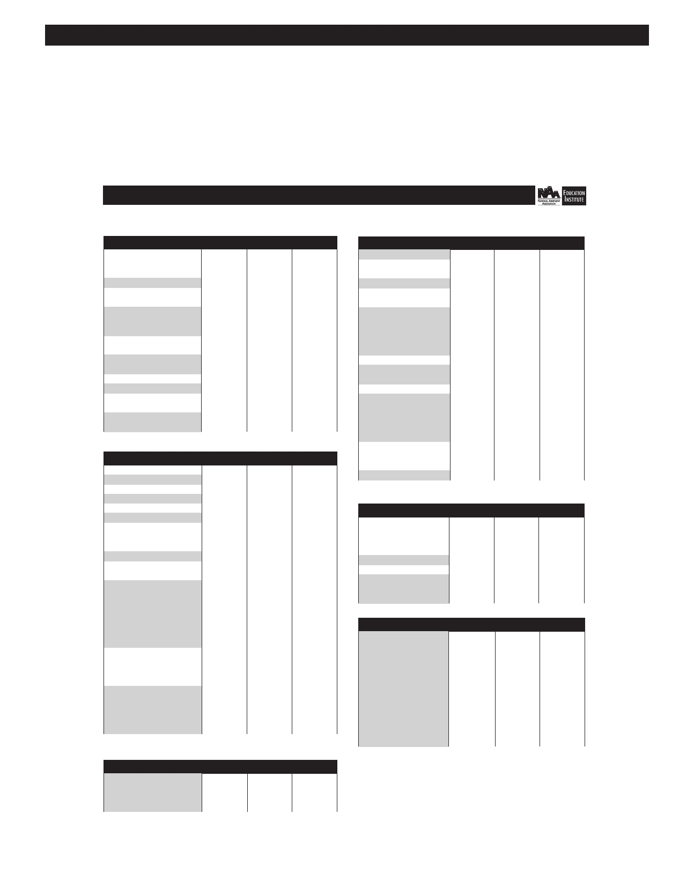
PA RT I C I PA N T R E S O U R C E G U I D E
Make-ready Checklists
Most apartment communities use some sort of tool to keep track of the make-ready work
and inspections that need to be done.
Sample Checklist
Make Ready Checklist
Date:
Unit:
Living Room
OK
Fix
Initials
Bathrooms
OK
Fix
Initials
Signage/Number
Receptacles/GFCI
Door Viewer
Lights
Door Finish
Walls
Lock Set
Tile
Frame/Threshold
Ceiling
Wall Switches
Floor
Door Stop
Toilet Mechanics
Walls
Toilet Seat
Ceiling
Shower Head
Receptacles
Tub Spout
Baseboards
Tub Stopper
Windows
Mixer Valve
Window Locks
Grout/Caulking
Lights
Shower Doors
Thermostat
Sink
Vents
Aerator
Cable Connection
P-Trap
Water Heaters
TP Holder
Preventive Maint.
Towel Bar
Faucet
Exhaust Fan
Kitchen
OK
Fix
Initials
Mirror
Walls
Medicine Cabinet
Floors/Vinyl
Preventive Maint.
Ceiling
Lights
Receptacles
Bedrooms
OK
Fix
Initials
GFCI
Walls
Cabinets
Ceiling
Drawers
Baseboard
Counters
Receptacles
Caulking
Closet Doors
Sink
Closet Shelves
Faucet
Window/Locks
Disposal
Doors/Handles
Plumbing
Preventive Maint.
Dishwasher
Refrigerator
Range
Mandatory Items
OK
Fix
Initials
Hood
Entry Door Lock
Microwave
Window Locks
Vents
Slider Lock
Baseboard
Storage Lock
Ref. Coils, Clean
Fire Alarm
Paint
Fire Extinguisher
A/C
Garage Door Opener
Heating
A/C Filter
Vinyl
Hood Filter
Aerator
Sub Panel
Preventive Maint.
Porch Lighting
Preventive Maint.
Blinds
OK
Fix
Initials
Note: Shaded tasks may be performed after move-in.
Cords
Talk with your supervisor to see what your
Guides
company allows.
Slats
Screens
©2011 National Apartment Association.
2

PA RT I C I PA N T R E S O U R C E G U I D E
Make-ready Checklists (continued)
Make-ready Inspections
Most apartment communities conduct at least two make-ready inspections.
The first inspection is performed with the current resident just before move-out—or immediately afterwards. It identifies:
The second inspection verifies that the apartment is ready for its new residents.
The community or maintenance service manager is mostly likely to do these inspections.
During a make-ready, some managers leave a copy of the inspection checklist in the vacant apartment for make-ready team
members to use. Team members read the list to see what they should do, and then check off the items as they’re completed.
Other managers use the inspection checklist to compile make-ready assignment sheets that are regularly updated. Each
team member gets a copy to keep track of his or her make-ready assignments in more than one apartment at a time.
The Make-Ready Board
The Make-Ready Board is a tool that maintenance technicians and office personnel use to keep track of the different tasks
required to restore an apartment back to its original condition after a resident moves out.
This is a process known as the Make-Ready Process and requires that after a resident moves out maintenance technicians
start by inspecting the apartment to make an assessment of the work needed to be done to get it ready for a new resident
moving in. The Make-Ready Process continues with removing any trash from the apartment, changing the lock to a vacant
lock, painting the apartment, followed by maintenance repairs, cleaning, and carpet cleaning or replacing, and finally
inspecting the apartment to ensure the apartment is 100% ready for the new resident.
See a sample Make-Ready Board in the Appendix.
3

PA RT I C I PA N T R E S O U R C E G U I D E
You Try It:
Mini Make-ready Inspection
Now, you get a chance to try out your make-ready inspection skills. You’re going
to team up with a partner, and for the next ten minutes, you’ll perform a mini
make-ready inspection.
Check Out These Areas and Take Notes:
Ceilings:
Walls:
Floors or carpet:
Doors and windows:
Baseboards, trim, or tile:
Other:
4

PA RT I C I PA N T R E S O U R C E G U I D E
Also Check Out These Areas and Take Notes:
Kitchen:
Master Bedroom:
Master Bath:
Living Room:
Other:
5

PA RT I C I PA N T R E S O U R C E G U I D E
Group Discussion:
Make-ready Ideas and Advice
Here’s a chance for you to share your best make-ready ideas, as well as get the best
advice of others.
My Best Make-Ready Ideas and Advice:
Ideas and Advice from Others:
6

PA RT I C I PA N T R E S O U R C E G U I D E
Key Takeaways:
Make-ready Maintenance
Here are the key takeaways related to make-ready maintenance:
team or owner. Develop your “make-ready eye.”
minimize lost rent.
7

PA RT I C I PA N T R E S O U R C E G U I D E
Notes:
8
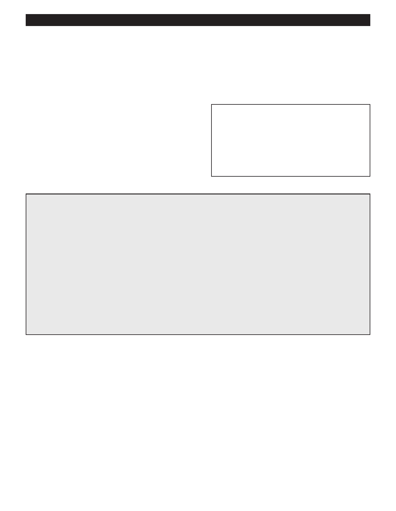
PA RT I C I PA N T R E S O U R C E G U I D E
Caulking
We’ve all seen those Do-It-Yourself television programs that make caulking look easy,
but getting a finished caulk job that’s smooth, consistent, and professional-looking can
be tricky. Until now
Safety
Tools and Materials
Needed
using silicone caulk)
for the intended use)
rags
blade scraper
Choosing the Right Caulk
Acrylic Latex Caulk:
The general purpose workhorse. Fast drying. Can be painted. Can be cleaned up with water. Best for caulking around
wood trim and thin joints in dry areas.
Vinyl Latex Caulk:
OK for wet areas. Adheres very well. Fast drying. Can be painted. Can be cleaned up with water.
Silicone Caulk:
The caulk of choice for showers, tubs, and other areas exposed to water. Outstanding adhesion. Long life. Mildew
resistant and watertight. Won’t yellow or discolor. Usually cannot be painted. Must use rubbing alcohol for clean-up.
Also releases ammonia during curing; work with it in a ventilated area.
Butyl Rubber Caulk:
Primarily for outdoor use. Great sealant for storm windows and doors, downspout and gutter seams. Fills larger joints
well when used with a caulking rod or backer rod.
Notes:
9

PA RT I C I PA N T R E S O U R C E G U I D E
Caulking (continued)
How-to Steps
For Latex Caulk, follow Steps: 1, 3, 4, and 5
For Silicone Caulk, follow Steps: 1, 2, 3, 4, and 5
Step 1: Remove the Old Caulk
1. Remove all the old caulk with a retractable razor blade scraper.
2. Vacuum up the open joint—and any debris. *If mold is present, clean and rinse thoroughly.
Step 2: Mask the Edges of the Joint (only if silicone caulking is used, not necessary if latex is used)
Masking is secret to getting a clean, sharp edge—and a professional-looking caulk job, especially with silicone caulk.
Using tape to mask both edges of the joint allows you to set the width of the joint and protect the surrounding material
from the caulk. It also prevents the caulk from smearing during smoothing.
1. Use blue painter’s tape to mask off both surfaces where you want the edge of the caulk to stop. Use long sections of tape
to do this, and keep the tape straight.
2. Press the edge of the tape along the caulk joint.
Tip: The joint will look best if you tape it “thin,” about 1/8” to 1/4” width.
Step 3: Apply the Caulk
1. Open the caulk tube with as small an opening as possible for the joint opening and place it in the caulk gun.
2. Apply the caulk at a 45-degree angle. Squeeze hard enough to get the caulk fully into the joint.
• Tip: Work at a slow, consistent speed. The smoother you make the joint to start with, the easier the job will be.
For latex caulk:
- use sponge to wet finger and tool the joint
- After using your finger, use the edge of a sponge to finish
For silicone caulk:
- Use plastic spoon to tool joint
- Allow extra caulk to stay on blue tape
- Remove tape as caulk starts to “skin.”
Step 4: Smooth the Joint.
1. Smooth the caulk joint by working from one end to the other. Use firm pressure.
2. As your finger becomes covered with caulk, wipe it off with the dampened rag. Re-wet your finger.
3. Continue smoothing until the job is finished.
Step 5: Finish Up the Job
Remove the blue painter’s tape used to mask the joint. Pull the tape away from the joint both slowly and at an angle.
10

PA RT I C I PA N T R E S O U R C E G U I D E
Ceilings and Walls:
Fixing a Dent or Gouge in Drywall
Small drywall dents and gouges are easy to fix with a spackle knife and wallboard
joint compound.
Safety
Tools and Materials Needed
aluminum square with a handle
mounted on its underside)
How-to Steps:
1. Trim away loose or frayed paper from the gouge with a utility knife.
2. Place an appropriate quantity of joint compound into a metal bread pan or onto
a hawk.
Note: Joint compound shrinks as it dries. For larger gouges, mesh tape may be
needed so that less layers of joint compound are needed.
3. Pick up a small quantity of compound on the corner of a spackle knife and
spread it over the damaged area.
4. Hold the knife on the wall at a low angle and draw it across the compound
horizontally, then wipe the knife clean on the edge of the pan and make a
second pass vertically.
5. Let the compound dry.
6. Apply a second coat of compound, but this time, use more compound and
extend it a little beyond the first coat.
7. When the patch is dry, sand lightly and apply primer over the repaired surface
before applying a paint topcoat.
Notes:
*Can use spackle for repair in one coat. Wet knife to finish. (can NOT sand) – Faster repair
11

PA RT I C I PA N T R E S O U R C E G U I D E
Ceilings and Walls:
Fixing a Popped Nail or Screw in Drywall
Drywall nail pops occur when drywall screws or nails loosen over time. As a result, the
drywall moves and the nail heads push through the surface, causing a blemish.
Safety
Tools and Materials Needed
How-to Steps:
1. Drive drywall screws through the drywall and into the framing about 3 inches from the nail pop, on both sides. Drive the
heads far enough to sink them slightly below the surface, but don’t break the paper.
2. Remove the existing nail, the one that is “popped,” then carefully “dimple” the popped nail using a hammer. Make a
depression in the drywall that can be filled with joint compound at each nail pop.
3. Fill the dimples with joint compound.
4. Cover each drywall screw head and dimple with a thick coat of compound, then skim off the excess with a wallboard knife.
5. Allow the compound to dry.
6. Apply a second coat, if needed, and allow it to dry.
7. Sand the area with fine-grit sandpaper, feathering the edges into the surrounding wall.
8. Wipe the surface clean.
9. Prime and paint the area, blending in with the paint on the rest of the wall.
TIP: Wet sanding with a sponge = (No Dust)
Notes:
12

PA RT I C I PA N T R E S O U R C E G U I D E
Ceilings and Walls:
Repair a Small Hole in Drywall
Repairing small drywall holes (up to four inches) is relatively easy when you use a newer
repair material—a self-adhesive mesh that holds a metal drywall patch.
Safety
Tools and Materials Needed
patch
sanding screen
Notes:
13
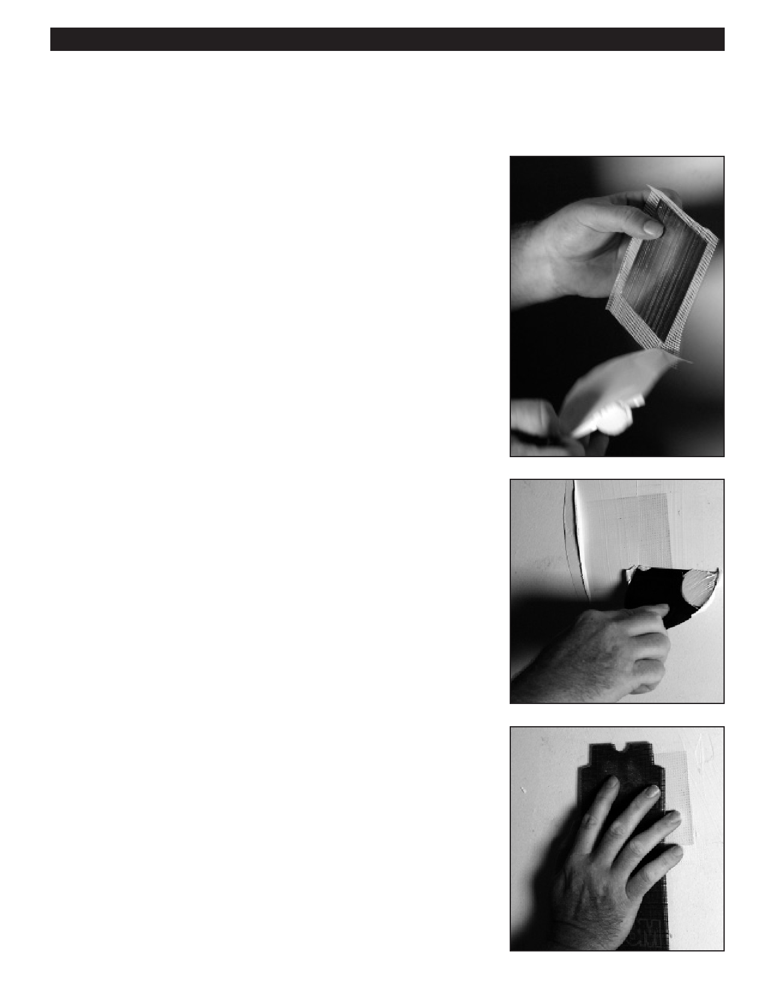
PA RT I C I PA N T R E S O U R C E G U I D E
Ceilings and Walls:
Repair a Small Hole in Drywall (continued)
How-to Steps:
Step 1: Prepare the Area
1. Remove any loose drywall. Cut away any torn paper with a utility knife.
2. Measure the size of the drywall hole, then get the correct size adhesive mesh/
metal drywall patch.
Step 2: Apply the Patch
Peel the backing from the patch, then stick it over the small hole.
Step 3: Apply Wallboard Joint Compound
1. Using a wallboard taping knife, trowel on two or three layers of wallboard joint
compound over the wall patch.
2. Cover all the pores in the adhesive mesh. Extend and “feather” the compound
past the patch by at least 6” so it will blend into the surrounding area.
3. Let the compound dry.
4. Use a sanding block or drywall sanding screen to sand the repaired area
smooth.
Tip: Try not to use sandpaper and your hand. If you do, you won’t get the
sanding flat, and the patch will be obvious when it is painted. Sanding block or
sponge will provide a smoother surface. Wet sand for No Dust.
5. Look at the repair from side angles to see if it looks smooth. If you’re happy
with what you see, prime and paint. If not, repeat steps 1 to 4.
Step 4: Prime and Paint
1. Prime the repaired area with an appropriate primer for the type of paint
you’re using.
Tip: To help hide the patch, use a small roller with a medium nap. If you
brush the primer on the wall, it will have a different texture to the surrounding
wall paint.
2. Let the primer dry.
3. Paint the patch.
14

PA RT I C I PA N T R E S O U R C E G U I D E
Ceilings and Walls:
Patch a Larger Hole in Drywall
When you patch a larger hole in drywall (up to about 24 inches square) you need to
provide not only an actual drywall patch, but also the structural support for it.
Safety
Tools and Materials Needed
utility knife
larger than damaged area
to 1-1/2” long
sanding screen
How-to Steps:
Step 1: Prepare Opening
1. Using a straight edge (or preferably a framing square), mark off a square or
rectangular section around the large drywall hole.
2. Cut through the paper surface on the marked lines using a wallboard saw,
keyhole saw, or utility knife.
Step 2: Install Support Blocking
The patch will be supported and fastened to two of the sides of the opening
with wood support blocking. Use 1x4 or a 2x4 scrap wood for the support.
1. Cut two lengths of wood 4” to 6” longer than the longest length of the
opening.
2. Place one length of wood along the longest edge inside the hole so that
half the width is over the opening and the other half is over the existing
wallboard.
3. Position the blocking so you have equal overlap of the board at each end
of the opening.
4. Hold the board in this position, then fasten it in place with 1” to 1-1/2” long
drywall screws. Place screws at each end and also about 6” apart along
the length of the opening.
5. Repeat steps 1 to 4 for the other side of the opening.
15

PA RT I C I PA N T R E S O U R C E G U I D E
Ceilings and Walls:
Patch a Larger Hole in Drywall (continued)
Step 3: Install Drywall Wallboard Patch
Use the same thickness of wallboard for the patch.
1. Measure the opening.
2. Cut a piece of drywall to fit the opening.
3. Place the patch in the opening with the light-colored paper side facing out.
4. Fasten the patch to the blocking supports with drywall screws. Place screws in each corner and also about 6” apart along
the lengths of the opening.
Step 4: Tape Joints of Drywall Patch
You could use paper drywall joint tape and drywall mud, but the repair is easier if you use a fiberglass mesh adhesive backed
joint tape. This tape is stronger and does not require drywall mud bedding.
Cut lengths of the fiberglass mesh tape and adhere them to the joints of the patch. Cover each length of seam with its own
continuous piece of tape, and overlap the corner joints.
Step 5: Apply Wallboard Joint Compound
Use wallboard joint compound, not spackle. Spackle is thicker and won’t spread as easily—it will also make the finishing work
more difficult.
1. Using a wallboard taping knife, trowel on two or three layers of wallboard joint compound over the wall patch.
2. Cover all the pores in the adhesive mesh. Extend and “feather” the compound past the patch by at least 6” so it will blend
into the surrounding area.
3. Let the compound dry.
4. Use a sanding block or drywall sanding screen to sand the repaired area smooth.
Tip: Try not to use sandpaper and your hand. If you do, you won’t get the sanding flat, and the patch will be obvious when
it is painted.
5. Look at the repair from side angles to see if it looks smooth. If you’re happy with what you see, prime and paint. If not,
repeat steps 1 to 4.
Step 6: Prime and Paint
1. Prime the repaired area with an appropriate primer for the type of paint you’re using.
• Tip: To help hide the patch, use a small roller with a medium nap. If you brush the primer on the wall, it will have a
different texture to the surrounding wall paint.
2. Let the primer dry.
3. Paint the patch.
Notes:
16

PA RT I C I PA N T R E S O U R C E G U I D E
Group Discussion: Painting and Wall Coverings
Surface Preparation:
Priming:
Paint Application:
Notes:
17

PA RT I C I PA N T R E S O U R C E G U I D E
Ceiling and Walls: Repairing Plaster
Plaster walls and ceilings can develop small to large cracks from drying or ground
movement. Here are some tips for repairing them.
Safety
Tools and Materials Needed
sandpapers
Notes:
18
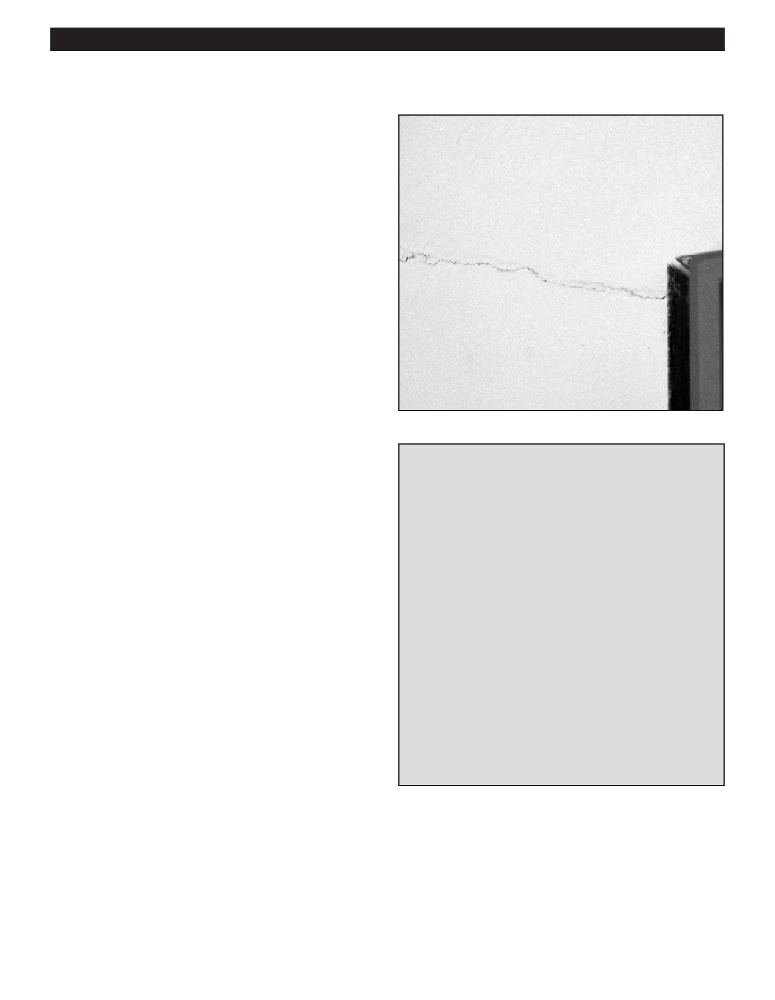
PA RT I C I PA N T R E S O U R C E G U I D E
Ceiling and Walls: Repairing Plaster (continued)
How to Repair a Small Crack
1. Widen the crack to about 1/8 inch using a hammer and
chisel, then remove any loose plaster.
2. Fill the crack with the plaster patch material you’ve
chosen, following the directions on the container.
3. Once the plaster is dry, sand smooth with progressively
finer sandpaper.
4. Prime and paint.
How to Patch a Large Crack
1. Widen the surface of the crack using a hammer
and chisel.
2. Remove debris with a small, soft-bristle brush.
3. Thoroughly wet the crack so it will absorb the
plaster patch.
4. Use a putty knife to spread the plaster patch in the hole.
5. Allow the patch to dry for 24 hours, or as directed by
the patch manufacturer.
Tips for Choosing Plaster Patch Materials
6. Apply a second coat of plaster patch and allow it to dry
before continuing.
compound, spackling compound, or patching
Tip: Instead of a second coat of plaster patch, apply a
plaster. Each has its advantages and disadvantages.
top coat of joint compound. It’s easier to sand and finish.
Joint compound applies smoothly and sands easily,
7. Sand the surface smooth.
but it shrinks and takes 24 hours to dry. Spackling
8. Prime and paint.
compound dries quickly and doesn’t shrink much,
but it’s harder to sand smooth. Patching plaster
dries in as little as two hours, doesn’t shrink, and is
durable, but it is difficult to sand.
or crack. Smaller cracks and holes in plaster can
be patched using a plaster pencil or spackling
compound. Larger areas of damage need a general
patching substance or plaster product.
safety recommendations for them.
19
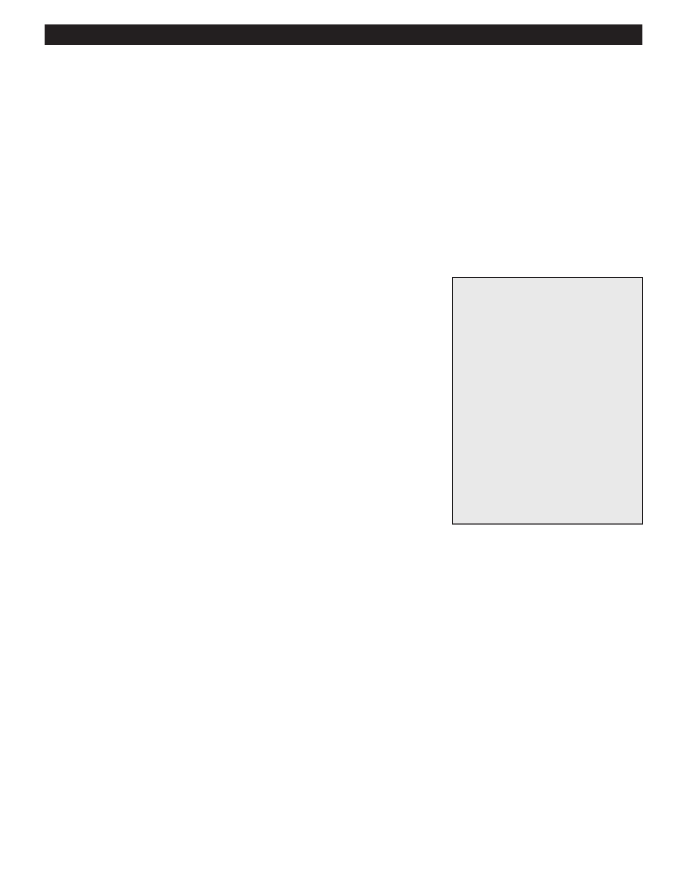
PA RT I C I PA N T R E S O U R C E G U I D E
Ceilings and Walls:
Repairing Orange Peel Surfaces
Orange peel is also known as splatter or eggshell texture. Even though it’s a popular and
forgiving wall texture, it can be damaged by the activities of everyday life.
There are many ways to repair an orange peel surface, but two of the most common
involve either a manual approach or a spray approach. Those are the techniques you’ll
learn here.
Safety
Tools and Materials Needed
compound (manual technique)
Before You Begin with Any Technique
1. Repair any damaged drywall first. See pages 10 to 18 for these repair steps.
technique)
2. Practice your technique first. Use cardboard, scrap drywall, plywood, or any
hard flat surface to do this.
block (manual technique)
technique)
technique)
Notes:
20

PA RT I C I PA N T R E S O U R C E G U I D E
Ceilings and Walls:
Repairing Orange Peel Surfaces (continued)
How-to Steps: Manual Technique
1. Mix enough thinned redi-mixed wallboard joint compound to fill the lower part of a paint tray. The consistency should be
like pancake batter.
2. Apply the compound to the damaged area using a 3/8” nap roller.
3. As you move away from the repaired area into the original textured area, feather out the rolling using lighter rolling pressure.
4. Do a final roll in one direction.
5. Allow the repair to dry completely. The effect won’t match yet—the repair will have peaks throughout.
6. Take a hand-sanding block with fine sandpaper and lightly sand the repaired area to level off the peaks and create the
orange peel effect.
7. Take a clean cloth like an old T-shirt and rub the repaired area to soften the edges of the sanded orange peel repair.
8. Prime and paint to match the surrounding area.
How-to Steps: Aerosol Spray Technique
1. Place a plastic drop cloth on the floor below the repair area and on any surrounding furniture.
2. Read the instructions for using the spray. Shake and “warm” the can as directed.
3. Depending on the product used, hold the can between 12” to 24” from the wall surface.
4. Spray using a circular motion. Spray only about 50%-75% of the repair area with texture.
5. Let dry and then paint.
How-to Steps: Using a Pressure Sprayer
One of the newest ways to repair textured walls and ceilings is with a gravity fed, manually powered pressure sprayer. When
you pull back the lever, the chamber sucks in the textured paint. When you pump, the lever pushes the paint out through the
front plate. By adjusting the front plate and lever, you can control the sprayed textured pattern.
This sprayer can create orange peel, splatter, knockdown, and popcorn textures. Consider using this tool if you’re repairing
areas too big for a can or two of spray.
1. Place a plastic drop cloth on the floor below the repair area and on any surrounding furniture.
2. Stand 3 to 4 feet from the wall. Maintain this distance while you spray.
3. To spray, move the sprayer in a sweeping motion. Pull the handle back as required for the amount of spray and push the
handle in completely to complete the stroke (release handle before end of stroke).
4. Rinse and clean the gun.
5. Let dry and then paint.
21
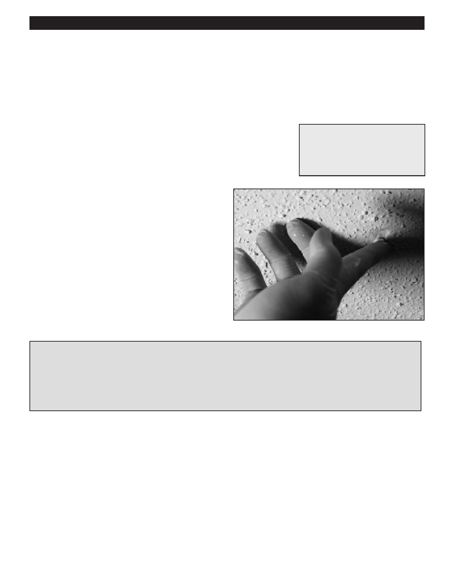
PA RT I C I PA N T R E S O U R C E G U I D E
Ceilings and Walls:
Repairing Cracked Popcorn Ceilings
If a popcorn ceiling has cracks, you can repair them with a patching compound designed
for textured ceilings.
Safety
Tools and Materials Needed
How-to Steps
1. Scrape around the cracks with a putty knife.
2. Use a paintbrush to clean off any dust.
3. Apply the patching compound by dabbing it onto the
ceiling with a small paintbrush or your finger. Use only a
small amount of compound.
Tips
corner to prevent the patching compound from getting on the wall.
Notes:
22

PA RT I C I PA N T R E S O U R C E G U I D E
Re-keying a Door Lock
Re-keying a lock involves changing the pins inside the lock so that the old key doesn’t
work and a new key will work.
Safety
Tools and Materials Needed
Be careful using any sharp or pointed objects.
How-to Steps
Note: Tailpiece may be different. Instructions #4, 5, 7, and 9 are for Weiser or Schlage. Kwickset and others will
disassemble differently.
1. Insert the tailpiece tool to remove the tailpiece.
2. Take out lock pin and spring.
3. Insert the pin.
4. Push the plug out of the cylinder using the follower tool. (Retain the top pins inside the cylinder.)
5. Take out the old bottom pins.
6. Use the key gauge to measure the depths of the cuts (notches) on the key to determine the size of pins needed
for the lock.
7. Load the cylinder with the bottom pins of the proper sizes. To do this, insert the key and look for a flat surface across
the top of the cylinder.
8. Verify that the pins are the correct sizes. To do this, insert the key and look for a flat surface across the top of
the cylinder.
9. Use the cylinder to push the follower tool out of the plug.
10. Attach the tailpiece.
11. Use the tailpiece tool to reinsert and lock the tailpiece in place to hold the lock together. Do not overtighten.
Notes:
23

PA RT I C I PA N T R E S O U R C E G U I D E
Changing a Door Lock
Changing a door lock is a fairly easy task to do and can usually be completed in about
15 minutes.
Safety
Tools and Materials Needed
Be careful using any sharp or pointed objects.
Notes:
24

PA RT I C I PA N T R E S O U R C E G U I D E
Changing a Door Lock (continued)
Each property will have their own Policy to
2
ensure that as residents move out, they no
longer have access to the empty apartment.
Let’s discuss some common related topics.
1) Vacant Lock
a. A Vacant Lock is one of a group of locks that are all keyed
alike. These are used while the apartment is empty so that
it has the same key as the other empty apartments.
b. The benefits of these locks are that all employees can
access to vacant units with the use of one key.
c. This key can be used to have employees and contractors
perform work in the units. Additionally, office employees
can show vacant-ready units to prospects with the same
3
key, making it very fast and efficient.
d. When a vacant-ready unit is leased, the locks are changed
from the Vacant Lock to a new lock (to that apartment) just
before the new resident move in, ensuring that the new key
has not been in the hands of anyone other than the new
resident and the company’s employee.
2) Key Security
a. Keys should be kept in a locked cabinet inside a locked
room or closet and should never be marked with the
apartment number.
b. There should be a process of checking keys out to
employees and vendors to keep track of them. This policy
may include the requirement that a vendor or contractor
leave a form of ID or collateral to ensure the return of the
5
key before they leave the property.
c. Follow Property/Company policy to ensure that all keys are
able to be located at all times.
3) Ensure no Duplicates
a. Keep track of the cut depths of the keys to record and
ensure that duplicates are not used anywhere on the
property.
b. Keep track of what lock is placed where to ensure that the
same keys never work on the same apartment again. (the
locks are not changed back to that apartment)
c. This log sheet should be stored in a secure location.
25
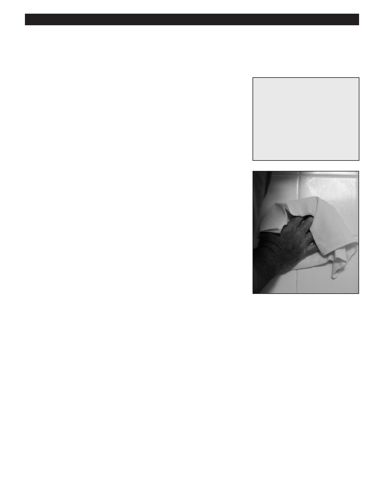
PA RT I C I PA N T R E S O U R C E G U I D E
Tile: Cleaning Grout
If grout is dirty, you can make it sparkle and shine again by following the steps below.
Safety
Tools and Materials Needed
OR all-purpose bleach-based
cleaning solution (use 1/4 cup of
chlorine bleach in one quart of
warm water)
How-to Steps
1. Spray on commercial grout cleaner or bleach-based solution.
2. Let cleaner soak into grout for several minutes.
3. Scrub grout with a stiff brush.
4. Rinse grout completely.
5. Dry grout with a clean white towel or paper towels.
6. Apply grout sealer to keep the grout clean for up to a year.
Notes:
26
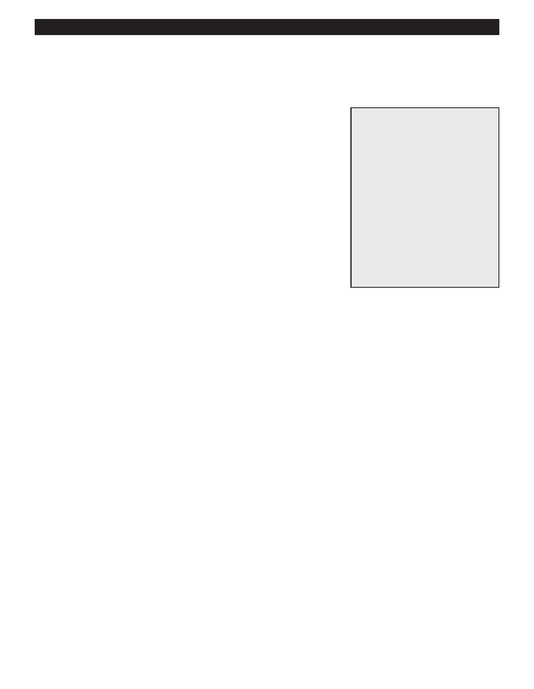
PA RT I C I PA N T R E S O U R C E G U I D E
Tile: Re-grouting Tile
Got chipped, cracked, or missing grout? It’s no problem—just regrout.
Safety
Tools and Materials Needed
OR all-purpose bleach-based
cleaning solution (use 1/4 cup of
chlorine bleach in one quart of
warm water)
Notes:
27

PA RT I C I PA N T R E S O U R C E G U I D E
Tile: Re-grouting Tile (continued)
How-to Steps
Step 1: Prepare the Area
1. Scrub the tile and grout thoroughly with a strong
household cleaner.
• If there is any mildew, scrub the tile joints with a
toothbrush dipped in bleach and rinse thoroughly.
2. Remove any damaged grout with a grout saw, putty
knife, or other sharp tool.
3. Vacuum up the mess.
Step 2: Apply Grout and Sealer
1. Mix grout according to the package instructions.
2. Scrub the area again, but this time, leave it damp.
3. Use a Grout Float to apply grout where needed,
wiping firmly.
4. Smooth the new grout with a clean, damp sponge.
5. Apply more grout as needed and smooth again, until
the tile joints are completely filled.
6. Apply more grout as needed and smooth again, until the
tile joints are completely filled. A “haze” of dried grouting
material will appear on the tile surface. Once this haze is
dry (not shiny anymore), remove with a clean terry cloth
towel. If this is done early you could save time on the
clean up by being able to omit step 7.
7. Scrub the tile with a clean cloth to remove any dried
grout.
8. Apply grout sealer.
28
PA RT I C I PA N T R E S O U R C E G U I D E
Tile: Replacing Tile
If tile is damaged, you can replace it without ruining the tiles around it.
Safety
Tools and Materials Needed
Notes:
29
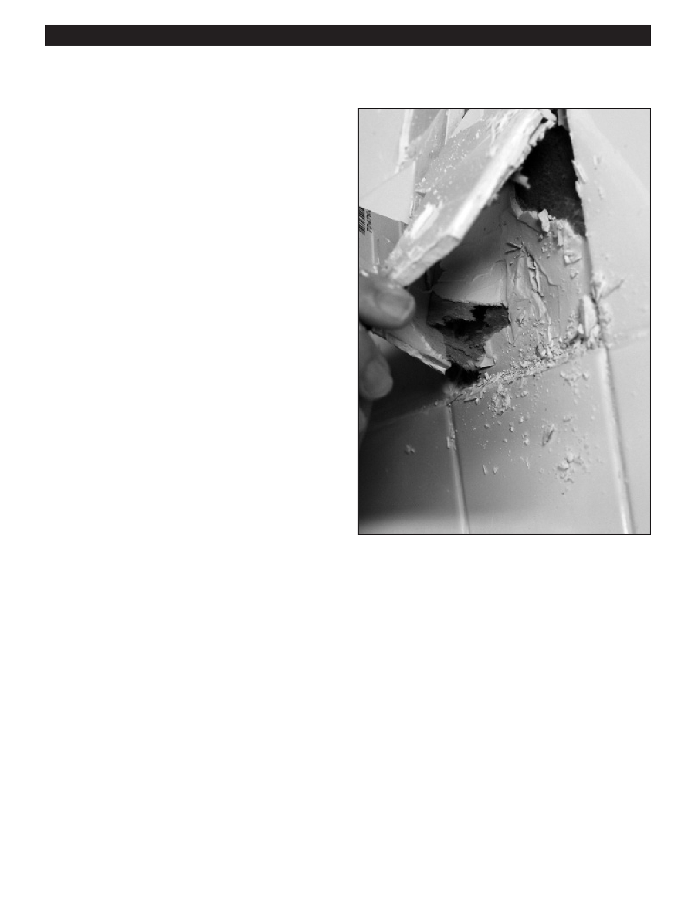
PA RT I C I PA N T R E S O U R C E G U I D E
Tile: Replacing Tile (continued)
Before removing old tile, scarpe the grout from
in-between the tile(s) to be removed and the
surrounding ones that will be kept to prevent
damage to them while the original is removed.
How-to Steps
Step 1: Remove the Damaged Tile
1. Drill a row of holes and score a line with a hammer and
cold chisel. Or, break up the tile with the hammer and
cold chisel.
2. Use a pry bar along the chisel line to pull pieces of the
old tile. (After the first old or broken piece of the tile
comes out, the rest will come out like a snap.)
3. Scrape out the old adhesive, if possible, with a
putty knife.
Step 2: Install the Replacement Tile
1. Spread new adhesive with a notched trowel.
2. Center a replacement tile in the patch area.
3. Place a block of wood over the new tile to protect its
surface, then seat the tile evenly with the surrounding
surface. (You may have to tap it gently with a hammer.)
4. Let the adhesive set according to package directions.
Step 3: Apply Grout
1. Mix a small batch of grout.
2. Use a clean, wet sponge to force grout into the seams,
then wipe off the excess. Repeat until the joint is filled.
3. Scrub the tile with a clean cloth to remove any dried
and excess grout.
4. Seal the grout with grout sealer.
30

PA RT I C I PA N T R E S O U R C E G U I D E
Notes:
Interior Maintenance and Repair Discussion
In this part of the training, you’ll get a chance to discuss other interior maintenance and
repair topics.
31

PA RT I C I PA N T R E S O U R C E G U I D E
Curb Appeal and Exterior Inspections
You already know the goal of curb appeal: to make sure that the outside appearance of
the apartment community—and its public areas inside—always look attractive to those
who see them.
Much like make-ready maintenance, you need to develop a careful eye for curb appeal. Learn to see the grounds through the
eyes of current residents, potential future residents, and those of your owner or management team.
You also need to guard against curb appeal maintenance becoming too routine, or just a bunch of items to check off on a list.
You need to keep asking yourself:
Curb appeal is so important that everyone on the community team must participate in it. And it’s your responsibility to do
what it takes to keep the community looking in tip-top shape as you complete the day’s work.
Notes:
32
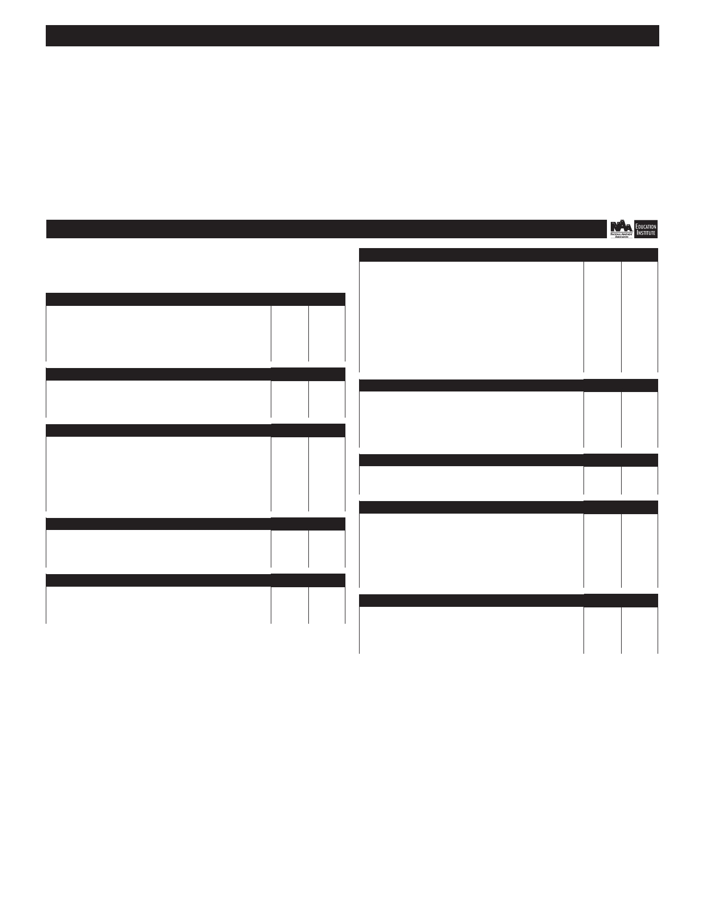
PA RT I C I PA N T R E S O U R C E G U I D E
Curb Appeal and Exterior Inspections (continued)
Curb Appeal Checklist
Many apartment communities use some sort of tool, like a checklist, to make sure that all
curb appeal standards are being met.
Curb Appeal Checklist
Complete this checklist at least once a week, or as often as
Office and Inside Common Use Areas
Yes
No
Adequate signs
your company recommends.
Signs in good condition
Exit signs clearly visible
Interior well-landscaped
Property Entrance
Yes
No
Walls and ceilings clean and in good condition
Adequate signs
Doors and windows clean and in good condition
Signs in good condition
Blinds and drapes clean and in good condition
Entrance well-landscaped
Tile floors clean and in good condition
Entrance free of trash and litter
Carpeted areas clean and in good condition
Roadway or street in good condition
Lights in working condition
Entrance and signs well-lit
Areas free of trash and litter
Bathrooms clean, fresh and free of litter
Landscaping and Grounds
Yes
No
Trees, shrubs and lawns look healthy
Inside Recreational Areas
Yes
No
Dead or unsightly plants removed
Rules posted, visible and in good condition
Seasonal plants in good condition
Equipment clean and working properly
Grounds free of trash and litter
Areas clean and free of litter
Mirrors and windows clean and undamaged
Building Exteriors
Yes
No
Lights in working condition
Building clean and appears structurally sound
Bathrooms clean, fresh and free of litter
Doors and windows clean and in good condition
Visible patios/balconies clean and uncluttered
Outside Recreational Areas
Yes
No
Dumpster area clean
Rules posted, visible and in good condition
Dumpster and perimeter fencing in good condition
Equipment clean, undamaged and working properly
Sidewalks in good condition and free of litter
Areas free of trash and litter
Areas well-lit
Mail areas free of trash and litter
Pool/Spa Areas
Yes
No
Rules posted, visible and in good condition
Common Entryways, Hallways, Breezeways
Yes
No
Pool/spa clean and water clear
Floors clean and free of litter
Safety equipment in place
Walls clean and undamaged
Fence gates latch properly
Stairwells and railings clean, uncluttered, and in good condition
Furniture well arranged, clean and undamaged
Areas well-lit
Areas well-landscaped
Areas well-lit
Parking Areas and Driveways
Yes
No
Areas free of trash and litter
Parking lot well-striped
Areas clean, free of trash and litter, and in good condition
Laundry Rooms
Yes
No
“No Parking Area” and “Fire Zone” well-marked
Floors clean and free of litter
Areas well-lit
Walls clean and undamaged
Machines clean, undamaged and in working order
Trash receptacles available and in good condition
Lights in working condition
Possible Uses
important task.
33
PA RT I C I PA N T R E S O U R C E G U I D E
Curb Appeal and Exterior Inspections (continued)
Swimming Pool Area Safety
Your apartment community must meet certain federal, state, and local safety requirements to keep these areas safe for
residents and guests. These requirements include—but are not limited to—safety measures such as having:
To make sure your community is in full compliance with all federal, state, and local requirements, check with your
management team.
As for the water in the pool or spa itself, you may be required to have special training and certification before you’re permitted
to work on improving or maintaining water quality. If you’re interested in getting this training, talk with your supervisor.
34

PA RT I C I PA N T R E S O U R C E G U I D E
Pool Equipment and Tools:
Pollution in pool water comes either from the environment or is carried into the water by swimmers. Environmental pollution
includes dust, leaves, chemical wastes, pollen, spores, and bacteria and so on, that are blown into the water by the wind.
Swimmers carry other pollutants into the water such as sweat, suntan oils, urine, bacteria, viruses, etc.
The basic components of a pool system are: Pump, backwash valve and filter.
The pool pump ensures that the pool water moves through the filter several times every day, thus removing unwanted
pollutants and disinfected organic materials as quickly as possible.
Backwashing, via the backwash valve, sends water backwards through the filter and flushes the trapped dirt out and goes
into the waste drain. The technician will know it is time to backwash when the filter pressure is over 10 psi higher than normal
as read on the filter pressure gauge. After backwashing, you will notice an increase in return pressure to the pool.
Today, the most popular type of water filter for pools are sand filters, a type of filter that is much easier to maintain than
previous models. When the filter has accumulated a large amount of dirt, the water cannot pass freely through the sand and
the filter loses efficiency as the pressure increases.
Water Chemistry:
Every day, swimming pool water needs to be tested to ensure certain levels of pool chemicals. A balanced swimming
pool needs to have the pH and chlorine levels checked and corrected on a regular basis, the other chemical values being
measured less frequently.
The pH is one of the most important factors in pool water balance and it should be tested and corrected every day. pH is
the measure of how acid/ alkaline the swimming pool water is. A pH of 7.0 is neutral; below 7.0 is acidic and above 7.0 is
alkaline. As a reference, the pH of our eyes is 7.5. According to the National Swimming Pool Foundation, the standard for
acceptable pH level of a swimming pool is between 7.4 and 7.6
The desirable level of available chlorine in the pool is 1.0-3.0ppm, with 2.0ppm being the recommended ideal. Add chlorine
according to the test results. For a spa or hot tub, the best sanitizing agent is Bromine since it works more effectively at higher
temperature. As a rough guide, a pool needs about 600 grams of granular chlorine (2-3 cups) for each 50,000 liters of water
twice a week during the hot swimming season.
As with any maintenance procedure, consult your state and local recommendations as it relates to the chemicals in swimming
pool water.
35

PA RT I C I PA N T R E S O U R C E G U I D E
Group Discussion: Curb Appeal Ideas and Advice
Here’s a chance for you to share your best curb appeal ideas, as well as get the best
advice of others.
My Best Curb Appeal Ideas and Advice:
Ideas and Advice from Others:
36
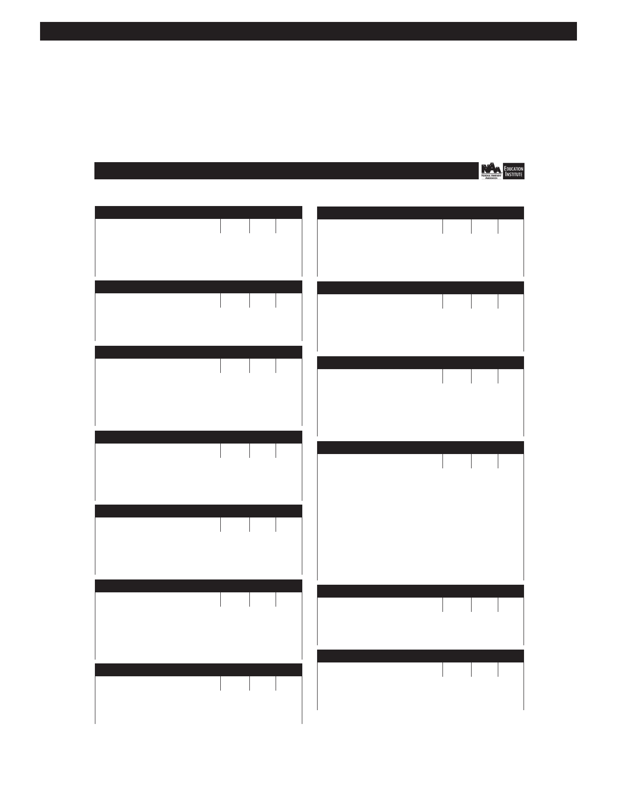
PA RT I C I PA N T R E S O U R C E G U I D E
Inspecting Building Exteriors
A semi-annual inspection of building exteriors can identify potential problems before they
become incredibly costly to repair—or potentially hazardous to residents and community
team members.
Building Exterior Checklist
Inspector:
Date:
Complete this checklist at least twice a year—in spring and in fall—or as often as your company recommends.
Good
Fair
Poor
Good
Fair
Poor
LAND GRADING
o
o
o
ROOF
o
o
o
Check for: Sink holes, low areas that hold water, trip
Check for: Shingles curling or missing, tiles tiles missing
hazards, needs regrading.
or cracking, storm damage, holds color, sagging roof.
Notes:
Notes:
Good
Fair
Poor
Good
Fair
Poor
RETAINING WALLS
o
o
o
LEADERS/GUTTERS
o
o
o
Check for: Leaning, deteriorating materials, wash outs.
Check for: Gutters missing or leaning, debris in gutter;
Notes:
down spouts missing or plugged.
Notes:
Good
Fair
Poor
LANDSCAPING
o
o
o
Good
Fair
Poor
Check for: Plants with disease, insects interfering with
CHIMNEY
o
o
o
the building or A/C units, traffic problems for pedestri-
Check for: Damaged vent stacks, separated stacks,
ans, overall look, missed areas.
creosote build-up in vents, damaged vents and damp-
Notes:
ers, working dampers.
Notes:
Good
Fair
Poor
DRIVEWAY/WALKWAYS
o
o
o
Good
Fair
Poor
Check for: Potholes, trip hazards, striping and markings
SIDING
o
o
o
in good shape.
Check for:
Notes:
Good
Fair
Poor
GARAGE
o
o
o
Check for: Proper ventilation, lighting, markings, signs,
problem areas.
Notes:
Notes:
Good
Fair
Poor
Good
Fair
Poor
DECKS/PATIOS
o
o
o
TRIM
o
o
o
Check for: Overall structural soundness, deteriorating
materials, hand rails tight and secure, missing boards or
Check for: Damaged or missing, misaligned.
slats, coatings in good shape.
Notes:
Notes:
Good
Fair
Poor
Good
Fair
Poor
WINDOWS
o
o
o
PORCHES
o
o
o
Check for: Damaged, broken, leaking, misaligned.
Check for: Trip hazards, coatings, hand rails, lighting.
Notes:
Notes:
© 2011 National Apartment Association. All rights reserved.
37

PA RT I C I PA N T R E S O U R C E G U I D E
Notes:
38

PA RT I C I PA N T R E S O U R C E G U I D E
Key Takeaways
It’s not easy to sum up a course that has covered as much ground as this one has.
But we’ve tried, by identifying eight key takeaways that you can use once you get back
on the job:
1. Develop both a make-ready and curb appeal “eye.” Learn how to see a just-vacated apartment—or the apartment
grounds and public areas—through the eyes of current and future residents, as well as those of your management team or
owner.
2. Complete make-ready and curb appeal activities as quickly as you can without compromising quality.
3. Even though you may have hundreds of make-ready and curb appeal activities under your belt, resist the temptation
to think of them as “just another kitchen to clean” or “one more checklist to get done.” Both activities demand your full
attention and best effort.
4. Use the checklists and tracking tools your community provides for make-ready and curb appeal maintenance. If you don’t
have these tools, consider using the sample checklists in your Resource Guide .
5. Use the repair techniques you’ve learned today to improve the speed and quality of your work.
6. Do your best to keep up with the latest advances in tools, technology, and techniques as they relate to interior
maintenance and repair.
7. Make sure your swimming pool and spa areas are in full compliance with all federal, state, and local safety requirements
at all times.
8. Consider doing semi-annual inspections of building exteriors to identify issues before they become costly to repair or
hazardous to the community.
39

PA RT I C I PA N T R E S O U R C E G U I D E
Action Plan
Based on what you’ve learned today, write down one thing you want to start, stop, and
continue doing when you return to your apartment community.
One Thing I Want to Start Doing:
One Thing I Want to Stop Doing:
One Thing I Want to Continue Doing:
Work on these three things for the next month. You’ll most likely improve your on-the-job
skills, feel more confident, and enjoy your time as a maintenance technician even more.
40

PA RT I C I PA N T R E S O U R C E G U I D E
Notes:
41

PA RT I C I PA N T R E S O U R C E G U I D E
Notes:
42
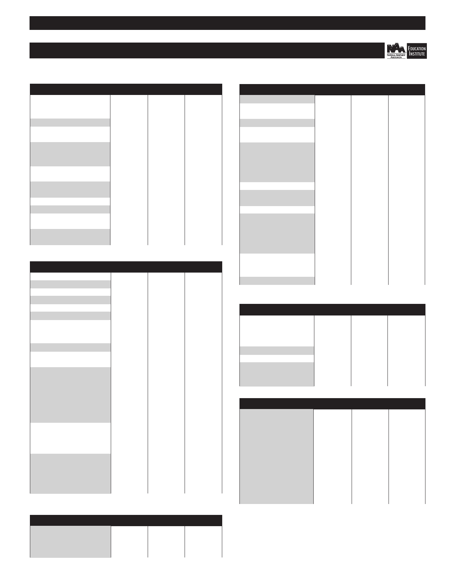
PA RT I C I PA N T R E S O U R C E G U I D E
Make Ready Checklist
Date:
Unit:
Living Room
OK
Fix
Initials
Bathrooms
OK
Fix
Initials
Signage/Number
Receptacles/GFCI
Door Viewer
Lights
Door Finish
Walls
Lock Set
Tile
Frame/Threshold
Ceiling
Wall Switches
Floor
Door Stop
Toilet Mechanics
Walls
Toilet Seat
Ceiling
Shower Head
Receptacles
Tub Spout
Baseboards
Tub Stopper
Windows
Mixer Valve
Window Locks
Grout/Caulking
Lights
Shower Doors
Thermostat
Sink
Vents
Aerator
Cable Connection
P-Trap
Water Heaters
TP Holder
Preventive Maint.
Towel Bar
Faucet
Exhaust Fan
Kitchen
OK
Fix
Initials
Mirror
Walls
Medicine Cabinet
Floors/Vinyl
Preventive Maint.
Ceiling
Lights
Receptacles
Bedrooms
OK
Fix
Initials
GFCI
Walls
Cabinets
Ceiling
Drawers
Baseboard
Counters
Receptacles
Caulking
Closet Doors
Sink
Closet Shelves
Faucet
Window/Locks
Disposal
Doors/Handles
Plumbing
Preventive Maint.
Dishwasher
Refrigerator
Range
Mandatory Items
OK
Fix
Initials
Hood
Entry Door Lock
Microwave
Window Locks
Vents
Slider Lock
Baseboard
Storage Lock
Ref. Coils, Clean
Fire Alarm
Paint
Fire Extinguisher
A/C
Garage Door Opener
Heating
A/C Filter
Vinyl
Hood Filter
Aerator
Sub Panel
Preventive Maint.
Porch Lighting
Preventive Maint.
Blinds
OK
Fix
Initials
Cords
Guides
Slats
Screens
©2011 National Apartment Association.
43
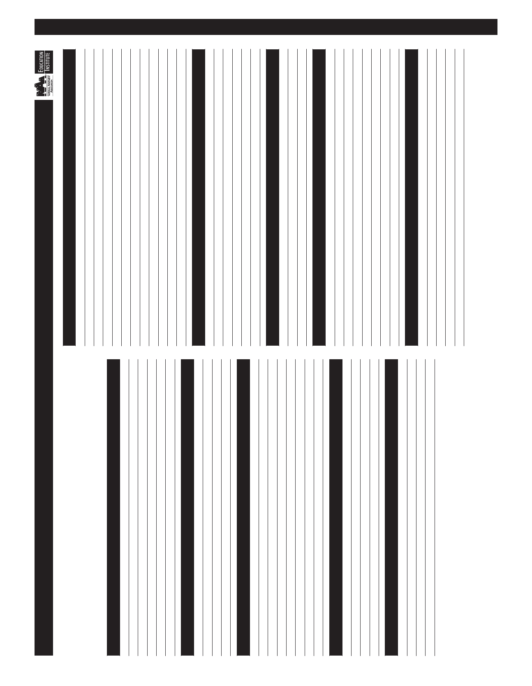
PA RT I C I PA N T R E S O U R C E G U I D E
44
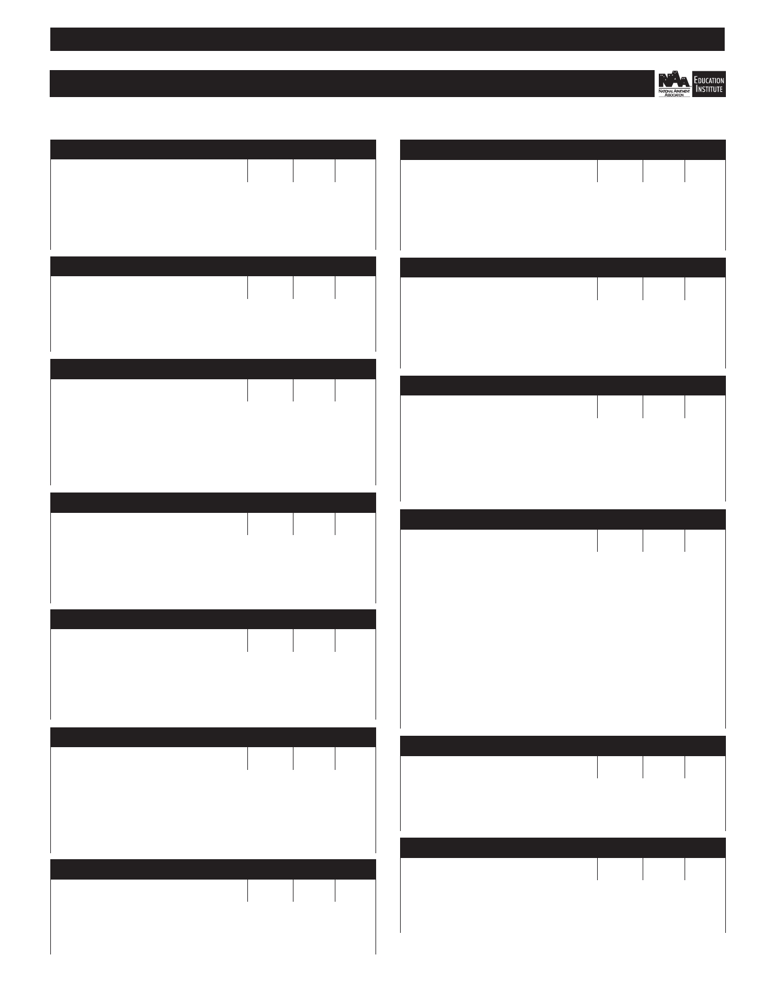
PA RT I C I PA N T R E S O U R C E G U I D E
Building Exterior Checklist
Inspector:
Date:
Complete this checklist at least twice a year—in spring and in fall—or as often as your company recommends.
Good
Fair
Poor
Good
Fair
Poor
LAND GRADING
o
o
o
ROOF
o
o
o
Check for: Sink holes, low areas that hold water, trip
Check for: Shingles curling or missing, tiles tiles missing
hazards, needs regrading.
or cracking, storm damage, holds color, sagging roof.
Notes:
Notes:
Good
Fair
Poor
Good
Fair
Poor
RETAINING WALLS
o
o
o
LEADERS/GUTTERS
o
o
o
Check for: Leaning, deteriorating materials, wash outs.
Check for: Gutters missing or leaning, debris in gutter;
Notes:
down spouts missing or plugged.
Notes:
Good
Fair
Poor
LANDSCAPING
o
o
o
Good
Fair
Poor
Check for: Plants with disease, insects interfering with
CHIMNEY
o
o
o
the building or A/C units, traffic problems for pedestri-
Check for: Damaged vent stacks, separated stacks,
ans, overall look, missed areas.
creosote build-up in vents, damaged vents and damp-
Notes:
ers, working dampers.
Notes:
Good
Fair
Poor
DRIVEWAY/WALKWAYS
o
o
o
Good
Fair
Poor
Check for: Potholes, striping and markings in good
SIDING
o
o
o
shape.
Check for:
Notes:
Good
Fair
Poor
GARAGE
o
o
o
Check for: Proper ventilation, lighting, markings, signs,
problem areas.
Notes:
Notes:
Good
Fair
Poor
Good
Fair
Poor
DECKS/PATIOS
o
o
o
TRIM
o
o
o
Check for: Overall structural soundness, deteriorating
materials, hand rails tight and secure, missing boards or
Check for: Damaged or missing, misaligned.
slats, coatings in good shape.
Notes:
Notes:
Good
Fair
Poor
Good
Fair
Poor
WINDOWS
o
o
o
PORCHES
o
o
o
Check for: Damaged, broken, leaking, misaligned.
Check for: Trip hazards, coatings, hand rails, lighting.
Notes:
Notes:
© 2011 National Apartment Association. All rights reserved.
45
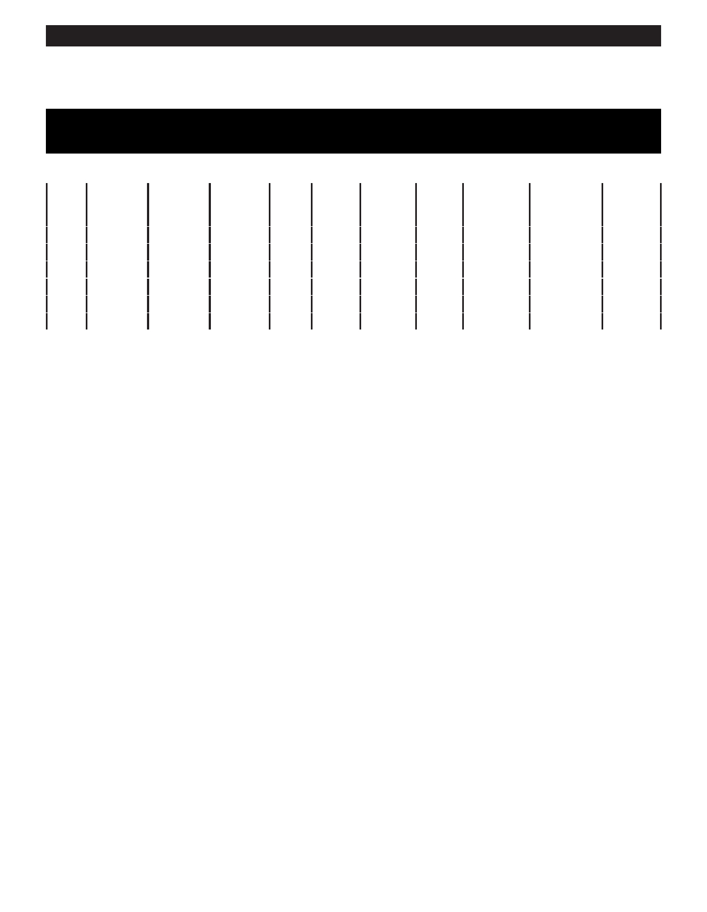
PA RT I C I PA N T R E S O U R C E G U I D E
MAKE READYBOARD
Apt # Floor Plan Move-Out Trash-Out Paint
Make- Cleaning Carpet
Final
Comments
Move-In
Date
Ready
Inspection
Date
46

NAAEI thanks you for taking this portion of the Certificate for Apartment Maintenance Technicians
(CAMT) series.
Handouts from this course, including CAMT Skill Checks and other resources may be downloaded from
the NAA Web site by visiting:
www.naahq.org/education/CandidatesOnly
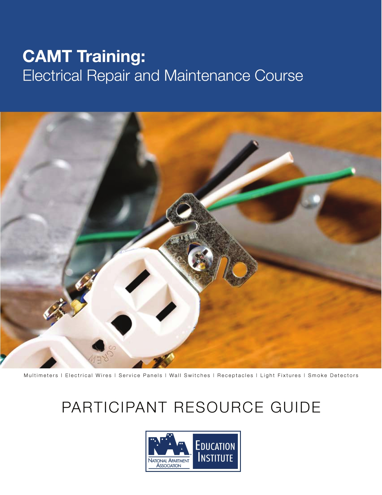

CAMT Online Training
Don’t Forget…Take the Online Training for this CAMT Course!
To continue your education, you can also complete a brief online training course on Electrical
Repair and Maintenance .
The course will take approximately 30 minutes. You can access the course on your home
computer, a computer in a public place such as a library, or a computer at work.
Here’s how to do it:
1. Go to the following web site: http://www.naahq.org/education/onlinelearning/pages/login.htm
2. Type the ID and password you received at this CAMT training.
3. Once you are logged in, click on the blue Designations tab on the left side of the screen, next to
“courses.”
4. Change the Designation Type field to “Designations I am Pursuing” and click on Refresh Page.
5. Open each individual module by clicking on the + sign and expanding the course list.
6. Click on the Start button to launch a course.
7. Complete all of the courses under each module until you receive a 100% completion.

PA R T I C I PA N T R E S O U R C E G U I D E
Welcome!
The National Apartment Association Education Institute thanks you for attending today’s
Certifi cate for Apartment Maintenance Technicians (CAMT) course on Electrical Maintenance
and Repair.
Course Topics
Your roles and responsibilities in electrical maintenance and repair
Electrical basics and terms
Electrical safety
Tools and equipment for electrical repairs
Electrical wires
Main service panels
Wall switches
Receptacles
Incandescent and fl uorescent light fi xtures
Smoke alarms
What You’ll Be Doing
Using your Participant Resource Guide
Watching in-class demonstrations and videos
Having group discussions
Completing a few hands-on activities
Ground Rules
Participate fully.
Stay with us, both mentally and physically.
Ask questions.
Share ideas.
Tell us about your experiences.
You’ll only get out of this class what you put into it, so give everything you can.
i

PA RT I C I PA N T R E S O U R C E G U I D E
ii

PA RT I C I PA N T R E S O U R C E G U I D E
You Are Here:
Electrical Maintenance and Repair
To set the stage for the course, you and your fellow participants will identify your key roles
and responsibilities as they relate to electrical repair.
Safety: Your Key Responsibility
Electricity can be a dangerous thing. That’s why you must always follow the safety procedures you’ll be learning in this course,
as well as any that your company may require.
No matter how busy you may be, you can never take shortcuts. Your personal safety depends on it. Your residents’ safety
depends on it. And keeping the building in good condition depends on it, too.
Notes from Roles and Responsibilities Discussion:
1

PA RT I C I PA N T R E S O U R C E G U I D E
You Are Here: Electrical Maintenance and Repair
(Continued)
When to Call an Electrician
You’ll need to call an electrician when:
resident. Consider the time/cost benefit.
If an electrician comes on site to do a repair or replacement, watch what they’re doing and ask questions—you might be able
to do some or all of the work if it happens again.
But above all, don’t take chances. Safety is job #1 when you’re working with electricity.
2
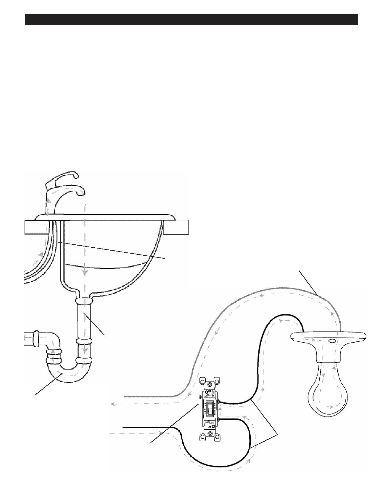
PA RT I C I PA N T R E S O U R C E G U I D E
Comparing Electricity and Plumbing
You can immediately “see” how an electrical system works—at the highest of levels—by
comparing it to a plumbing system.
Electrical and Plumbing
The electrical system in an apartment works a lot like the plumbing system. Electricity flows through wires just as water flows
through pipes.
Electricity and water both enter the building, go to different areas to meet specific needs, and then move on.
Electricity is managed and controlled through receptacles, switches, and fixtures; water is managed and controlled through
faucets, showerheads, and toilets.
Electrical current leaves through non-pressurized (zero voltage) neutral wires. Water leaves through a non-pressurized
drain system.
Water flows from
Current leaves on
supply lines under
neutral wires under
pressure
no pressure
Water leaves via a
drain pipe under
no pressure
Water exits under
no pressure
Current flows on
hot wires under
Switch
pressure
3

PA RT I C I PA N T R E S O U R C E G U I D E
Comparing Electricity and Plumbing (Continued)
Voltage = Pressure
Electricity: Current flows along “pressurized” wires. The “pressure” of an electrical current is called voltage.
Plumbing: Water flows through a pressurized water supply system.
Amperage = Capacity
Electricity: Large wires can carry more electricity than small wires. The rate at which electrical power flows to a light, tool, or
appliance is called amp. The amount of current flowing through a wire is called amperage.
Plumbing: Large pipes can carry more water than small pipes.
Notes:
4

PA RT I C I PA N T R E S O U R C E G U I D E
Key Electrical Terms
Now, you’ll work with a partner to review twelve key electrical terms. Your instructor will fill
you in on the details.
Twelve Key Electrical Terms
electricity than small wires. The amount of current flowing through a wire is called amperage.
flow through a circuit or fixture as it should.
light gray insulation.
fuse to blow or a circuit breaker to trip.
multiplying the voltage times the amps.
5
PA RT I C I PA N T R E S O U R C E G U I D E
Electrical Safety
When it comes to electricity, safety can never be compromised. Follow all required
safety procedures when working with electricity. Never take shortcuts, no matter how
busy you may be.
Three Key Dangers
Electricity can cause arc flashes, electrical fires, and electrical shock.
Arc flashes
An arc flash is a short circuit through
the air. In an arc flash, a huge amount of
energy explodes outward from electrical
equipment. The explosion creates
pressure waves that can damage a
person’s hearing, a high-intensity flash
that can damage their eyesight, and
a superheated ball of gas that can
severely burn a worker’s body and melt
metal.
Electrical fires
Fires can be caused by overloaded
electrical receptacles, loose
connections, and melted or corroded
wire insulation.
Electrical shock
Shocks are caused by body contact
with electricity with a high enough
voltage to cause current flow through
muscles and hair.
Work Safely
Fortunately, you can protect yourself and others from electrical dangers by following several simple safety rules.
6
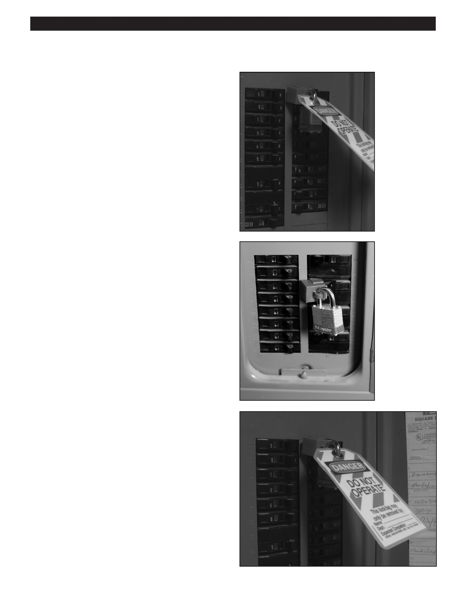
PA RT I C I PA N T R E S O U R C E G U I D E
Electrical Safety (Continued)
Key Safety Rule #1:
Turn Power Off
Always turn off power to the area and to the electrical
equipment. Then use a circuit tester (or other electrical
meter) to make sure the power is off . Never take
chances. Verify everything.
Safety Rule #2:
Follow Lockout/Tagout Procedures
Lockout/tagout is a safety procedure to make sure that
power and energy sources, such as electricity, are shut
off and secured properly.
You’ll use lockout/tagout procedures when doing electrical
maintenance and repairs, such as installing new switches,
receptacles, and lighting fixtures—or investigating a
short circuit.
Lockout Devices and Tags
Typical lockout devices that you’ll use include:
Lockout tags usually are brightly colored so you can
immediately see and identify them.
Your company may have lockout/tagout kits they want you
to use. Check with your supervisor.
7
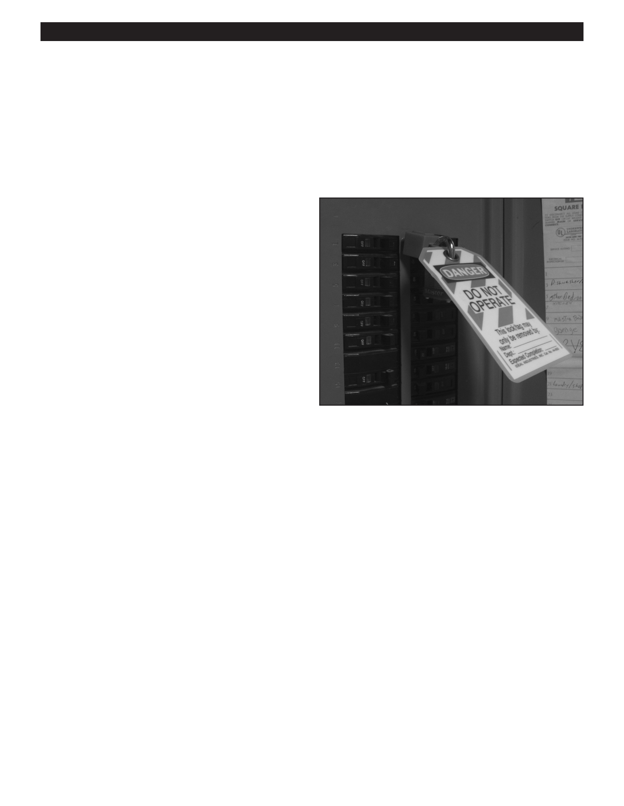
PA RT I C I PA N T R E S O U R C E G U I D E
Electrical Safety (Continued)
Safety Rule #2: Follow Lockout/Tagout Procedures
Where to Place Lockout Devices and Tags
Lockout devices and tags are typically applied to electrical circuit breakers or fuses, switches, and disconnects.
How to Lock and Tag Out
Your employer is required to train you on the complete
lockout and tagout process. But here’s a high-level look at
how it’s done:
1. Shut off the source of electrical power.
2. Attach a lockout device to this source, then lock and
tag it.
3. Release or drain any energy left in the electrical circuits
or equipment.
4. Test to be sure the energy is turned off and removed
from the circuits or equipment.
Once these lockout//tagout steps are complete, you can go
ahead with the electrical repair.
Notes:
8
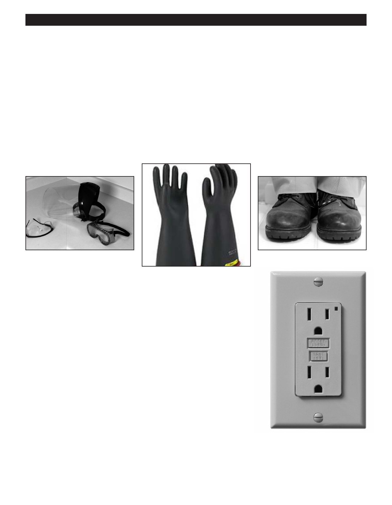
PA RT I C I PA N T R E S O U R C E G U I D E
Electrical Safety (Continued)
Key Safety Rule #3:
Wear Personal Protection
When working with electricity and electrical equipment, wear proper safety protection. This includes:
Additionally, if you work with current over 200 amps, your clothes should not contain nylon or elastic, which can conduct
electricity. Also, never wear jewelry or watches and do not touch metal pipes, faucets, or fixtures. (The metal may create a
grounding path for electricity to flow through your body.)
Safety Rule #4: Use Safe Tools and Equipment
Use tools designed for electrical work such as screwdrivers and pliers with
insulated handles and fiberglass ladders.
In addition, use only equipment that is safe and meets electrical codes.
That means:
protect against shock and arc flashes.
breaker with a higher amperage rating than the circuit wires.
Extension cords should only be used for temporary connections, and should never
be placed under rugs or fastened to walls, baseboards, or other surfaces.
Never alter the prongs of a plug to fit a receptacle. Install
a new grounded receptacle instead.
9

PA RT I C I PA N T R E S O U R C E G U I D E
Notes:
Electrical Safety Discussion
Remember: Safety is the first order of business when you are working with electricity.
If personal protection or safe tools and equipment are not available in your work
environment, talk with your supervisor.
10

PA RT I C I PA N T R E S O U R C E G U I D E
The Electrical System:
From Power Plant to Apartment Community
Just how does power make its way from the power plant to the light fixture? In this part of
the training, you’ll find out by researching the question with fellow participants, and then
presenting your findings to the group.
Notes:
11
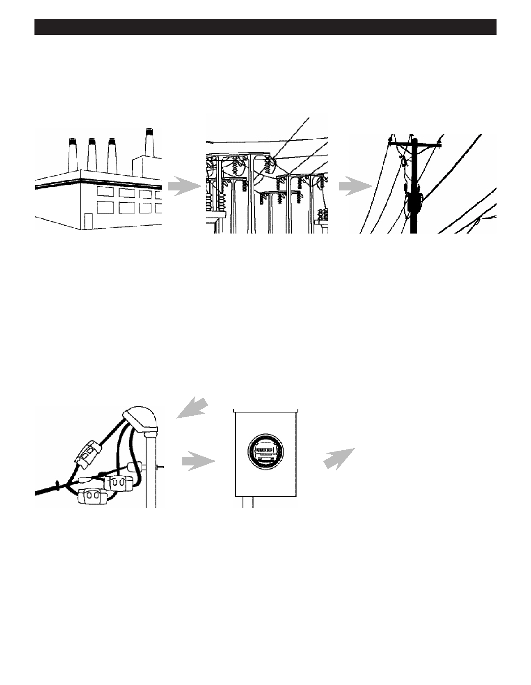
PA RT I C I PA N T R E S O U R C E G U I D E
The Electrical System:
From Power Plant to Apartment Community (Continued)
At the Electric Company
Power plants generate electricity
Substations are located near the
Utility pole transformers reduce the
with turbines turned by water, wind, or
communities they serve. They take
high-voltage current that flows through
steam. Large “step-up” transformers
current from high-voltage transmission
power lines along neighborhood streets.
increase the voltage produced at the
lines and reduce it for distribution along They reduce voltage from 10,000 volts
plant to half a million volts or more.
street lines.
to the normal 120-volt current used in
This makes the power flow more easily
houses and apartments.
along high-voltage transmission lines.
At the Apartment Building
In areas with overhead power lines, the The electrical meter measures
service head anchors the service wires the amount of electricity consumed
to the home. Three wires—two power
in watts.
lines each carrying 120-volts of current
and a grounded neutral wire—provide
the standard 240-volt service needed
for the average apartment.
12
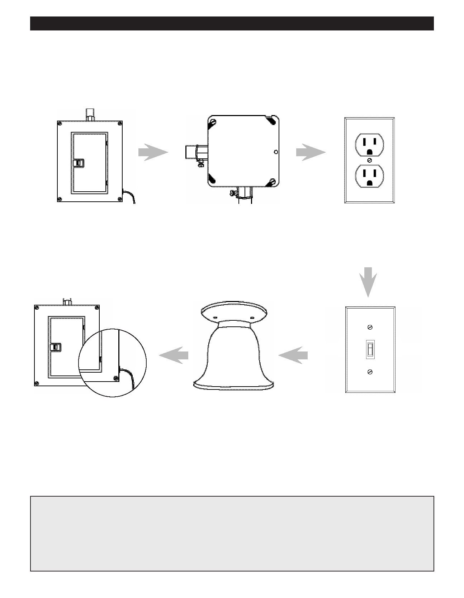
PA RT I C I PA N T R E S O U R C E G U I D E
The Electrical System:
From Power Plant to Apartment Community (Continued)
In the Apartment
The main service panel , sometimes
Electrical boxes enclose wire
Receptacles , sometimes called
called a fuse box or breaker box,
connections. According to the National outlets, provide plug-in access to
distributes power to individual circuits.
Electrical Code, all wire splices or
electrical power. A 125-volt, 15-amp
Fuses or circuits breakers protect each connections must be contained entirely receptacle with a grounding hole is
circuit from short circuits and overloads. in a plastic or metal electric box.
most typical in wiring systems installed
They’re also used to shut off power
after 1965.
to individual circuits while repairs are
being made.
Grounding wire connects the
Light fixtures attach to the
Switches control electrical current
electrical system to the earth through
apartment’s electrical system. They’re
passing through hot circuit wires.
grounding rods, or in older systems,
usually controlled with wall switches.
Switches can be wired to control light
through a cold water pipe. In the event
fixtures, ceiling fans, appliances, and
of an overload or a short circuit, the
receptacles.
grounding wire allows excess electrical
power to find its way harmlessly to
the earth.
Voltage Ratings
The voltage ratings determined by power companies and manufacturers have changed over the years. Current rated
at 110 volts changed to 115 volts, then 120 volts. Current rated at 220 volts changed to 230 volts, then 240 volts.
Similarly, ratings for receptacles, tools, light fixtures, and appliances have changed from 115 volts to 125 volts. These
changes don’t affect the performance of new devices connected to older wiring.
13

PA RT I C I PA N T R E S O U R C E G U I D E
Electrical Circuits
An electrical circuit is a connection of wires, switches, and receptacles that carry power
from the main service panel throughout an apartment and back to the service panel
again. Get ready to study diagrams!
Diagram of a Circuit
Each apartment will have several circuits—perhaps one for each room, and quite often, separate circuits for certain large
appliances, such as an electric range or an air conditioner.
A number of switches, receptacles, light fixtures, or appliances may be connected to a single circuit.
Service Panel
White Neutral
Wire
White neutral wire
Black hot wire
Black Hot
Grounding wire
Wire
Grounding Wire
14

PA RT I C I PA N T R E S O U R C E G U I D E
Electrical Circuits (Continued)
How Circuits Work
Current enters the apartment on “hot” wires (black or red).
Current returns to the service panel along “neutral” wires (white or light gray).
Current leaves the apartment on a large neutral service wire.
Grounding
Electricity always seeks to return to its source to complete a continuous circuit. In an apartment wiring system, electricity
returns by way of the white or light gray neutral wires that run to the service panel.
As a safety precaution, bare copper or insulated green “grounding” wires are used to conduct electricity if current tries to
return via a path other than the neutral wire. This prevents a short circuit . If a person touches a short-circuited electrical box,
tool or appliance, the electrical current may try to return to its source through the person’s body.
A grounding wire provides a safe, easy path for current to flow back to its source. It reduces the risk of receiving a severe
electrical shock from a short circuit.
Wiring systems are also required to be connected directly to the earth. The earth is able to absorb the electrons of electrical
current. In the event of a short circuit or overload, any extra electricity will follow the grounding wire to the earth, where it
cannot hurt anyone.
Grounding is completed by wiring the apartment building’s electrical system to metal grounding rods, which are buried in the
earth. In older buildings, cold water pipe may be used instead.
Overloaded Circuits
When a circuit tries to carry too much power—too many appliances plugged into a receptacle, for example—it becomes
overloaded. A fuse or circuit breaker protects each circuit in case of short circuits or overloads. A “blown fuse” or “tripped
circuit breaker” is usually the result of an overloaded circuit.
15

PA RT I C I PA N T R E S O U R C E G U I D E
Notes:
Electrical Circuit Discussion
16

PA RT I C I PA N T R E S O U R C E G U I D E
Key Tools for Electrical Repairs
You’ll need several tools to test and repair the electrical system in your apartment
building.
Even though these tools are not expensive, they’re an excellent investment. Not only
will they help you make repairs, but they’ll also help keep you safe as you do your
electrical work.
Repair Tools
rubber-coated handles that reduce
the risk of shock if the screwdriver
should accidentally touch live wires.
bends and shapes wires to connect
them to screw terminals. Some may
even have cutting jaws to snip wires.
essential for most wiring projects.
This tool:
• Cuts cables and wires
• Measures wire gauges
• Strips wires
metallic) cable. A small cutting point
choice for electrical repairs, because
used to identify that an electrical
rips the outer plastic vinyl sheath
it will not conduct electricity. (Never
power source, such as a circuit
or NM cable so the sheath can be
use aluminum ladders when working
breaker, is shut off and secured.
removed without damaging wires.
with electricity.)
17

PA RT I C I PA N T R E S O U R C E G U I D E
Key Tools for Electrical Repairs (Continued)
Testing Tools
wires for power.
and neutral slots on a standard
a volt/ohm meter or VOM) can do all
three-slot receptacle. It can also
these things—and replace all these
lighting fixtures, and other devices for
test for grounding.
testers.
faults. It has a battery that generates
current and a loop of wire for creating
and electrical circuit.
Other Recommendations for Your Repair Toolkit:
Other Recommendations for Your Testing Toolkit:
18
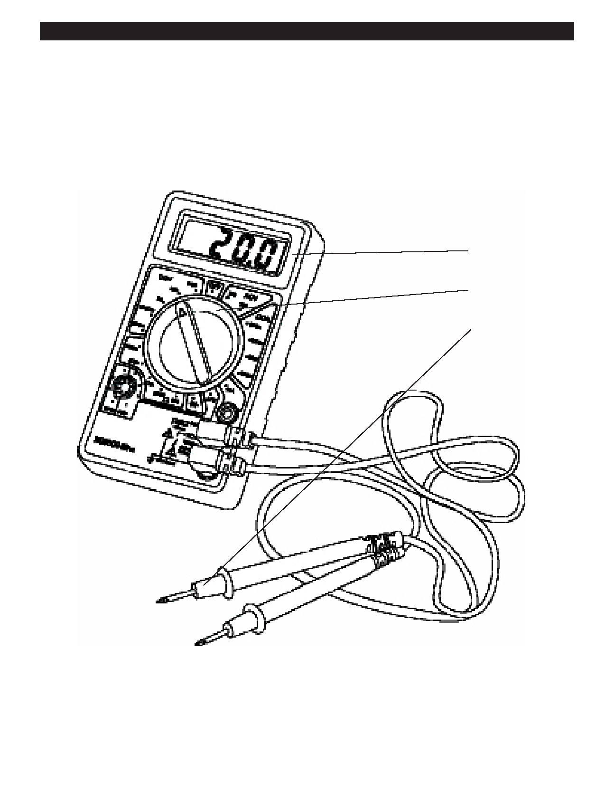
PA RT I C I PA N T R E S O U R C E G U I D E
Multimeters
No maintenance tech should be without a multimeter—an inexpensive, versatile, battery-
operated tool you can use to measure electrical voltages, test for continuity in switches
and light fixtures, and test resistance in devices like heating elements.
More on the Multimeter
Display
Switch
Probes
The common multimeter is a small handheld device with a numeric digital display or an indicator needle over a measurement
scale. The device has a switch to select the type of test you want to perform. A multimeter also has two wires—one red and
one black—with metal tips. They are called probes.
19
PA RT I C I PA N T R E S O U R C E G U I D E
Using a Multimeter
Here’s how to use a multimeter to measure voltage, test continuity, and test resistance.
How to Measure Voltage at a
Receptacle
1. Set the meter to the highest range provided for AC volts.
That way, the meter won’t be damaged by any voltage
greater than expected.
2. Press the black probe into one of the straight slots.
3. Insert the red probe into the other straight slot.
4. The meter should indicate a voltage close to 120 or
240 volts (depending on the type of outlet tested).
How to Test for Continuity
You perform a continuity test to see if a circuit is somehow
interrupted (cannot conduct current) or complete (can
conduct current). To perform this test:
1. Turn the power off.
2. Set the multimeter to R X 1.
3. Disconnect any wires to prevent a false feedback reading.
4. Touch each probe to one of the terminals (or poles) of the
device. If the reading changes from infinity to zero, the
device has continuity, that is, it can conduct current.
To test a switch , remove the wires and place a probe on
each screw terminal. When you move the switch from the
OFF to the ON position, the meter reading should change
from infinity to zero, which means the switch is working.
Infinity or Zero?
When the probes of the multimeter are not touching anything, the multimeter will indicate a reading of infinity. This means
the circuit is somehow interrupted and cannot conduct current. But when you touch the two probes together, the reading
changes to zero. This indicates that the circuit is complete and can conduct current.
20
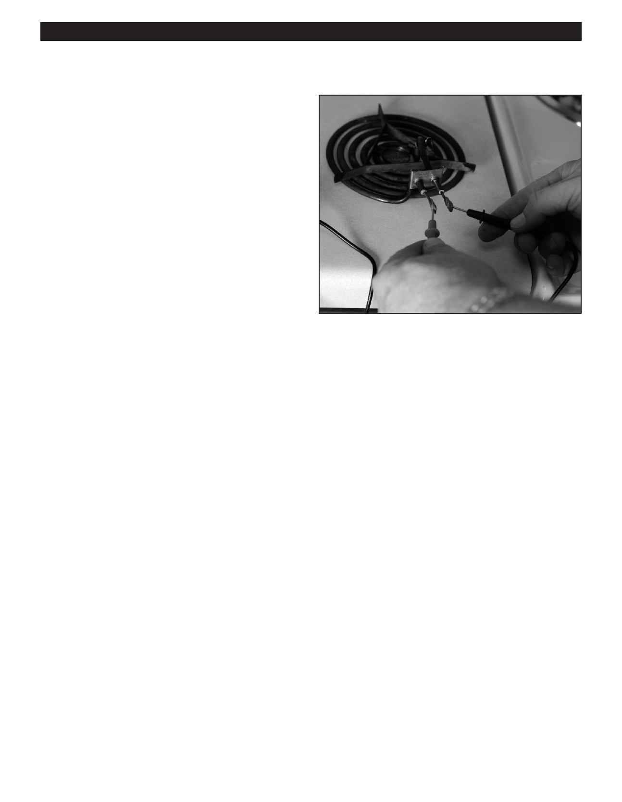
PA RT I C I PA N T R E S O U R C E G U I D E
Using a Multimeter (Continued)
How to Measure Resistance
In the simplest terms, resistance means how much the
flow of current in a circuit is impeded. Some resistance is
necessary for heat to be generated in heating elements like
those used in an electric range or electric clothes dryer.
To measure resistance, perform these steps:
1. Turn the power off.
2. Set the multimeter to R X 1.
3. Disconnect any wires.
4. Touch a probe to each of the terminals. The reading can
be away from zero depending on what element is being
measured... For example, a common 6” stove element
can properly read 48 Ohms.
Notes:
21
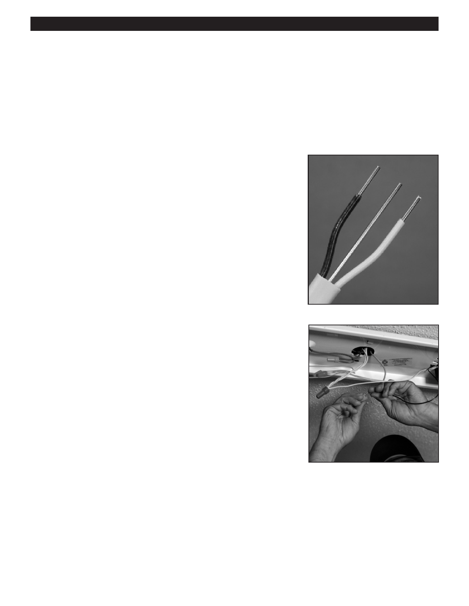
PA RT I C I PA N T R E S O U R C E G U I D E
Electrical Wires
The word “wired” is often used in conjunction with electricity. In this part of the training,
you’ll survey the world of electrical wires, and then practice working with them.
Wire Materials
Electrical wires are most often made of copper, since it is the best conductor of electricity. Some apartment buildings,
however, have aluminum and copper-clad aluminum wires, which require special repair techniques.
Wire Insulation
Some wires—such as certain grounding wires—may be bare copper. But most
are covered with rubber or plastic vinyl insulation.
Color Coding
Insulation is color-coded to make it easy to identify wire that’s “hot” (carries full
voltage), neutral (carries zero voltage), or grounded.
Some electrical devices, like ceiling fans, may use another color for the hot wire.
If you’re not sure which wire is the hot one, use your multimeter.
Note: A technician should not trust color coding until they verify the colors
match the purpose of the wire.
22
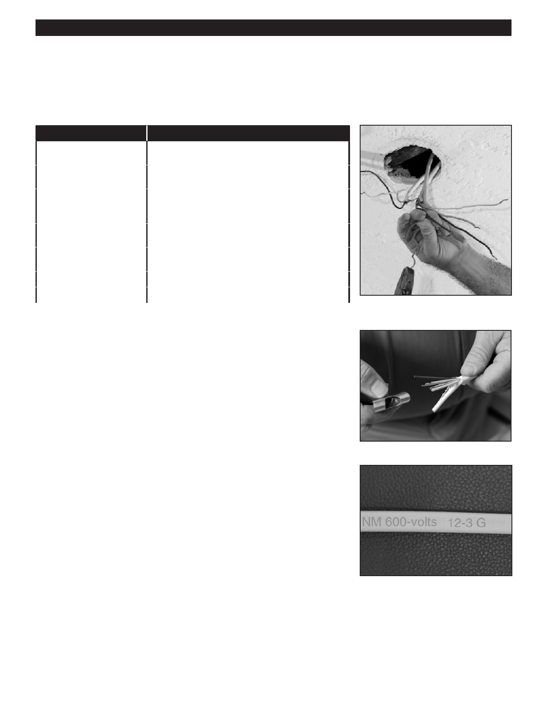
PA RT I C I PA N T R E S O U R C E G U I D E
Electrical Wires (Continued)
Wire Size
Wire must be large enough for the amperage rating of the circuit. A wire that is too small can become dangerously hot.
Wire Gauge
Wire Capacity and Use
#6
60 amps, 240 volts
Electric furnace
#8
40 amp, 240 volts
Electric range, central air conditioner
#10
30 amps, 240 colts
Window air conditioner, clothes dryer,
central air conditioner
#12
20 amps, 120 volts
Light fixtures, receptacles, microwave oven
#14
15 amps, 120 volts
Light fixtures, receptacles
#16
Light-duty extension cords
#18 to 22
Thermostats, doorbells, security systems
Cable
A cable is a group of two or more wires enclosed in a metal, rubber, or plastic
sheath.
How to Read Non-metallic Cable
Non-metallic cable is labeled with the number of insulated wires it contains, not
including the grounding wire. For example: A cable printed with “12/2 G” contains
two insulated 12-gauge wires, plus a bare grounding wire.
23

PA RT I C I PA N T R E S O U R C E G U I D E
Electrical Wires: Working with Wires
You can do lots of things with electrical wires: strip them, clean them, connect them,
pigtail them. In this part of the training, you’ll learn how.
How to Strip Non-metallic Cable and Wires
1
2
4
1. Attach the cable ripper to the cable, 2. Squeeze the cable ripper to cut
4. Unwrap wires and cut away
about eight to ten inches from the
through the insulation.
insulation.
end.
3. Pull the cable ripper toward the end 5. Strip insulation from each wire.
of the cable.
Notes:
24
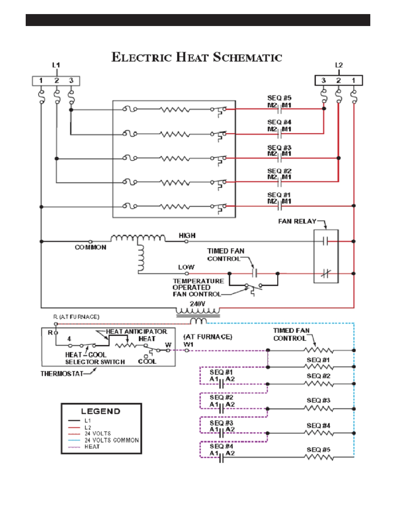
PA RT I C I PA N T R E S O U R C E G U I D E
25

PA RT I C I PA N T R E S O U R C E G U I D E
Working with Wires (Continued)
How to Strip Wires
1. Make sure power to the circuit is OFF.
2. Lock and tag out the circuit.
3. Use a combination tool to strip off about 1/4-inch
of insulation.
How to Connect Wires to Screw
Terminals
1. Use a combination tool to strip off about 1/4-inch of
insulation.
2. Twist wire end to form a half-circle.
3. Hook wire around screw terminal. The wire should curve
in a clockwise direction around the screw terminal.
4. Tighten screw terminal.
Note: There is better connection at screw terminal,
not push terminal hole.
Notes:
26
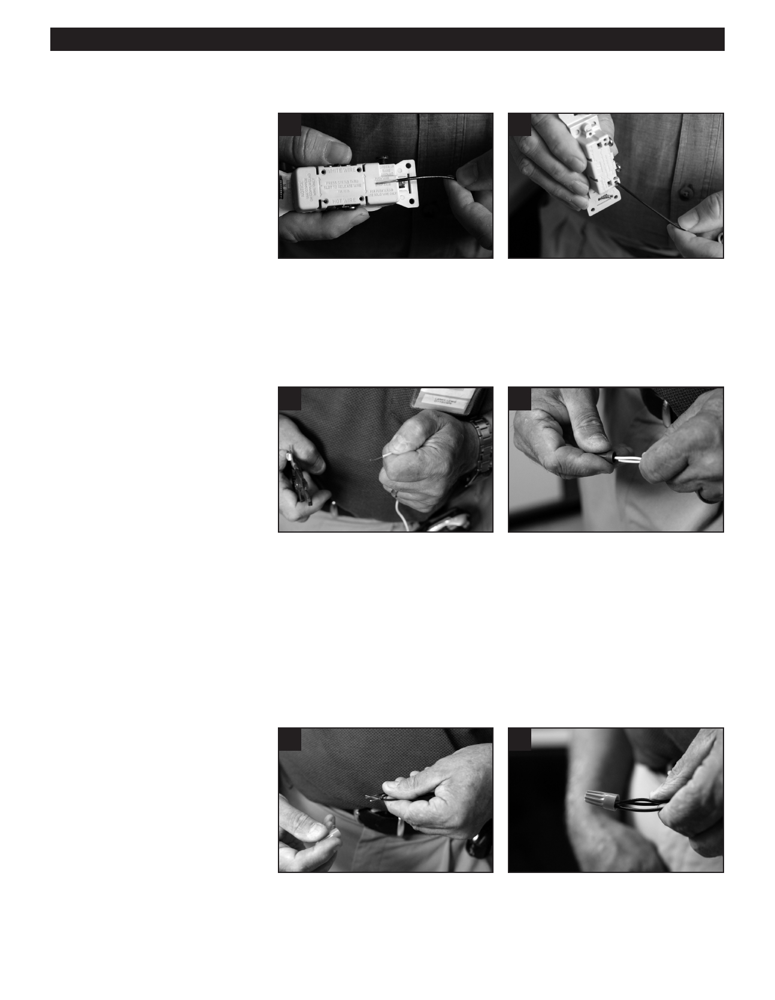
PA RT I C I PA N T R E S O U R C E G U I D E
How to Connect Wires to Switches and Receptacles with Push-in Fittings
1. Use the strip gauge on the
1
3
receptacle to see how much
insulation to strip from the wire.
2. Use a combination tool to strip off
the indicated amount of insulation.
3. Push the wire into the fitting. (No
metal should show.)
Note: If you need to remove a wire
from a push-in fitting, insert a
pocket screwdriver blade into the
wire release and remove the wire.
How to Connect Two or More Wires with a Wire Connector
1. Select a twist-on or push-in wire
3
4
connector rated for the size and
number of wires you’re connecting.
Wire connectors are color-coded by
size, but the coding scheme varies
by manufacturer. Green is generally
reserved for grounds.
2. Use a combination tool to strip off
about 1/4-inch of insulation.
3. Hold the two wires together.
4. Screw on the wire connector
clockwise. (Make sure no bare wire
is visible.)
How to Pigtail Two or More Wires
A pigtail is a short piece of wire. Most often, you’ll use a pigtail so you can connect a single wire to a screw terminal rather
than connecting two or more wires. You can also use a pigtail to lengthen circuit wires that are too short.
1. Turn off power to the circuit.
3
4
2. Use a circuit tester to make sure
the power is off.
3. Match the color and gauge of the
existing wire.
4. Hold the wires together and screw
on the wire connector clockwise.
(Make sure no bare wire is visible.)
Note: Follow the same steps
to pigtail more than two wires
together.
27

PA RT I C I PA N T R E S O U R C E G U I D E
Notes:
Electrical Wire Discussion
28
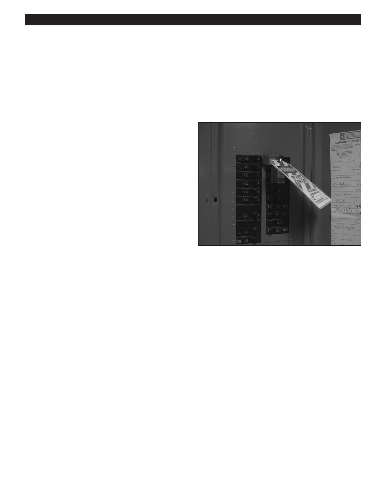
PA RT I C I PA N T R E S O U R C E G U I D E
Main Service Panels, Fuses, and Circuit Breakers
The main service panel distributes electrical current to the individual circuits. In apartment
communities, it can most often be found in closets, kitchens, and bathrooms.
Circuit breakers and fuses—inside the main service panel—are safety devices to protect
the electrical system from short circuits and overloads. Let’s learn more.
Circuit Breaker Panels
In apartment buildings, the most common service panel is
a 125-amp circuit breaker panel. The amperage may vary
depending on building code, building age, and demand for
electricity. Amperage ratings range from 15 to 250 amps.
after 1965.
circuit interrupter (AFCI) breakers provide protection from
shocks and fire-causing arcs for the entire circuit.
Each circuit breaker has a permanent metal strip that heats
up and bends when voltage passes through it. If a circuit is
overloaded, the metal strip inside the breaker bends enough
to “trip” the switch and stop the flow of power.
Each breaker goes with a different circuit, and circuits should
be indexed to make them easier to locate.
Important: Before you make any electrical repair, shut
off the power to the correct circuit at the main service
panel, lock and tag it out, and then test the circuit to
make sure the power is off.
Notes:
29

PA RT I C I PA N T R E S O U R C E G U I D E
Main Service Panels, Fuses, and Circuit Breakers
(Continued)
Fuse Panels
Fuse panels are usually found in older apartment buildings.
When the circuit is overloaded, a wire inside the fuse will
melt and open or break the circuit.
receptacles.
the main service panel shut-off.
Inside each fuse is a current-carrying metal alloy ribbon. If a
circuit is overloaded, the metal ribbon melts and stops the
flow of power.
Just like a circuit breaker, each fuse goes with a different
circuit, and circuits should be indexed to make them easier
to locate.
Important: A fuse must match the amperage rating of
the circuit. Never replace a fuse with one that has a
larger amperage rating.
Common Problems And Solutions
When it comes to main service panels, circuit breakers, and fuses, there’s one problem
you’ll see most often.
Problem
Reason
Solution
Tripped circuit breaker or blown fuse.
Overloaded circuit; too many light
1. Move some of the plug-in
fixtures and plug-in appliances on one
appliances to another circuit.
circuit.
2. Reset the breaker or replace the
fuse. (Page 31)
3. If the problem continues there may
be a short circuit in the system: call
an electrician.
30
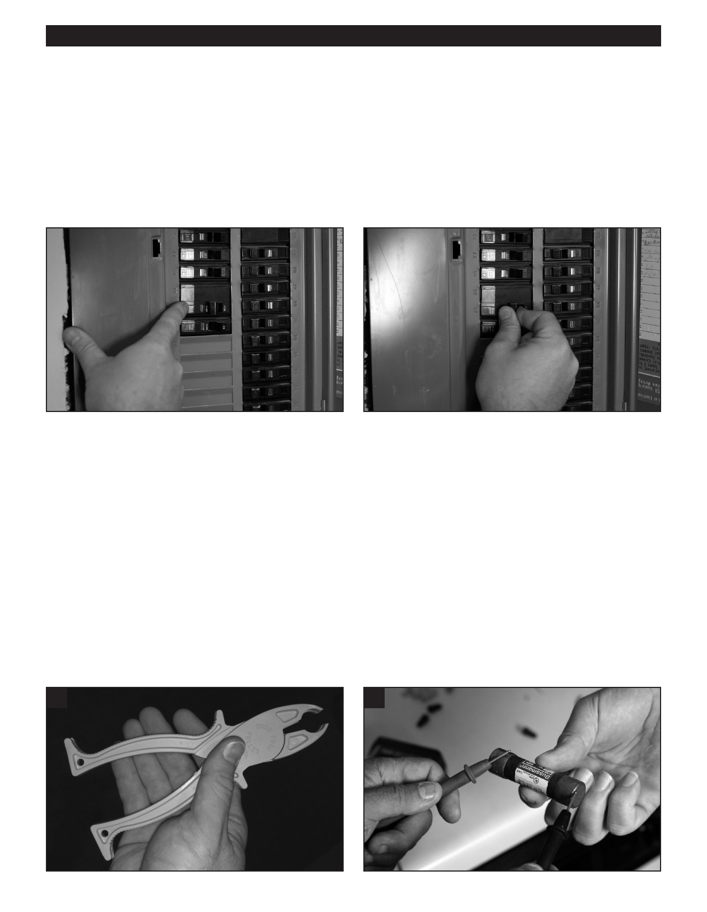
PA RT I C I PA N T R E S O U R C E G U I D E
Main Service Panels, Fuses, and Circuit Breakers
(continued)
How to Reset a Tripped Circuit Breaker
1. Open the service panel and find the “tripped” switch.
2. Flip the switch all the way to the OFF position.
3. Flip the switch to the ON position.
To test AFCI and GFCI circuit breakers, press the “Push to Test” button. The breaker should go to OFF. If not, the breaker will
need to be replaced. If a worn circuit breaker needs to be replaced, call an electrician.
How to Replace a Blown Plug Fuse
1. Open the service panel and find the blown fuse—you can see the melted metal through the window.
2. Unscrew the fuse by the rim.
3. Replace with a fuse that has the same amperage rating.
How to Test and Replace a Cartridge Fuse
1. Open the service panel and pull out the fuse block.
2. Use a fuse puller to remove cartridge fuse from fuse block.
3. Test fuse with continuity tester. (Fuse is good if light goes on.)
4. Return or replace fuse in fuse block. (Make sure fuse has same amperage rating.)
2
3
31

PA RT I C I PA N T R E S O U R C E G U I D E
Notes:
Main Service Panel Discussion
32

PA RT I C I PA N T R E S O U R C E G U I D E
Wall Switches
An electrical switch is a device designed to break the flow of electric current. When it’s
turned on, a switch completes the electrical circuit and current flows to the light or other
device the switch controls. When the switch is off, the electrical circuit is not complete,
denying power to whatever the switch controls.
Anatomy of a Wall Switch
Wall switches connect to circuit wires with screws or push-in terminals. The switch
body is attached to a metal mounting strap that allows it to be mounted to an
electrical box.
Look for the following information stamped into the metal:
Laboratories.
ratings of 110, 120, and 125 are considered to be identical for purposes of
identification.
In addition, many switches have a stamped strip gauge that indicates how much
insulation must be stripped from the circuit wires to make the connection.
Notes:
33
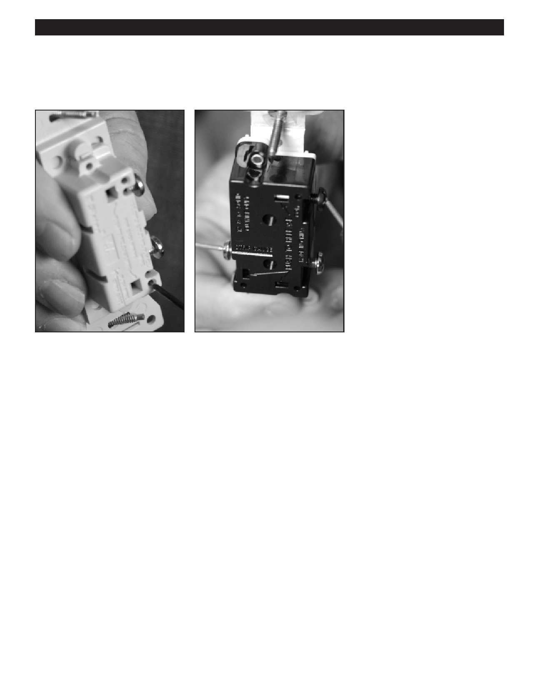
PA RT I C I PA N T R E S O U R C E G U I D E
Wall Switches (continued)
Single-pole and Three-way Wall Switches
Single-pole switches have two screw Three-way switches have three screw
terminals. These operate lights from
terminals. These operate lights from
one location.
two locations and are used in pairs.
Installation Guidelines
Replacement Guidelines
When replacing a switch, get a new one with the same specifications (i.e., amperage rating, voltage rating, wire gauge rating
and wire compatibility rating) and the same number of screws as the old one.
Connect the wires to the screw terminals even if the switch has push-in terminals. The connection is more reliable.
34
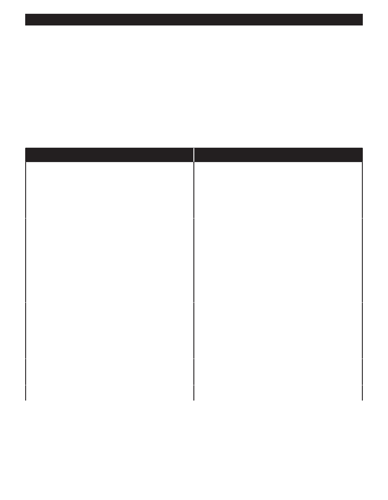
PA RT I C I PA N T R E S O U R C E G U I D E
Common Wall Switch Problems and Solutions
Switches are relatively simple by design, so typically, they work or they don’t.
They also may not work safely, meaning the electricity arcs or sparks in the switch,
which is a potential fire hazard.
Most electrical switches wear out from use in five to 20 years, depending on quality and
frequency of use. Additionally, wires can become loose and not make a connection,
caused by poor installation or other factors.
Problem
Solution(s)
When wall switch is turned on, circuit breaker trips
or fuse “blows.”
(Page 64 or Pages 70-71)
Light fixture does not work.
(Page 31)
(Page 64 or pages 70-71)
on switch
Light flickers.
(Page 64 or Pages 70-71)
Switch should be replaced. (Pages 37-43)
Wall switch does not stay ON or OFF.
35

PA RT I C I PA N T R E S O U R C E G U I D E
Common Wall Switch Problems and Solutions
Notes:
36
PA RT I C I PA N T R E S O U R C E G U I D E
Testing Single-pole Wall Switches
What do you do when you flick your single-pole wall switch and it fails to turn the light on?
Well, test the switch for continuity to see if it is faulty.
Safety
Tools and Materials Needed
Make sure the power is off before you test the switch.
Use lockout/tagout procedures.
Use insulated tools.
Wear eye protection and rubber-soled shoes. Remove jewelry.
Notes:
37

PA RT I C I PA N T R E S O U R C E G U I D E
Testing Single-pole Wall Switches (Continued)
How-to Steps
1. Turn off the power to the switch’s circuit at the main service panel.
2. Remove the switch plate and use a circuit tester or multimeter to make sure the power is off.
If You Use…
Then Follow These Steps…
A circuit tester
1. Touch one probe of the circuit tester to the grounded metal box or to the bare copper
grounding wire.
2. Touch the other probe to each screw terminal.
3. Make sure the tester does not light. If it does, there is still power entering the box.
A multimeter
1. Set the meter to AC volts.
2. Touch one probe of the meter to the grounded metal box or to the bare copper grounding wire.
3. Touch the other probe to each screw terminal.
4. Make sure the meter shows 0 to 2 volts. If the number is higher, there is still power entering the box.
3. Disconnect the old switch by removing the top and bottom screws holding the switch to the electrical box that’s mounted
in the wall.
4. Pull the switch toward you to expose the wires on the side and rear. If a wire is loose or broken, you’ve probably found
the problem.
5. Unscrew the terminal screws on the switch about 1/4 inch and remove the wires.
6. Use a continuity tester or multimeter to see if the switch itself is good or bad.
If You Use…
Then Follow These Steps…
A continuity
1. Attach the clip to the tester to one
tester
of the screw terminals.
2. Touch the tester probe to the other
screw terminal.
3. Turn the switch from ON to OFF.
The switch is good if the tester
lights when the switch is ON
but not OFF.
A multimeter
1. Set the meter to R X 1.
2. Place a probe on each screw
terminal.
3. Turn the switch from OFF to ON.
4. Check the meter. The switch is
good if the meter reading changes
from infinity to zero.
38
PA RT I C I PA N T R E S O U R C E G U I D E
Replacing a Single-pole Wall Switch
If your continuity test shows that the single-pole wall switch is bad, replace it.
Safety
Tools and Materials Needed
Make sure the power is off before you replace the switch.
Use lockout/tagout procedures.
same ratings as the old one
Use insulated tools.
Wear eye protection and rubber-soled shoes. Remove jewelry.
wire stripper
Notes:
39

PA RT I C I PA N T R E S O U R C E G U I D E
Replacing a Single-pole Wall Switch (Continued)
How-to Steps
1. Remove the wires from the screw terminals.
2. If the wires are broken or nicked, use a wire stripper
or combination tool to remove insulation from the last
1/4 inch of the end of the wires.
3. Use a combination tool or needlenose pliers to bend the
end of the wire in a semicircle so it can wrap around the
terminal screw.
4. Connect the wires to a new single-pole wall switch that
has the same ratings. Make sure the connection is tight.
5. Push the switch into the electrical box and screw into
place, making sure the switch is plumb—straight up
and down.
6. Replace the switch cover, return power to the circuit,
and test the wall switch to make sure it works.
40
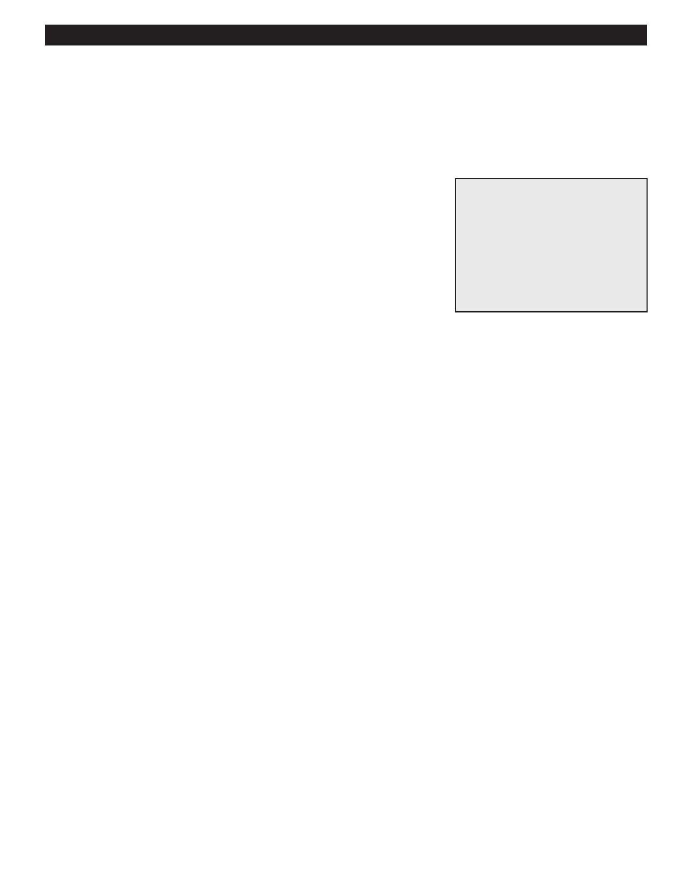
PA RT I C I PA N T R E S O U R C E G U I D E
Testing a Three-way Wall Switch
Three-way wall switches have three screw terminals instead of two in addition to the
ground terminal, so the steps for testing them are slightly different than those for single-
pole switches.
Safety
Tools and Materials Needed
Make sure the power is off before you test the switch.
Use lockout/tagout procedures.
Use insulated tools.
Wear eye protection and rubber-soled shoes. Remove jewelry.
Notes:
41
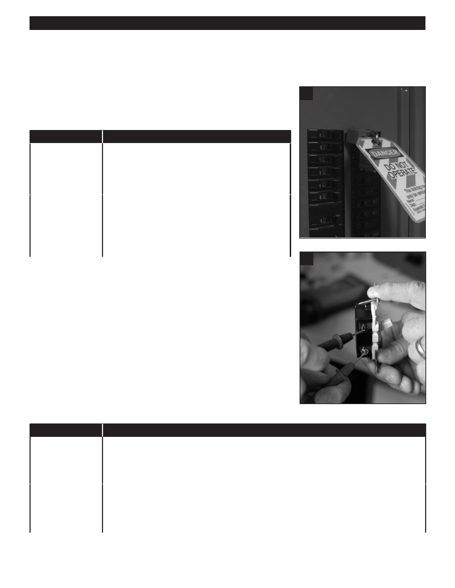
PA RT I C I PA N T R E S O U R C E G U I D E
Testing a Three-way Wall Switch (Continued)
How-to Steps
1. Turn off the power to the switch’s circuit at the main service panel.
1
2. Remove the switch cover and use a circuit tester or multimeter to make sure
the power is off.
If You Use…
Then Follow These Steps…
A circuit tester
1. Touch one probe of the circuit tester to the grounded
metal box or to the bare copper grounding wire.
2. Touch the other probe to each screw terminal.
3. Make sure the tester does not light. If it does, there is
still power entering the box.
A multimeter
1. Set the meter to AC volts.
2. Touch one probe of the meter to the grounded metal
box or to the bare copper grounding wire.
3. Touch the other probe to each screw terminal.
4. Make sure the meter shows 0 to 2 volts. If the number
is higher, there is still power entering the box.
7
3. Disconnect the old switch by removing the top and bottom screws holding the
switch to the electrical box that is mounted in the wall.
4. Without touching any wires, gently pull the switch toward you to expose the
wires on the side and rear. If a wire is loose or broken, you’ve probably found
the problem.
5. Locate the dark “common” screw terminal, and use masking tape to label the
“common” wire attached to it.
6. Disconnect the wires and remove the switch.
7. Use a continuity tester or multimeter to see if the switch is good or bad.
If You Use…
Then Follow These Steps…
A continuity tester
1. Attach the clip of the tester to the dark common screw terminal.
2. Touch the tester probe to one of the other screw terminals.
3. Turn the switch from UP or DOWN. The switch is good if the tester lights when the switch lever is
in one position, but not both.
A multimeter
1. Set the meter to R X 1.
2. Place a probe on each screw terminal.
3. Turn the switch from UP or DOWN.
4. Check the meter. The switch is good if the meter reading changes from infinity to zero.
42

PA RT I C I PA N T R E S O U R C E G U I D E
Replacing a Three-way Wall Switch (30 minutes)
If your continuity test shows that the three-way wall switch is bad, replace it.
Safety
Tools and Materials Needed
Make sure the power is off before you replace a three-way switch.
Use lockout/tagout procedures.
same ratings as the old one
Use insulated tools.
Wear eye protection and rubber-soled shoes. Remove jewelry.
wire stripper
How-to Steps
1. Locate the dark “common” screw terminal, and use masking tape to label the “common” wire attached to it.
2. If necessary, clip any damaged wires and strip them.
3. Connect the wires to a new three-way wall switch that has the same ratings.
a. Connect the common wire to the dark common screw terminal on the switch.
b. If the switch has a grounding screw, connect it to the circuit grounding wires with a pigtail.
4. Connect the remaining two circuit wires to the two screw terminals. (These wires are interchangeable and can be
connected to either terminal.)
5. Push the switch into the electrical box, tucking the wires in place. Screw the switch into place, making sure it is straight up
and down, and then put on the switch cover.
6. Return power to the circuit and test the wall switch to make sure it works.
Notes:
43

PA RT I C I PA N T R E S O U R C E G U I D E
Notes:
Wall Switches Discussion
44
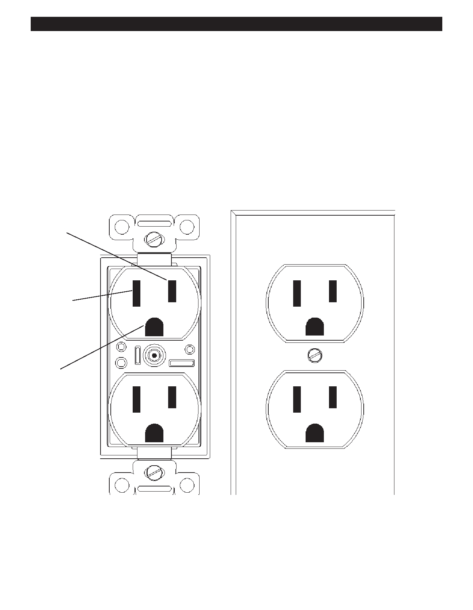
PA RT I C I PA N T R E S O U R C E G U I D E
Receptacles
An electrical receptacle (or outlet) is a socket into which the wiring for portable lamps,
appliances, and other electrical devices can be plugged. It provides the connection
between the building’s electrical circuit and the corded appliance or other device that
requires electricity to operate.
The Standard Duplex Receptacle
The standard duplex receptacle has two halves for receiving plugs with matching blades and pins. Each half has a long
(neutral) slot, a short (hot) slot, and a U-shaped grounding hole.
In addition, these receptacles are polarized, so hot current travels on red and black wires and neutral current travels on gray
or white wires. They are also grounded for safety.
“Hot” slot
Neutral slot
Ground
45

PA RT I C I PA N T R E S O U R C E G U I D E
Receptacles (Continued)
Anatomy of a Receptacle
Receptacles connect to circuit wires with screws or push-in fittings. A connecting tab between the screw terminals allows a
variety of different wiring configurations. Receptacles also include mounting straps for attaching to electrical boxes.
Look at the receptacle for this information:
Brass (hot)
Voltage ratings
Push-in fitting
screw terminals
Wire type
Green (grounding)
Silver (neutral)
Wire ratings
screw terminals
screw terminals
Installation Guidelines
Replacement Guidelines
Two types of receptacles are common in apartment buildings:
If you need to replace a receptacle, be sure to check the amperage rating of the circuit at the main service panel. Get a new
one with the same specifications (i.e., amperage rating, voltage rating, wire gauge rating and wire compatibility rating) as the
old one.
46
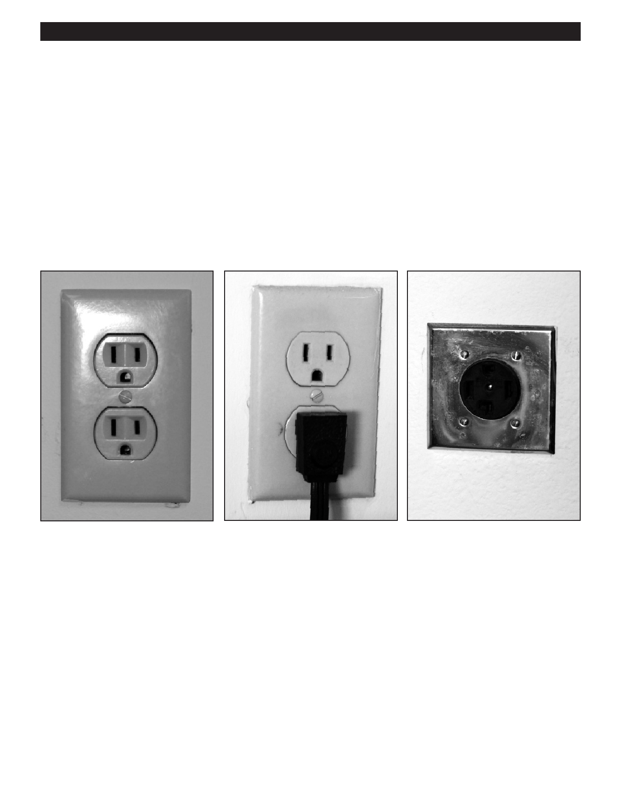
PA RT I C I PA N T R E S O U R C E G U I D E
Receptacles (Continued)
A History of Receptacles
Different types of receptacles include:
Polarized two-slot receptacles: 15 amps./125 volts; pre-1960.
Grounded three-slot receptacles: 15 amps/125 volts; now required by code.
Grounded three-slot receptacles with T-slot: 20 amps/125 volts; for large appliances.
Grounded three-slot receptacles with horizontal slots: 15 amps/250 volts; often used for window air conditioners.
Three-slot with 90-degree slot appliance receptacles: 30 amps/125 & 250 volts; often used for clothes dryers.
Three-slot appliance receptacles: 50 amps/125 & 250 volts; often used for electric stoves.
Notes:
47
PA RT I C I PA N T R E S O U R C E G U I D E
Common Receptacle Problems and Solutions
Just like switches, receptacles are simply designed, so there is little to go wrong. But
receptacles can crack or develop shorts. Or they may not hold plugs well.
Fortunately, receptacles are inexpensive and easy to test and replace.
Problem
Solution(s)
Circuit breaker keeps “tripping” or fuse burns out
repeatedly
Light fixture or plug-in appliance does not work.
Plugs fall or hang out of receptacle.
Receptacle is warm, buzzes, or sparks when plugs
are inserted or pulled out.
Notes:
48
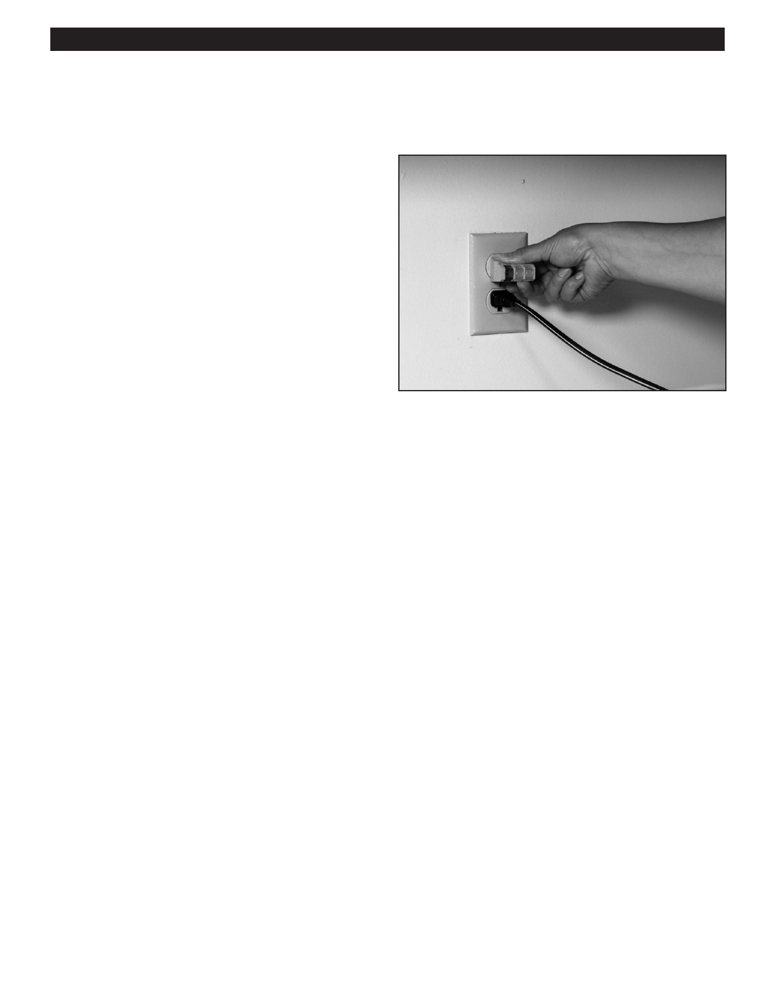
PA RT I C I PA N T R E S O U R C E G U I D E
Testing Receptacles (45 minutes)
There are many ways you can test a receptacle. Let’s look at them.
How to Use a Plug-in Tester
To test a receptacle with a plug-in tester:
1. Plug the tester into the receptacle.
2. Check the lights on the tester and use the reference to
identify the problem.
How to Use a Neon Circuit Tester to
Test for Power
To see if there’s power to a receptacle without removing the
cover plate:
1. Insert a tester probe into each slot of the receptacle.
2. If the bulb glows, there is still power to the receptacle;
turn off power to the circuit.
Notes:
49

PA RT I C I PA N T R E S O U R C E G U I D E
Testing Receptacles (Continued)
How to Use a Multimeter to Test
for Power
1. Insert a multimeter probe into each slot of the receptacle.
2. If the power is ON, the display will show a voltage reading
between 115 and 125 volts.
3. If the power is OFF, the display will show a voltage
reading between 0 and 2 volts.
4. Test between each slot and ground. One slot should read
between 115 + 125. The other slot should read 0.
3. This assures that there is NO continuity between
Hot and Neutral
How to Use a Multimeter to Identify the “Hot” Wire
1. Turn off power to the receptacle.
2. Remove the cover plate.
3. Confirm that the power to the receptacle is OFF by touching a probe to each screw terminal. If the power is OFF,
the display will show a voltage reading between 0 and 2 volts.
4. Remove the receptacle and spread out the wires.
5. Restore power to the receptacle. Be careful not to touch any of the wires.
6. Touch one multimeter probe to each wire while touching the other probe to the ground (metal box).
7. The display will show a voltage reading between 115 and 125 volts for the “hot” wire.
Notes:
50

PA RT I C I PA N T R E S O U R C E G U I D E
Replacing a Receptacle
Replacing a receptacle is a relatively easy. The trickiest part is connecting the
wires correctly.
Safety
Tools and Materials Needed
Make sure the power is off before you test or replace the receptacle.
Use lockout/tagout procedures.
ratings as the old one
Use insulated tools.
Wear eye protection and rubber-soled shoes. Remove jewelry.
combination tool
Notes:
51
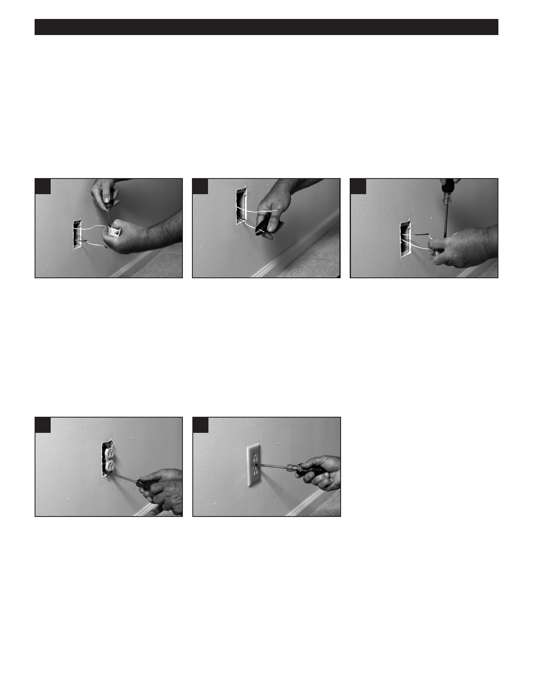
PA RT I C I PA N T R E S O U R C E G U I D E
Replacing a Receptacle (continued)
How-to Steps
1. Turn off the power to the circuit. Then follow the steps to Lockout/Tagout the circuit.
2. Remove the screws and receptacle cover.
3. Unscrew the receptacle from the electrical box and—without touching any wires—gently pull it out.
4. Use a multimeter or circuit tester to verify that the power has been turned off. (See page 20.)
5
6
7
5. Hold a new and identical receptacle 6. Unscrew the terminals and carefully
7. Connect the wires to a new
near the old one to see how the
pull away the wires. Make sure
receptacle that has the same
wires should be installed on the
the wire ends are clean and free
ratings. Attach each wire to the new
replacement. Some use terminal
from insulation. If needed, use a
receptacle in the same way it was
screws on the side while others have
wire stripper or combination tool to
attached to the old receptacle. The
slots on the back for inserting bare
remove insulation from the last 1/4-
white wire typically is connected to
wires. Many have both.
inch of the wire.
a silver terminal and the black or red
Tip: Label each wire for its location
to a brass terminal. Use electrical
on the receptacle screw terminals,
tape as needed to cover all terminals
using masking tape and a pen.
and bare wires.
8
9
8. Gently push the receptacle into
9. Replace the cover plate, restore
the electrical box. Tighten the
power to the circuit, and test the
mounting screws and check that
receptacle to make sure it works.
the receptacle is straight.
52
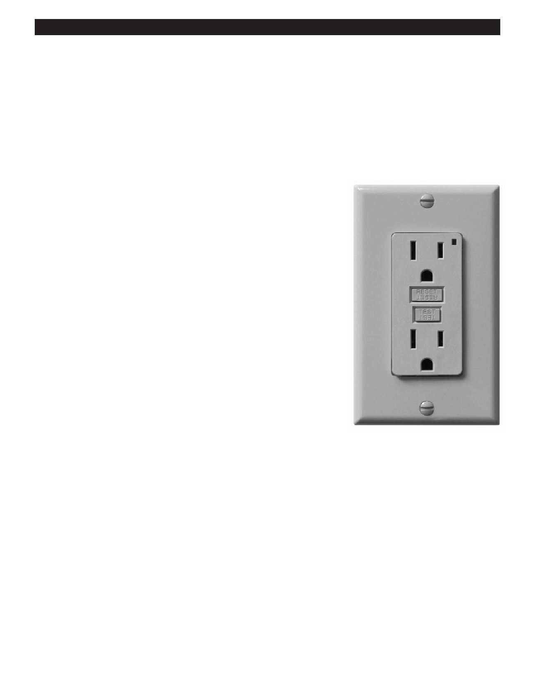
PA RT I C I PA N T R E S O U R C E G U I D E
Ground Fault Circuit Interrupter (GFCI) Receptacles
GFCI receptacles are designed to reduce the danger of electric shock from old or broken
appliances and bad cords and plugs.
GFCI receptacles continuously monitor the current used by appliances and automatically
stop the flow of electricity in case of a problem. They are required for use in kitchens and
bathrooms within three feet of a plumbing fixture.
How GFCI Receptacles Work
Most GFCI receptacles use standard screw terminal connections; some may
have wire leads and can be attached with wire connectors.
The GFCI receptacle may be wired to protect only itself (single location) or it can
be wired to protect all receptacles, switches, and light fixtures from the GFCI
“forward” to the end of the circuit (multiple locations). Because the GFCI is so
sensitive, it is most effective when wired to protect a single location.
A Bigger Box
If you’re installing a GFCI receptacle in place of a regular receptacle, you may
need to replace the electrical box with a larger box, since GFCI receptacles are
slightly larger.
53
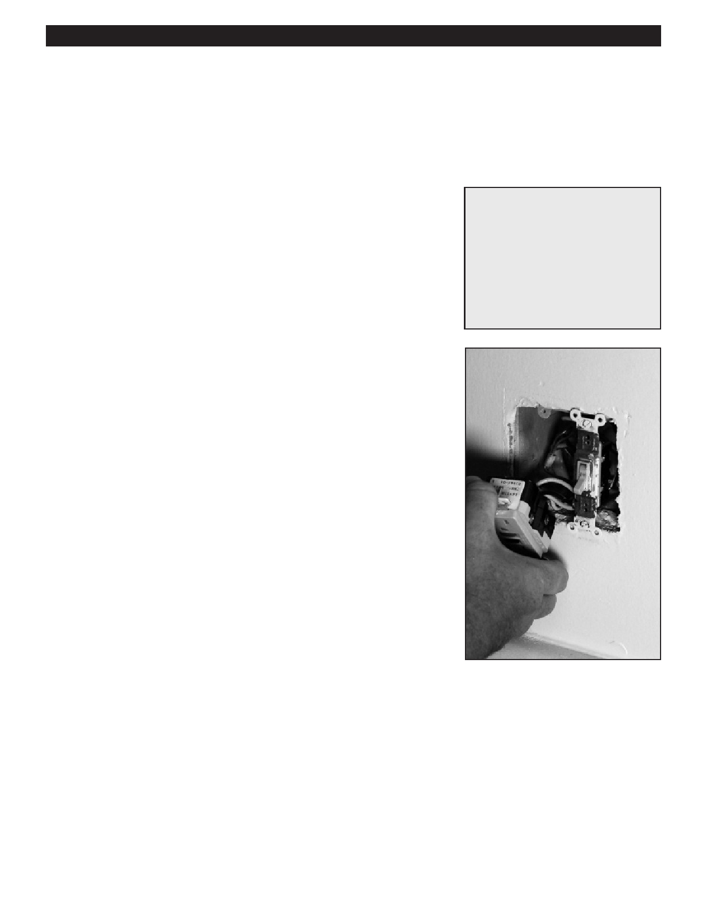
PA RT I C I PA N T R E S O U R C E G U I D E
Installing a GFCI Receptacle
GFCI receptacles can be wired to protect themselves or to protect all the switches, light
fixtures, and receptacles on a circuit. Here’s how to install a GFCI receptacle to protect a
single location.
Safety
Tools and Materials Needed
Make sure the power is off before you test or replace the receptacle.
Use lockout/tagout procedures.
Use insulated tools.
Wear eye protection and rubber-soled shoes. Remove jewelry.
combination tool
How-to Steps
1. Turn off the power to the circuit. Then follow the steps to Lockout/Tagout
the circuit.
2. Remove the screws and receptacle cover.
3. Unscrew the receptacle from the electrical box and—without touching any
wires—gently pull it out.
4. Use a multimeter or circuit tester to see if the power has been turned off.
• Touch one probe to the copper ground wire.
• Touch the other probe to all three screw terminals.
• If the light goes on or if the display reads 115 to 124 volts, the power is still
on and needs to be turned off
5. Pigtail the white wires together and connect to one WHITE LINE screw terminal.
6. Pigtail the black wires together and connect to one HOT LINE screw terminal.
7. Connect grounding wire to grounding screw terminal.
8. Push switch into electrical box, screw into place, and put on faceplate.
9. Return power to the circuit and test the receptacle to make sure it works.
Important: When tightening wires and testing or replacing receptacles,
be sure power is turned off to that circuit.
Notes:
54

PA RT I C I PA N T R E S O U R C E G U I D E
Notes:
Receptacle Discussion
55
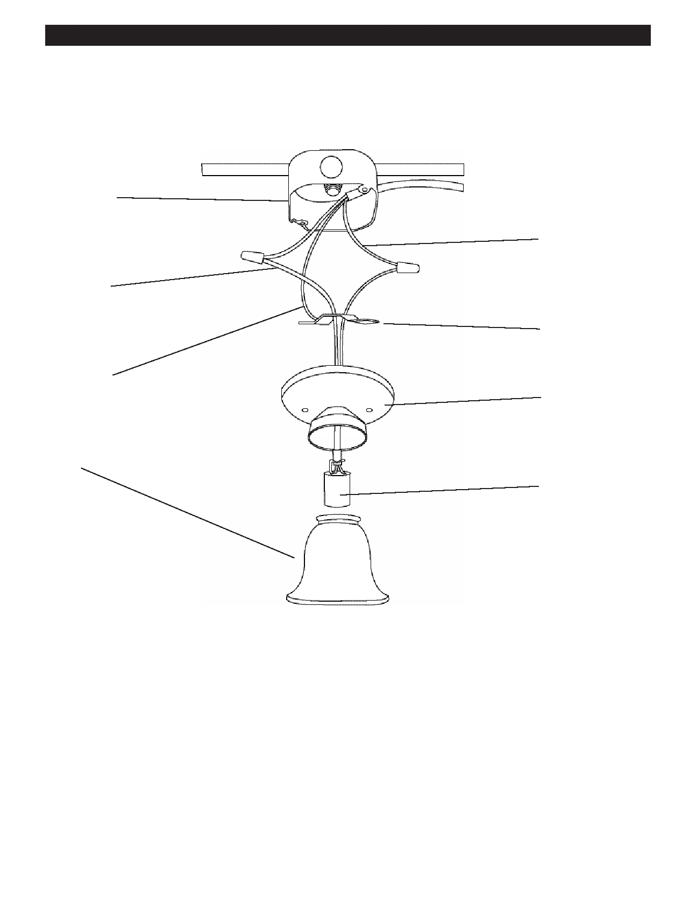
PA RT I C I PA N T R E S O U R C E G U I D E
Incandescent Light Fixtures
Incandescent light fixtures are common in most apartment buildings. Power flows to
a socket, lighting a bulb.
Electrical box
Hot wire
Neutral wire
Support bracket
Ground wire
Base
Globe
Socket
How Incandescent Light Fixtures Work
A black hot wire is connected to a brass screw terminal on the socket. Power flows to a small tab at the bottom of the metal
socket and through a metal filament in the bulb. The power heats the filament and causes it to glow. The current then flows
through the threaded portion of the socket and through the white neutral wire back to the main service panel.
Notes:
*It is common to find insulation in the base of light fixtures. It should be pointed out specifically that the insulation is not to be removed.
56

PA RT I C I PA N T R E S O U R C E G U I D E
Common Problems and Solutions
Where were you when the lights went out? Chances are you were somewhere that
needed lighting! In most cases, all that’s needed is to fix an incandescent light fixture is to
replace a burned-out bulb. But sometimes it takes a little more work. Here’s what you can
do about it.
Problem
Solution(s)
Light flickers or does not turn on.
wattage rating of fixture.)
Switch on fixture does not turn light on.
wattage rating of fixture.)
Notes:
57
PA RT I C I PA N T R E S O U R C E G U I D E
Removing an Incandescent Fixture
If you need to test or fix an incandescent light fixture, the first step is to remove it safely
and with care.
Safety
Tools and Materials Needed
Make sure the power is off before you remove the fixture.
Use lockout/tagout procedures
Use insulated tools.
Wear eye protection and rubber-soled shoes. Remove jewelry.
Be careful using a ladder.
Support the fixture as you remove it. Don’t let any parts on fall on you.
Notes:
58
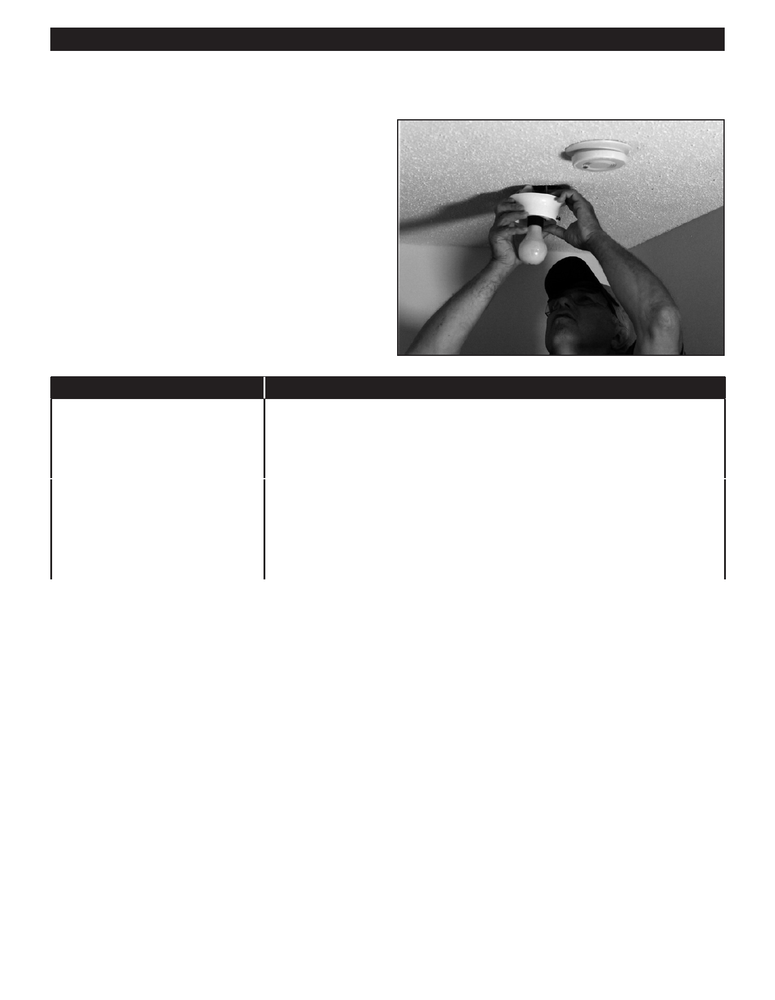
PA RT I C I PA N T R E S O U R C E G U I D E
Removing an Incandescent Fixture (Continued)
How-to Steps
1. Turn off the power to the circuit. Then follow the steps to
Lockout/Tagout the circuit.
2. Remove any shade or globe. Light bulb may also be
removed.
3. Unscrew the light fixture from the electrical box and—
without touching any wires—gently pull away from ceiling
or wall.
4. Use a circuit tester or multimeter to see if the power has
been turned off.
If You Use…
Then Follow These Steps…
A circuit tester
1. Touch one probe of the tester to the green ground screw.
2. Touch the other probe to each screw terminal.
3. Make sure the tester does not light. If it does, there is still power entering the
box.
A multimeter
1. Set the meter to AC volts.
2. Touch one probe of the meter to the green ground screw.
3. Touch the other probe to each screw terminal.
4. Make sure the meter shows 0 to 2 volts. If the number is higher, there is still
power entering the box.
5. Disconnect the light fixture base by loosening the screw terminals.
Notes:
59

PA RT I C I PA N T R E S O U R C E G U I D E
Testing and Replacing a Socket
If you suspect that the socket of an incandescent light fixture may be bad, test it for
continuity. Then, if the socket proves to be faulty, replace it with a new one.
Safety
Tools and Materials Needed
Make sure the power is off before you remove the fixture.
Use lockout/tagout procedures.
ratings as the old one
Use insulated tools.
Wear eye protection and rubber-soled shoes. Remove jewelry.
Be careful using a ladder.
Support the fixture as you remove it. Don’t let any parts on fall on you.
How-to Steps: Testing a Socket
1. Lift up the contact (the metal tab) at the bottom of the socket.
2. Use a continuity tester or multimeter to test the socket.
If You Use…
Then Follow These Steps…
A continuity tester
1. Attach the clip of the tester to the hot screw terminal.
2. Touch the tester probe to the metal tab in the bottom of the socket.
3. Check the tester light. If it goes on, the socket is good—so far. If the light does not go on, the
socket is bad and needs to be replaced.
4. Now, touch the tester clip to the neutral screw terminal and touch the probe to the probe to the
threaded metal side of the socket.
5. Check the tester light. If it goes on, the socket is good. If the light does not go on, the socket is
bad and needs to be replaced.
A multimeter
1. Set the meter to R X 1.
2. Touch one probe to the hot screw terminal, and the other to the metal tab in the bottom of the
socket.
3. Check the meter. If the reading goes from infinity to zero, the socket is good—so far. If it does
not, the socket is bad and needs to be replaced.
4. Now, touch one probe to the neutral screw terminal and the other to the threaded metal side of
the socket.
5. Check the meter again. If the reading goes from infinity to zero, the socket is good. If it does not,
the socket is bad and needs to be replaced.
Notes:
60

PA RT I C I PA N T R E S O U R C E G U I D E
Testing and Replacing a Socket (continued)
How-to Steps: Replacing a Socket
If your test shows that the socket needs to be replaced, then:
1. Remove the socket from the fixture.
2. Disconnect the wires attached to socket.
3. Connect wires to a new socket of the same size and ratings. (White wire to silver screw, black wire to brass screw.)
4. Replace the socket in fixture.
5. Reattach the light fixture.
6. Return power to the light fixture and turn on to make sure it works.
Notes:
61
PA RT I C I PA N T R E S O U R C E G U I D E
Testing and Replacing a Built-in Switch
If you suspect that the built-in switch of an incandescent light fixture may be bad, test it
for continuity. Then, if the switch proves to be faulty, replace it with a new one.
Safety
Tools and Materials Needed
Make sure the power is off before you remove the fixture.
Use lockout/tagout procedures.
same ratings as the old one
Use insulated tools.
Wear eye protection and rubber-soled shoes. Remove jewelry.
Be careful using a ladder.
Support the fixture as you remove it. Don’t let any parts on fall on you.
Notes:
62

PA RT I C I PA N T R E S O U R C E G U I D E
How-to Steps: Testing a Built-in Switch
If the switch needs to be tested, remove the fixture (see page 60) and then:
1. Unscrew the switch.
2. Label the wires so you can put them back the same way.
3. Remove the switch and its attached wires.
4. Use a continuity tester or multimeter to test the switch.
If You Use…
Then Follow These Steps…
A continuity tester
1. Attach the clip of the tester to one of the switch wires.
2. Touch the probe to the other lead.
3. Turn the switch on and off.
4. Check the tester light. The switch is good if the tester lights in one position, but
not both.
A multimeter
1. Set the meter to R X 1.
2. Touch one probe to one of the switch wires, and the other to the other lead.
3. Turn the switch from OFF to ON.
4. Check the meter. If the reading goes from infinity to zero, the switch is good
How-to Steps: Replacing a Built-in Switch
If your test shows that the switch needs to be replaced, then:
1. Replace the switch in the fixture.
2. Reattach the light fixture.
3. Return power to the light fixture and test the switch to make sure it works.
Notes:
63
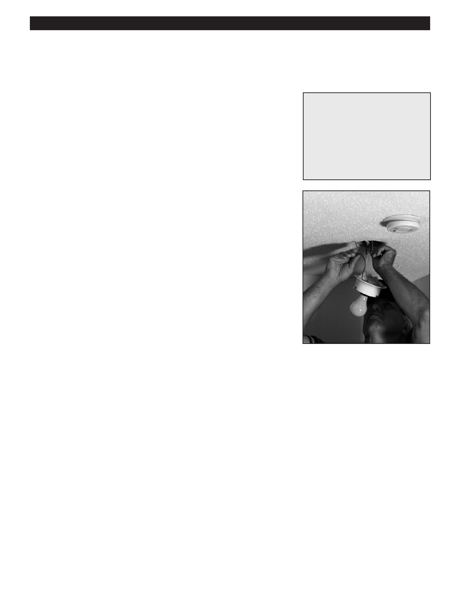
PA RT I C I PA N T R E S O U R C E G U I D E
Replacing an Incandescent Fixture
If the light fixture needs to be replaced, follow the steps below.
Safety
Tools and Materials Needed
Make sure the power is off before you replace the fixture.
Use lockout/tagout procedures.
Use insulated tools.
Wear eye protection and rubber-soled shoes. Remove jewelry.
Be careful using a ladder.
Support the fixture as you remove it. Don’t let any parts on fall on you.
How-to Steps:
If you need to install a new light fixture, follow the steps for removing the old
fixture (see page 60) and then:
1. Install the mounting bracket. (It has an attached grounding screw.)
2. Use wire connectors to connect the white wires to each other and the
black (hot) wires to each other.
3. Pigtail the bare copper grounding wire to the grounding screw on the
mounting strap.
4. Attach the base of the light fixture to the mounting bracket.
5. Screw in a light bulb. (Make sure bulb does not exceed wattage rating
of fixture.)
6. Attach globe.
7. Return power to the light fixture and turn on to make sure it works.
Notes:
64
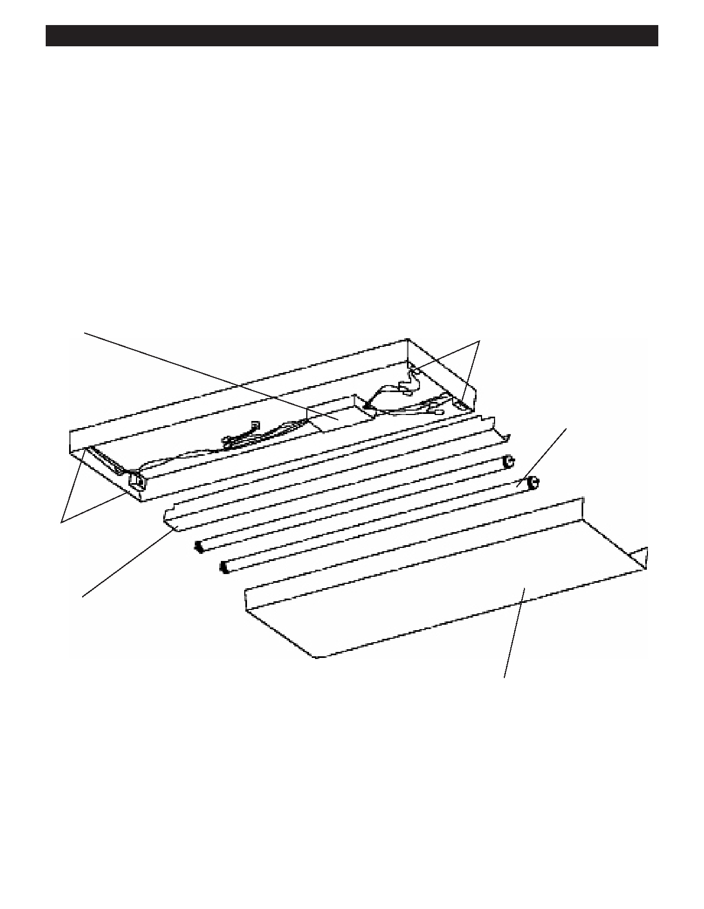
PA RT I C I PA N T R E S O U R C E G U I D E
Fluorescent Light Fixtures
Fluorescent light fixtures are also common in apartment buildings. As with incandescent
bulbs, power flows to a socket, lighting a “bulb.” In this case the bulb is a gas-filled tube.
The fluorescent light fixture uses a transformer or ballast, which manages the electrical
current going to the tube.
Fluorescent lights generate more light, use less energy, and last longer than
incandescent lights.
Anatomy of a Fluorescent Light Fixture
Ballast
Sockets
Gas-filled tube
Sockets
Cover
Shade/diffuser
Starters
Older or outdoor fluorescent lights may have a starter—a small metal cylinder with plugs on one end. The starter is a type of
switch that lets the current flow to the tube.
65

PA RT I C I PA N T R E S O U R C E G U I D E
Common Problems and Solutions
Because they are simple in operation, fluorescent lighting systems are easy to diagnose
and fix.
Problem
Solution(s)
Light is reduced or flickers.
not exceed wattage rating of fixture. (If it is an older
fluorescent light fixture, also replace the starter.)
Light does not go on.
exceed wattage rating of fixture. (Page 66) (If it is an
older fluorescent light fixture, also replace the starter.)
Black material around ballast.
Humming sound from light fixture.
Important: Fluorescent tubes should not be broken or damaged. They contain mercury, which is a hazardous
waste. Properly dispose of worn-out fluorescent tubes. (Check with the Environmental Protection Agency, your
local government, or the health department for disposal instructions.)
66

PA RT I C I PA N T R E S O U R C E G U I D E
Replacing a Fluorescent Tube
It’s quick and easy to replace a fluorescent tube. Here’s how to do it.
Safety
Tools and Materials Needed
Make sure the power is off before you replace the tube.
Use lockout/tagout procedures.
Wear eye protection and rubber-soled shoes. Remove jewelry.
Be careful using a ladder.
Support the parts of the fixture as you remove them. Don’t let any parts on fall
on you.
How-to Steps
1. Turn off power to the circuit.
2. Remove the shade/diffuser.
3. Twist the tube until it unseats from
the sockets. (Bad tubes are often
black on the ends.)
4. Put in a new tube and twist until it
is seated in sockets at both ends.
(Make sure tube does not exceed
wattage rating of fixture.)
5. Put shade/diffuser back on.
6. Restore power to circuit and turn
on light to make sure it works.
Notes:
67
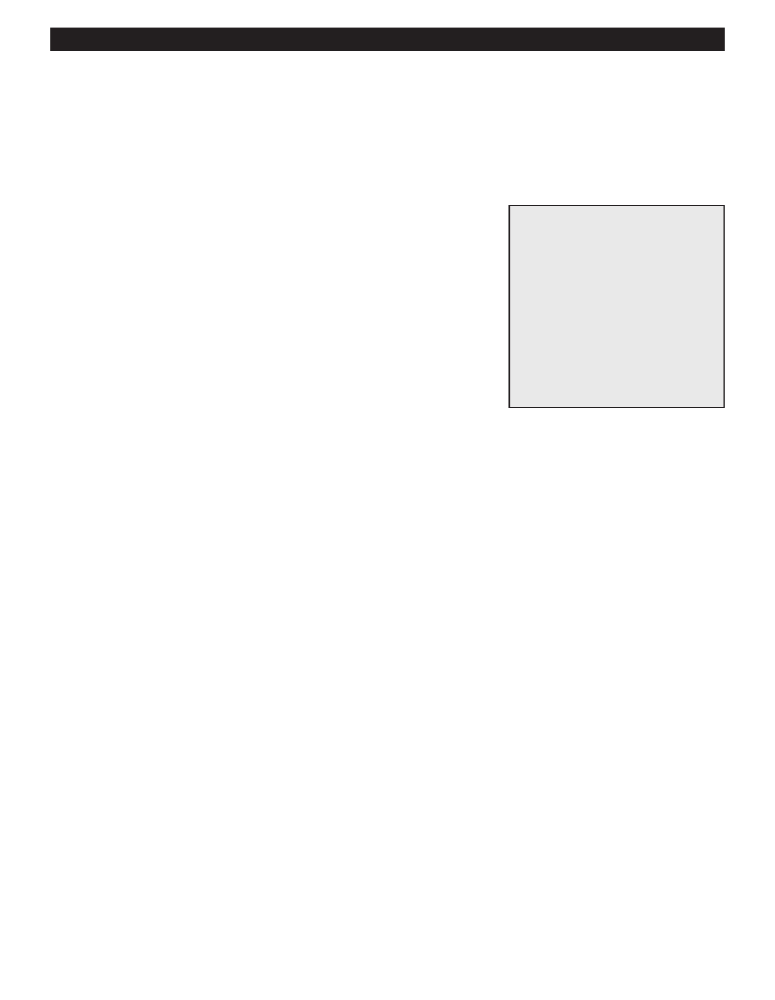
PA RT I C I PA N T R E S O U R C E G U I D E
Replacing a Ballast
A ballast is a special transformer that regulates the flow of current to the sockets of the
fluorescent fixture. You may need to replace the ballast if the fixture hums or flickers—and
if the ballast itself is reasonably priced.
Safety
Tools and Materials Needed
Make sure the power is off before you replace the ballast.
Use lockout/tagout procedures.
Wear eye protection and rubber-soled shoes. Remove jewelry.
Be careful using a ladder.
Support the parts of the fixture as you remove them. Don’t let any parts on
fall on you.
(see below)
Notes:
68
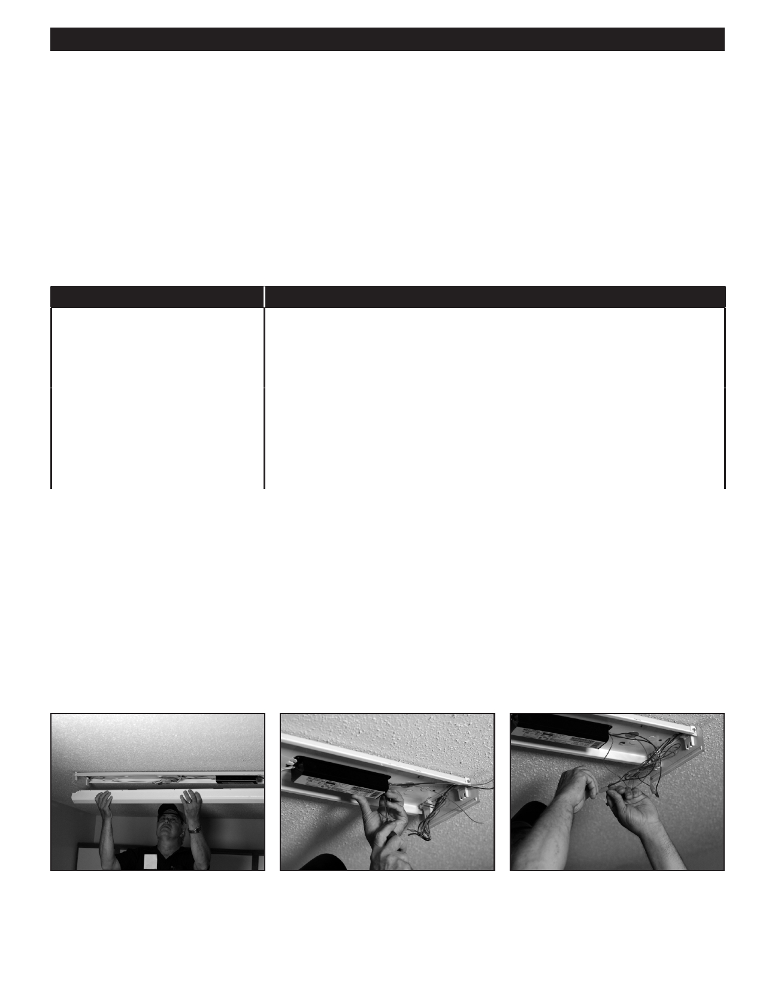
PA RT I C I PA N T R E S O U R C E G U I D E
Replacing a Ballast (Continued)
How-to Steps:
1. Turn off power to the circuit.
2. Remove the shade/diffuser.
3. Remove fluorescent tubes. (Twist the tubes until they unseat from the sockets.)
4. Remove the ballast cover.
5. Use a circuit tester or multimeter to see if the power has been turned off.
If You Use…
Then Follow These Steps…
A circuit tester
1. Touch one probe of the tester to the green grounding screw.
2. Insert the other probe into each wire connector.
3. Make sure the tester does not light. If it does, there is still power entering
the box.
A multimeter
1. Set the meter to AC volts.
2. Touch one probe of the meter to the green grounding screw.
3. Insert the other probe into each wire connector.
4. Make sure the meter shows 0 to 2 volts. If the number is higher, there is still
power entering the box.
6. Cut the wires to the ballast and unscrew the old ballast.
7. Install a new ballast with the same electrical ratings.
8. Attach the ballast wires to the socket wires, matching same color wires, connectors, screw terminal connections, or
push-in fittings.
9. Attach cover.
10. Put in tubes and twist until they are seated in sockets at both ends.
11. Put the diffuser back on.
12. Restore power to circuit and turn on light to make sure it works.
69
PA RT I C I PA N T R E S O U R C E G U I D E
Replacing a Fluorescent Light Fixture
If a ballast is too expensive, it may be more cost-efficient to replace the entire fluorescent
fixture. Here’s how to do it.
Safety
Tools and Materials Needed
Make sure the power is off before you replace the fixture.
Use lockout/tagout procedures.
Use insulated tools.
Wear eye protection and rubber-soled shoes. Remove jewelry.
Be careful using a ladder.
Support the fixture as you remove it. Don’t let any parts on fall on you.
Notes:
70
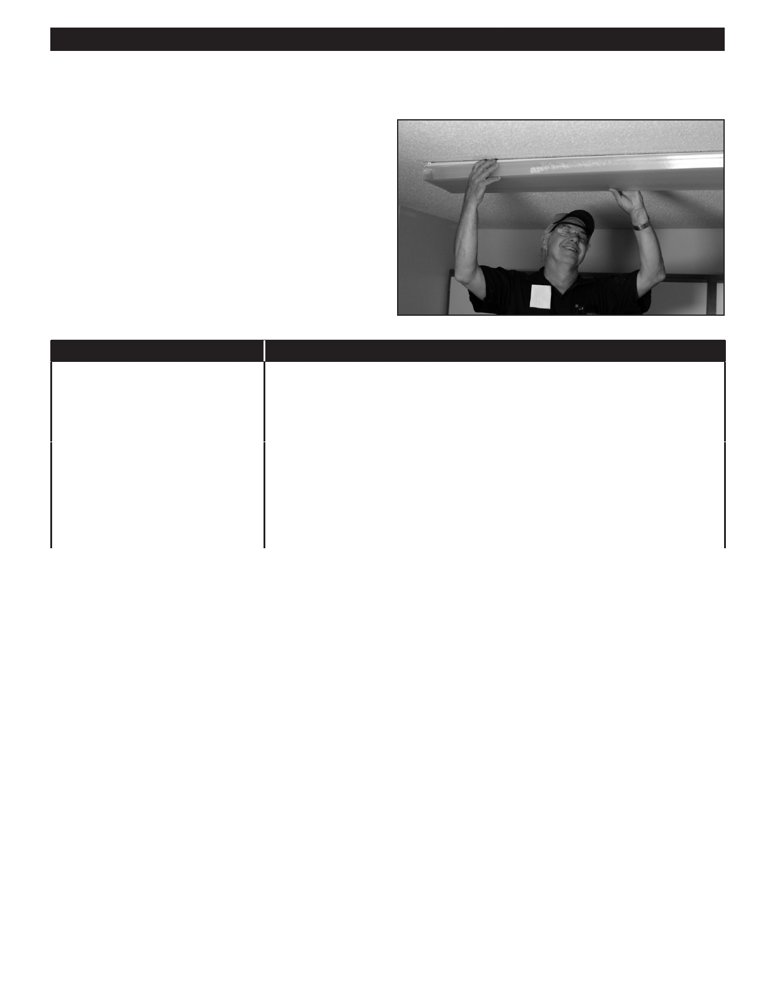
PA RT I C I PA N T R E S O U R C E G U I D E
Replacing a Fluorescent Light Fixture (Continued)
How-to Steps:
1. Turn off the power to the circuit.
2. Remove the shade/diffuser.
3. Remove fluorescent tubes. (Twist the tubes until they
unseat from the sockets.)
4. Remove cover.
5. Use a multimeter or circuit tester to see if the power
has been turned off.
If You Use…
Then Follow These Steps…
A circuit tester
1. Touch one probe of the tester to the green grounding screw.
2. Insert the other probe into each wire connector.
3. Make sure the tester does not light. If it does, there is still power entering
the box.
A multimeter
1. Set the meter to AC volts.
2. Touch one probe of the meter to the green grounding screw.
3. Insert the other probe into each wire connector.
4. Make sure the meter shows 0 to 2 volts. If the number is higher, there is still
power entering the box.
6. Disconnect the wires and ground from the fixture.
7. Unscrew the wire clamp counterclockwise.
8. Unscrew the fixture from the ceiling or wall and carefully remove it.
9. Position new fixture on surface, running wires through the hole in the back of the fixture.
10. Screw/bolt fixture securely in place to studs, if possible.
11. Connect wires and ground to new fixture, using wire connectors. Follow the wiring diagram included with the new fixture.
12. Tighten the clamp holding the wires.
13. Attach cover.
14. Put in tubes and twist until they are seated in sockets at both ends.
15. Put shade/diffuser back on.
16. Restore power to circuit and turn on light to make sure it works.
71

PA RT I C I PA N T R E S O U R C E G U I D E
Notes:
Light Fixtures Discussion
72

PA RT I C I PA N T R E S O U R C E G U I D E
Smoke Detectors and Carbon Monoxide Detectors
All apartment buildings are required by law to have working smoke detectors. Carbon
monoxide detectors are also required in many areas. In apartment buildings, these
devices are “hard wired” so that if one goes off they all go off. Some units combine smoke
and carbon monoxide detection functions.
Problem
Solution(s)
Detector does not sound when test is pressed.
How to Replace a Smoke/
Carbon Monoxide Detector
1. Turn off the power.
2. Unscrew the detector from the ceiling.
3. Disconnect the wires.
4. Attach a detector with the same electrical ratings.
5. Restore power to circuit and press test button to make
sure it works.
6. Smoke detectors should NOT be tested using only the
test buttons as this only ensures the sounder and battery
are operating. To ensure proper operation a technician
should use a “smoke in a can“ type product. In this way,
the detector itself is tested.
Important: Test smoke and carbon monoxide
detectors regularly. These devices often have a
battery back-up. Replace battery at least once a year.
73

PA RT I C I PA N T R E S O U R C E G U I D E
Key Takeaways
It’s not easy to sum up a course that has covered as much ground as this one has.
But we’ve tried, by identifying several key takeaways you can use once you get back
on the job:
Electrical Safety Takeaways
specifications and electrical ratings.
Electrical Repair and Maintenance Takeaways
continuity in switches and sockets, and test for resistance in devices such as heating elements.
maintenance and repair.
74

PA RT I C I PA N T R E S O U R C E G U I D E
Action Plan
Based on what you’ve learned in this course, write down at least one thing you want to
start, stop, and continue doing when you return to your apartment community.
One Thing I Want to Start Doing:
One Thing I Want to Stop Doing:
One Thing I Want to Continue Doing:
Work on these things for the next month. You’ll most likely improve your on-the-job skills,
feel more confident, and enjoy your time as a maintenance technician even more.
75
NAAEI thanks you for taking this portion of the Certificate for Apartment Maintenance Technicians
(CAMT) series.
Handouts from this course, including CAMT Skill Checks and other resources may be downloaded from
the NAA Web site by visiting:
www.naahq.org/education/CandidatesOnly
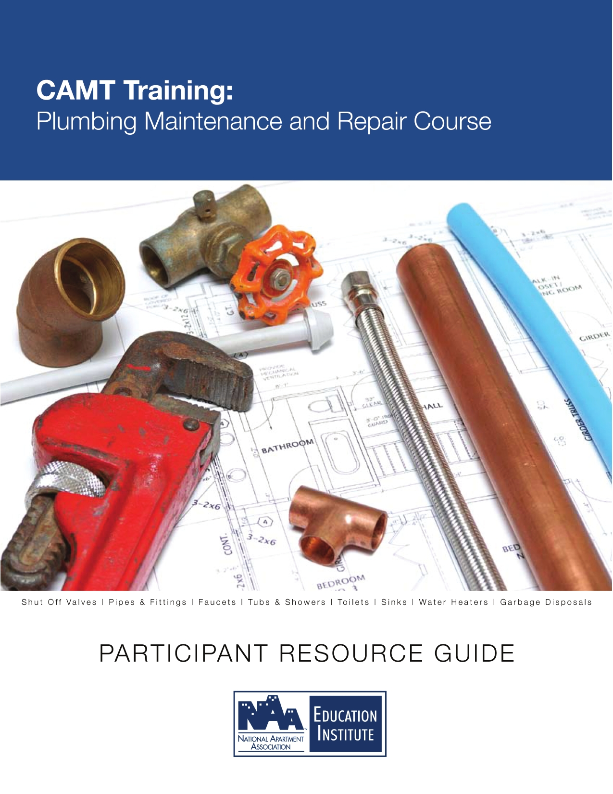

CAMT Online Training
Don’t Forget…Take the Online Training for this CAMT Course!
To continue your education, you can also complete a brief online training course on Plumbing
Maintenance and R epair.
The course will take approximately 30 minutes. You can access the course on your home
computer, a computer in a public place such as a library, or a computer at work.
Here’s how to do it:
1. Go to the following web site: http://www.naahq.org/education/onlinelearning/pages/login.htm
2. Type the ID and password you received at this CAMT training.
3. Once you are logged in, click on the blue Designations tab on the left side of the screen, next to
“courses.”
4. Change the Designation Type field to “Designations I am Pursuing” and click on Refresh Page.
5. Open each individual module by clicking on the + sign and expanding the course list.
6. Click on the Start button to launch a course.
7. Complete all of the courses under each module until you receive a 100% completion.

PA R T I C I PA N T R E S O U R C E G U I D E
Welcome!
The National Apartment Association Education Institute thanks you for attending today’s
Certifi cate for Apartment Maintenance Technicians (CAMT) course on Plumbing Maintenance
and Repair.
Course Topics
Your roles and responsibilities in plumbing maintenance and repair
Plumbing basics and terms
Plumbing safety
Tools and equipment for plumbing repairs
Shut off valves
Plumbing pipes and fi ttings
Faucets and sinks
Garbage disposals
Tubs and showers
Toilets
Drains
Water heaters
What You’ll Be Doing
Using your Participant Resource Guide
Watching in-class demonstrations and videos
Having group discussions
Completing hands-on activities
Ground Rules
Participate fully.
Stay with us, both mentally and physically.
Ask questions.
Share ideas.
Tell us about your experiences.
You’ll only get out of this class what you put into it, so give everything you can.
Welcome 1

PA RT I C I PA N T R E S O U R C E G U I D E
2 Welcome

PA RT I C I PA N T R E S O U R C E G U I D E
You Are Here: Plumbing Maintenance and Repair
To set the stage for the course, you and your fellow participants will identify your key roles
and responsibilities as they relate to plumbing maintenance and repair.
Notes from Roles and Responsibilities Discussion:
1
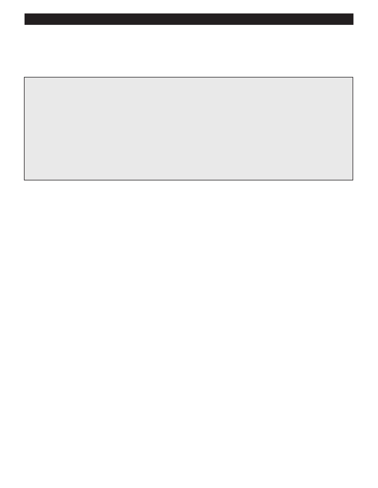
PA RT I C I PA N T R E S O U R C E G U I D E
You Are Here: Plumbing Maintenance and Repair
(continued)
When to Call a Plumber
You’ll need to call an plumber when:
Consider the time/cost benefit.
If a plumber comes on site to do a repair or replacement, watch what they’re doing and ask questions—you might be
able to do some or all of the work if it happens again.
2
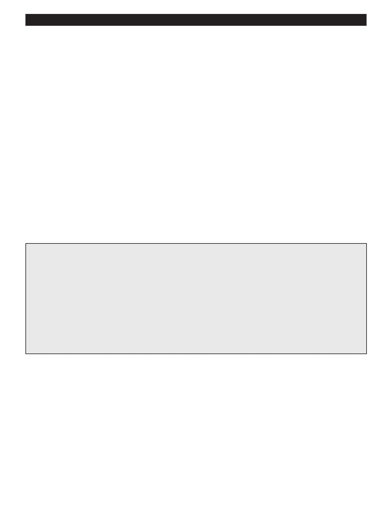
PA RT I C I PA N T R E S O U R C E G U I D E
Plumbing in an Apartment Building
The plumbing in an apartment building is a gravity/pressure-based system that is made
up of three parts: water supply, water distribution, and waste exit.
Water Supply
Water is distributed throughout the city in large underground pipes and makes its way to houses, businesses, and
apartments. Water meters track the amount of water used at each location.
Water Distribution
Pipes inside the apartment building carry pressurized cold and hot water to faucets, showers, toilets, and appliances in
each apartment.
Waste Exit
Waste water and sewage go out drains and toilets. They are piped out of the apartment and make their way to a sewage
treatment plant
The waste exit system is also called the DWV or drain, waste, and vent system.
Plumbing Terms
Pipes: Pipes are metal or plastic tubes that carry water, sewage, and fresh air to the plumbing system.
Fittings: Fittings are metal or plastic pieces that connect straight sections of pipe together. Typical fittings include
elbows and Ts.
Valves: Valves are pieces of equipment that control the flow of water in a plumbing system and include faucets
and shut-offs.
Fixtures: Fixtures are areas in an apartment where water is used, such as sinks, showers, bathtubs, and toilets.
Appliances: Appliances are machines that use water, such as water heaters, dishwashers, washing machines, water
softeners, and garbage disposals.
3
PA RT I C I PA N T R E S O U R C E G U I D E
Plumbing in an Apartment Building (continued)
Roof Vent
Waste and
vent stack
Vent Lines
Vent Lines
Hot Water
Supply Line
Drain Line
Drain Line
Water Heater
Cold Water
Supply Line
Water Meter
Main Supply Line
Sewer Line
4

PA RT I C I PA N T R E S O U R C E G U I D E
Plumbing Safety
Here are the key safety rules to follow when performing plumbing repairs and
maintenance.
Key Safety Rule #1: If Working with
Electricity, Turn the Power Off
If you’re repairing an electric water heater or a garbage
disposal, always turn off the power to that area and the
electrical appliance. Then use a circuit tester (or multimeter)
to make sure the power is off . Never take chances.
Verify everything. Follow Lockout/Tagout Procedures
When repairing electrical appliances, always turn off the power to
that area and the electrical appliance.
Safety Rule #2: Wear Personal
Protective Equipment (PPE)
When working with plumbing fixtures and equipment, wear
the proper personal protective equipment to protect yourself
from bacteria and germs, cuts and scrapes, and burns from
the release of hot water or steam.
This equipment includes:
In addition, wear appropriate footwear. Make sure you have
a sturdy shoe with a protective toe box and a non-slip sole,
so you won’t slip, trip, or fall in wet areas.
5
PA RT I C I PA N T R E S O U R C E G U I D E
Plumbing Safety (continued)
Safety Rule #3:
Follow Lockout/Tagout Procedures
Lockout/tagout is a safety procedure to make sure that
power and energy sources, such as water are electricity,
are shut off properly and secured.
You’ll use lockout/tagout procedures when doing plumbing
maintenance and repairs, particularly when you’re shutting
off a key water supply line, or working on an electrical
appliance like a water heater.
Lockout Devices and Tags
Typical lockout devices that you’ll use include:
Lockout tags usually are brightly colored so you can
immediately see and identify them.
Your company may have lockout/tagout kits they want you
to use. Check with your supervisor.
How to Lock and Tag Out
Your employer is required to train you on the complete lockout and tagout process. But here’s a high-level look at how
it’s done:
1. Shut off the source of the water or electrical power.
2. Attach a lockout device to this source, then lock and tag it.
3. Release or drain any energy left in the plumbing or electrical lines or equipment.
4. Test to be sure the energy is turned off and removed from the pipes, circuits, or equipment.
Once these lockout//tagout steps are complete, you can go ahead with the repair.
6
PA RT I C I PA N T R E S O U R C E G U I D E
Plumbing Safety (continued)
Safety Rule #4:
Know Your Chemicals
Be familiar with chemicals like the solder, adhesives, and
solvents you may use while performing plumbing repairs
and maintenance. Use Material Safety Data Sheets (MSDS)
to learn about the chemical properties, health hazards, and
required personal protective equipment (PPE) you will need.
In addition, avoid exposure to sewage by wearing gloves,
washing your hands, and decontaminating your equipment
after use.
Safety Rule #5: Keep Tools and
Equipment in Good Working Orders
You’ll use a variety of hand tools, pipe cutting and bending
equipment, and perhaps power tools to maintain and repair
the plumbing in your apartment community. Therefore, keep
your tools and equipment, and their safety features, in good
working order. For example, keep cutting equipment sharp
so it will work properly.
7

PA RT I C I PA N T R E S O U R C E G U I D E
Notes:
Plumbing Safety Discussion
8
PA RT I C I PA N T R E S O U R C E G U I D E
Key Tools for Plumbing Repairs
You can complete many plumbing maintenance and repair tasks with the basic hand
tools you probably already have.
Adding a few specialty tools, however, will prepare you for almost anything you
may encounter.
The Basic Hand Tools
Slotted and Phillips screwdrivers
An adjustable wrench has a movable A ratchet wrench has interchangeable
can help you with many a plumbing
jaw that lets you fit the wrench to many sockets to fit various sizes of nuts and
repair task.
sizes of nuts and bolts.
bolts. You use it to tighten and loosen
these nuts and bolts.
A tongue and groove pliers has a
A needlenose pliers has thin jaws for
A putty knife will help you scrape away
movable handle that lets you adjust the grabbing small things.
old putty, caulk, or wax from fixtures.
jaws for maximum gripping strength.
9

PA RT I C I PA N T R E S O U R C E G U I D E
Key Tools for Plumbing Repairs (continued)
The Basic Hand Tools
A utility knife has a sharp single-edge Files and emery cloth can be used
Lockout/tagout kits should be used
razor that can be use to cut a variety of to smooth the edges of copper or
to identify that a power source, such as
materials.
plastic pipe.
a main shut-off valve or circuit breaker,
is shut off and secured.
Other Hand Tool Recommendations:
10
PA RT I C I PA N T R E S O U R C E G U I D E
Key Tools for Plumbing Repairs (continued)
Specialty Plumbing Tools
A tubing cutter makes straight clean
A propane torch is used to solder
A pipe wrench has a moveable jaw
cuts in copper and plastic pipe.
fittings to copper pipes.
you can adjust to fit a variety of pipe
sizes. You can use it to tighten and
loosen pipes, fittings, and large nuts.
A plumber’s snake is used to clear
A plunger clears clogs with water and
clogs in drain lines.
air pressure.
Other Specialty Tool Recommendations
11

PA RT I C I PA N T R E S O U R C E G U I D E
Shut-off Valves
What’s the first thing a maintenance technician needs to know about plumbing? The
location and types of shut-off valves in the apartment community, of course!
Introduction
Shut-off valves stop and start the flow of water to the property, building, apartment, and fixtures. Shut off valves can stop the
flow of water in the event of a leak or broken pipe.
The main shut-off valve shuts off water to the apartment community. Lockout/tagout procedures should be used to control
access to the main shut off valve.
Working with Shut-Off Valves
seated valve “Locked” tightly in the open position. Instead, once the valve is completely open, free the knob or handle from
the stopping point by closing the valve slightly.
Notes:
12

PA RT I C I PA N T R E S O U R C E G U I D E
Pipes and Fittings
Plumbing pipes and fittings are made of copper, plastic, and galvanized steel. In this
part of the training, you’ll survey the world of plumbing pipes, and then practice working
with them.
Copper Pipes
Copper pipes are commonly used to supply water to a building—they are durable, do not impart a taste, do not rust, and
provide a free flow of water. However, they are considerably more expensive than plastic pipes. Most apartment buildings use
1/2-inch and 3/4-inch diameter copper pipes.
Three types of copper pipes are common:
Plastic Pipes
Plastic pipes are more and more common for water supply and waste systems. They are less expensive than copper,
lightweight, and easy to cut and fit.
Three types of rigid plastic are generally found in apartment building plumbing systems:
installations.
Galvanized Steel
Galvanized steel pipes were commonly used in water supply systems in older apartment buildings. Galvanized steel pipe has
a thin layer of zinc to reduce corrosion. Still, like galvanized iron pipe, it is more likely to corrode and to become clogged with
minerals from hard water than copper or plastic pipe.
Other Types of Pipes
Several other types of pipes are used in plumbing systems, including galvanized iron, cast iron, brass, polyethylene (PE), and
flexible copper.
13
PA RT I C I PA N T R E S O U R C E G U I D E
Working with Pipes and Fittings
You can do lots of things with pipes and fittings: cut them, solder them, glue them, and
bend them. In this part of the training, you’ll learn how.
How to Cut Copper Pipe
A smooth, straight cut is the first step in making a watertight
joint. A tool called a tubing cutter will help you make this
clean, smooth cut.
1. Shut off the water to the pipe.
2. Position the tubing cutter (or hacksaw) on the pipe and
tighten the knob to allow the blade to just pierce the pipe.
3. Turn the cutter 360 degrees to score the pipe.
4. Tighten the cutter and continue turning until the pipe
is cut.
5. Use a round file to file down the sharp edges of pipe.
Tool and Maintenance List:
Notes:
14

PA RT I C I PA N T R E S O U R C E G U I D E
Working with Pipes and Fittings (continued)
How to Solder Copper Pipe
A soldered pipe joint is made by heating a copper or metal fitting until it is just hot enough to melt metal solder. The heat
draws the solder into the gap between the fitting and the pipe to form a watertight seal.
1. Shut off water to pipe.
2. Cut pipe and file down sharp edges. (See “How to Cut Copper Pipe.”)
3. Sand the end of the pipe with an emery cloth or wire brush on the outside pipe and inside of the fitting.
Then wipe the pipe off.
4. Use a flux brush to paint flux (soldering paste) on the outside end of pipe and inside of the fitting.
5. Insert the fitting snugly onto pipe.
6. Light the torch. The flame should be no more than two inches long.
7
8
9
7. Heat the fitting and the pipe with
8. Place end of the solder to the edge
9. Let the pipe cool and clean off the
the flame.
of the fitting. If the solder melts, turn
extra solder. (Some solder
Note: the flame should be roughly
off the torch and press the solder all
will remain.)
75% on the fitting 25% on the pipe.
the way around the joint seam.
10. Inspect the joint visually. There should be a smooth, consistent “ring” of solder completely imbedded in the joint
around the pipe.
Parts List: - Pipe to be fitted
- Fitting (male pipe thread adapter shown)
- Flux (solder paste) with brush applicator
- Sanding cloth or wire brush
- Rag
- Propane or Mapp Gas Torch
- Soft solder (cabled for portable use)
Notes:
15
PA RT I C I PA N T R E S O U R C E G U I D E
Working with Pipes and Fittings (continued)
How to Cut Plastic Pipe
1. Shut off the water to the pipe.
2. Position the pipe cutter (or hacksaw) on the pipe at a 90º angle (perpendicular)
3. Squeeze the handles together while rotating the blade around the pipe to begin cutting.
4. Once around the blade has cut into the pipe, continue to squeeze handles together.
5. Use a utility knife to clear off rough edges of pipe.
Note: Plastic pipe can also be cut with a hacksaw or circular saw. All cuts on plastic pipes should be at 90º.
How to Glue Plastic Pipe
Plastic pipe is joined with plastic fittings and solvent glue. Use a glue that is made for the type of plastic pipe you’re
working with.
1. Shut off the water to the pipe.
2
3
4
2. Cut the pipe and clear off the rough
3. Sand the end of the pipe with an
4. Paint plastic pipe primer on the
edges with a utility knife.
emery cloth — outside the pipe
outside end of the pipe and inside
and inside the fitting — then dry
the fitting.
the pipe off.
5
6
7
5. Paint solvent glue over the primer
6. Insert the pipe into the fitting
7. Hold for 30 seconds until dry.
on the outside end of the pipe and
and turn it to spread the solvent
8. Clean off the extra glue. Follow the
inside the fitting.
glue evenly.
instructions on the product label
for curing time.
16

PA RT I C I PA N T R E S O U R C E G U I D E
Working with Pipes and Fittings (continued)
How to Bend Copper Pipe: Pipe Bender
In some cases you may need to bend copper pipe to ensure a good fit, and to reduce the number of fittings. Use a pipe
bender to make sure the pipe is smooth and kink-free.
1. Mark the spot on the pipe you want to bend.
2. Put the pipe into the round channel of the bender.
3. Adjust the block so it sits on the outside of the pipe.
4. Use the levers to bend the pipe around the block until the pipe is at the desired angle.
5. Remove the pipe.
How to Bend Copper Pipe: Bending Spring
On small pipes or tubes you may use a bending spring rather than a pipe bender.
1. Tie a string to the spring.
2. Place the spring inside the pipe to the area you want to bend.
3. Use your knee and carefully bend the pipe. Do not over-bend.
4. Use the string to remove the spring.
Notes:
17

PA RT I C I PA N T R E S O U R C E G U I D E
Fixing Leaky, Frozen, or Burst Pipes
The title of this page says it all. Let’s get started.
How to Fix Condensation on Pipes
Water condenses when cold and warm air meet. This often happens in a plumbing system when cold water passes through
pipes in a warm area of the building.
If condensation is a problem, it is best to insulate the water supply pipes with neoprene pipe insulation. Another option is to
wrap the pipe with fiberglass insulation and secure it with waterproof tape.
Keep in mind that it is hard to identify leaks in insulated water pipes.
Notes:
18
PA RT I C I PA N T R E S O U R C E G U I D E
Fixing Leaky, Frozen, or Burst Pipes (continued)
How to Fix Leaks in Pipes
Leaks not only waste water, but they can damage a building and lead to mold and mildew problems. You need to identify and
fix them right away.
Here’s how to fix a leak:
1. Identify the source of the leak.
2
5
7
2. Shut off the water to the pipe.
5. Cut a new section of pipe of the
7. Solder (copper) or glue (plastic)
3. Remove the bad section of pipe.
same material and diameter.
the fittings to the new section
(Or re-solder the fittings, if it’s
6. Make sure the new section fits
of pipe.
copper pipe.)
snugly in place.
8. Wait for the pipe to cool or the
4. Get new fittings to fit on either end
glue to set.
of the section under repair. (Fittings
9. Turn on the water and check
should be of the same material and
for leaks.
diameter as the existing pipe.)
How to Deal with Frozen Pipes
If water inside the pipes freezes, the flow of water may be blocked and there is a risk of burst pipes. To deal with frozen pipes:
1. Identify the section of pipe that is frozen.
2. Heat the pipe with a hair dryer or heat gun. Do not overheat.
3. Insulate the pipe with neoprene pipe insulation, or use fiberglass insulation held in place with waterproof tape.
19

PA RT I C I PA N T R E S O U R C E G U I D E
Fixing Leaky, Frozen, or Burst Pipes (continued)
How to Deal with Burst Pipes
Burst pipes are usually a by-product of frozen pipes. When water inside the pipes freezes and expands, the pipes can burst
and cause serious water damage. If this happens:
1. Shut off water to the pipes using the main shut off valve.
2. Heat the pipe with a hair dryer or heat gun. Do not overheat.
3. Repair or replace the pipe.
4. Insulate the pipe with neoprene pipe insulation, or use fiberglass insulation held in place with waterproof tape.
5. Turn on the water and check for leaks.
Important: To reduce the risk of frozen and burst pipes, insulate water supply pipes that may be exposed to
freezing temperatures with neoprene pipe insulation.
Notes:
20

PA RT I C I PA N T R E S O U R C E G U I D E
Notes:
Pipes and Fittings Discussion
21
PA RT I C I PA N T R E S O U R C E G U I D E
Faucets and Sinks
Faucets and sinks are the source of many plumbing problems in apartments. There are
many different types of faucets, but they have several things in common: hot and cold
water pipes, a handle, a spout, and an aerator. Aerators add air to the water as it comes
out of a faucet to deliver a strong spray and less splash.
Ball faucets: Ball faucets have one handle set in a rounded
Cartridge faucets: Cartridge faucets may have one or two
top. They are washerless.
handles. They are washerless.
Disc faucets: Disc faucets have one handle. They are
Compression faucets: Compression faucets have two
washerless.
handles. They use washers and are common in older
apartment buildings.
22

PA RT I C I PA N T R E S O U R C E G U I D E
Common Faucet Problems and Solutions
Most faucet problems relate to the problem of leaking, and are relatively easy to fix,
thanks to the wide range of replacement parts and repair kits available.
The techniques for repair vary, based on the design of the faucet.
Problem
Solution(s)
Low water pressure or erratic water flow from
Clean aerator. (Page 24.)
faucet.
Faucet leaks at base or the spout drips.
Identify faucet type: Ball, cartridge, disc or compression.
Then replace worn part(s). (Pages 25 – 34.)
Leaks continue after worn parts have been replaced.
Replace faucet. (Page 35.)
Water under cabinet or on floor.
Tighten connections to faucet.
Fix leaky sink strainer. (Page 36.)
Seal faucet to counter top with plumbers putty or
caulking. (Page 35.)
23
PA RT I C I PA N T R E S O U R C E G U I D E
Cleaning an Aerator
Aerators can become clogged with minerals from hard water or other sediment. If water
does not flow freely from a faucet, try cleaning the aerator first.
Safety
No special safety steps required, though you may want to wear gloves if working
Tools and Materials Needed
with vinegar.
sediment if needed)
if needed)
How-to Steps
1
2
3
1. Unscrew (counterclockwise) the
2. Flip upside-down and flush the
3. Screw the aerator back on the
aerator at the end of the faucet.
aerator screen with water to remove
faucet.
sediment. If the screen is broken,
replace aerator.
4
4. Turn on the water and check flow.
Notes:
24
PA RT I C I PA N T R E S O U R C E G U I D E
Repairing a Ball-Type Faucet
If you have a leaking ball-type faucet, replace the springs, valve seats, O-rings, cam,
and cam washer. You may also need to replace the ball if it is worn.
Safety
Tools and Materials Needed
Be careful using a utility knife.
Notes:
25
PA RT I C I PA N T R E S O U R C E G U I D E
Repairing a Ball-Type Faucet (continued)
Handle
Rounded top
Ball
Spout
Valve seats
Cam
Springs
Cam washer
O-rings
26
PA RT I C I PA N T R E S O U R C E G U I D E
Repairing a Ball-Type Faucet (continued)
How-to Steps
1
2
3
1. Shut off the water to the faucet.
2. Using an Allen wrench, remove the
3. Using a tongue and groove pliers,
handle setscrew.
unscrew the rounded top
• Tip: Wrap the pliers in masking
tape to prevent scratching on the
chrome top.
4
5
8
4. Remove the cam, cam washer,
5. Using a screwdriver, remove the
8. Remove the old O-rings and replace
and ball.
springs and valve seats from inside
them with the new greased O-rings.
the faucet.
9. Replace the spout.
6. Twist off the spout.
7. Cover the new O-rings with grease.
10
11
12
10. Put in the new springs and valve
11. Replace the ball (if needed) and the 12. Screw on the rounded top.
seats.
new cam washer and cam. (Set
cam notch into notch on spout.)
27

PA RT I C I PA N T R E S O U R C E G U I D E
Repairing a Ball-Type Faucet (continued)
How-to Steps
13
14
13. Replace the handle using an Allen
wrench.
14. Turn on the water and check for
leaks.
Notes:
28

PA RT I C I PA N T R E S O U R C E G U I D E
Repairing a Leaking Cartridge Faucet
If you have a leaking cartridge faucet, replace the cartridge.
Safety
Tools and Materials Needed
Be careful using a utility knife.
How-to Steps
1. Shut off water to the faucet.
2. Remove the faucet cap with a screwdriver.
3. Using a screwdriver, unscrew the screw that holds the handle in place.
4. Remove the handle.
5. Unscrew (counterclockwise) the retaining ring with a tongue and groove pliers.
6. Pull out the cartridge.
7. Install a new cartridge with the tab in front.
8. Twist off the spout.
9. Cover the new O-rings with grease.
10. Remove the old O-rings and replace them with new greased O-rings.
11. Replace the spout.
12. Replace the retaining ring.
13. Replace the handle and handle screw.
14. Replace the faucet cap.
15. Turn on the water and check for leaks.
Notes:
29
PA RT I C I PA N T R E S O U R C E G U I D E
Repairing a Leaking Cartridge Faucet (continued)
Faucet cap
Handle
Cartridge
Retaining Ring
Spout
O-rings
30

PA RT I C I PA N T R E S O U R C E G U I D E
Repairing a Disc Faucet
If you have a leaking disc faucet, clean or replace the ceramic disc cartridge.
Safety
Tools and Materials Needed
Be careful when using a screwdriver to pry off things.
How-to Steps
1. Shut off the water to the faucet.
2. Unscrew the screw that holds the handle in place.
3. Remove the handle.
4. Remove the top of the faucet.
5. Unscrew (counterclockwise) the screws from the ceramic disc cartridge.
6. Take out the ceramic disc cartridge.
7. Pry out the seals in the ceramic disc cartridge.
8. Clean the ceramic disc cartridge and replace seals. Or, install a new ceramic disc cartridge if it is worn.
9. Replace the cartridge, top of faucet, and handle.
10. Turn on the water and check for leaks.
Notes:
31

PA RT I C I PA N T R E S O U R C E G U I D E
Repairing a Disc Faucet (continued)
Handle
Top
Ceramic disc cartridge
(Contains two ceramic discs)
Seals
Spout
32

PA RT I C I PA N T R E S O U R C E G U I D E
Repairing a Compression Faucet
Older apartment buildings may have compression faucets, which use washers. If you
have a leaking compression faucet, replace the washers and O-rings. You may also need
to replace the valve seats.
Safety
Tools and Materials Needed
Be careful using a utility knife.
tool (if needed)
(if needed)
How-to Steps
1. Shut off the water to the faucet.
2. Unscrew the screw that holds the handle in place.
3. Pull off the handle.
4. Using a tongue and grove pliers, unscrew (counterclockwise) the stem unit. If the stem unit is worn, replace the faucet.
5. Examine the valve seat for wear. Run your finger around the rim of the seat, and if it feels rough, replace it. (See “How to
Replace Valve Scat” on page 34.)
6. Using a screwdriver, disassemble the stem unit and remove the worn stem washer.
7. Unscrew the threaded spindle from the retaining nut
8. Cover new O-ring with grease.
9. Remove old O-ring and replace with new greased O-ring.
10. Replace washer and stem screw.
11. Grease stem unit.
12. Reassemble the faucet.
13. Turn on water and check for leaks.
Notes:
33

PA RT I C I PA N T R E S O U R C E G U I D E
Repairing a Compression Faucet (continued)
Handle
O-ring
Washer
Stem unit
Valve seat
How to Replace Valve Scat
1. Using a seat wrench, remove the valve seat. Choose the end of the wrench that fits the seat and put in into the faucet.
2. Get the seat out by turning it counterclockwise.
3. Install an exact duplicate.
34

PA RT I C I PA N T R E S O U R C E G U I D E
Replacing a Faucet
If the parts of a faucet are worn or broken, replace the faucet and its supply tubes.
Safety
Tools and Materials Needed
Be careful using a putty knife.
You may want to wear hand and eye protection.
tubes are not pre-attached to
the new faucet)
How-to Steps: Replacing the Faucet
1. Shut off water to the faucet.
2. Unscrew (counterclockwise) the nuts connecting the water supply pipes to the faucet.
3. Unscrew (counterclockwise) the lock nuts to faucet.
4. Pull off the faucet.
5. Clean off the area where faucet was mounted.
6. Assemble the new faucet and put putty around base.
7. Insert the faucet and push it down to seal it.
8. Screw (clockwise) the lock nuts to secure the faucet to the sink.
9. Screw (clockwise) the nuts connecting water supply pipes to the faucet.
10. Wipe away the excess putty from base of faucet.
11. Turn on the water and check for leaks.
Note: Check putty container to ensure it is safe to use on the surface of the counter, it is NOT safe to use putty,
use a silicone caulk to seal the faucet to the counter.
Notes:
35

PA RT I C I PA N T R E S O U R C E G U I D E
Fixing a Leaky Sink Strainer
If water leaks onto the floor or cabinet under a sink, it may be from a leaky sink strainer
assembly. Here’s how to fix it.
Safety
Tools and Materials Needed
Be careful using a putty knife.
Wear eye and hand protection.
How-to Steps
1. Lay down a towel or drop cloth in case of a spill.
2. Unscrew (counterclockwise) the nuts from the tailpiece of the sink strainer assembly.
3. Remove the metal or plastic pipe section that connects to the strainer assembly.
4. Unscrew (counterclockwise) the large diameter nut that secures the assembly to sink.
5. Remove the sink strainer assembly.
6. Clean sink and remove putty.
7. Spread putty in sink drain.
8. Insert new sink strainer assembly.
9. Under the sink, install the gasket and ring, and then screw (clockwise) the large diameter nut to secure the assembly
to sink.
10. Reinstall the metal or plastic pipe section.
11. Wipe off the excess putty in sink.
12. Turn on the water and check for leaks.
Notes:
36

PA RT I C I PA N T R E S O U R C E G U I D E
Notes:
Faucets and Sinks Discussion
37

PA RT I C I PA N T R E S O U R C E G U I D E
Garbage Disposals
Few appliances in the kitchen get as much hard use (and abuse) as a garbage disposal,
also called a garbage disposer. Many residents consider the disposal an essential kitchen
tool, and in this part of the training, you’ll learn how you can keep this appliance in
prime condition.
How a Garbage Disposal Works
A garbage disposal is mounted to the underside of a sink and stores food waste in a hopper chamber, which is just beneath
the sink drain in the upper part of the disposal.
When the disposal is turned on, the motor spins the flywheel and its attached impellers at almost 2,000 RPM. The impellers
throw the food waste against the shredder ring, and together they grind and mash the garbage.
Water from the kitchen faucet flushes the mashed food out of the waste discharge outlet and down the drain.
In addition, the dishwasher drains through the garbage disposal. The dishwasher outlet hose is connected to the disposal’s
dishwasher inlet pipe. To ensure that water drains properly, residents need to run the disposal before they run the dishwasher.
Safety First
When working with garbage disposals, never put your hand down the drain. It is incredibly
dangerous.
38
PA RT I C I PA N T R E S O U R C E G U I D E
Garbage Disposals (continued)
Anatomy of a Garbage Disposal
Sink flange
Shredder
Impellers
Connection to
dishwasher
Housing
(motor inside)
Drain pipe
Drain
Motor
Reset switch
(under unit)
39
PA RT I C I PA N T R E S O U R C E G U I D E
Keeping a Garbage Disposal in Good Working Order
Sometimes, residents need help understanding how to best keep their garbage disposal
in tip-top shape. Consider sharing these tips with them.
into the garbage can.
scum layers that build up below the seal and in the grinder wheel.
What Goes Down Garbage Disposals
What Does Not Go Down Garbage Disposals
40
PA RT I C I PA N T R E S O U R C E G U I D E
Common Garbage Disposal Problems and Solutions
The most common problems related to garbage disposals relate to loss of electrical
power, a jammed flywheel, or a leak somewhere.
Problem
Solution(s)
Disposal does not turn on, and there is no noise
at all
fuse
Maintenance and Repair pages 37-39)
to the disposal but it is still not operating, then follow
the manufacturers directions and replace the disposal.
Humming sound; blades not turning
Disposal leaks
pipe. (Pages 44 – 46.)
Clogged drain
Caution
Never use chemical drain openers on a garbage disposal. The chemicals can damage the
internal plastic and rubber parts that protect the motor from moisture.
41
PA RT I C I PA N T R E S O U R C E G U I D E
Fixing a Stuck Garbage Disposal Flywheel
Food and other objects can get stuck in a garbage disposal and cause the flywheel to
stick. This can produce a humming sound, because the blades will not turn. It can also
shut off the power to the disposal.
Safety
Tools and Materials Needed
Make sure the power to the disposal is off.
Lock and tagout the main service panel.
matches disposal (if equipped)
Do not put your hands down the drain while working with the disposal.
Consider wearing eye and hand protection.
Notes:
42

PA RT I C I PA N T R E S O U R C E G U I D E
Fixing a Stuck Garbage Disposal Flywheel (continued)
How-to Steps
1
3
5
1. Turn off the power to the disposal at 3. The disposal in the pictures above,
4. Press the reset button at the bottom
the main service panel.
does NOT use an offset wrench to
of the disposal.
2. Verify that the power is off by flipping
“unstuck” the flywheel. The only way
5. Turn on the power to the disposal at
the disposal switch.
to un-jam this model is through the
the service panel.
drain opening.
6. Turn on the water.
7. Flip the disposal on and off several
times (in quick short bursts) to
spin the flywheel and wash any
obstruction down the drain.
43

PA RT I C I PA N T R E S O U R C E G U I D E
Fixing a Leaky Garbage Disposal
Leaks can occur at a number of places on a garbage disposal. Let’s look at the three
most common culprits: the sink flange, the connection to the dishwasher, and the
discharge pipe.
Safety
Tools and Materials Needed
Lock and tagout the main service panel if you need to turn the power off.
Consider hand protection, particularly as you feel around for the source of the leak.
needed)
Do not put your hands down the drain while working with the disposal.
Be careful when lifting the disposal. It is heavy.
sink flange)
(see how-to steps below)
Notes:
44

PA RT I C I PA N T R E S O U R C E G U I D E
Fixing a Leaky Garbage Disposal (continued)
How-to Steps: Fixing a Leak at the Sink Flange
1. Turn off power to the disposal at the main service panel.
2. Verify the power is off by flipping the disposal switch.
3. Underneath the sink, turn the disposal clockwise to remove it from its support ring or mounting bracket. (Some units
must be unscrewed from their support.)
4. Tighten the bolts to the mounting bracket.
If
Then
The bolts are loose
You may have found the problem.
1. Remount the disposal unit.
2. Turn on the water and then the disposal to check for leaks once again.
The bolts are tight
The problem may be caused by faulty plumber's putty. Continue with the
steps below.
5. Loosen the bolts and push the sink
flange slightly above the sink.
6. Put plumber’s putty evenly into the
area between the sink and the sink
flange.
7. Tighten the bolts.
8. Clean away the excess putty.
9. Remount the disposal unit.
10. Turn on the water.
11. Turn on the power to the
disposal at the service panel.
12. Check for leaks.
45
PA RT I C I PA N T R E S O U R C E G U I D E
Fixing a Leaky Garbage Disposal (continued)
How-to Steps: Fixing a Leak at the Dishwasher Connection
1. Tighten the clamp on the dishwasher hose connected to the dishwasher inlet on the disposal.
2. Turn on the water and then the disposal.
3. Check for leaks. Replace the hose if the hose is leaking.
How-to Steps: Fixing a Leak at the Discharge Drain Pipe
Make sure the bolts holding the discharge pipe to the disposal are tight. If they are not, that could be the source of the leak.
If
Then
The bolts are loose
You may have found the problem. Turn on the water, the disposal and check for
leaks once again.
The bolts are tight
The gasket in the discharge drain pipe may be cracked or worn. Replace it, and
then check for leaks once again.
Notes:
46

PA RT I C I PA N T R E S O U R C E G U I D E
Notes:
Garbage Disposal Discussion
47
PA RT I C I PA N T R E S O U R C E G U I D E
Tubs and Showers
Tubs and showers are a lot like faucets and sinks. They both have hot and cold
water coming into the system. They have spouts (or showerheads). And there is no
single standard.
Showerhead
Hot water pipe
Cold water pipe
Spout
Diverter
Three Main Types
48
PA RT I C I PA N T R E S O U R C E G U I D E
Common Tub and Shower Problems and Solutions
Besides those pesky leaks, the most common problem for tubs and showers is a slow
shower that acts more like a sprinkling can.
Problem
Solution(s)
Shower water comes out slowly or does not come
out at all.
(Page 52.)
Leaky three handle faucet.
(Pages 25 – 34.)
Leaky two-handle faucet.
(Pages 25 – 34.)
Leaky single-handle faucet.
(Pages 25 – 34.)
49
PA RT I C I PA N T R E S O U R C E G U I D E
Cleaning a Clogged Showerhead
Showerheads can clog from minerals from hard water and other sediment. When water
comes out of the showerhead erratically, the spray and inlet holes need to be unclogged.
Safety
Tools and Materials Needed
Wear hand protection if you use vinegar for cleaning.
and groove pliers
How-to Steps
1. Unscrew the showerhead from the
threaded water pipe with a wrench
or pliers.
2. Unscrew the collar nut from the
showerhead.
3. Scrub the spray and inlet holes with
a vinegar-soaked soft bristle brush
such as a toothbrush.
4. Clear any stubborn deposits with a
paper clip or other thin wire.
5. Rinse the showerhead thoroughly
with water.
6. Check the O-ring for signs of wear.
Replace it if necessary.
7. Reassemble the showerhead and
screw it back onto the threaded
water pipe using Teflon tape.
8. Turn on the water and check the
operation.
Notes:
50
PA RT I C I PA N T R E S O U R C E G U I D E
Fixing a Diverter Valve in a Three-Handle Faucet
Here’s how to remove and clean a diverter valve in a three-handle compression faucet.
Safety
Tools and Materials Needed
Wear hand protection if you use vinegar for cleaning.
or universal washer kit
and groove pliers
How-to Steps
1. Shut off the water to the tub faucet.
2. Remove the diverter valve handle with a screwdriver, then remove the entire diverter knob, also called an escutcheon.
3. Unscrew (counterclockwise) the bonnet nut with a wrench or pliers.
4. Unscrew the stem assembly with a ratchet wrench.
5. Take apart the stem unit.
6. Replace the stem washer (if needed) with an exact duplicate.
7. Clean and then grease the stem unit parts. (Replace if parts are worn.)
8. Put the stem unit back together.
9. Replace the stem unit.
10. Attach the diverter knob.
11. Turn on the water and check operation.
Notes:
51
PA RT I C I PA N T R E S O U R C E G U I D E
Replacing a Tub Spout
If the shower water is slow or non-existent in a one- or two-handle tub faucet, replace the
tub spout and its diverter lever.
Safety
Tools and Materials Needed
You may want to wear hand protection.
a screw-on or slip-on type)
How-to Steps
1. Shut off the water to the faucet.
2. Remove the spout.
• If it is held on with a screw,
unscrew it with an Allen wrench.
• If there are no screws, use a
wrench to turn and unscrew
faucet.
3. Spread pipe joint compound on the
threads of the spout pipe before
replacing the spout itself.
4. Replace the spout.
5. Turn on the water and check the
operation of the diverter valve and
the flow of the shower water.
Notes:
52

PA RT I C I PA N T R E S O U R C E G U I D E
Notes:
Tubs and Showers Discussion
53
PA RT I C I PA N T R E S O U R C E G U I D E
Toilets
In this part of the training, you’ll review how a toilet works, then learn to troubleshoot and
fix the most common toilet problems.
Anatomy of a Toilet
Lift bar
Float
Handle
Chain
Fill valve (ballcock)
assembly
Flapper
Flush valve seat
Fill valve
Overflow tube
Tank
Rim
Supply tube
Bowl
Shut-off valve
Wax seal
Flange
How Toilets Work
Toilets have two main parts: tank and bowl. When the toilet handle is pushed, it pulls up a chain that lifts the flapper so water
flows from the tank into the bowl. As the water in the tank goes down, the float goes down with the water level. This closes
the flapper and triggers the fill valve to refill the tank with water.
54

PA RT I C I PA N T R E S O U R C E G U I D E
Common Problems and Solutions
“Jiggle the handle!” It’s a common command in many homes—even those of experienced
maintenance technicians.
When it comes to toilets, flushing and “running” seem to be two of the most common
issues. Why else would there be rows of toilet fix-it parts at most hardware stores?
To take care of these two issues, and other toilet plumbing problems, start with the chart
that follows.
Toilet Handles
Problem
Solution(s)
Stiff or sticking handle.
Loose handle.
off.) (Page 59.)
Note: It is often cheaper and faster to replace the handle.
Flushing
Problem
Solution(s)
Toilet does not flush.
Partial flush.
55
PA RT I C I PA N T R E S O U R C E G U I D E
Common Problems and Solutions (continued)
“Running”
Problem
Solution(s)
Toilet runs.
(Pages 61 – 62.)
(Pages 63 – 64.)
Condensation and Leaking
Problem
Solution(s)
Water pooling at base of toilet.
not overtighten.) (Page 66.)
56
PA RT I C I PA N T R E S O U R C E G U I D E
Fixing a Toilet Handle
Toilet handles can become stiff or stick or loose. Here’s how to get them operating
smoothly again.
Safety
Tools and Materials Needed
Wear eye and hand protection.
handle-mounting nut (if needed)
toothbrush
Notes:
57

PA RT I C I PA N T R E S O U R C E G U I D E
Fixing a Toilet Handle
How-to Steps
1
2
1. Remove the tank cover.
2. Unhook the chain from the lift bar.
3
7
3. Using an adjustable wrench, remove the nut that holds
7. Put the handle back and secure it with the nut. This time,
the handle in place. (To remove the nut, turn clockwise—
turn the wrench counterclockwise to tighten the nut.
the nut has reversed threads.)
8. Hook the chain to the lift bar.
4. If the nut and/or handle are worn, replace them.
9. Flush the toilet and check the operation of the handle.
5. Clean the handle and nut with a vinegar-soaked soft
bristle brush such as a toothbrush.
6. Clean the handle opening in tank.
58

PA RT I C I PA N T R E S O U R C E G U I D E
Adjusting a Toilet Chain
Toilet chains may become loose or even come off the lift bar. But no worries—just follow
the instructions on this page, and that chain will be back in service soon.
Safety
Tools and Materials Needed
Wear eye and hand protection.
How-to Steps: Adjusting a Toilet Chain
1
2
3
1. Remove the tank cover.
2. Check that the chain is connected
3 Flush the toilet and check the
to lift bar with a bit of slack—not too
operation of the chain. Adjust as
tight, not too loose. Connect hook
needed.
to “best” link. If the chain is worn or
broken, replace it..
• Tip: If you have excess slack,
consider removing chain links
with a needlenose pliers.
Note: If the toilet has a chainless mechanism, straighten the wire connected to the lift bar.
Notes:
59

PA RT I C I PA N T R E S O U R C E G U I D E
Adjusting the Tank Water Level
The incorrect level of water in the toilet tank can be the cause of two woes: partial
flushing and “running.”
Fortunately, you can easily change the water level by adjusting a toilet part called a
fill valve or ballcock.
Safety
Tools and Materials Needed
Wear eye and hand protection.
How-to Steps
Several fill valve (or ballcock) mechanisms are common in apartments. To adjust
the tank water level:
1. Remove the tank cover.
2. Identify the type of fill valve mechanism in the toilet, then adjust accordingly:
• Standard fill valve: Use adjustment screws to adjust the metal rod
connected to the float. Adjusting it up, raises the water level. Adjusting it
down, lowers the water level.
• Anti-siphon fill valve: Adjust the angle of metal float arm by turning the
adjustment screw clockwise (to raise the water level) or counterclockwise
(to lower the water level).
• Cartridge fill valve: Adjust the water level by raising or lowering the arm
connected to the cartridge. Squeeze the clip on the cartridge and slide the
arm down to lower the water level or up to raise the water level.
3. Flush and check operation. Adjust as needed.
Notes:
60
PA RT I C I PA N T R E S O U R C E G U I D E
Replacing the Fill Valve
Replacing the fill valve (or ballcock) is a good remedy for most toilet flushing problems.
Here’s how to make the switch.
Safety
Tools and Materials Needed
Wear eye and hand protection.
ballcock)
Notes:
61
PA RT I C I PA N T R E S O U R C E G U I D E
Replacing the Fill Valve (continued)
How-to Steps
1
1. Shut off the water to the toilet.
2. Remove the tank cover.
3. Flush the toilet to drain the tank, then dry the inside of
tank with a sponge.
4. Using an adjustable wrench, unscrew the supply tube
coupling nut and the fill valve mounting nut.
5. Remove the old fill valve assembly.
6. Replace the fill valve assembly.
7. Reconnect the fill valve nut and the water supply tube.
8. Turn on the water to the toilet.
1. Shut off the water to the toilet.
9. Flush the toilet and check its operation. Adjust if
necessary.
4
4. Using an adjustable wrench, unscrew the supply tube coupling
nut and the fill valve mounting nut.
62
PA RT I C I PA N T R E S O U R C E G U I D E
Replacing the Flush Valve and the Flapper
Both flush valves and flappers can get corroded and wear out over time, causing the toilet
to “run.” Here’s how to replace both of these parts.
Safety
Tools and Materials Needed
Wear eye and hand protection.
flapper
spud wrench
Notes:
63
PA RT I C I PA N T R E S O U R C E G U I D E
Replacing the Flush Valve and the Flapper (continued)
How-to Steps: Replacing a Flush Valve
1. Shut off the water to the toilet.
2. Remove the tank cover.
3. Flush the toilet to drain the tank, then dry the inside
of the tank.
4. Unscrew the water supply tube from the tank with
an adjustable wrench.
5. Using a ratchet wrench, unscrew the nuts connecting
the tank to the bowl.
6. Remove the tank and turn it upside-down.
7. With a tongue and groove pliers or spud wrench,
unscrew the nut to the flush valve.
8. Remove the old flush valve.
9. Replace the flush valve and attach it to the tank.
(Do not overtighten.)
10. Replace the tank and attach it to the seat.
(Do not overtighten.)
Note: It is a good idea to replace the tank to bowl
bolts any time this separation occurs.
11. Connect the water supply tube.
12. Turn on the water to the toilet.
13. Flush the toilet and check its operation.
Adjust if necessary.
How-to Steps: Replacing a Flapper
1. Shut off the water to the toilet.
2. Remove the tank cover.
3. Flush the toilet to drain the tank, then dry the inside of
the tank.
4. Remove the old flapper. (Disconnect the chain and
detach the flapper from the overflow pipe.)
5. Replace the flapper and make sure it sits evenly in the
flush valve opening.
6. Turn on the water to the toilet.
7. Flush the toilet and check its operation. Adjust if
necessary.
64

PA RT I C I PA N T R E S O U R C E G U I D E
Stopping Condensation on a Toilet
Toilet “leaks” may actually be water condensing on the toilet tank. Warm, humid air
condenses on the cold tank, causing water to drip and pool. To fix this problem, insulate
the toilet tank with a toilet tank liner kit.
Safety
Tools and Materials Needed
Wear eye and hand protection.
How to Steps
1. Shut off the water to the toilet.
2. Remove the tank cover.
3. Flush the toilet to drain the tank, then dry and clean the inside of tank with a sponge.
4. Fit the toilet tank liner sections. Cut them to size, attach them, and let them dry. (Follow the directions in the toilet tank
liner kit.).
5. Turn on the water to the toilet.
6. Flush the toilet and check its operation. Some sections may need additional trimming.
Notes:
65

PA RT I C I PA N T R E S O U R C E G U I D E
Fixing a Leaky Toilet
Two common causes of a leaking toilet are loose connections and a poor wax seal at the
toilet base. Here’s how to fix both problems.
Safety
Tools and Materials Needed
Wear eye, mouth, and hand protection when replacing a wax seal.
How-to Steps:
Tightening Toilet Tank Connections
Caution: Over-tightening may break the toilet.
Notes:
66
PA RT I C I PA N T R E S O U R C E G U I D E
Fixing a Leaky Toilet (continued)
How-to Steps: Applying a Wax Seal at Toilet Base
One way to check if you have a seal problem is to mix food coloring in the toilet tank, flush, mix again, and flush. Then watch
to see if the colored water appears at the base of the toilet. If so, you need to apply a new seal:
1
2
4
1. (See “Replacing a Flush Valve
2. Unscrew the nuts holding the base
4. Set the toilet base aside.
on page 64”)
of the toilet to the floor carefully cut
the caulking that seals the toilet to
the floor.
3. Rock the toilet until the seal breaks.
5
6
8
5. Remove the wax seal with a putty
6. Temporarily cover the drain with old
8. Remove the temporary seal over the
knife or screwdriver.
rags or towels to prevent the gases
flange.
from escaping.
7. Clean the floor and toilet surfaces so
they are free of wax and water.
9
10
11
9. Attach the new wax seal and sleeve.
10. Press down firmly on the wax seal. 11. Position toilet over the floor bolts
(Without deforming the surface of
and set it in place.
the wax ring.)
12. Push hard on the bowl to secure
the wax seal.
13. Reattach nuts and caps.
Do not over tighten.
67

PA RT I C I PA N T R E S O U R C E G U I D E
Notes:
Toilets Discussion
68
PA RT I C I PA N T R E S O U R C E G U I D E
Drains
Drains—whether in the kitchen sink, shower, tub, or toilet—clog. These can be cleared
quickly and effectively when using the right tools and know-how.
Tools to Clear Clogs
The following tools are commonly used to clear clogs:
Plunger —The “plumber’s helper”
Snake — The snake is a flexible cable
Zip-It —This tool is a flexible,
pushes air into the drain pipe to
that is inserted into a drain and turned
disposable piece of plastic with barbs
dislodge clogs.
and pushed down the drain pipe to
that stick out the sides. It is inserted
dislodge clogs.
into a drain and removes hair and
other clogs.
Notes:
69
PA RT I C I PA N T R E S O U R C E G U I D E
Drains (continued)
Anatomy of a Sink Drain
Sinks have drains, drain pipes and traps. They often
Lift bar
get clogged with hair, soap, food particles and more.
Clevis
Drain stopper rod
Shut-off valve
Shut-off valve
Sink drain line
Trap
Anatomy of a Shower Drain
Like sinks, showers have drains, drain pipes
and traps that get clogged with hair and soap.
Most clogs can be cleared easily by removing
the drain cover and fishing out clumped hair.
But some clogs take a little more work.
Drain opening
Floor
Main waste/vent stack
Drain line
Trap
70
PA RT I C I PA N T R E S O U R C E G U I D E
Drains (continued)
Anatomy of a Tub Drain
Like showers, tub drains, drain pipes and
traps get clogged with hair and soap.
There are two types of tub drains: pop-up
and plunger.
open and close with a lever that pushes
and pulls a metal arm.
use a lever that raises and lowers a
Drain stopper
metal cylinder that opens or closes a
drain pipe opening.
Main waste/vent stack
Drain line
Trap
Anatomy of a Toilet Drain
Toilets are a form of drain. They often
clog in the trap. Most toilet clogs can be
cleared with a plunger, although stubborn
clogs may require a snake.
Drain outlet
Trap
Main waste/vent stack
Floor
Drain line
71
PA RT I C I PA N T R E S O U R C E G U I D E
Working with Drain Unclogging Tools
Here’s some familiar how-to information on using plungers and plumber’s snakes.
How to Clear a Clogged Drain with
a Plunger
1. Remove the drain strainer or stopper.
2. Sink and tub only: Plug the overflow opening with a
wet rag.
3. Partially fill the drain area with water…if there is no
standing water.
4. Hold the plunger handle firmly and push straight down
several times. Repeat if necessary.
5. Run hot water down the drain.
How to Clear a Clogged Drain with
a Snake
1. Remove the drain strainer.
2. Insert the end of the snake and push into drain opening.
3. Turn hand crank and push farther into drain opening,
navigating past the trap.
4. Remove snake and run hot water down the drain.
Note: On a tub drain, remove the overflow plate and run the
snake through the overflow opening.
How to Clear a Clogged Toilet with a Snake
1. Push the end of the snake into the drain opening.
2. Turn hand crank and push farther into drain opening, navigating past the trap.
3. Remove snake and flush toilet.
Notes:
72
PA RT I C I PA N T R E S O U R C E G U I D E
Fixing a Plunger-type Tub Drain
Now, here are the steps for cleaning and adjusting a plunger-type tub drain.
Safety
Tools and Materials Needed
Wear hand protection when cleaning out drains.
Notes:
73

PA RT I C I PA N T R E S O U R C E G U I D E
Fixing a Plunger-type Tub Drain (continued)
How-to Steps: Cleaning a Plunger Drain
1. Unscrew the plate that covers the drain lever.
2. Remove the cover and the plunger apparatus from the overflow opening.
3. Clean the apparatus with a small wire brush dipped in vinegar.
4. Grease the apparatus with heatproof grease and reinstall it.
5. Test to make sure the drain works. Adjust it if necessary.
How-to Steps: Adjusting a Plunger Tub Drain
If the drain leaks—or if the drain flow needs adjusting—adjust the linkage.
1. Use a needlenose pliers to unscrew the nut on the lift rod, then screw the rod down about 1/8 inch.
2. Tighten the nut on the rod once again.
3. Reinstall the plunger apparatus and the lever cover.
4. Test operation and adjust again if necessary.
Notes:
74
PA RT I C I PA N T R E S O U R C E G U I D E
Fixing a Pop-up Tub Drain
Now, here are the steps for cleaning and adjusting a pop-up tub drain.
Safety
Tools and Materials Needed
Wear eye and hand protection.
How-to Steps: Cleaning a Pop-Up Tub Drain
1. Raise the lever to open the drain.
2. Remove the drain stopper and rocker arm.
3. Clean hair and debris from the rocker arm with a small wire brush.
4. Remove the plate that covers the drain lever, then remover the entire stopper control apparatus.
5. Remove hair and debris, and clean off any corrosion using a small wire brush dipped in vinegar.
6. Grease the apparatus with heatproof grease and reinstall it.
7. Test to make sure the drain works. Adjust if necessary.
How-to Steps: Adjusting a Pop-Up Tub Drain
If the drain leaks—or if the drain flow needs adjusting—adjust the linkage.
1. Use a needlenose pliers to unscrew the nut on the lift rod, then screw the rod up about 1/8 inch.
2. Tighten the nut on the rod once again.
3. Reinstall the stopper control apparatus and the lever cover.
4. Test operation and readjust if needed.
Notes:
75
PA RT I C I PA N T R E S O U R C E G U I D E
Fixing a Pop-up Stopper in a Sink
Many sinks hold water with a mechanical stopper called a pop-up stopper. If the sink
won’t hold water, or if the water in the sink drains too slowly, clean the pop-up stopper,
and if needed, adjust it.
Safety
Tools and Materials Needed
Wear eye and hand protection.
How-to Steps: Cleaning a Pop-up Drain Stopper
1. Under the sink, lift up the drain stopper shaft.
2. Unscrew the shaft nut.
3. Remove the drain stopper shaft from drain pipe.
4. In the sink, take out the drain stopper.
5. Clean the stopper with a small brush.
6. Examine the gasket for damage and replace it if needed.
7. Reinstall the stopper.
8. Reconnect the stopper to the shaft and then reattach the shaft nut.
9. Test to make sure stopper works. Adjust if necessary.
How-to Steps: Adjusting a Pop-up Drain Stopper
If the sink doesn’t drain correctly, adjust the clevis:
1. Loosen the clevis screw.
2. Move the clevis up or down on the stopper rod to adjust the position of the stopper.
3. Tighten the clevis screw.
Notes:
76
PA RT I C I PA N T R E S O U R C E G U I D E
Fixing a Sink Drain Trap
Every sink has a drain trap. Clogs can occur when soap or hair builds up in this trap.
When that happens, you’ll need to remove the drain trap and clean it.
Safety
Tools and Materials Needed
Wear eye and hand protection.
(if needed)
Notes:
77

PA RT I C I PA N T R E S O U R C E G U I D E
Fixing a Sink Drain Trap (continued)
How-to Steps:
Cleaning a Drain Trap
1. Put a towel or drop cloth and a pail under the drain trap.
2. Unscrew the slip nuts on the drain pipe. Loosen them with a
tongue and groove pliers, and then remove them with your
hand.
3. Remove the trap section over the pail.
4. Clear out the trap section. Use a brush to clean the bend in
the trap.
5. Examine the slip nut washers for wear and replace them if
needed.
6. Reattach the trap section. Tighten the slip nuts securely.
7. Run the water and check for leaks.
8. Remove the pail and drop cloth.
Notes:
78

PA RT I C I PA N T R E S O U R C E G U I D E
Notes:
Drains and Clogs Discussion
79

PA RT I C I PA N T R E S O U R C E G U I D E
Water Heaters
Water heaters store and heat water for an apartment building. There are two main types
of water heaters: gas and electric. Both are basically the same except that gas water
heaters have a gas burner at the bottom and a flue vent at the top, and electric water
heaters have electric heating elements inside the tank.
In both types of water heaters, cold water comes to the tank from a water supply pipe
and into the tank through the dip tube. The water heater then heats the water to a set
temperature and distributes water on demand through the hot water pipe.
Notes:
80

PA RT I C I PA N T R E S O U R C E G U I D E
Water Heaters (continued)
Anatomy of a Water Heater
Cold water pipe (in)
Hot water pipe (out)
Flue (gas only)
Temperature/pressure
relief valve
Dip tube
Insulation
Thermostat
Anode rod
Burner control
(gas only)
Drain valve
Heating elements
(electric only)
81

PA RT I C I PA N T R E S O U R C E G U I D E
Key Parts of a Water Heater
To better understand how a water heater functions, let’s look closer at its key parts.
The Thermostat
The thermostat senses when the tank drops below a certain pre-set temperature and causes the heating element (in an
electric water heater) or gas burner (in a gas water heater) to come on.
Electric Water Heaters: Here, the thermostat is like
Gas Water Heaters: The thermostat on a gas heater is an
a switch. The switch is on by default, but when the
integral part of the gas control valve and is located inside
temperature of the tank rises to a certain point, it expands
the tank. When the water temperature drops, the thermostat
and pushes a small metal rod against a dimpled piece of
signals the gas control valve to supply gas to the burner.
metal. That movement breaks the contact in the thermostat
However, before it allows gas to flow, a part called the
and stops current from flowing to the heating elements.
thermocouple must play its role. The thermocouple is a
safety device that senses when the pilot light is burning. If
the pilot goes out, the thermocouple signals the gas valve to
remain closed until the pilot light is relit.
82

PA RT I C I PA N T R E S O U R C E G U I D E
Key Parts of a Water Heater (continued)
The Temperature and Pressure Relief Valve (T&P Valve)
All water heaters have a safety device called a temperature and pressure relief valve to let water escape if the water pressure
or temperature exceeds the limits of the tank.
To prevent the potential of scalding, the outlet from the T& P valve should be piped to a safe area.
The Dip Tube
The dip tube is a long narrow tube that directs incoming cold water to the bottom of the tank, preventing it from prematurely
mixing with the outgoing hot water at the top of the tank. Without the dip tube, or with a broken dip tube, it may seem as if
hot water runs out very quickly, or just remains at a lukewarm temperature.
The Anode Rod
The anode rod, sometimes called the sacrificial anode, is a metal rod that prevents the water heater tank from corroding.
Electrolysis eats away the metal anode instead of the metal of the tank.
Bacteria can react with anode rods made of magnesium, which in turn can cause a rotten egg smell in the water. Switching to
an aluminum anode rod can help eliminate this odor.
The Flue
Gas water heaters must be vented to the outdoors, because the combustion of natural gas results in toxic carbon monoxide.
That’s why the center of the tank has a flue, which transports the dangerous gases to the vent mounted on top of the tank.
The vent then carries the carbon monoxide outside the building, keeping both residents and employees safe.
83
PA RT I C I PA N T R E S O U R C E G U I D E
Common Water Heater Problems and Solutions
Water heaters are quite reliable, but occasionally, problems do pop up. The most
common issues, unsurprisingly, relate to a shortage (or total lack of) hot water.
Problem
Reason
Solution
No hot water.
Electric water heater:
Electric water heater:
Gas water heater:
Gas water heater:
Not enough hot water
Electric water heater:
Electric water heater:
(be careful!).
Gas water heater:
Gas water heater:
(be careful!).
92 – 93.)
84
PA RT I C I PA N T R E S O U R C E G U I D E
Draining Water from a Water Heater Tank
Sediment can built up in electric and gas water heaters, and this can prevent the unit
from operating at peak efficiency. Draining three to five gallons of water from the tank
can remove most of the sediment:
Safety
Tools and Materials Needed
Wear eye and hand protection.
How-to-Steps
1. Place a bucket underneath the
drain valve. (A hose may also be
attached to the drain valve.)
2. Open the drain valve and remove
three to five gallons of water.
3. Close the drain valve.
Notes:
85
PA RT I C I PA N T R E S O U R C E G U I D E
Electric Water Heaters: Replacing the Heating Element
The most common problem with an electric water heater is a burned-out heating element.
Safety
Tools and Materials Needed
Make sure the power is turned off.
Lock and tagout the main service panel.
Wear hand and eye protection.
Notes:
86

PA RT I C I PA N T R E S O U R C E G U I D E
Electric Water Heaters: Replacing the Heating Element
(continued)
How-to-Steps
1. Turn off the power to the water heater at the main service panel. Follow the
1
proper Lockout/Tagout procedures.
2. Close the shut-off valves.
3. Use the drain valve to drain the water heater tank.
4. Open the access panel on the side of the water heater.
5. Wearing gloves, carefully move the insulation to expose the heating element.
6. Use a multimeter or circuit tester to make sure power is off.
• Touch probes to the terminal screws.
• If the meter display shows power, or if the tester light goes on, the power
is still on.
7. Disconnect the heating element wires and remove the protective collar.
8. Unscrew the heating element with a tongue and groove pliers.
9. Remove the old gasket from around the water heater opening.
10. Coat the replacement gasket with pipe joint compound and place it over
the replacement heating element.
1. Turn off the power to the water heater at
the main service panel.
11. Screw the new heating element into the water heater tank and tighten it.
12. Replace protective collar and reconnect heating element wires.
3
13. Open shut-off valves.
14. Set the thermostat to the desired temperature (if needed) and press the
reset button.
15. Fold insulation over the thermostat and replace the thermostat panel.
Remove Lockout/Tagout components and turn the power on.
16. Turn on hot water faucets throughout apartment and check flow and
temperature. Run water until it runs clear.
3. Use the drain valve to drain the water
heater tank.
87
PA RT I C I PA N T R E S O U R C E G U I D E
Electric Water Heaters: Replacing the Heating Element
(continued)
Which Heating Element Has Failed?
Many electric water heaters have two heating elements. To find out which heating element has failed, turn on a hot water
faucet and test the temperature.
If the water heater produces water that’s warm, but not hot, replace the top heating element. If the heater produces a
small amount of very hot water, followed by cold water, replace the bottom heating element.
How-to-Steps: Verifying which heating Element has failed
1. Turn off the power and follow the proper Lockout/Tagout procedures.
2. Remove cover and insulation over the element.
3. Disconnect wires from BOTH terminals.
4. Test continuity using an OHM or Multimeter. (Electrical Maintenance and Repair page 20).
5. If there is NO continuity, the element is bad/broken.
Notes:
88

PA RT I C I PA N T R E S O U R C E G U I D E
Electric Water Heaters: Replacing the Thermostat
If the heating elements test “good” and the water is still not hot enough,
replace the thermostat.
Safety
Tools and Materials Needed
Make sure the power is turned off.
Lock and tagout the main service panel.
Wear hand and eye protection.
Notes:
89

PA RT I C I PA N T R E S O U R C E G U I D E
Electric Water Heaters: Replacing the Thermostat
(continued)
How-to-Steps
1. Turn off the power to the water heater.
9
2. Open the panel to the thermostat.
3. Use a multimeter or circuit tester to make sure power
is off.
• Touch probes to the top set of terminal screws.
• If the meter display shows power, or if the tester
light goes on, the power is still on.
4. Disconnect the thermostat wires and label the
connections with masking tape.
5. Pull out the old thermostat.
6. Put in the new thermostat.
7. Connect the thermostat wires correctly.
9. Set the thermostat temperature using a screwdriver. (Check
8. Press the reset button on the thermostat.
the thermostat setting on the old thermostat. The arrow should
9. Set the thermostat temperature using a screwdriver.
point to selected temperature.)
(Check the thermostat setting on the old thermostat.
The arrow should point to selected temperature.)
10. Close the panel to the thermostat.
11. Restore the power to the water heater.
90

PA RT I C I PA N T R E S O U R C E G U I D E
Gas Water Heaters: Lighting a Pilot Light
In a gas water heater, a pilot light burns all the time so it can ignite the main burner when
needed. Here’s how to relight that pilot if it burns out.
Safety
Tools and Materials Needed
Be extra careful when working with gas.
Keep your face away from the pilot opening.
Follow Manufacturers instructions for steps to light the pilot.
How-to-Steps
1. Turn the control valve to OFF, then to PILOT.
2
4
5
2. Push in the red button and hold it to 4. Keep the pilot gas flowing for a
5. Turn control valve to ON.
release the gas. (On some models
minute, then release button or
you will just hold down the control
control valve knob
valve knob.)
3. Use a match to light the pilot.
Notes:
91
PA RT I C I PA N T R E S O U R C E G U I D E
Gas Water Heaters:
Cleaning Gas Burners and Replacing the Thermocouple
The gas burner heats the water in the tank. The thermocouple monitors the pilot light
and turns off the gas if the pilot light goes off.
If the pilot light goes out and cannot be relit, clean the gas burner and replace the
thermocouple.
Safety
Tools and Materials Needed
Be extra careful when working with gas.
Wear eye and face protection.
Keep your face away from the pilot opening.
bristle brush
Notes:
92

PA RT I C I PA N T R E S O U R C E G U I D E
Gas Water Heaters:
Cleaning Gas Burners and Replacing the Thermocouple
(continued)
How-to-Steps
1. Turn off the gas to the water heater by turning the control valve to OFF. Follow Lockout/Tagout procedures to lock the
gas valve.
2. Wait at least ten minutes for the gas to dissipate.
3. Unscrew the gas tube for the pilot light and the burner gas tube from the control box.
4. Unscrew the thermocouple from the control box with a wrench.
5. Remove the burner door.
6. Free the pilot gas tube, the burner gas tube, and the thermocouple wire from the control box by pulling down on
them slightly.
7. Remove the burner and unscrew it from the burner gas tube (if possible).
8. Brush debris from burner ports with a toothbrush or small soft bristle brush. Clean the pilot gas tube with a piece of wire.
9. Screw the burner back on to the gas tube (if it was removed).
10. Slide out old thermocouple and push in new thermocouple.
11. Insert the burner unit into burner door.
12. Screw the thermocouple and both gas tube into the control box.
13. Turn on the gas, check for leaks, and relight the pilot light.
14. Make sure the pilot flame wraps around the tip of the thermocouple. If needed, adjust the thermocouple with
needlenose pliers until the tip is in the flame.
15. Replace the burner door.
Notes:
93

PA RT I C I PA N T R E S O U R C E G U I D E
Notes:
Water Heaters Discussion
94

PA RT I C I PA N T R E S O U R C E G U I D E
Key Takeaways
Plumbing Safety Takeaways
multimeter to make sure power is off.
shoes with a protective toe box.
Plumbing Repair and Maintenance Takeaways
maintenance and repair.
95

PA RT I C I PA N T R E S O U R C E G U I D E
Action Plan
Based on what you’ve learned in this course, write down at least one thing you want to
start, stop, and continue doing when you return to your apartment community.
One Thing I Want to Start Doing:
One Thing I Want to Stop Doing:
One Thing I Want to Continue Doing:
Work on these things for the next month. You’ll most likely improve your on-the-job skills,
feel more confident, and enjoy your time as a maintenance technician even more.
96

PA RT I C I PA N T R E S O U R C E G U I D E
Notes:
97

PA RT I C I PA N T R E S O U R C E G U I D E
Notes:
98

NAAEI thanks you for taking this portion of the Certificate for Apartment Maintenance Technicians
(CAMT) series.
Handouts from this course, including CAMT Skill Checks and other resources may be downloaded from
the NAA Web site by visiting:
www.naahq.org/education/CandidatesOnly
CAMT Online Training
Don’t Forget…Take the Online Training for this CAMT Course!
To continue your education, you can also complete a brief online training course on Heating and
Air Conditioning Maintenance and Repair.
The course will take approximately 30 minutes. You can access the course on your home
computer, a computer in a public place such as a library, or a computer at work.
Here’s how to do it:
1. Go to the following web site: http://www.naahq.org/education/onlinelearning/pages/login.htm
2. Type the ID and password you received at this CAMT training.
3. Once you are logged in, click on the blue Designations tab on the left side of the screen, next to
“courses.”
4. Change the Designation Type field to “Designations I am Pursuing” and click on Refresh Page.
5. Open each individual module by clicking on the + sign and expanding the course list.
6. Click on the Start button to launch a course.
7. Complete all of the courses under each module until you receive a 100% completion.

PA R T I C I PA N T R E S O U R C E G U I D E
Welcome!
The National Apartment Association Education Institute thanks you for attending today’s
Certifi cate for Apartment Maintenance Technicians (CAMT) course on Heating Systems
Maintenance and Repair.
Course Topics
Your roles and responsibilities in maintaining and repairing heating systems
Heating safety
Tools and equipment for heating repairs
Air distribution
Electric furnaces
Electric baseboard heating
Gas furnaces
Hydronic heating
What You’ll Be Doing
Using your Participant Resource Guide
Watching in-class demonstrations and videos
Having group discussions
Completing hands-on activities
Ground Rules
Participate fully.
Stay with us, both mentally and physically.
Ask questions.
Share ideas.
Tell us about your experiences.
You’ll only get out of this class what you put into it, so give everything you can.
Welcome i

PA RT I C I PA N T R E S O U R C E G U I D E
ii Welcome

PA RT I C I PA N T R E S O U R C E G U I D E
You Are Here: Heating Maintenance and Repair
To set the stage for the course, you and your fellow participants will identify your key roles
and responsibilities as they relate to maintaining and repairing heating systems.
Notes from Roles and Responsibilities Discussion:
1

PA RT I C I PA N T R E S O U R C E G U I D E
You Are Here: Heating Maintenance and Repair
(continued)
When to Call a Heating Specialist
You’ll need to call a heating specialist when:
If a specialist comes on site to do a repair or replacement, watch what they’re doing and ask questions—you might be able to
do some or all of the work if it happens again.
2
PA RT I C I PA N T R E S O U R C E G U I D E
Heating Systems Safety
Here are the key safety rules to follow when working with heating systems.
Safety Rule #1: If Working with
Electricity, Turn the Power Off
If you’re repairing an electric heating system, always turn off
the power to that area and the electrical appliance itself.
( Note – Power should be shut off for both gas and electric.)
Then use a circuit tester (or multimeter) to make sure the
power is off . Never take chances. Verify everything.
Notes:
3

PA RT I C I PA N T R E S O U R C E G U I D E
Heating Systems Safety (continued)
Safety Rule #2: Wear Personal
Protective Equipment (PPE)
Wear the proper personal protective equipment to protect
yourself from sparks, chemicals, cuts and scrapes,
and burns.
This equipment includes:
In addition, wear appropriate footwear. Make sure you have
a sturdy shoe with a protective toe box and a non-slip sole.
4
PA RT I C I PA N T R E S O U R C E G U I D E
Heating Systems Safety (continued)
Safety Rule #3: Follow Lockout/
Tagout Procedures
Lockout/Tagout is a safety procedure to make sure that
power and energy sources, such as gas, water or electricity,
are properly shut off and secured.
You’ll use lockout/tagout procedures when doing heating
repairs, such as when you’re working on an electric
baseboard heater.
Lockout Devices and Tags
Typical lockout devices that you’ll use include:
Lockout tags are usually brightly colored so you can
immediately see and identify them.
Your company may have lockout/tagout kits they want you
to use. Check with your supervisor when you’re back on
the job.
Where to Place Lockout Devices and Tags
Lockout devices and tags are typically applied to shut-off
valves, plugs, or main service panels.
How to Lockout and Tagout
Your employer is required to train you on the complete
lockout and tagout process. But here’s a high-level look at
how it’s done:
1. Shut off the source of the electrical or water power.
2. Attach a lockout device to this source, then lock and
tag it.
3. Release or drain any energy left in the electrical or
plumbing lines or equipment.
4. Test to be sure the energy is turned off and removed from
the pipes, circuits, or equipment.
Once these lockout//tagout steps are complete, you can go
ahead with the repair.
5

PA RT I C I PA N T R E S O U R C E G U I D E
Heating Systems Safety (continued)
Safety Rule #4: Keep Tools and
Equipment in Good Working Order
You’ll use a variety of tools to maintain and repair heating
systems. Keep your tools, and their safety features, in good
working order.
Safety Rule #5: Do Not Take
Shortcuts or Bypass Safety Features
in Heating Systems
It may be tempting to bypass or remove a safety device in
a heating system to speed up repair time. Don’t ever take
these shortcuts, because they could lead to a heating fire.
Heating fires are caused by functioning or malfunctioning
central heating units, fixed or portable units, fireplaces,
chimneys, and water heaters. They are the second leading
cause of home fires; only cooking-related fires are more
frequent.
In the United States, a home fire is reported every 79
seconds and takes the life, on average, of ten people each
day. More shockingly, fixed and portable heaters are
involved in 74% of fire-related deaths .
6

PA RT I C I PA N T R E S O U R C E G U I D E
Notes:
Heating Systems Safety
7
PA RT I C I PA N T R E S O U R C E G U I D E
Key Tools for Heating Repairs
You can repair heating systems with the basic hand tools you already have.
Adding a few specialty tools, however, will prepare you for almost anything you may
encounter.
The Basic Hand Tools
Slotted and Phillips screwdrivers ,
An adjustable wrench has a movable A nut driver is the same as a
or a 6-in-1 tool, can help you with many jaw that lets you fit the wrench to many screwdriver, except that it has a
repair tasks.
sizes of nuts and bolts.
hexagonal socket on the end. You’ll
find the 1/4” and 5/16” sizes especially
helpful.
A tongue and groove pliers has a
A needlenose pliers has thin jaws for
A utility knife has a sharp single-edge
movable handle that lets you adjust the grabbing small things.
razor that can be use to cut a variety
jaws for maximum gripping strength.
of materials.
8
PA RT I C I PA N T R E S O U R C E G U I D E
Key Tools for Heating Repairs (continued)
The Basic Hand Tools
Notes:
Lockout/tagout kits identify that a
power source, such as a main shut-off
valve or circuit breaker, is shut off
and secured.
A wire splicer or crimper can help
you complete repair tasks that involve
splitting, connecting, or bending wire.
9

PA RT I C I PA N T R E S O U R C E G U I D E
Key Tools for Heating Repairs (continued)
Specialty Heating Repair Tools
Notes:
A multimeter is a “must-have” tool
used to measure electrical voltage, test
for continuity, and test resistance in
devices like heating elements.
A special tool for opening
baseboard or other terminal units
often comes with the unit itself. A
screwdriver can be substituted in its
absence.
A carbon monoxide tester may be
handy when working on gas furnaces.
10

PA RT I C I PA N T R E S O U R C E G U I D E
Air Distribution
Air distribution (or circulation) is a basic feature of both gas and electric furnaces. So it’s a
good place to start our discussion of common heating problems and solutions.
The Big Picture
When an apartment thermostat “calls” for warm air, a blower—housed in the furnace cabinet and turned by a motor—draws
air from the return duct, moves the air through a filter to remove dirt and dust, and finally sends the filtered air into the furnace,
where the air is heated.
The heated air then moves into the supply duct and goes out to branch ducts in the building. In some systems, adjustable
dampers in the duct regulate the flow of air to different parts of the building, and individual registers regulate airflow into
a room.
Air from the heated room is pulled through a return air grille and back through the return duct, where the air warming and
distribution cycle starts all over again.
Gas furnaces usually have a fan and limit control mounted on the heat exchanger to switch the blower on and off according
to the temperature of the air.
Electric furnaces usually use blower relays (a set of switches) or fan centers to turn the blower on and off in response to
the thermostat.
In this part of the training, you’ll learn more about the air distribution system, particularly the blower assembly and its
key parts.
Notes:
11
PA RT I C I PA N T R E S O U R C E G U I D E
Air Distribution (continued)
There are two types of blowers: belt drive and direct drive. In this training, we’ll be focusing on direct drive motors, the type
most commonly found in apartment communities
Belt Drive
Adjustable pulley
Direct Drive
(Tap-wound motor shown)
Speed Selection Taps
12
PA RT I C I PA N T R E S O U R C E G U I D E
Air Distribution (continued)
Components of a Direct Drive Motor
Cutoff Plate
Blower Wheel
Blower Wheel
Set Screw
Note: The blower wheel also has a
balancing weight.
Grommet
Capacitor
Motor Mounting Band
Motor Mounting Arm
Housing
Fan Motor
13

PA RT I C I PA N T R E S O U R C E G U I D E
Replace an Air Filter
Sometimes, little things cause big problems. A dirty air filter can reduce airflow through
the system, meaning less heat for the apartment.
What’s more, dirty air filters increase the furnace temperature, which can lead to fan limit
switch problems.
Safety
Tools and Materials Needed
Wear eye and mouth protection.
reusable, or electronic)
panel, if needed)
How-to Steps
1. Find the filter on the furnace.
2. Carefully remove the old filter. Clean or replace it as needed. Some filters can be washed while others require replacement.
An Ounce of Prevention…
To keep both electric and gas furnaces operating at peak efficiency, check air filters regularly, at least every
other month.
Notes:
14

PA RT I C I PA N T R E S O U R C E G U I D E
Lubricate the Blower Motor
Noisy airflow? Try lubricating the blower motor.
Safety
Tools and Materials Needed
Make sure the power to the furnace is turned off.
Use lockout/tagout procedures.
Wear eye protection.
How-to Steps
1. Turn off the power to the furnace at the main service panel.
2. Lock and tag out the service panel.
3. Remove the access panel.
4. Oil the motor according the instructions on the motor. In most cases, a few drops will do it; too much oil will attract lint and
dust that can adversely affect the motor’s operation.
5. Replace the access panel and restore power to the unit.
Notes:
15
PA RT I C I PA N T R E S O U R C E G U I D E
Test a Blower Motor
When you suspect the blower motor is broken, follow the testing steps below.
Safety
Tools and Materials Needed
Make sure the power to the furnace is turned off.
Use lockout/tagout procedures.
Wear eye protection.
How-to Steps
1. Turn off the power at the main service panel.
2. Lock and tag out the service panel.
3. Remove the access panels to the blower.
4. Remove the motor wire leads. Identify the wires for later reinstallation.
5. Carefully discharge and disconnect the capacitor.
WARNING: A capacitor acts like a high-voltage battery that can shock you even when it is disconnected. Make sure it is
fully discharged before proceeding.
6. Test the motor for the proper electrical resistance.
a. Make sure the power cord wires are disconnected from the motor. If it is easy to do, remove the motor from the
appliance, though motors can be tested in place.
b. Set the multimeter to R X 1.
c. Attach one of the multimeter’s probes to the motor’s common lead, usually white.
d. Attach the other probe in turn to each of the other wires on the motor. A low or moderate reading (in ohms) means the
motor is working. A zero or infinite reading means the motor’s windings or another component has a short.
7. If the motor is faulty, replace it.
Notes:
16
PA RT I C I PA N T R E S O U R C E G U I D E
Replace a Blower Motor
If a blower motor is faulty, replace it, following the steps below.
Safety
Tools and Materials Needed
Make sure the power to the furnace is turned off.
Use lockout/tagout procedures.
Wear eye protection.
(Be sure it has the same frame,
horsepower, speeds, and
How-to Steps: Removing the Old Motor
amperage draw as the motor
1. Remove the blower assembly from the furnace.
you’re replacing.)
2. Loosen the squirrel cage setscrews.
3. Remove the motor support bracket screws.
4. Pull the motor free from the squirrel cage. (You may need to apply some penetrating oil to loosen the squirrel cage from
the shaft.)
5. Loosen the belly band.
6. Remove the motor from the bracket.
How-to Steps: Installing the New Motor
1. Install the new motor on the motor bracket.
2. Install the motor shaft into the blower assembly.
3. Secure the blower assembly to the motor housing.
4. Center the squirrel cage in the housing and then secure the blower assembly to the motor shaft.
5. Install the blower assembly into the furnace.
6. Make the proper wiring connections.
7. Turn the motor on and check it for the proper rotation.
Notes:
17

PA RT I C I PA N T R E S O U R C E G U I D E
Notes: Air Distribution
18

PA RT I C I PA N T R E S O U R C E G U I D E
Heating Systems Basics
Heating is essential for survival in many areas of the country. From building a campfire
to harnessing the sun’s warmth with solar panels, the underlying concept is the same:
increasing the temperature of a specific space.
Creating Heat
When heat energy is applied to a substance, the molecules of that substance start to move more rapidly. They collide with
each other, and this friction causes the temperature of the substance to rise. Conversely, when the heat energy is removed,
the molecules slow down and the amount of friction decreases.
Heat can be transferred from one place to another by three methods: conduction in solids, convection of fluids (liquids or
gases), and radiation through anything that will allow radiation to pass.
The heating systems we’ll cover today use a convection transfer method to transfer heat. That is, they transfer heat using a
flowing medium, such as air or water.
Types of Heating Systems
Although there are many different types of heating systems, we’re going to focus on the following:
Electric systems are relatively simple to maintain and repair, while gas and hydronic systems are more complex.
The type of heating system used in a building depends on its age, the cost of electricity versus fossil fuels in the area, and
the type of utility billing system the community uses (for example, it’s easier to bill residents individually for utilities if electric
heating is used).
Thermostats and Heating
A common misconception about heating is that a room will heat faster if the thermostat is set higher than the desired
temperature.
Setting the temperature higher wastes energy, and drastic temperature swings can make residents uncomfortable.
The rate at which a room is heated is determined by the size of the heating appliance (BTU output), not the temperature
set on the thermostat.
19

PA RT I C I PA N T R E S O U R C E G U I D E
Electric Furnace Heating
Electric, resistive-type heating is the most efficient heating system. Resistive electrical
loads primarily generate light, heat, or both.
Anatomy of an Electric Furnace
Heated Air Supply
Insulator
Resistant Heat Coils
Relay
Sequencer
Blower
Transformer
Blower Motor
Control Board
Blower Wheel
20

PA RT I C I PA N T R E S O U R C E G U I D E
Key Parts of an Electric Furnace
In terms of their operational parts, forced-air electric furnaces are relatively simple to
understand. The main components are described below.
Blower
The indoor fan blower operates simultaneously with the first heating element when the call for heat is given, as well as after
the elements are off. The fan operates at high speed during the cooling mode and at low speed during the heating mode.
Heating Coils
Heating coils (or elements) are high-resistance components that don’t conduct electricity well. This resistance generates heat
that is transferred to the space. There can be multiple heating elements in an electric furnace.
Interlock
The most important feature on an electric furnace is the interlock between the blower motor compartment and the electric
heating elements. An interlock is any condition or set of conditions that must be met before an unrelated or separate electric
circuit can be energized. Air movement through the duct system must be established before power is supplied to the
heating elements.
Fan Relay
The fan relay is designed to energize the fan motor once voltage has been applied to the coil of the relay. Fan relay contacts
are normally open, and there should be infinite resistance across the contacts when the motor is not energized.
Sequencer
The sequencer energizes the blower motor and the multiple heating elements at regular time intervals by opening and closing
electrical contacts.
Safety Switches
desired operating temperature of the furnace. The contacts close if the temperature returns to an acceptable level.
switch. If the fusible link goes bad, it needs to be replaced. But be sure to check the other safeties in the circuit since a
fusible link breakdown means at least one of the other safeties has failed.
21
PA RT I C I PA N T R E S O U R C E G U I D E
Common Electric Furnace Problems and Solutions
Most of the time, residents will report furnace problems with five words: “It’s too cold in
here!” Consider these possible causes as you troubleshoot.
Problem
Solution
Operational issues
1. Be sure the thermostat in the apartment is set to “heat” and is turned up to an
appropriate temperature.
2. Make sure the power switch on or near the furnace is turned on.
Airflow issues
1. See the information in the “Air Distribution” section.
Electrical issues
1. Check the service panel for a tripped breaker or blown fuse. Reset or replace
as necessary.
2. One of the safeties may be faulty: the limit switch (see page 23), or the fusible
link (see page 23).
3. The heating elements may not be working. See page 24 for directions on
testing and replacing them.
22
PA RT I C I PA N T R E S O U R C E G U I D E
Diagnose and Replace the Limit Switch
The limit switch is a safety device that will only open its contacts if the temperature
exceeds the pre-set limit.
Safety
Tools and Materials Needed
Make sure the power to the furnace is off.
Use lockout/tagout procedures.
Wear eye protection.
How-to Steps
1. Turn off the power at the main service panel.
2. Lock and tag out the service panel.
3. Remove the cover panel from the furnace.
4. Disconnect the wires from the limit switch.
5. Gently pull out the switch.
6. Test the limit switch for continuity.
a. Set the multimeter to R X 1.
b. Touch each probe to one of the terminals (or poles) of the switch.
c. If the reading changes from infinity to zero (or close to zero), the switch has continuity and is good. If the reading is
above zero, the switch needs to be replaced.
7. If the limit switch is bad, replace it with one that has the same temperature settings and probe length.
a. Place the new switch into the hole, push it gently in, and secure it with the bolts.
b. Reconnect the wires.
c. Replace the cover.
Replacing the Fusible Link
If there is no continuity through a fusible link, it must be replaced.
If you find a bad fusible link, carefully check the limit switch, too, because it’s probably defective.
Follow the steps for replacing a limit switch to replace the fusible link.
23
PA RT I C I PA N T R E S O U R C E G U I D E
Test and Replace an Electric Furnace Heating Element
If you’re replacing a heating element, make sure you know its part number, size,
resistance (in ohms), current capacity (in amps), and how much wattage it requires.
Safety
Tools and Materials Needed
Make sure the power to the furnace is turned off.
Use lockout/tagout procedures.
Wear eye protection.
How-to Steps
1. Turn off the power at the main service panel.
2. Lock and tag out the service panel.
3. Disassemble the furnace to access the heating element. (This will depend on the specific make and model of the furnace.)
4. Test the heating element for the proper resistance.
a. Remove the wires attached to either end of the element.
b. Set the multimeter to R X 1.
c. Touch the multimeter probes to each end of the element.
d. High resistance (kilo-ohms or thousands of ohms) indicates the heating element is working. A reading of infinite
resistance indicates a broken element.
5. If the heating element is faulty, replace it with one of the exact size, shape, power rating, and resistance.
6. Reassemble the furnace.
7. Turn the furnace back on to make sure it is working.
Notes:
24

PA RT I C I PA N T R E S O U R C E G U I D E
Notes: Electric Furnaces
25
PA RT I C I PA N T R E S O U R C E G U I D E
Electric Baseboard Heating
Because this type is heating is expensive, it is generally found in areas of the country
where the climate is moderate and electricity is relatively cheap: that is, in the Pacific
Northwest and in parts of the Midwest.
Introduction
Baseboard heating systems are set up so that each baseboard is responsible for heating a particular room or area. Each unit
is controlled by a thermostat, which can be located on the wall or on the unit itself. This means residents are able to control
the temperature in each room themselves.
Anatomy of a Baseboard Heater
Sturdy housing
Junction boxes for
wiring at either end
Heating Element
Bottom air inlet
Snap-on cover for easy
for air flow
access to wiring
26

PA RT I C I PA N T R E S O U R C E G U I D E
How a Baseboard Heater Works
There are two basic components of a baseboard heating system: the heating element and the thermostat. The element
produces heat when electricity passes through it. Each element contains a series of metal plates called fins, which help send
heat to a broader area. The thermostat simply tells the element when to activate and for how long.
To heat an area, cold air is drawn over the heated fins from the bottom of the baseboard and directed into the room by a
deflector hood. The heated air rises and forces the cold air to the floor.
Compared to other heating systems, electric baseboard heating is relatively safe. The surface temperatures are low, reducing
the risk of fire. No fan is needed to pull air over the coil, which means that there is nothing to fail and cause the unit to
overheat. Additionally, there is no flame and therefore no chance of carbon monoxide buildup.
As you can see, it’s a simple system. That’s why we’re going to move straight to the common problems and solutions now.
Notes:
27

PA RT I C I PA N T R E S O U R C E G U I D E
Common Electric Baseboard Problems and Solutions
Again, residents will mostly likely report baseboard heating problems by complaining that
the room is too cold. Consider these possible causes as you troubleshoot.
Possible Causes
What to Check
Operational issues
1. Be sure the thermostat is set to “heat” and is turned up to an appropriate
temperature.
2. Verify that there are no large pieces of furniture directly in front of the heater.
Electrical issues
1. The heating element is malfunctioning (see page 29).
2. The thermostat is no longer working (see page 30).
3. The entire baseboard heater needs to be replaced (see page 31).
28
PA RT I C I PA N T R E S O U R C E G U I D E
Test and Replace the Heating Element
Are residents feeling the chill? Here’s how to test (and if need be, replace) the heating
element in an electric baseboard heater.
Safety
Tools and Materials Needed
Make sure the power to the heater is off.
Use lockout/tagout procedures.
Wear eye protection.
open the terminal unit
How-to Steps
1. Turn off the power at the main service panel.
2. Lock and tag out the service panel.
3. Disconnect the heating element from the housing.
4. Use a multimeter to check for continuity between the
heating element and the ground.
a. Set the multimeter to R x 1.
b. Place one probe on the terminal and the other on
the ground.
c. If the meter shows continuity, there is a short
circuit, and the element needs to be replaced.
d. If the meter does NOT show continuity,
disconnect both ends of the heating element.
Test for continuity. If the meter shows open
(infinity) the element needs to be replaced.
5. If a heating element is faulty, replace it with one of
the exact size, shape, power rating, and resistance.
6. Reassemble the heater housing.
7. Test the heater.
Repair or Replace?
If the heating element has melted into the side of the unit, be sure to weigh the cost of replacing the entire unit with the
cost of repairing the existing unit. Many baseboard units are less than $100 and can be quickly replaced.
29

PA RT I C I PA N T R E S O U R C E G U I D E
Diagnose and Replace a Baseboard Heater Thermostat
Baseboard heaters are often hard-wired to the thermostat for the entire apartment. But
if they’re not—and the heater isn’t performing up to snuff— you may need to replace the
heater’s thermostat.
Safety
Tools and Materials Needed
Make sure the power to the heater is off.
Use lockout/tagout procedures.
Wear eye protection.
open the terminal unit
How-to Steps
1. Turn off the power at the main service panel.
2. Lock and tag out the service panel.
3. Disconnect the thermostat and its wiring from the housing.
4. Test the thermostat for continuity.
a. Set the multimeter to R x 1.
b. Touch a probe of the multimeter to each terminal.
c. Check the reading. It should be zero, or close to it. If not, the thermostat is not working and needs to be replaced.
5. If the thermostat is faulty, replace it with one that is exactly the same.
6. Reassemble the heater housing.
7. Test the unit.
Notes:
30
PA RT I C I PA N T R E S O U R C E G U I D E
Install a New Baseboard Heater
When a baseboard heater goes kaput, install a new one.
Safety
Tools and Materials Needed
Make sure that the power to the heater is off.
Use lockout/tagout procedures.
Wear eye protection.
open the terminal unit
heater
How-to Steps
1. Turn off the power at the main service panel.
2. Lock and tag out the panel.
3. Remove the old baseboard heater and set it aside.
4. Go to the existing wiring. Remove the wire nuts and run
the wires through the baseboard heater clamp.
5. Connect the ground wire to the appropriate terminal on
the heater.
6. Strip approximately 5/8” of insulation from the wires, and
connect the heater wires to the house wires. Secure the
connection with wire nuts.
7. Tuck the wires into the back of the heater and attach the
panel.
8. Secure the heater to the wall with screws and replace
any trim pieces. You may need to cut your trim to
accommodate the new heater.
9. Test the new baseboard unit.
Notes:
31

PA RT I C I PA N T R E S O U R C E G U I D E
Notes:
Electric Baseboard Heaters
32

PA RT I C I PA N T R E S O U R C E G U I D E
Gas Furnace Heating
A gas furnace must burn fuel to generate heat. A certain amount of heat is lost as a result
of this burning process, so the efficiency of fuel-burning furnaces is lower than that of
electric heating systems.
Introduction
Gas furnaces use a principle called combustion to create energy and heat. During combustion, fuel is ignited by a flame,
spark, or heat and is allowed to burn until a desired temperature is reached. Oxygen is also combined with the fuel so that
the stored energy in the fuel can be released. All three elements—fuel, ignition, and oxygen—must be present for combustion
to occur.
The efficiency of the combustion is determined by comparing the amount of useful heat produced with the total heat
produced, including the amount that is lost up the chimney vent. If a furnace operates at 85% efficiency, approximately
15% of the heat produced by the burning fuel is lost up the stack. (Electric heating, by the way, is 100% efficient.)
33

PA RT I C I PA N T R E S O U R C E G U I D E
Gas Furnace Heating (continued)
Combustion and Safety
Ideally, when combustion happens, all the fuel burns and the resulting byproducts don’t harm people or the environment.
Complete combustion occurs when carbon, which is released during the combustion process, bonds with oxygen to form
carbon dioxide. All of the byproducts created during complete combustion—carbon dioxide, water vapor, and nitrogen—are
non-toxic and can be safely vented into the atmosphere.
Incomplete combustion occurs when there is insufficient oxygen during combustion, causing excessive carbon accumulation
in the heating system. Two toxic byproducts are created: carbon monoxide and aldehyde. These toxins are vented out of the
heater via the flue pipe.
Safety First
Whenever you’re completing a make-ready inspection—or are in an apartment servicing a gas appliance or heating unit—
check carbon monoxide testers to make they’re in good working order.
34
PA RT I C I PA N T R E S O U R C E G U I D E
Gas Furnace Heating (continued)
Anatomy of a Gas Furnace
Supply Duct
Cool air
Return Register
Exhaust stack
Warm air
Supply Register
Return Duct
Supply Plenum
Power Switch
Heat Exchanger
Combustion
Chamber
Gas shut off valve
Burners
Gas control valve
Burner cover
Flame sensor, pilot,
electronic or hot
surface igniter
Blower Chamber
Filter
Blower
Blower motor
35

PA RT I C I PA N T R E S O U R C E G U I D E
Key Parts of a Gas Furnace
Forced-air gas furnaces have a more complex system of operational parts than electric
furnaces.
Gas Control Valve
This valve is busy! It allows you to manually shut off the gas to the furnace, regulates gas pressure at the furnace, acts as a
safety cutoff, and automatically opens and closes in response to system requirements.
Gas Manifold
Gas flows to the burners through a pipe called the manifold, which is connected to the gas valve. At the end of each branch
of the manifold is a fitting called a spud. A hole, or orifice, is drilled into each spud, which permits a specific amount of fuel to
flow from the branch of the manifold to the burners.
Gas Burners
Combustion takes place at the burners. There are several burner configurations: slotted ports (produce many individual
flames), ribbon burners (single “ribbon” of flame), upshot, and inshot (both single-port burners).
Heat Exchanger
The heat exchanger provides a heat transfer surface from which heat is transferred to the air in the apartment, as well as
keeping the byproducts of combustion separate from this air.
There are two types of heat exchangers:
ignition of the fuel and common venting of the byproducts. This is a more favorable style, since there is a larger surface
area allowing greater heat transfer between the heat exchanger and the air passing over it.
Ignition System
Ignition systems ignite the gas as it passes through the valve. Common methods include: standing pilot, intermittent pilots,
direct spark ignition, and hot surface ignition.
Thermocouple/Power Pile
Ignition systems that use a pilot light use a safety control called a thermocouple. The thermocouple creates a small electrical
current that tells the combination control that the pilot light is burning. If the pilot light goes out, the thermocouple will shut off
the gas supply to the furnace. A power pile (750 millivolts) is a more powerful version of a standard thermocouple.
Blower
The blower distributes the heated air through the duct system to the apartment. It operates when the heat exchanger has
reached the desired temperature, as well as at the end of the heating cycle to allow the heat exchanger to cool.
36

PA RT I C I PA N T R E S O U R C E G U I D E
Gas Furnace Parts (continued)
Fan Switches
The fan switch cycles the blower on and off at the appropriate times.
Limit Switch
The limit switch is a safety device and should always be in a closed position unless there is a problem within the furnace.
Some limit controls have a manual reset button on them.
Flue Pipe
The flue pipe is the vent responsible for directing the byproducts of combustion from the furnace to outside the building.
Vent Blower
The vent blower is designed to operate before the burner ignites. Its operation forces the poisonous combustion fumes
into the flue pipe.
Rollout Switch
The rollout switch is an extremely sensitive switch that is normally closed. This switch is located nearby the burner housing
or heat exchanger opening. Its job is to open (break the circuit) and cut power to the gas valve in the even of the flame
“rolling out“ of its designated area. Many of these have a small reset switch.
37

PA RT I C I PA N T R E S O U R C E G U I D E
Common Gas Furnace Problems and Solutions
Fortunately, gas furnaces are quite reliable.
Performing routine maintenance such as checking the air filter, cleaning the blower
blades, and lubricating the blower motor will reduce the number of service calls.
Problem
Solution(s)
The furnace doesn’t operate
1. Be sure the thermostat in the apartment is set to “heat” and is turned up to an
at all
appropriate temperature.
2. Make sure the power switch on or near the furnace is turned on.
3. Check the service panel for a tripped or blown breaker or fuse.
4. Verify that the blower door is in its proper place (interlink)
The pilot or standing pilot light
1. The pilot light may have gone out. Relight it (see page 39).
is out or does not stay lit
2. The pilot opening may be dirty. Use a fine wire to clean the pilot opening.
3. The flame may be set too low. See page 40 to adjust the flame’s height.
4. If the pilot light does not stay lit, test the thermocouple and replace it if needed
(see page 41).
There is not enough heat
1. See the information in the air distribution section.
2. The primary burner air shutter may need to be adjusted (see page 42).
3. The removable burner tubes and ports may be dirty (see page 43).
The blower won’t stop running
1. The thermostat on the heater may be set incorrectly. Be sure it is set to AUTO
rather than ON.
2. The limit control may need to be adjusted.
38

PA RT I C I PA N T R E S O U R C E G U I D E
Light a Standing Pilot Light
The directions for lighting a pilot light are generally attached to the furnace itself. If those
instructions aren’t available, follow the steps below.
Safety
Tools and Materials Needed
Wear eye protection.
How-to Steps
1. Remove the furnace panel.
2. Find the pilot light assembly. It typically is a gas valve with on, off, and pilot settings.
3. Turn the valve to the OFF setting. Wait three minutes.
4. Switch the valve to the PILOT setting. Hold a lit match to the pilot opening while you push the reset button on the pilot
control panel. Keep pressing this button until the pilot flame burns brightly, then set the valve to ON position.
5. If the pilot won’t stay lit, the opening may be clogged. Turn the gas valve off, then clean the opening with a piece of
fine wire.
6. If the pilot still won’t stay lit, call a professional service person.
Notes:
39

PA RT I C I PA N T R E S O U R C E G U I D E
Adjust the Pilot Light
The pilot light should be approximately two inches long. If you need to adjust the light,
follow these steps.
Safety
Tools and Materials Needed
Wear eye protection.
How-to Steps
1. Remove the furnace panel.
2. On the pilot control knob, remove any cap covering the pilot adjusting screw.
3. Turn the adjusting screw counterclockwise to increase the flame or clockwise to decrease it. It is correctly adjusted when
the flame envelops the thermocouple bulb by 1 / 2 -inch and appears dark blue with a small yellow tip.
4. Replace the cap for the screw and replace the furnace panel.
Notes:
40

PA RT I C I PA N T R E S O U R C E G U I D E
Test and Replace a Thermocouple
If that pesky standing pilot will not stay lit, investigate the thermocouple. If it is faulty,
replacing it will most likely solve your pilot problems.
Safety
Tools and Materials Needed
Wear a face shield or goggles to protect your eyes.
Make sure you shut off the gas supply line and electrical power (if you replace the
thermocouple).
Use lockout/tagout procedures (if you replace the thermocouple).
How-to Steps
1. Remove the furnace panel.
2. Hold the control knob to PILOT and light the pilot.
3. Unscrew the thermocouple fitting with an open-ended wrench.
4. Set a multimeter to the DVC (lowest voltage) scale.
5. Clip one multimeter probe to the end of the thermocouple tube nearest the pilot and the other probe to the fitting on the
other end of the tube.
6. If the multimeter shows a reading above 15, the thermocouple is functioning. Place the thermocouple tube back in the
furnace. (A power pile thermocouple, by the way, should register a reading close to 700 millivolts on the meter.)
7. If there is no reading, you’ll need to clean or replace the thermocouple, following steps 8 through 14.
8. Release the control knob and shut off the main gas valve on the gas-supply pipe that leads into the burner. Shut off
power to the burner at the electrical service panel.
9. Lock and tag out the gas supply line.
10. Lock and tag out the electrical service panel.
11. Remove the thermocouple from its mounting bracket.
12. Wipe the combination control clean and install a new thermocouple, tightening it by hand, then give it a one-quarter turn
with a wrench.
13. Insert the thermocouple into the pilot bracket, being careful to not crimp the tubing.
14. Turn the power and gas back on to the furnace, then relight the pilot.
Notes:
41
PA RT I C I PA N T R E S O U R C E G U I D E
Adjust an Adjustable Primary Air Burner Shutter
When there is not enough air reaching the heat exchanger, one result is incomplete
combustion; another is reduced heat output. Try adjusting the burner air shutter.
Safety
Tools and Materials Needed
Wear eye protection.
Wear gloves.
How-to Steps
1. Set the thermostat to its highest setting to keep the burner running.
2. Once the furnace has heated up, remove the burner access panel and loosen the locking screw.
3. Open the shutter by turning it to the right until the blue base of the flame appears to lift slightly from the burner
port surface.
4. Close the shutter until the flame reseats itself on the surface.
5. Replace the furnace panel.
Notes:
42
PA RT I C I PA N T R E S O U R C E G U I D E
Clean Removable Burner Tubes and Ports
When carbon and other debris clog the burner tubes and ports, the furnace is unable to
function properly and less heat is generated.
Cleaning the tubes and ports will get the furnace back in tip-top shape.
Safety
Tools and Materials Needed
Make sure the gas and the power to the furnace is shut off.
Use lockout/tagout procedures.
Wear eye protection.
How-to Steps
1. Shut off both the gas and the power to the furnace.
2. Lock and tag out the gas supply line.
3. Remove the furnace panel.
4. Unscrew or loosen and remove the burner tubes from the supporting bracket.
5. Carefully clean the tubes with a brush or vacuum, making sure not to damage the burner ports.
6. Use a fine stiff wire to clear any debris from clogged ports.
7. Replace the furnace panel.
Notes:
43

PA RT I C I PA N T R E S O U R C E G U I D E
Notes:
Gas Furnaces
44

PA RT I C I PA N T R E S O U R C E G U I D E
Hydronic Heating Systems
In this part of the training, you’ll learn about the what, why, and how of hydronic heating
systems. Hydronic heating is sometimes referred to as hot water boiler heating.
Notes:
45

PA RT I C I PA N T R E S O U R C E G U I D E
Hydronic Heating Systems (continued)
Anatomy of a Hydronic Heating System
(Water Flow in a Two Pipe Reverse Return System)
Baseboard
Supply Main
Return Main
Boiler
Pump
(Water Flow in a Two Pipe Direct Return System)
Baseboard
Supply Main
Return Main
Boiler
Pump
46
PA RT I C I PA N T R E S O U R C E G U I D E
Hydronic Heating Systems (continued)
Anatomy of a Hydronic Heating System
(The Boiler and Its Associated Parts)
Supply main to the heat emitting units
Expansion tank
Return line
Pressure-relief valve
Water supply line
Main shutoff valve
Pressure reducing valve
Circulating pump
Drain cock
47

PA RT I C I PA N T R E S O U R C E G U I D E
Hydronic Heating Systems (continued)
How Hydronic Heating Systems Work
Hydronic systems rely on circulating water to deliver heat to the locations where heating is desired. Instead of using large air
ducts, like furnaces, water is heated at one location and then pumped to other places via piping. The heat is transferred to the
space by heat exchangers located within the space. These heat exchangers are usually radiators or baseboards and are also
called terminal units.
After the water has passed through the terminal units, it is returned to the heat source, where the process repeats itself until
the space reaches the desired temperature.
There are many configurations for hydronic systems. We’ll cover the general information first, then ask you to describe your
specific experiences with it.
Heating Water
Before residents can enjoy hydronic heating, the water must be heated. There are a variety of ways to do this: burning fuel,
solar energy, electrical energy, or heat pumps. The most common method for heating water is burning a fuel such as natural
gas, manufactured gas, or oil.
The fuel heats the water in the boiler, which is usually made of cast iron or steel and divided into individual sections. The more
sections, the higher the capacity; there are more heat exchange surfaces between the water and burning fuel.
Due to the use of iron, the exposure to air, and the presence of water, regularly inspect the hydronic heating system for signs
of corrosion.
The Piping System
There are four types of piping configurations that hydronic heating systems use:
receiving the water last are often at a lower temperature than those fed first.
back to the boiler’s return.
water back to the boiler) work to feed water to the closest terminal unit and then return it to the boiler. Balancing valves are
used to regulate the water to the other baseboard sections.
first to the farthest baseboard section.
One important thing to remember about piping is that return pipes must slope toward the boiler to work correctly.
48

PA RT I C I PA N T R E S O U R C E G U I D E
Notes:
Hydronic Heat Video
49

PA RT I C I PA N T R E S O U R C E G U I D E
Key Parts of Hydronic Heating Systems
Hydronic heating systems have many configurations. Here are the most common
components.
Terminal Units
The system’s heat exchangers: radiators or sections of baseboard.
Boiler
A large tank that heats water with natural gas or oil providing the fuel.
Aquastat
The aquastat, like a thermostat in other systems, is a temperature-sensing device responsible for cycling the boiler on and off
to keep water at the desired temperature.
Low-water Cutoff
The low-water cutoff is a safety device that de-energizes the boiler if its water falls below a certain level.
Standard Expansion Tank/Extrol Tank
Water expands when it is heated. The expansion tank creates the extra space needed to hold the heated water.
Circulators
Circulators move water through the hydronic system. They are made up of a motor, a linkage, and an impeller, and they
operate on centrifugal force.
The impeller slaps against the water and throws it toward the outside of the housing where it is forced from the pump at a
higher pressure. The pressure increase from here pushes water around the piping circuit until it eventually returns.
Air Separators
Air is the enemy of the hydronic heating system. Air separators collect tiny air bubbles from water and pass them to the
automatic or manual air vents where they are removed.
Point of No Pressure Change
This is the one point in the piping system where the pump cannot affect the pressure in the system.
Pressure-Reducing Valve
This valve automatically drops the pressure of the water to the level at which the boiler was designed to operate. If the
pressure drops below a certain level, the valve opens to give the boiler more water.
50

PA RT I C I PA N T R E S O U R C E G U I D E
Key Parts of Hydronic Heating Systems (continued)
Pressure-Relief Valve
This valve opens if the pressure in the system reaches the set point on the valve. When the pressure drops to an acceptable
level, the valve will close. Building codes require that a pressure relief valve is installed on every hot water boiler.
Zone Valve/Dial Valve (Dan Floss Dials)
Zone valves open and close in response to the temperature in the coordinating space. When a zone calls for heat, the zone
valve opens and trips the switch that starts the circulator. The circulator runs until the thermostat is satisfied.
Flow Check Valve
This valve prevents hot water from flowing through a heating loop when no heat is desired in that space.
Balancing Valve
This valve helps keep an even water flow through each branch of the circuit.
51
PA RT I C I PA N T R E S O U R C E G U I D E
Common Hydronic Heating Problems and Solutions
(continued)
The most common problems with hydronic systems are with the expansion tank or a
circulator rather than the boiler.
Problem
Solution(s)
There is no heat or little heat
1. Be sure the thermostat is set to “heat” and is turned up to an appropriate
temperature.
2. Check the main service panel for a tripped or blown breaker or fuse.
3. Check the water level; it may be too low. Add water as necessary.
4. Check the combination gauge on the boiler to make sure the pressure is in an
acceptable range.
5. Repair any pipe that is leaking.
6. Check the operation of the expansion tank. See page 53 for instructions.
7. Flush rusty water from the boiler. See page 54.
Only some of the terminal units
1. There may be air in the radiator or baseboard unit. To remove air from the
are working
vent, see page 55.
2. The circulator itself may require repair. Call a service professional.
52
PA RT I C I PA N T R E S O U R C E G U I D E
Troubleshoot an Expansion Tank/Extrol Tank
When a hydronic heating system fails to produce adequate heat, one component to
check is the expansion tank.
Safety
Tools and Materials Needed
Wear eye protection.
Wear gloves.
How-to Steps
1. Check the pressure-relief valve. If water is spurting from
it, there is too much water and not enough air in the tank.
2. Look through the view glass to see how full the
expansion tank is. If it is more than two-thirds full, drain it
to the one-half level.
Note: If an Extrol tank is filled, the air bladder has broken
and needs replacing. Call a heating service professional.
3. Return all valves to their normal settings and start the
boiler.
4. Check the system’s pressure on the combination
gauge. If it is not within normal operating range, call for
professional service.
Notes:
53

PA RT I C I PA N T R E S O U R C E G U I D E
Flush a Boiler of Rusty Water
Watching for signs of rust in the boiler, pipes, and terminal units and addressing them
quickly can prevent bigger problems down the road…or should we say, “down the pipe?”
Safety
Tools and Materials Needed
Make sure the power is off.
Use lockout/tagout procedures.
Wear eye protection.
open terminal unit
Wear gloves.
How-to Steps
1. Shut off the power.
2. Lock and tag out the service panel.
3. Open the drain and the air vents on the highest radiator or baseboard units.
4. If the boiler has a manual feed, open it.
5. When the water runs clear, close the drain and vents and wait until pressure reaches 20 pounds per square inch (psi).
6. Bleed each radiator/baseboard unit until the pressure reaches 20 psi, then drain off the water. If the pressure falls below 12
psi, add more water.
7. Turn the power back on and test the system.
Notes:
54

PA RT I C I PA N T R E S O U R C E G U I D E
Bleed a Hot-water Radiator
When only some radiators are working, the problem could be air trapped within the closed
circuit system. You need to get this air out of the radiator using a process called bleeding.
Safety
Tools and Materials Needed
Wear eye protection.
Wear gloves.
How-to Steps
1. Open the vent with a screwdriver or special tool supplied with the radiator.
2. When water (instead of air) comes out, close the vent.
3. If the pressure falls below 12 psi, then add more water.
Notes:
55

PA RT I C I PA N T R E S O U R C E G U I D E
Notes:
Hydronic Heat
56

PA RT I C I PA N T R E S O U R C E G U I D E
Notes:
57

PA RT I C I PA N T R E S O U R C E G U I D E
Key Takeaways
It’s not easy to sum up a course that has covered as much ground as this one has.
But we’ve tried, by identifying several key takeaways you can use once you get back on
the job:
Heating Safety Takeaways
the power is off.
shoes with a protective toe box.
Heating Repair and Maintenance Takeaways
repair.
58

PA RT I C I PA N T R E S O U R C E G U I D E
Action Plan
Based on what you’ve learned in this course, write down at least one thing you want to
start, stop, and continue doing when you return to your apartment community.
One Thing I Want to Start Doing:
One Thing I Want to Stop Doing:
One Thing I Want to Continue Doing:
Work on these things for the next month. You’ll most likely improve your on-the-job skills,
feel more confident, and enjoy your time as a maintenance technician even more.
59

PA RT I C I PA N T R E S O U R C E G U I D E
Notes:
60

PA RT I C I PA N T R E S O U R C E G U I D E
Notes:
61

PA RT I C I PA N T R E S O U R C E G U I D E
Notes:
62
NAAEI thanks you for taking this portion of the Certificate for Apartment Maintenance Technicians
(CAMT) series.
Handouts from this course, including CAMT Skill Checks and other resources may be downloaded from
the NAA Web site by visiting:
www.naahq.org/education/CandidatesOnly

CAMT Online Training
Don’t Forget…Take the Online Training for this CAMT Course!
To continue your education, you can also complete a brief online training course on Heating and
Air Conditioning Maintenance and Repair.
The course will take approximately 30 minutes. You can access the course on your home
computer, a computer in a public place such as a library, or a computer at work.
Here’s how to do it:
1. Go to the following web site: http://www.naahq.org/education/onlinelearning/pages/login.htm
2. Type the ID and password you received at this CAMT training.
3. Once you are logged in, click on the blue Designations tab on the left side of the screen, next to
“courses.”
4. Change the Designation Type field to “Designations I am Pursuing” and click on Refresh Page.
5. Open each individual module by clicking on the + sign and expanding the course list.
6. Click on the Start button to launch a course.
7. Complete all of the courses under each module until you receive a 100% completion.

PA R T I C I PA N T R E S O U R C E G U I D E
Welcome!
The National Apartment Association Education Institute thanks you for attending today’s
Certifi cate for Apartment Maintenance Technicians (CAMT) course on Air Conditioning
Maintenance and Repair.
Course Topics
Your roles and responsibilities in air conditioning maintenance and repair
Air conditioning safety
Tools and equipment for air conditioning repairs
Refrigerants and their special properties
The air conditioning system
Simple fi xes
Refrigerant system repairs
Electrical system repairs
Air distribution system repairs
What You’ll Be Doing
Using this Participant Resource Guide and a special technical manual, HVAC Servicing Procedures.
Watching in-class demonstrations and videos
Having group discussions
Completing hands-on activities
Ground Rules
Participate fully.
Stay with us, both mentally and physically.
Ask questions.
Share ideas.
Tell us about your experiences.
Welcome 1

PA RT I C I PA N T R E S O U R C E G U I D E
2 Welcome

PA RT I C I PA N T R E S O U R C E G U I D E
You Are Here: Air Conditioning Maintenance and Repair
To set the stage for the course, you and your fellow participants will identify your key roles
and responsibilities as they relate to maintaining and repairing air conditioning systems.
Notes from Roles and Responsibilities Discussion:
1

PA RT I C I PA N T R E S O U R C E G U I D E
You Are Here: Air Conditioning Maintenance and Repair
(continued)
When to Call an Air Conditioning Specialist
You’ll need to call an air conditioning specialist when:
If a specialist comes on site to do a repair or replacement, watch what they’re doing and ask questions—you might be able to
do some or all of the work if it happens again.
2

PA RT I C I PA N T R E S O U R C E G U I D E
Air Conditioning Safety
Here are the key safety rules to follow when working with air conditioning systems.
Safety Rule #1: Turn the Power Off
Before making repairs, always turn off the power to the air
conditioning unit, then use a multimeter to ensure the unit is
receiving no power. Never take chances. Verify everything.
Notes:
3
PA RT I C I PA N T R E S O U R C E G U I D E
Air Conditioning Safety (continued)
Safety Rule #2: Wear Personal
Protective Equipment (PPE)
When working with air conditioners, wear the proper
personal protective equipment to protect yourself from
sparks, chemicals, cuts and scrapes, and burns.
This equipment includes:
In addition, wear appropriate footwear. Make sure you have
a sturdy shoe with a protective toe box and a non-slip sole.
4
PA RT I C I PA N T R E S O U R C E G U I D E
Air Conditioning Safety (continued)
Safety Rule #3: Follow Lockout/
Tagout Procedures
Lockout/tagout is a safety procedure to make sure that
power and energy sources, such as water and electricity, are
properly shut off and secured.
You’ll use lockout/tagout procedures when repairing air
conditioning systems.
Lockout Devices and Tags
Typical lockout devices that you’ll use include:
Lockout tags usually are brightly colored so you can
immediately see and identify them.
Your company should have lockout/tagout kits they want
you to use. Check with your supervisor when you’re back on
the job.
Where to Place Lockout Devices and Tags
Lockout devices and tags are typically applied to shut-off
valves, plugs, or main service panels.
How to Lock and Tag Out
Your employer is required to train you on the complete
lockout and tagout process. But here’s a high-level look at
how it’s done:
1. Shut off the source of the power.
2. Attach a lockout device to this source, then lock and
tag it.
3. Release or drain any energy left in the lines or equipment.
4. Test to be sure the energy is turned off and removed from
the pipes, circuits, or equipment.
Once these lockout//tagout steps are complete, you can go
ahead with the repair.
5

PA RT I C I PA N T R E S O U R C E G U I D E
Air Conditioning Safety (continued)
Safety Rule #4: Handle Refrigerants Correctly
Air conditioning systems use refrigerants, special chemicals that absorb and expel heat. Refrigerants can also deplete the
earth’s ozone layer, so Section 608 of the Clean Air Act of 1990 requires refrigerant to be handled in a safe, environmentally-
friendly way.
The Environmental Protection Agency (EPA) is responsible for implementing and enforcing the provisions of Section 608.
Under federal law:
lead technician.
refrigerant and oil that remains must be recovered and
properly disposed of.
pass an Environmental Protection Agency (EPA) certification
test in proper refrigerant practices.
Have adequate ventilation, wear hand and eye protection,
and avoid getting refrigerant on your skin.
Safety Rule #5: Use Material Safety
Data Sheets
A Material Safety Data Sheet (MSDS) is a document that
contains information on a chemical-containing product such
as refrigerant, oil, or solder. Use an MSDS to learn about the
chemical properties, the health hazards, and the required
personal protective equipment (PPE) you’ll need to work
with a product safely.
Safety Rule #6: Keep Tools and
Equipment in Good Working Order
You’ll use a variety of hand and specialized tools to
maintain and repair the air conditioning systems in your
apartment community. The Occupational Safety and Health
Administration (OSHA) requires that you keep your tools and
their safety features in good working order. For example,
keep gauges properly calibrated so you can diagnose air
conditioning issues accurately.
6

PA RT I C I PA N T R E S O U R C E G U I D E
Notes:
Air Conditioning Safety
7
PA RT I C I PA N T R E S O U R C E G U I D E
Key Tools for Air Conditioning Repairs (30 minutes)
And now, here are the key tools you’ll need to work with air conditioning systems.
The Basic Hand Tools
Slotted and Phillips screwdrivers
An adjustable wrench has a movable A ratchet wrench has interchangeable
can help you with many air conditioning jaw that lets you fit the wrench to many sockets to fit various sizes of nuts and
repairs.
sizes of nuts and bolts.
bolts. You use it to tighten and remove
these nuts and bolts.
A tongue and groove pliers has a
A needlenose pliers has thin jaws for
A utility knife has a sharp single-edge
movable handle that lets you adjust the grabbing small things.
razor that can be use to cut a variety of
jaws for maximum gripping strength.
materials.
8

PA RT I C I PA N T R E S O U R C E G U I D E
Key Tools for Air Conditioning Repairs (continued)
The Basic Hand Tools
Files can be used to smooth the edges An Allen wrench set can be used
Lockout/tagout kits should be used
of copper pipe.
to remove blower wheels and fan
to identify that a power source, such as
blades—it can also be used for opening a main shut-off valve or circuit breaker,
or closing some of the most popular
is shut off and secured.
types of air conditioning service valves.
Notes:
9
PA RT I C I PA N T R E S O U R C E G U I D E
Key Tools for Air Conditioning Repairs (continued)
Specialty Air Conditioner Repair Tools
A multimeter is a “must-have”
Refrigerants are chemicals that can
A manifold gauge set obtains
battery operated tool used to measure
absorb and expel heat. Common
pressure readings at different points in
electrical voltage, test for continuity,
refrigerants include R-22, R-134A,
the air conditioning system. It has two
and test resistance in devices like
and R-410A.
gauges: one reads the low-pressure
capacitors.
side of the system; the other measures
the high-pressure side.
A digital thermometer measures the
An electronic leak detector can help Soap bubbles (or a special type of
temperature of refrigerant lines (suction you locate the general area of leaks
soap in a bottle with an application
and liquid lines) when charging cooling
in the air conditioning system. Many
dabber) are used to pinpoint leaks
systems. It is also used to measure
leaks are very tiny and can’t be easily
once an electronic leak detector has
return and air supply temperatures.
detected by sight or sound.
located the general area of a leak.
10
PA RT I C I PA N T R E S O U R C E G U I D E
Key Tools for Air Conditioning Repairs (continued)
Specialty Air Conditioner Repair Tools
A service valve wrench is a special
A Schrader valve core replacement
The Environmental Protection Agency
box wrench designed to open king and tool allows you to replace a valve core
(EPA) requires that technicians recover
service valves, so you can access the
stem without venting or losing any
refrigerant instead of releasing it into the
sealed refrigerant system lines
of the refrigerant in the system. The
air. Recovery units are used to remove
tool connects to an air conditioner’s
refrigerant from an air conditioning
Schrader valve and allows a technician system and store it in a container that’s
to unscrew and replace the valve stem
been approved by the EPA.
with a new one.
An electronic charging scale ensures A vacuum pump is a motor-driven
A fan blade puller is a specialty device
that the correct amount of refrigerant
pump to help you evacuate and
used to remove fan blades and blower
is measured into an air conditioning
dehydrate air conditioning systems.
wheels from air conditioning motor
system when it is being charged. You
shafts without damaging the blades
can also use it to measure the amount
or wheels.
of refrigerant you recover from a system
and store in a recovery cylinder.
For More Information
That concludes our brief overview of the key tools you’ll need.
11

PA RT I C I PA N T R E S O U R C E G U I D E
Refrigerants and their Special Properties
Now, let’s lay the groundwork for all the information to come by talking briefly about
refrigerants.
What are Refrigerants?
Refrigerants are chemical compounds that move heat from the inside to the outside of a building. They do this by changing
their state from a liquid to a vapor (or gas)—and back to a liquid again.
More specifically, refrigerants:
Now that may not sound particularly impressive, but you need to remember that refrigerants begin to boil—that is, change
from liquid to vapor—at very low temperatures. In fact, the boiling point of a refrigerant can be 40, 50, or 60 degrees below
zero. So when the air conditioning system turns its liquid refrigerant into a vapor, it can move enormous amounts of heat and
“cool” the air.
Notes:
12

PA RT I C I PA N T R E S O U R C E G U I D E
Refrigerants and their Special Properties (continued)
What Makes a Good Refrigerant?
There are many different types of refrigerants in use, but the
best ones:
608 of the Clean Air Act requires
For many years, chemical compounds called
hydrochlorofluorocarbons (HCFCs) were the refrigerants of
choice, because they boiled at just the right temperature
and were non-toxic. Perhaps you’ve heard of R-22, a HCFC
used in many air conditioning systems.
Today, however, HCFCs are being replaced by
hydrofluorocarbons (HFCs). HFCs do all that CFCs and
HCFCs do, but they don’t damage the earth’s ozone
layer, and therefore, meet the Clean Air Act requirements.
Examples of HFC refrigerants include R-134A and R-410A.
To find out more about the Section 608 Clean Air Act
requirements, see Section 3 of your HVAC Servicing
Procedures manual, or visit this page at the Environmental
Protection Agency website: www.epa.gov/Ozone/
title6/608/608fact.html.
Notes:
13

PA RT I C I PA N T R E S O U R C E G U I D E
Refrigerants and their Special Properties (continued)
The Pressure-Temperature
Relationship
The goal of all refrigerants is remove heat, but different
refrigerants operate at different pressures. For example,
R-22 at 40 degrees will have a pressure of 70 pounds per
square inch gauge (psig), whereas R-410A at 40 degrees will
have a psig of 125.
What’s more, as the temperature of the refrigerant rises,
so does its pressure. Conversely, if this temperature drops,
the pressure does, too. That’s why you can’t charge all air
conditioning units to the same pressure. If you did, some
units would cool well, and others wouldn’t.
This pressure-temperature relationship also explains why
you need a quality digital thermometer to measure the
temperature of the refrigerant lines. If you don’t have one,
you could under or overcharge the unit.
Notes:
14
PA RT I C I PA N T R E S O U R C E G U I D E
Refrigerants and their Special Properties (continued)
Saturation Temperature
The second key concept about refrigerants is saturation
temperature, also known as the boiling point. It occurs when
the air conditioning system has equal parts of liquid and
vapor refrigerant. At saturation, the system can move the
heat from inside the building to outside the building.
Like the pressure-temperature relationship, knowing the
saturation temperature is critical to keeping a unit properly
charged.
Video Notes
For More Information
That ends our brief discussion on refrigerants. If you’d like to explore this topic in more depth outside of class, refer to Section
3 of your HVAC Servicing Procedures manual.
15

PA RT I C I PA N T R E S O U R C E G U I D E
The Air Conditioning System
Get ready to travel through the “cool” world of air conditioning! We’ll start with a big
picture overview, and then dive into the details of the refrigeration cycle.
The Big Picture
An air conditioning system has four main parts: a compressor, a condenser, a metering device, and an evaporator.
inside the building.
Central air conditioning also uses an air-handling system to circulate the air. A blower pushes warm air from the apartment
over the evaporator, where it is “cooled.” This air then moves into the plenum and goes out through supply ducts and
registers, where it provides welcome relief for residents.
Notes:
16
PA RT I C I PA N T R E S O U R C E G U I D E
High-Level Air Conditioning (1 hour, 30 minutes)
High-Level Air Conditioning Illustration
Evaporator (the metering device is near here)
Condenser
Condensing Coils
Compressor
Air-handling system
What About Window Air Conditioners?
A window (or room) air conditioner has everything contained in one “box.” The units are made small enough to fit into a
standard window frame. You close the window down on the unit, plug the unit in, and turn it on to get cool air.
If you were to take the cover off of an unplugged window unit, you’d find it contains:
The fans blow air over the coils to expel heat to the outside and to circulate cooled air around the room.
17
PA RT I C I PA N T R E S O U R C E G U I D E
The Refrigeration Cycle in an Air Conditioning System
Now, we’ll see how refrigerant travels through—and changes in—an air conditioning
system.
The Flow of Refrigerant in the System
18
PA RT I C I PA N T R E S O U R C E G U I D E
The Refrigeration Cycle in an Air Conditioning System
(continued)
The Flow of Refrigerant in the System (continued)
1
The Compressor:
The compressor pulls cool, low-pressure gas vapor refrigerant from the evaporator through a pipe called a suction line.
The compressor then “squeezes” the refrigerant, which now becomes a hot, highly pressurized gas vapor.
2
The Condensing Coils and
3
the Fan:
The hot, high-pressure vapor (now at approximately 230 degrees Fahrenheit) begins to flow through a condensing coil, which
is made up of tubes embedded in a matrix of thin metal fins, like a radiator on a car engine.
A fan moves outside air past the metal fins, which dissipates heat from the refrigerant in the coil. This causes the refrigerant to
reach its saturation temperature and change its state: the hot vapor condenses into a highly pressurized liquid.
This condensation process allows the refrigerant to get rid of the heat it has picked up from the inside of the apartment and
expel it into the outside air.
The “cooler” high-pressure liquid (now at approximately 105 degrees Fahrenheit) then travels through a pipe called the liquid
line and enters the building.
4
The Metering Device
The high-pressure liquid is now forced through a tiny opening in the metering device. In most apartment’s air conditioning
systems that use R-22, this opening is a fixed orifice or capillary tube; in systems that use R-410A, it may be an expansion
valve.
The refrigerant passes through this device, and on the other side, its pressure is not as high. The refrigerant turns into a fine
mist so it can spread out and more easily absorb heat.
A common misconception is that the refrigerant changes from a liquid to a vapor at this metering device. This is not true—the
refrigerant changes state when it reaches its saturation temperature in the evaporator coil.
5
The Evaporator and
6
the Blower
This mist now travels through the indoor set of coils, called the evaporator. The blower moves warm air from the apartment
across the coils, which allows the refrigerant to absorb heat from the air. This causes the refrigerant to boil, evaporate, and
“cool” the air.
As the heat is being absorbed by the refrigerant on the inside of the evaporating coil, another process is taking place on the
outside of this coil. Moisture condenses out of the air that passes across it; this condensate (or water) is then collected in an
evaporator pan attached to the coil.
As this drier, cooler air passes from the evaporator coil into the air ducts and through the apartment, the cool low-pressure
refrigerant vapor returns to the compressor through the suction line, and the cycle starts over again.
19
PA RT I C I PA N T R E S O U R C E G U I D E
Refrigerator Cycle
Notes:
20
PA RT I C I PA N T R E S O U R C E G U I D E
Key Parts of an Air Conditioning System
Now that you know the complete, uninterrupted story of the refrigeration cycle, let’s break
things down a bit. Let’s take a closer look at the key parts of an air conditioning system.
Blower: A device that moves air across Compressor: A specialized pump that Condenser Coils: With the help of a
the evaporator coil. Blowers may be
increases the temperature and pressure fan, these coils condense the hot, high-
single speed, multiple speed, or variable of refrigerant vapor so it can move
pressure vapor from the compressor
speed.
throughout the air conditioning system
into a cooler, high-pressure liquid.
and do its “work” of absorbing and
The coils have metal fins to help
expelling heat. Refrigerant
dissipate heat.
enters the compressor as a cool,
low-pressure vapor; it leaves as a
hot, high-pressure vapor.
Electrical Controls: Electrical controls Evaporator Coils: These coils allow
Evaporator (or Condensate) Pan:
for an air conditioning system include
the refrigerant to absorb heat from
Water (or condensate) is produced
shut-off switches at the unit and fuses
the indoor air, causing the refrigerant
when the blower moves warm moist
or circuit breakers at the main service
to increase in temperature, change
air over the evaporator coil. The
panel. They can also include, but are
into a vapor, and then evaporate. This
condensate runs down the coil to a
not limited to, a thermostat or other low evaporation process produces the
collecting pan, which then drains to
voltage circuitry.
cooling effect in the building.
piping used to dispose of the water.
21
PA RT I C I PA N T R E S O U R C E G U I D E
Key Parts of an Air Conditioning System (continued)
Fan: A fan in the condenser moves
Refrigerant: The chemical that
outdoor air across the condensing
circulates throughout the air
coil to remove the heat the refrigerant
conditioning system, absorbing and
Refrigerant lines: These pipes
picked up in the evaporator coil.
expelling heat as it is boiled and
are made of copper and transport
This lowers the temperature of the
condensed.
refrigerant between the condenser and
refrigerant and causes it to condense
The most common refrigerant currently evaporator coils. There is a suction
back into a liquid state.
used in apartment cooling systems is
line (larger diameter) and a liquid line
R-22. Newer systems, however, use
(smaller diameter).
more environmentally friendly refrigerant
The suction line, also called the low-
such as R-410A to comply with
pressure line, returns low-pressure
governmental regulations.
superheated refrigerant vapor from the
Refrigerant is pumped into the air
evaporator coil to the compressor.
conditioning unit at the factory, along
The liquid line, also called the high-
with a measured amount of lubricating
pressure line, connects the compressor
oil to help it move through the
to the condensing coil and then to the
compressor.
metering device.
Metering Device: This device
Return: Warm air from inside the
regulates the flow of highly pressurized
apartment enters here, thanks to the
liquid refrigerant that passes into
blower pulling it from the living space.
the evaporator. When the refrigerant
This air is then moved across the
passes through the device, it changes
evaporator coil.
from a high-pressure liquid to a
reduced-pressure mist. Today, the
most common metering device used in
apartment cooling systems is a capillary
tube; some newer systems may use a
thermostatic expansion valve (TXV).
22

PA RT I C I PA N T R E S O U R C E G U I D E
Key Parts of an Air Conditioning System (continued)
Service ports: These valves allow
Thermostat: People use this device
access to the refrigerant for any
to turn the air conditioning on and off,
diagnostic or servicing needs. The ports as well as to set the desired indoor
are usually located on the refrigeration
temperature. Thermostats can be
lines near the compressor, but can be
programmable and set digitally—or t
at differing points in the line set. Some
hey can be analog and set by a lever or
ports can also be used to isolate one
a dial.
part of the refrigerant system from
another by repositioning a valve stem.
Supply: Located on the discharge
side of the evaporating coil, the supply
delivers cool air to the apartment. The
supply includes the building’s plenum,
supply duct, branch ducts, and wall
registers.
23

PA RT I C I PA N T R E S O U R C E G U I D E
Simple Fixes (45 minutes)
Sometimes, a seemingly difficult air conditioning problem can be solved with the simplest
of solutions.
In this part of the training, you’ll learn how to do some quick and easy fixes for an air
conditioning system
Notes:
24
PA RT I C I PA N T R E S O U R C E G U I D E
The “Simple Fix” Problem and Solutions Grid )
If an air conditioning unit is experiencing any of these problems, try some of these simpler solutions first.
If these fail, move on to the more complicated fixes related to the refrigeration, electrical, or air handling systems. (You’ll be
learning more about these fixes later in the training.)
Problem
Solution(s)
The condensing unit does
1. Be sure the thermostat in the apartment is set to “cool” and is set at an
not run
appropriate temperature.
2. Check the service panel for a tripped or blown breaker.
3. Check the outdoor disconnect to make sure it is working.
4. Check the fuse in the condensing unit (if so equipped).
The system runs, but it does
1. Visually inspect the condensing unit. If it needs to be cleaned, see page 26 for
not cool
instructions.
2. Inspect the indoor air filter to see if it is clogged. See page 27 for instructions
on replacing the filter.
Water drips from the bottom of
1. The evaporator pan and drain may need to be cleared (see page 28).
the evaporator when the unit is
running
The condensing unit is noisy
1. Check for a loose fan blade (see page 29).
2. Make sure the condensing unit is level.
The system cycles too often
1. Check the thermostat for proper installation (levelness, correct location,
secured to the wall). Also check and confirm that the hole for the thermostat
wiring is sealed behind the thermostat so it will not sense interior wall
temperature.
2. Air may be leaking into the apartment from doors, walls, receptacle outlets, or
holes in walls or cabinets. See if you can isolate the leak and fix it.
Notes:
25
PA RT I C I PA N T R E S O U R C E G U I D E
Cleaning the Condenser
In a split air-conditioning system, the condenser unit is located outside the apartment on
the grounds or on the roof. It is prone to accumulating dirt and debris from trees, lawn
mowing, and airborne dust—and this can affect its performance.
Safety
Tools and Materials Needed
Make sure the power is turned off.
Use lockout/tagout procedures.
Wear eye protection.
Wear sturdy gloves.
How-to Steps
The condenser has a fan that moves air across the condenser coil. You’ll need to clean the coil on the opposite side of the
intake, so before you turn off the power to the air conditioner, check to see which direction the air moves across the coils.
After doing that:
1. Turn off the power to the unit.
2. Cut down any grass, weeds, or vines that have grown around condenser unit; they could be obstructing airflow.
3. Clean the condenser coil with a garden hose fitted with spray nozzle. Take care to not “mash” the fins and damage them.
Notes:
26
PA RT I C I PA N T R E S O U R C E G U I D E
Replacing a Filter
If the system is running, but is not as cool as it should be, the filter may need to be
replaced.
Safety
Tools and Materials Needed
Wear eye protection.
Wear sturdy gloves.
How-to Steps
1. Locate the filter(s) in the unit. Remove the housing as needed to access and remove the filter.
2. Reinstall an exact replacement filter (be sure the size is the same), making sure that the area around the filter also is clear
of debris. Take care to install the filter correctly. Many have arrows or indicators showing which direction the airflow should
follow for correct filtration, performance, and lifespan.
3. Replace the housing.
Notes:
27
PA RT I C I PA N T R E S O U R C E G U I D E
Clearing the Evaporator Pan and Drain Line
If water is dripping from the inside system where the air conditioner is running, the
evaporator condensation pan and drain line may need to be cleaned.
Safety
Tools and Materials Needed
Wear eye protection.
Wear sturdy gloves.
hose setup)
tablets
How-to Steps
1. Access the interior condensation “catching area” of the evaporator pan and locate the main drain line hole. Blow the line
with compressed air or nitrogen to get the drain working again.
2. Flush the interior of the pan with water, washing any slime down the drain. (If excess lint, debris, or materials are present,
use a wet-dry vacuum to clean the pan.)
3. Flush the drain again with water. You may also want to add about 1/4 cup of bleach to help sanitize and eliminate smells
from the drain line.
4. Place algaecide tablets in the evaporator pan at various places, but avoid the drain hole area. Algaecide tablets help
prevent future drain line stoppages, reduce condensate pan smells, and reduce airborne bacteria that can circulate with
the airflow.
Notes:
28
PA RT I C I PA N T R E S O U R C E G U I D E
Tightening Loose Fan Blades
If the outside condenser is noisy, a loose fan blade may be the culprit.
Safety
Tools and Materials Needed
Make sure the power to the unit is off.
Use lockout/tagout procedures
Wear eye protection.
Wear sturdy gloves.
How-to Steps
1. Turn off the power to the unit.
2. Lock and tag out the circuit.
3. Remove the housing.
4. Visually inspect the setscrews on the fan’s hub for
obvious damage or a loose screw.
5. If they are loose, tighten the setscrews with an Allen
wrench or a crescent-type wrench.
6. Check the fan’s rotation to make sure it is smooth after
you have tightened the screws.
7. Check the fan blades for damage and blade pitch.
8. Replace the housing.
Notes:
29

PA RT I C I PA N T R E S O U R C E G U I D E
Refrigeration System Repairs
In this part of the training, you’ll learn how to work with the heart of an air conditioning
system, the refrigeration system.
Introduction
It’s now time to move away from the little stuff, and talk about the heart of any air conditioning unit—-that is, its refrigeration
system. In the next few hours, you’ll learn how to work with this system in a way that’s:
We’ll be putting the information you already know about air conditioning and refrigerants to good use in this section—soon,
you’ll see things like the pressure-temperature relationship, saturation temperature, and liquid and suction lines put to
into action.
We’re also going to be turning to the HVAC Servicing Procedures manual more often, especially to deal with more of the
complex issues.
What We’ll Be Covering
30

PA RT I C I PA N T R E S O U R C E G U I D E
The Superheat Method
In this part of the training, you’ll learn about the superheat method for charging air
conditioning systems.
Introduction
If an air conditioner isn’t cooling an apartment as well as it should, the problem could be that the amount of refrigerant in the
system isn’t correct.
One of the most common methods to check and adjust the charge of an air conditioning system is the superheat method.
This method will help you get the charge just right, which, in turn, will increase the efficiency, cooling power, and life of
the system.
About Superheat
Superheat is the heat added to a refrigerant after it has changed to a vapor. By knowing the amount of superheat in the
system suction line, you can tell if the system is properly charged.
When to Use the Superheat Method
You’ll use the superheat method in air conditioning systems that use capillary tubes (or some other fixed orifice) as the
metering device.
How It Works
The superheat method uses the operating pressures and temperatures of the air conditioning system to see if the system is
properly charged.
Generally speaking, superheat below 12 degrees indicates that the system may be overcharged, while superheat above 20
degrees indicates that it may be undercharged.
To determine the amount of superheat, you’ll need to test the system using a manifold gauge set and a digital thermometer,
and then do some simple arithmetic.
The Basic Superheat Calculation
Suction Line Temperature - Evaporator Saturation Temperature = System Superheat
Video Notes:
31

PA RT I C I PA N T R E S O U R C E G U I D E
Calculate the Superheat in the System
Follow the steps below to calculate the superheat of an air conditioning system with
capillary tube. In this case, assume R-22 is the refrigerant.
Safety
Tools and Materials Needed
Wear eye protection.
Wear sturdy gloves.
Notes:
32
PA RT I C I PA N T R E S O U R C E G U I D E
Calculate the Superheat in the System (continued)
How-to Steps
1. Set up your equipment.
a. Attach the manifold gauge set to the service port. The high-side gauge goes to the high-pressure side; the low-side
gauge goes to the low-pressure side. Be sure the gauge valves are closed.
b. Install a digital thermometer probe on the suction line of the condensing unit under the insulation near the service valve.
2. Run the system for a full 15 minutes to let it stabilize.
3. Measure the evaporator saturation temperature. To do this, read the suction line pressure on the manifold gauge, and then
line it up with the R-22 temperature scale on the inside of the gauge. Record this number.
4. Read and record the temperature on the digital thermometer attached to the suction line.
5. Subtract the saturation temperature from suction line temperature to get the superheat. Ideally, this number will match the
equipment manufacturer’s general specifications.
If
Then
The number is higher than 20
Charge the system with refrigerant.
Open the suction line service port, the low-side valve on the manifold gauge set,
and the valve on the refrigerant cylinder. Add refrigerant vapor until the suction
line temperature is lowered to the correct level, and the system is generating the
correct amount of superheat.
Remember: Always wear personal protective gear, including eye and hand
protection, when working with refrigerant.
The number is lower than 12
The system is overcharged, meaning there is too much refrigerant.
Remove the excess refrigerant, following the steps on page 41.
For More Information
If you’d like to explore the topic of superheat in more depth outside of class, refer to Section 4 of your HVAC Servicing
Procedures manual.
33

PA RT I C I PA N T R E S O U R C E G U I D E
The Subcooling Method
And now, here’s the subcooling method for charging air conditioning systems.
Introduction
Subcooling is the temperature removed from a refrigerant after it has condensed into a liquid.
You’ll use the subcooling method to check and adjust the charge in air conditioning systems that use thermostatic expansion
valves (TXVs) and newer, environmentally friendly refrigerants such as R-410A.
How It Works
The subcooling method measures the temperature of the refrigerant in the liquid line to determine if the proper quality of
refrigerant is being used in the TXV metering device,
If the liquid line temperature is incorrect, you can change it by adjusting the amount of refrigerant in the system.
To determine the amount of subcooling, you’ll need to test the system using a manifold gauge set and a digital thermometer,
and then do some simple arithmetic.
The Basic Subcooling Formula
Condenser Saturation Temperature - Liquid Line Temperature = System Subcooling Temperature
Notes:
34
PA RT I C I PA N T R E S O U R C E G U I D E
Calculate the Subcooling Temperature
Follow the steps below to calculate the subcooling temperature of an air conditioning
system with a thermostatic expansion valve. In this case, assume R-410A is the refrigerant.
Safety
Tools and Materials Needed
Wear eye protection.
Wear sturdy gloves.
Notes:
35

PA RT I C I PA N T R E S O U R C E G U I D E
Calculate the Subcooling Temperature (continued)
How-to Steps
1. Set up your equipment.
a. Attach the manifold gauge set to the service port. The high-side gauge goes to the high-pressure side; the low-side
gauge goes to the low-pressure side. Be sure the gauge valves are closed.
b. Install a digital thermometer probe on the liquid line, at the outlet of the condensing unit under the insulation.
2. Run the system for a full 15 minutes to let it stabilize.
3. Measure the condenser saturation temperature. To do this, read the liquid line pressure on the manifold gauge, and then
line it up with the temperature scale on the inside of the gauge. Record this number.
4. Read and record the temperature on the digital thermometer attached to the liquid line. Record this number
5. Subtract the liquid line temperature from the condenser saturation temperature to determine the amount of sub-cooling.
Generally, this number should be between 15 and 30. Ideally, this number will follow the equipment manufacturer’s
specifications.
If
Then
The number is lower than 15
Charge the system with refrigerant.
Open the suction line service port, the low-side valve on the manifold gauge set,
and the valve on the refrigerant cylinder. Add refrigerant vapor until the suction
line temperature is lowered to the correct level, and the system is generating the
correct amount of superheat.
Remember: Always wear personal protective gear, including eye and hand
protection, when working with refrigerant.
The number is higher than 30
The system is overcharged, meaning there is too much refrigerant.
Remove the excess refrigerant, following the steps on page 41.
For More Information
If you’d like to explore the topic of subcooling in more depth outside of class, refer to Section 4 of your HVAC Servicing
Procedures manual.
36

PA RT I C I PA N T R E S O U R C E G U I D E
Electrical System Repairs
In this part of the training, you’ll learn how to make key repairs to the “nerve center” of an
air conditioning system, the electrical system.
Introduction
In this next part of the training, we’ll be turning our attention to the electrical system that powers an air conditioner, as well as
the most common repairs you’ll make to this system.
Troubleshooting electrical systems may seem complex—and indeed, sometimes it can be—but it’s easier to understand when
you categorize electrical components according to the function they perform in an air conditioning unit. These categories are:
Let’s look at each type in a little more depth.
Power Sources
Although it depends on the type and age of the equipment, there are usually two power sources for an apartment air
conditioning system. There is 240-volt service to the outside unit, as well as 120 or 240 volts for the inside unit.
Input Power Distribution Circuits
Input power distribution circuits are the source of power for the air conditioning unit. They usually consist of the power wiring
from the main electrical service head…to a disconnect switch near the unit…and from this switch to the unit itself. These
circuits also include protective devices such as fuses and circuit breakers.
Control Circuits
Control circuits are the link between the load and the input power. They start, stop, or otherwise control the operation of a
load. These circuits usually contain one or more control devices such as a relays, switches, or thermostats to apply or remove
power from the loads.
Control circuits usually operate at 24 volts, and are also known as the low-voltage circuits. Because they are low voltage, they
are safer to operate, draw less power, and have smaller and lighter wiring.
Load Circuits
Loads are devices that convert electrical energy to another type of energy such as heat or mechanical motion. In this process,
loads consume power.
Compressor motors and fan motors are loads found in air conditioning units.
Because the load circuits are both energized and operate at the input voltage level, they’re often called the high-voltage
circuits.
37

PA RT I C I PA N T R E S O U R C E G U I D E
Measure the Input Voltage
When you troubleshoot electrical problems, the input voltage and its connections are
usually the first things you check.
Introduction
You measure input voltage to determine if the proper amount of voltage is being supplied to an air conditioning unit so it can
operate efficiently and economically.
Too much or too little input voltage can cause overheating and the possible failure of a compressor or fan motor.
Additionally, make sure all the connections are secure. A circuit with a loose wire may show full and complete voltage, but
once a load is supplied to it, the voltage will often disappear or be so much reduced that it will not supply enough voltage
to operate an electrical appliance or device. So besides testing for proper voltage, checking for loose connections is very
important, too.
Notes: How-to Steps
38

PA RT I C I PA N T R E S O U R C E G U I D E
Test Fuses and Circuit Breakers
Fuses and circuit breakers can also be the source of electrical problems. Here’s how to
check the condition of both.
Introduction
If an air conditioning system’s input voltage is correct, you may want to troubleshoot the fuses and circuit breakers serving the
system.
In particular, you may want to check the continuity of the disconnect box fuse(s), and the condition of the main service panel
circuit breaker(s) that distribute power to the air conditioning system.
Notes: How-to Steps
39

PA RT I C I PA N T R E S O U R C E G U I D E
Recovering Refrigerant
It’s against the law to vent (or release) refrigerant in the air. That’s why Environmental
Protection Agency (EPA) regulations require that refrigerants be recovered instead.
Introduction
When you recover refrigerant, you remove it from an air conditioning unit and place it in an EPA-approved container.
You’ll need to recover refrigerant when removing an excess charge from a system, and before disposing of any air
conditioning unit—or any system part that contains refrigerant.
Video Notes:
40
PA RT I C I PA N T R E S O U R C E G U I D E
Recovering Refrigerant
Here is the basic procedure for recovering refrigerant.
Safety
Tools and Materials Needed
Wear eye protection.
Wear sturdy gloves.
cylinder to hold the refrigerant
recovered
How-to Steps
1. Set up your equipment:
a. Attach the manifold gauge set to the service port. The high-side gauge goes to the high-pressure side; the low-side
gauge goes to the low-pressure side; the other hose goes to the recovery unit. Be sure the gauge valves are closed.
b. Connect the recovery cylinder to the recovery unit.
2. Recover refrigerant from the system, following the manufacturer’s instructions for using the recovery unit. Ensure that you
get the level of recovery required by the EPA.
3. Disconnect the instruments and devices.
For More Information
If you’d like to explore the topic of recovery in more depth outside of class, refer to Section 4 of your HVAC Servicing
Procedures manual.
41

PA RT I C I PA N T R E S O U R C E G U I D E
Evacuating and Dehydrating the System
In this part of the training, you’ll learn how to deal with two enemies of the refrigeration
system—excess air and moisture.
Introduction
When air and moisture get trapped in a refrigeration system, they’ll need to be evacuated with a vacuum pump. Air reduces
the amount of heat transfer and may cause a system to operate erratically. Moisture can freeze-up in the system and block
the flow of refrigerant; it can also combine with refrigerant and oil, creating sludge and acid.
Needless to say, all these conditions can damage the air conditioning system or cause it to fail.
How Evacuation Works
When an air conditioning system is evacuated, the vacuum pump creates a difference in pressure between the system and
the pump. This, in turn, causes the air and moisture trapped in the system at a higher pressure to move to a lower pressure
area created in the vacuum pump.
When the vacuum pump lowers the pressure in the system enough (determined by the ambient temperature of the system),
the trapped liquid moisture will boil and change into vapor. Then, just like air, this water vapor is pulled out of the system,
processed through the vacuum pump, and released to the atmosphere.
When to Evacuate a System
You’ll need to evacuate an air conditioning system anytime it has been opened to the atmosphere, for example, after fixing a
leak or replacing a part like a compressor.
Two Methods of Evacuation
Note: The process of evacuation is performed while there is NO refrigerant in a system. In other words, before
the system starts up or after refrigerant recovery the vacuation needs to be performed.
Notes:
42

PA RT I C I PA N T R E S O U R C E G U I D E
Evacuating and Dehydrating the System (continued)
Notes: How-to Steps
For More Information
If you’d like to explore the topic of evacuation and dehydration in more depth outside of class, refer to Section 4 of your
HVAC Servicing Procedures manual.
43

PA RT I C I PA N T R E S O U R C E G U I D E
Notes:
Refrigeration System
44

PA RT I C I PA N T R E S O U R C E G U I D E
Check the Thermostat Operation
Faulty thermostats can also be the cause of air conditioning system malfunctions. Here
are two simple you can perform to make sure everything’s in order.
Introduction
When an air conditioner isn’t running, a relatively simple troubleshooting step is to check the thermostat.
Of course, you want to make sure that the thermostat is set to “cool” and an appropriate temperature, but you may also want
to check the input voltage of the thermostat, its fan circuit section, and its cooling circuit section.
Notes: How-to Steps
45

PA RT I C I PA N T R E S O U R C E G U I D E
Load Circuits: Compressors
The compressor is the heart of the cooling system. It creates the pressure difference that
causes the refrigerant to flow throughout the system.
In this part of the training, you’ll learn how to troubleshoot the compressor, particularly the
relays, capacitors, and motor windings associated with it.
Introduction
Compressor motors are one of the primary electrical loads used in cooling systems.
Since compressors are expensive and replacing them takes a lot of time, you want to be absolutely sure a compressor is bad
before you replace it. That’s why you’ll be learning a series of important tests in this part of the training.
What You’ll Learn
Although compressors can develop problems such as seizing, leaking compressor valves, and generating too much noise,
our training will concentrate on the more common electrical (or load circuit) problems. These include:
You’ll learn how to test for all of these conditions.
For More Information
If you’d like to learn more about the mechanical failures (for example, leaks) that can occur in a compressor, take some time
outside of class to read the compressor information in Section 4 of the HVAC Servicing Procedures manual.
46

PA RT I C I PA N T R E S O U R C E G U I D E
Check the Compressor Motor Start Relay
A relay is a magnetically operated device consisting of coil and one or more sets of
contacts that are used to connect or disconnect the supply voltage circuit to the start
winding of the compressor. Here’s how to test the start relay used with compressors.
Introduction
The compressor motor start relay removes the start capacitor from the motor starting circuit (as determined by the motor
ampere draw), usually equivalent to when the motor reaches 75 to 80 percent of its starting speed.
Motor start relays fail when their contacts remain closed. When this happens, the start capacitor of the motor remains in the
compressor start circuit, causing the start winding to overheat and fail. When the contactors are stuck closed, they may also
cause the start capacitor to fail/
Notes: How-to Steps
For More Information
If you’d like to learn more about motor start relays outside of class, refer to Section 4 of your HVAC Servicing Procedures
manual.
47

PA RT I C I PA N T R E S O U R C E G U I D E
Check the Start and Run Capacitors
A capacitor is an electrical storage device consisting of a layer of insulation sandwiched
between two metal plates. Here’s how to check the capacitors for the compressor.
Introduction
Run and start circuits on compressor motors use capacitors that affect the wattage, amperage draw, torque, speed, and
efficiency of the motor.
Some compressor motors have start capacitors, electrical storage devices that help to overcome the torque needed to start a
motor, and some will have run capacitors that help motors run more efficiently.
The most common problems affecting capacitors are that they may be open—or that they may short out and fail. A shorted
capacitor may give you a visual clue of its failure by bulging or leaking.
If you find a capacitor to be defective, be sure to replace it with one specified by the manufacturer.
Open, Shorted, and Working Capacitors
An open capacitor occurs when you attach the Ohm meter leads to the capacitor and the meter does not register anything
(measures infinity). A short is when the meter registers little or no resistance (zero Ohms), and stays there.
A working capacitor will charge up rapidly and come back down the scale more slowly. How fast a meter returns to the infinite
position (on an analog meter Ohm meter) or the zero reading (on a digital Ohm meter), is determined by the actual size in
Microfarad of the capacitor as stamped on its casing.
For example, a 5uF capacitor will swing fast to peg your meter scale and will quickly return to the infinite position in less than
a second. A larger uF capacitor such as a 35uF capacitor will also peg your meter scale very fast but then, slowly to return to
the infinite position of your meter scale as the capacitor discharges.
Polarization and Capacitors
Once you test a capacitor with a meter, you need to reverse your meter leads on the capacitor terminal posts to retest the
capacitor again.
That’s because capacitors are made for alternating current, and they store current in two directions (positive the first time,
negative the second time). Once you perform a bench test one time, you must swap the polarity on the terminals (reversing
the positive/negative) supply voltage to the capacitor terminals.
Your meter contains a battery; this battery is used to charge up a capacitor to test it. When you swap your meter leads, it
swaps the polarity supplied to the capacitor terminals.
Defective Capacitors
If you find a capacitor to be defective, be sure to replace it with one specified by the manufacturer.
Beware the Capacitor
Before you do any work on a compressor motor, turn off all power to the unit and lock and tag out the circuit.
Then, be sure to discharge the start and run capacitors using a screwdriver, or the capacitor discharge tool.
If you fail to follow these critical safety steps, you could receive a severe shock.
48

PA RT I C I PA N T R E S O U R C E G U I D E
Check the Start and Run Capacitors (continued)
Notes: How-to Steps
For More Information
If you’d like to learn more about start and run capacitors, refer to Section 4 of your HVAC Servicing Procedures manual.
49

PA RT I C I PA N T R E S O U R C E G U I D E
Test the Compressor Motor for Open or Shorted
Windings
Here’s how to test the compressor motor for open or shorted windings.
Notes: How-to Steps
For More Information
If you’d like to learn more about compressor motor windings, refer to Section 4 of your HVAC Servicing Procedures manual.
50

PA RT I C I PA N T R E S O U R C E G U I D E
Test the Compressor Motor for Grounded Windings
And now, here’s how to check the compressor motor for grounded windings.
Notes: How-to Steps
For More Information
If you’d like to learn more about compressor motor windings, refer to Section 4 of your HVAC Servicing Procedures manual.
51

PA RT I C I PA N T R E S O U R C E G U I D E
Identify Unmarked Compressor Terminals
Sometimes, the terminals on a compressor aren’t marked or are difficult to identify. Here’s
how to tell which terminal is which.
Introduction
Compressor motors have three terminals: a run (R) terminal, a start (S) terminal, and a common (C) terminal.
You can identify these terminals by using a multimeter to measure their resistance.
Notes: How-to Steps
For More Information
If you’d like to learn more about compressor motor terminals, refer to Section 4 of your HVAC Servicing Procedures manual.
52

PA RT I C I PA N T R E S O U R C E G U I D E
Load Circuits: Fan Motors
In this part of the training, you’ll learn how to troubleshoot the fan motor, particularly the
capacitors and motor windings associated with it.
The good news is that these troubleshooting steps are nearly identical to those for
compressor motors.
Introduction
Fan motors (both the indoor and outdoor varieties) are another one of the key electrical loads used in cooling systems.
Much like the compressor motor, you want to test the fan motor if it doesn’t seem to be running properly. Again, you want to
be completely certain that a fan motor is bad before you replace it.
What You’ll Learn
Once again, our training will concentrate on the more common electrical (or load circuit) problems associated with fan motors.
These include:
You’ll learn how to test for all of these conditions, and even better, you’ll find them nearly identical to the tests you just learned
for the compressor motor.
For More Information
If you’d like to learn more about the mechanical failures that can occur in a fan motor, take some time outside of class to read
the motor information in Section 4 of the HVAC Servicing Procedures manual.
53

PA RT I C I PA N T R E S O U R C E G U I D E
Check the Fan Motor Run Capacitor
A capacitor is an electrical storage device consisting of a layer of insulation sandwiched
between two metal plates. Here's how to check the capacitor for the fan motor.
Introduction
Run circuits on fan motors use capacitors that affect the wattage, amperage draw, torque, speed, and efficiency of the motor.
These capacitors help the fan motor run more efficiently.
Again, the most common problems affecting run capacitors are that they may be open—or that they may short out and fail.
You may be able to see evidence of the short if you observe bulging or leaking.
See "Checking the Start and Run Capacitors" on page 47 for more information on open or shorted capacitors.
If you find a capacitor to be defective, be sure to replace it with one specified by the manufacturer.
One More Time: Beware the Capacitor
Before you do any work on a fan motor, turn off all power to the unit and lock and tag out the circuit.
Then, be sure to discharge the run capacitor using a screwdriver, or the capacitor discharge tool.
If you fail to follow these critical safety steps, you could receive a severe shock.
Notes: How-to Steps
For More Information
If you’d like to learn more about run capacitors, refer to Section 4 of your HVAC Servicing Procedures manual.
54

PA RT I C I PA N T R E S O U R C E G U I D E
Test the Fan Motor for Open, Shorted, or Grounded
Windings
Here’s how to check the fan motor for open, shorted, or grounded windings. Once again,
you’ll find this test to be nearly identical to the same test for compressor motors.
Follow along with the instructor as the electrical connections are made to operate the
components commonly found in a split Air conditioning system.
Notes: How-to Steps
55
PA RT I C I PA N T R E S O U R C E G U I D E
56

PA RT I C I PA N T R E S O U R C E G U I D E
Notes:
Electrical Systems
57

PA RT I C I PA N T R E S O U R C E G U I D E
Air Distribution
Air distribution (or circulation) is a fundamental component of central air conditioning
systems.
Introduction
When an apartment thermostat “calls” for cool air, a blower—housed in the furnace cabinet and turned by a motor—draws
air from the return duct, moves the air through a filter to remove dirt and dust, and finally sends the filtered air into the
evaporator coil, where the heat and moisture is removed from the passing air flow and the is cooled.
The cooled air then moves into the supply duct and goes out to branch ducts in the building. In many systems, adjustable
dampers in the duct regulate the flow of air to different parts of the building, and individual registers regulate airflow into
a room.
Air from the living space is pulled through a return air grille and back through the return duct, where the cycle starts all
over again.
In this part of the training, you’ll learn more about the air distribution system, particularly the blower assembly and its motor.
58
PA RT I C I PA N T R E S O U R C E G U I D E
Two Types of Blowers
There are two types of blowers: belt drive and direct drive. In this training, we’ll be focusing on direct drive motors, the type
most commonly found in apartment communities.
Belt Drive
Adjustable pulley
Direct Drive
(Tap-wound motor shown)
Speed Selection Taps
59

PA RT I C I PA N T R E S O U R C E G U I D E
Two Types of Blowers (continued)
Components of a Direct Drive Motor
Cutoff Plate
Blower Wheel
Blower Wheel
Set Screw
Note: The blower wheel also has a
balancing weight.
Grommet
Capacitor
Motor Mounting Band
Motor Mounting Arm
Housing
Fan Motor
60
PA RT I C I PA N T R E S O U R C E G U I D E
Lubricate the Blower Motor
Noisy airflow? Try lubricating the blower motor.
Safety
Tools and Materials Needed
Make sure the power to the furnace is turned off.
Use lockout/tagout procedures.
Wear eye protection.
How-to Steps
1. Turn off the power to the furnace at the main service panel.
2. Lock and tag out the service panel.
3. Remove the access panel.
4. Oil the motor according the instructions on the motor. In most cases, a few drops will do it; too much oil will attract lint and
dust that can adversely affect the motor’s operation.
5. Replace the access panel and restore power to the unit.
Notes:
61
PA RT I C I PA N T R E S O U R C E G U I D E
Test a Blower Motor
When you suspect the blower motor is defective, follow the testing steps below.
Safety
Tools and Materials Needed
Make sure the power to the furnace is turned off.
Use lockout/tagout procedures.
Wear eye protection.
How-to Steps
1. Turn off the power at the main service panel.
2. Lock and tag out the service panel.
3. Remove the access panels to the blower.
4. Remove the motor wire leads. Identify the wires for later reinstallation.
5. Carefully discharge and disconnect the capacitor.
WARNING: A capacitor acts like a high-voltage battery that can shock you even when it is disconnected. Make sure it is
fully discharged before proceeding.
6. Test the motor for the proper electrical resistance.
a. Make sure the power wires are disconnected from the motor. If it is easy to do, remove the motor from the appliance,
though motors can be tested in place.
b. Set the multimeter to R X 1.
c. Attach one of the multimeter’s probes to the motor’s common lead.
d. Attach the other probe in turn to each of the other wires on the motor. A low or moderate reading (in ohms) means the
motor is working. A zero or infinite reading means the motor’s windings or another component (internal overload) is
open and unable to support the flow of electricity.
7. If the motor is faulty, replace it.
Notes:
62
PA RT I C I PA N T R E S O U R C E G U I D E
Replace a Blower Motor
If a blower motor is faulty, replace it, following the steps below.
Safety
Tools and Materials Needed
Make sure the power to the furnace is turned off.
Use lockout/tagout procedures.
Wear eye protection.
How-to Steps: Removing the Old Motor
1. Remove the blower assembly from the furnace.
(Be sure it has the same frame,
horsepower, RPMs, rotation
2. Loosen the squirrel cage setscrews.
direction, shaft size and type,
3. Remove the motor support bracket screws.
speeds, and amperage draw as
the motor you’re replacing.)
4. Pull the motor free from the squirrel cage. (You may need to apply some
penetrating oil to loosen the squirrel cage from the shaft.)
5. Loosen the belly band.
6. Remove the motor from the bracket.
How-to Steps: Installing the New Motor
1. Install the new motor on the motor bracket.
2. Install the motor shaft into the blower assembly.
3. Secure the blower assembly to the motor housing.
4. Center the squirrel cage in the housing and then secure the blower assembly to the motor shaft.
5. Install the blower assembly into the furnace.
6. Make the proper wiring connections.
7. Turn the motor on and check it for the proper rotation.
8. Inspect the rubber grommets that insulate the motor from the metal housing.
Notes:
63

PA RT I C I PA N T R E S O U R C E G U I D E
Notes:
Air Distribution
64

PA RT I C I PA N T R E S O U R C E G U I D E
Notes:
Unit Replacement
65

PA RT I C I PA N T R E S O U R C E G U I D E
Air Conditioners with SEER 13 Ratings
In this part of the training, you’ll learn about the latest generation of air conditioners, those
with a Seasonal Energy Efficiency Ratio (SEER) of 13.
Introduction
The efficiency of an air conditioner is determined by its Seasonal Energy Efficiency Ratio (SEER) , which is defined by the Air
Conditioning, Heating, and Refrigeration Institute.
The higher the SEER, the more energy efficient an air conditioner is.
How SEER Is Calculated
The SEER rating is the British Thermal Units (BTUs) of cooling output during a typical cooling season divided by the total
electric energy input in watt hours during the same period.
For example, a 5000 BTU air-conditioning unit, with a SEER rating of 10, operating for a total of 1000 hours during an annual
cooling season (e.g., 8 hours per day for 125 days) would provide an annual total cooling output of 5000 BTUH (British
Thermal Units per Hour) times 1000 hours of operation, which equals 5,000,000 BTU`s during the cooling season.
The higher the SEER rating, the more efficient the unit is to operate—that is, there is less electricity used to accomplish the
same task. An air conditioner with a 10 SEER rating and one with a 13 SEER rating will both cool the room using the same
5,000,000 BTUs during the cooling season. But one, the 13 SEER unit, is going to use much less electricity to get the
job done.
13 SEER Units Are Larger
When you compare an air conditioning system with a 10 SEER rating to one with a 13 SEER rating, you’ll immediately notice
that the 13 SEER’s evaporator and condensing units are larger.
But why?
For the 13 SEER unit to use less energy, it must get rid of its heat more efficiently. To accomplish this, manufacturers have
increased the size of the condenser coil to allow for more tubing. The more loops in the tubing for the refrigerant to flow
through, the more heat it is able to get rid of, and thus, the efficiencies are greater.
13 SEER Units Operate at Less Pressure, Too
Moreover, a 13 SEER unit’s ability to release more heat from the refrigerant will also reduce its operating pressure. Normal
operating pressure for a 10 SEER unit on an average day may be 72 pounds per square inch (psi) at the suction line, and 270
head pressure; on a 13 SEER unit the suction pressure may be 66psi, with the head pressure at 230. It is a direct relationship
to pressure/temperature slide. As one changes, the other will, too.
This is important to remember because matching a 13 SEER condensing unit to a 10 SEER evaporator requires several
components to be in order:
we’ve reduced the pressure and temperature on the 13 SEER condenser, but we still need to move the same amount of
refrigerant through the system. Trying to push it at less pressure through the small liquid line simply won’t work.
operate with a set airflow, and reducing it will change the refrigerant’s ability to perform its duty. Reduced airflow will also
affect the split temperature in the unit and could generate a false reading in the superheat or subcooling. The end result?
The unit won’t cool the apartment properly.
Again, 13 SEER units operate at less pressure and a lower refrigerant temperature. Not all 13 SEER units will work properly
with 10 SEER (or older) units.
66

PA RT I C I PA N T R E S O U R C E G U I D E
Air Conditioning Problems and Solutions
Now that you’ve learned the key concepts about an air conditioner’s refrigeration,
electrical, and air distribution systems, you’ll tie it all together with a discussion of the
problems and solutions you’re most likely to see.
Introduction
So far, you’ve not only learned how air conditioning works, but you’ve also learned how to test and repair key parts of the
refrigeration, electrical, and air distribution systems.
We’re now going to look at all this information in a different context, that is, in terms of air conditioning problems and
solutions. What we’ll be covering is not an exhaustive list of everything that can go wrong with an air conditioning system, but
you can use this problems and solutions grid to help you get started down the correct troubleshooting path.
Notes:
67
PA RT I C I PA N T R E S O U R C E G U I D E
The Grid:
Air Conditioner Problems and Solutions
Problems
Possible Causes and Solution
The condensing unit does
1. Be sure the thermostat in the apartment is set to “cool” and is at an
not run
appropriate temperature.
2. Check the service panel for a tripped or blown breaker or fuse.
3. Check the disconnect switch. Turn it on if needed.
4. The unit may not be receiving enough power. Use your multimeter to make
sure the unit is receiving the proper input voltage.
5. There may be a continuity problem with the disconnect box fuse. Test the
fuse with your multimeter and replace it if needed.
6. The compressor may be overloaded. Allow it to cool, and then reset it.
7. The compressor or fan motor capacitor may be defective. Discharge the
capacitor, test it, and replace it if necessary.
8. The fan motor may be bad. Test the fan motor and replace it if needed.
9. The compressor motor may be bad. Test the compressor motor and replace
it if needed.
10. The unit’s contactor may be bad.
The condensing unit is noisy
1. The access panel screws may be loose. Tighten them.
2. The condensing unit may not be level. Level it.
3. The fan blades may be hitting the bracket or the grille. Adjust them and
replace them if need be.
4. The fan blades may be bent. Replace them.
5. The fan motor may need oiling. Apply a few drops of oil according to the
instructions on the motor itself.
6. The fan motor may be going bad. Test the motor and replace it if needed.
7. The compressor mounts may be worn or loose. Tighten the mounts or
replace the bushings.
68
PA RT I C I PA N T R E S O U R C E G U I D E
The Grid:
Air Conditioner Problems and Solutions (Continued)
Problems
Possible Causes and Solution
The condensing unit is hot to
1. Air may not be able to circulate around the condenser. Clear any debris and
the touch
trim bushes or trees back at least two feet from the unit. If that does not work,
the unit may have to be moved to ensure the proper clearances around the
equipment.
2. The condensing unit may be dirty. Clean it.
The system runs, but it does
1. Be sure the thermostat in the apartment is set to “cool” and is set at an
not cool
appropriate temperature.
2. The indoor air filter may be dirty or clogged. Inspect the filter and clean or
replace it as necessary.
3. The condensing unit may be dirty. Inspect the unit, clear any obstructions, and
clean the coils and fins as needed.
4. There may be a problem with the system superheat (systems with capillary
tubes) or the system subcooling (systems with thermostatic expansion valves).
Measure and calculate the superheat or subcooling in the system, repair any
leaks, and adjust the refrigerant charge as needed.
5. The fan motor may be bad. Test the fan motor and replace it if necessary.
6. The compressor may be defective. Test the compressor and replace it if
needed.
The system cycles too often
1. Check the thermostat for proper installation (levelness, correct location,
secured to the wall). Also check and confirm that the hole for the thermostat
wiring is sealed behind the thermostat so it will not sense interior wall
temperature.
2. Air may be leaking into the apartment from doors, walls, receptacle outlets, or
holes in walls or cabinets. See if you can isolate the leak and fix it.
3. The thermostat may be located in the wrong place. Move it.
4. The thermostat may be shorting out. Replace it.
69

PA RT I C I PA N T R E S O U R C E G U I D E
Key Takeaways
It’s not easy to sum up a course that has covered as much ground as this one has.
But we’ve tried, by identifying several key takeaways you can use once you get back on
the job:
Air Conditioning Safety Takeaways
wear non-slip soled shoes.
Certification for most split-systems used in apartment communities, and Type I for most window units.
Air Conditioning Repair and Maintenance Takeaways
maintenance and repair.
70

PA RT I C I PA N T R E S O U R C E G U I D E
Notes:
71

PA RT I C I PA N T R E S O U R C E G U I D E
Action Plan
Based on what you’ve learned in this course, write down at least one thing you want to
start, stop, and continue doing when you return to your apartment community.
One Thing I Want to Start Doing:
One Thing I Want to Stop Doing:
One Thing I Want to Continue Doing:
Work on these things for the next month. You’ll most likely improve your on-the-job skills,
feel more confident, and enjoy your time as a maintenance technician even more.
72

PA RT I C I PA N T R E S O U R C E G U I D E
73

NAAEI thanks you for taking this portion of the Certificate for Apartment Maintenance Technicians
(CAMT) series.
Handouts from this course, including CAMT Skill Checks and other resources may be downloaded from
the NAA Web site by visiting:
www.naahq.org/education/CandidatesOnly


CAMT Online Training
Don’t Forget…Take the Online Training for this CAMT Course!
To continue your education, you can also complete a brief online training course on Appliances
Maintenance and R epair .
The course will take approximately 30 minutes. You can access the course on your home
computer, a computer in a public place such as a library, or a computer at work.
Here’s how to do it:
1. Go to the following web site: http://www.naahq.org/education/onlinelearning/pages/login.htm
2. Type the ID and password you received at this CAMT training.
3. Once you are logged in, click on the blue Designations tab on the left side of the screen, next to
“courses.”
4. Change the Designation Type field to “Designations I am Pursuing” and click on Refresh Page.
5. Open each individual module by clicking on the + sign and expanding the course list.
6. Click on the Start button to launch a course.
7. Complete all of the courses under each module until you receive a 100% completion.

PA R T I C I PA N T R E S O U R C E G U I D E
Welcome!
The National Apartment Association Education Institute thanks you for attending
today’s Certifi cate for Apartment Maintenance Technicians (CAMT) course on Appliance
Maintenance and Repair.
Course Topics
Your roles and responsibilities in appliance maintenance and repair
Diagnosing appliance problems
Appliance safety
Tools and equipment for appliance repairs
Clothes dryers
Clothes washers
Ovens and cooktops
Dishwashers
Refrigerators
What You’ll Be Doing
Using your Participant Resource Guide
Watching in-class demonstrations and videos
Having group discussions
Completing hands-on activities
Ground Rules
Participate fully.
Stay with us, both mentally and physically.
Ask questions.
Share ideas.
Tell us about your experiences.
You’ll only get out of this class what you put into it, so give everything you can.
Welcome i

PA RT I C I PA N T R E S O U R C E G U I D E
ii Welcome

PA RT I C I PA N T R E S O U R C E G U I D E
You Are Here: Appliance Maintenance and Repair
To set the stage for the course, you and your fellow participants will identify your key roles
and responsibilities as they relate to appliance maintenance and repair.
Notes from Roles and Responsibilities Discussion:
1

PA RT I C I PA N T R E S O U R C E G U I D E
You Are Here: Appliance Maintenance and Repair
(continued)
When to Call an Electrician, Plumber, or Appliance Repair Specialist
You’ll need to call an electrician, plumber, or appliance repair specialist when:
Consider the time/cost benefit.
If a professional comes on site to do a repair or replacement, watch what they’re doing and ask questions—you might be able
to do some or all of the work if it happens again.
2

PA RT I C I PA N T R E S O U R C E G U I D E
Discussion:
Diagnosing the Root Cause of Appliance Problems
You get the call or read the service request – now what? There’s water pouring on the
floor from the dishwasher, a burner that doesn’t get hot, or a host of other issues.
Consider the steps you will take when diagnosing the cause of the problem and how you
will approach fixing it. Also take the order of the steps into consideration. What will you do
first, second, third, and so on? Use the words below as hints.
Test
Observe
Call
Repair
Categorize
Locate
Replace
Listen
Diagnosing the Root Cause of Appliance Problem Notes:
3
PA RT I C I PA N T R E S O U R C E G U I D E
Appliance Safety (20 minutes)
Here are the key safety rules to follow when performing appliance repairs and
maintenance.
Safety Rule #1: If Working with
Electricity, Turn the Power Off
Whether you’re repairing an electric clothes washer,
dishwasher, refrigerator or a dryer, always turn off the
power to the appliance. Then use a circuit tester (or
multimeter) to make sure the power is off. Never
take chances. Verify everything.
Notes:
4
PA RT I C I PA N T R E S O U R C E G U I D E
Appliance Safety (continued)
Safety Rule #2: Wear Personal
Protective Equipment (PPE)
When working with appliances, wear the proper personal
protective equipment to protect you from bacteria and
germs, cuts and scrapes, and electrical sparks.
This equipment includes:
sole, so you won’t slip, trip, or fall in wet areas
In addition, when working with electricity, do not:
anything above 200 amps
with electricity. The metal may provide a grounding path,
allowing electrical current to flow through your body.
5
PA RT I C I PA N T R E S O U R C E G U I D E
Appliance Safety (continued)
Safety Rule #3:
Follow Lockout/Tagout Procedures
Lockout/tagout is a safety procedure to make sure that
power and energy sources, such as water or electricity, are
shut off properly and secured.
You’ll use lockout/tagout procedures when doing appliance
maintenance and repairs, particularly when you’re shutting
off a key water supply line, like for a clothes washer, or
working on an electrical appliance like a refrigerator.
Lockout Devices and Tags
Typical lockout devices that you’ll use include:
Lockout tags usually are brightly colored so you can
immediately see and identify them.
Your company may have lockout/tagout kits they want you
to use. Check with your supervisor.
Where to Place Lockout Devices and Tags
Lockout devices and tags are typically applied to shut-off
valves, electrical cords, or main service panels.
How to Lock and Tag Out
Your employer is required to train you on the complete
lockout and tagout process. But here’s a high-level look at
how it’s done:
1. Shut off the source of the water or electrical power.
2. Attach a lockout device to this source, then lock and
tag it.
3. Release or drain any energy left in the plumbing or
electrical lines or equipment.
4. Test to be sure the energy is turned off and removed
from the pipes, circuits, or equipment.
Once these lockout//tagout steps are complete, you can
go ahead with the appliance repair.
6
PA RT I C I PA N T R E S O U R C E G U I D E
Appliance Safety (continued)
Safety Rule #4: Know Your Chemicals
Be familiar with chemicals like adhesives, paint and cleaning solutions you may use while performing appliance repairs and
maintenance. Use Material Safety Data Sheets (MSDS) to learn about the chemical properties, health hazards, and required
personal protective equipment (PPE) you will need.
In addition, avoid exposure to contaminated water by wearing gloves, washing your hands, and decontaminating your
equipment after use.
Safety Rule #5: Keep Tools and Equipment in Good Working Order
You’ll use a variety of hand tools and power tools to maintain and repair the appliances in your apartment community.
Therefore, keep your tools and equipment, and their safety features, in good working order. For example, keep power tools
charged so they will work when needed.
7

PA RT I C I PA N T R E S O U R C E G U I D E
Notes:
Appliance Safety Discussion
8

PA RT I C I PA N T R E S O U R C E G U I D E
Key Tools for Appliance Repairs
You can complete many appliance maintenance and repair tasks with the basic hand
tools you probably already have.
Adding a few specialty tools, however, will prepare you for almost anything you may
encounter.
The Basic Hand Tools
screwdrivers can help you with
movable jaw that lets you fit the
interchangeable sockets to fit
many appliance repair tasks.
wrench to many sizes of nuts
various sizes of nuts and bolts.
and bolts.
You use it to tighten and loosen
these nuts and bolts.
a movable handle that lets you
has thin jaws for grabbing small
away old putty, caulk, or wax from
adjust the jaws for maximum
things.
fixtures.
gripping strength.
Note: The only time a putty knife or
scraper is needed, it is to open the
front panel on a dryer.
9

PA RT I C I PA N T R E S O U R C E G U I D E
Key Tools for Appliance Repairs (continued)
edge razor that can be use to cut
be used to identify that a power
a variety of materials.
source, such as a main shut-off
valve or circuit breaker, is shut off
and secured.
Notes:
10

PA RT I C I PA N T R E S O U R C E G U I D E
Key Tools for Appliance Repairs (continued)
Additional Appliance Repair Tools
battery operated tool used to measure
tool is used to cut cables and
needed to remove standing water
electrical voltage, test for continuity,
wires, measure wire gauges, and
from inside an appliance.
and test resistance in devices like
strip wires.
heating elements.
dryer vent from inside the building to
to take the internal temperature
remove built up lint and other debris.
of appliances, such as ovens and
(A gas blower is prohibited.)
refrigerators, during operation.
Notes:
11
PA RT I C I PA N T R E S O U R C E G U I D E
Clothes Dryer Maintenance and Repair
How long would it take for a 12 oz. glass of water to fully evaporate if you set it on a
table? How long for a wadded up beach towel thrown into the hamper? Dryers serve one
purpose – they speed up evaporation time.
How a Clothes Dryer Works
A clothes dryer uses air, heat and motion to dry clothes, bedding, towels and other fabrics. They use a motor to turn a
drive belt, which spins the cylinder or drum with the wet laundry. A blower pushes heated air into the spinning cylinder to
convert liquid water into water vapor. This process is called evaporation. This mechanical system is the same for both gas
and electric dryers.
Dryer controls are used to adjust the drying time and temperature. Some dryers use mechanical controls and some controls
are electronic.
Anatomy of a Clothes Dryer
Timer
Start switch
Lint trap
Temperature
Heating element
control switch
Exhaust duct
Cylinder (drum)
Drum seal
Drive belt
Fan
Cord (240 volt)
Motor
Pulley
Drum roller
Door interlock switch
12

PA RT I C I PA N T R E S O U R C E G U I D E
Key Parts of a Clothes Dryer
To better understand how a clothes dryer functions, let’s look closer at its key parts.
The Drum
The drum is a cylinder that holds the wet fabrics and spins to remove excess water.
The Motor
The motor turns the pulleys, which control the drive belt.
The Drive Belt
The drive belt is a rubber belt that spins the drum. There are two very clear signs that the belt is malfunctioning: You can e
asily spin the drum by hand when the dryer is turned off, or you hear a thumping sound coming from the drum when the dryer
is running.
The Exhaust Duct
The moisture removed from fabrics exits through an exhaust duct or vent. If the exhaust duct is blocked or restricted, the
same wet air is circulated in the dryer, greatly increasing drying time.
The Thermostats
Thermostats, the dryer temperature control switches, are controlled by the temperature inside the dryer or by the heat of
the motor. One or more thermostats on the panel can be adjusted to control the temperature in the dryer. The operating
thermostats sometimes stick, causing control problems. These thermostats are usually positioned near the exhaust duct
bulkhead or the fan housing of the dryer; so you’ll remove the back panel of the dryer to get at them.
The Heating Element
Heating elements provide the catalyst for warming the air. They differ in gas and electric dryers.
of no-heat or drying problems. You can often correct such problems by adjusting the air shutter on the gas burner, which
is located along the bottom of the dryer. Gas dryers use an electric ignition device rather than a pilot light to light the gas
heater. Electric ignition systems are always sealed; you can’t adjust or repair them. If an electric ignition device fails, call a
professional service person for replacement.
heating element is frequently the source of no-heat or drying problems. Remove the back service panel to gain access to
the elements.The heating elements are located inside the heater ducts.
The Control Panel
The control panel houses the start switch and timer. Start switches rarely fail, but you may need to occasionally replace
a timer.
The Lint Screen
Lint, which is removed during the drying process, is captured on a lint screen inside the dryer. It also escapes into the exhaust
duct. It is very important to keep the vent clear of this lint or the dryer’s ability to convert water to vapor is diminished.
13

PA RT I C I PA N T R E S O U R C E G U I D E
Take a Clothes Dryer Tour
A dryer is simply a large drum into which wet laundry is loaded. A motor with pulleys
and belts turns the drum. Air heated by a gas heater or electric heating element is blown
through the drum to dry the laundry.
Clothes Dryer Tour Notes
14

PA RT I C I PA N T R E S O U R C E G U I D E
Common Clothes Dryer Problems and Solutions
Statistics show that nearly 80% of all clothes dryer repair problems can be traced to a
single culprit – lint!
Clothes Dryers and Lint
Lint is the arch enemy of every dryer. Before we look specifically at the havoc it raises, you’ll watch a video about it.
Video Notes
15
PA RT I C I PA N T R E S O U R C E G U I D E
Common Clothes Dryer Problems and Solutions
(continued)
Problem
Solution(s)
Dryer does not turn on
1. There is a tripped circuit breaker or blown fuse. Check
the main service panel to reset.
2. The electrical cord is faulty. Inspect the cord for frayed
wire or broken insulation. Test the power to the cord.
3. The door switch may be broken or damaged; see
page 18.
4. The start switch may be faulty; see page 19.
5. On rare occasions, the thermal fuse may need to be
replaced. See page 20 for directions.
Clothes are not dry or take too long to dry
1. The appliance is not being used properly. No one likes
to be overworked. Drying too many clothes at a time
can slow drying time significantly.
2. There is a lint build up or an obstruction in the dryer
housing, vent, exhaust duct, or outside flap/baffle.
This can be fixed by removing the lint or obstruction
(i.e., bird’s nest, leaves) or un-kinking the exhaust duct
and vent.
3. The motor runs, but the dryer doesn’t heat. In this
case, the dryer timer may need to be tested and
replaced. If that is not the problem, the heating element
may need to be tested and replaced, see page 21.
Dryer runs too hot
1. There is a lint build up or an obstruction in the dryer
housing, vent, exhaust duct, or outside flap/baffle. This
can be fixed by removing the lint or obstruction (i.e.,
bird’s nest, leaves) or un-kinking the exhaust duct and
vent.
2. Next, check the thermostats; they may be faulty. To
test and replace the thermostats, see page 22.
3. If that is not the problem, the heating element may
need to be tested and replaced, see page 21.
16
PA RT I C I PA N T R E S O U R C E G U I D E
Common Clothes Dryer Problems and Solutions
(continued)
Problem
Solution(s)
The dryer is squeaky/noisy
1. There is a lint build up or an obstruction in the dryer
housing, vent, exhaust duct, or outside flap/baffle.
This can be fixed by removing the lint or obstruction
(i.e., bird’s nest, leaves) or un-kinking the exhaust duct
and vent.
2. The dryer may not be level. Adjust the leveling feet in
the front. The rear feet should adjust automatically.
3. A worn drive belt can be noisy. Depending on model,
it is located either inside or on the bottom of the unit.
See page 23 for replacement instructions.
Drum does not spin
1. Replace a broken or worn drive belt; see page 23 for
directions.
These are some common problems you may encounter in your role as a maintenance technician. It is not an all-inclusive list.
Notes:
17
PA RT I C I PA N T R E S O U R C E G U I D E
Testing and Replacing a Clothes Dryer Door Switch
Safety
Tools and Materials Needed
Make sure the power to the dryer is off.
Use lockout/tagout procedures.
Wear eye protection when working with electrical parts.
How-to Steps
First, check the metal prong that triggers the switch.
Replace if broken or damaged. Then test dryer again to see
if this fixed the problem.
If the prong is in good condition:
1. Unplug dryer or turn off electricity to dryer at main
electrical panel.
2. Lockout/tagout the cord or panel.
3. Remove the switch and disconnect the wires.
4. Use multimeter on RX1 setting to test
• Touch one probe to one terminal and the other probe
to the other terminal.
• Turn switch on.
• The display should show zero. If not, replace switch.
5. Reconnect switch.
6. Turn on electricity to dryer.
7. Turn on dryer and check operation.
Notes:
18

PA RT I C I PA N T R E S O U R C E G U I D E
Testing and Replacing a Dryer Start Switch
The start switch rarely malfunctions, but if you suspect it is faulty, test and replace it.
Safety
Tools and Materials Needed
Make sure the power to the dryer is off.
Use lockout/tagout procedures.
Wear eye protection when working with electrical parts.
How-to Steps
1. Unplug dryer or turn off electricity to dryer at main
electrical panel.
2. Lockout/tagout the cord or panel.
3. Remove the control panel cover.
4. Disconnect the wires.
5. Use multimeter on RX1 setting to test:
• Touch one probe to one terminal and the other probe
to the other terminal.
• Turn switch on.
• The display should show zero. If not, replace switch.
6. Reconnect switch.
7. Turn on electricity to dryer.
8. Turn on dryer and check operation.
19
PA RT I C I PA N T R E S O U R C E G U I D E
Testing and Replacing a Dryer Thermal Fuse
The thermal fuse is a heat-sensitive fuse on the exhaust duct that “blows” if the dryer
overheats.
Safety
Tools and Materials Needed
Make sure the power to the dryer is off.
Use lockout/tagout procedures.
Wear eye protection when working with electrical parts.
How-to Steps
1. Allow dryer to cool to room temperature.
2. Unplug dryer or turn off electricity to dryer at main electrical panel.
3. Lockout/tagout the cord or panel.
4. Open the dryer’s cabinet; use the putty knife to pop it free, if necessary. (Different on most models.)
5. Locate the thermal fuse.
6. Pull the wire connectors to disconnect the wires.
7. Use multimeter on RX1 setting to test:
• Touch one probe to one terminal and the other probe to the other terminal.
• The display should show zero (at room temperature). If not, replace fuse.
8. Install fuse.
9. Turn on electricity to dryer.
10. Turn on dryer and check operation.
Notes:
20
PA RT I C I PA N T R E S O U R C E G U I D E
Testing and Replacing a Dryer Heating Element
The heating element produces the heat to dry the clothes.
Safety
Tools and Materials Needed
Make sure the power to the dryer is off.
Use lockout/tagout procedures.
Wear eye protection when working with electrical parts.
How-to Steps
1. Allow dryer to cool to room temperature.
2. Unplug dryer or turn off electricity to dryer at main
electrical panel.
3. Lockout/tagout the cord or panel.
4. Open dryer housing to expose heating element. Use
the putty knife to gently pry it free, if necessary.
5. Locate the dryer heating element.
6. Use multimeter on RX1 setting to test:
• Touch one probe to one terminal and the other
probe to the other terminal.
• The display should show zero (at room
temperature). If not, replace heating element.
7. Unscrew heating element.
8. Install heating element.
9. Replace dryer housing.
10. Turn on electricity to dryer.
11. Turn on dryer and check operation.
Notes:
21

PA RT I C I PA N T R E S O U R C E G U I D E
Testing and Replacing Dryer Thermostats
Dryers use several thermostats to control the various drying temperatures. The
thermostats are usually located just past the exhaust from the cylinder. They are
elliptical in shape and under two inches long.
Safety
Tools and Materials Needed
Make sure the power to the dryer is off.
Use lockout/tagout procedures.
Wear eye protection when working with electrical parts.
How-to Steps
1. Allow dryer to cool to room temperature.
2. Unplug dryer or turn off electricity to dryer at main electrical panel.
3. Lockout/tagout the cord or panel.
4. Open dryer housing. Use the putty knife to gently pry it free, if necessary.
5. Locate the dryer thermostat.
6. Pull the wire connectors to disconnect the wires.
7. Use multimeter on RX1 setting to test:
• Touch one probe to one terminal and the other probe to the other terminal.
• The display should show zero (at room temperature). If not, replace thermostat.
8. Install thermostat.
9. Turn on electricity to dryer.
10. Turn on dryer and check operation.
Notes:
22
PA RT I C I PA N T R E S O U R C E G U I D E
Replacing a Dryer Drive Belt
The drive belt spins the cylinder or drum.
Safety
Tools and Materials Needed
Make sure the power to the dryer is off.
Use lockout/tagout procedures.
Wear eye protection when working with electrical parts.
How-to Steps
1. Unplug dryer or turn off electricity to dryer at main electrical panel.
2. Lockout/tagout the cord or panel.
3. Open dryer housing to expose cylinder. Use the putty knife to gently pry it free, if necessary.
4. Push pulley arm to remove belt.
5. Install new belt.
6. Replace dryer housing.
7. Turn on electricity to dryer.
8. Turn on dryer and check operation.
In some models, you will be able to replace the drive belt on the bottom of the unit.
Notes:
23

PA RT I C I PA N T R E S O U R C E G U I D E
Notes:
Clothes Dryers Discussion
24

PA RT I C I PA N T R E S O U R C E G U I D E
Notes:
Clothes Dryers Discussion
25
PA RT I C I PA N T R E S O U R C E G U I D E
Clothes Washer Maintenance and Repair
Next, we’re going to explore clothes washer repairs. Another level of difficulty is added
since the electrical and mechanical systems are joined by a plumbing system.
How a Clothes Washer Works
A washer uses water, detergent, and motion to clean laundry. It has four basic functions - fill, agitate, drain, and spin. At the
start of the wash cycle, the tub fills with hot, cold or warm water. In a top-loading washer, the agitator moves back and forth
or up and down. In the spin cycle, water is removed from the clothes and dirty water is drained.
In newer front-loading washers, the agitator is eliminated and the cylinder spins the laundry clean.
Anatomy of a Clothes Washer
Switches
Timer
Water level switch
Agitator
Drain hose
Inlet hose
Tub
Water inlet
valves
Wash
basket
Motor
Pump
Transmission belt
Transmission
26

PA RT I C I PA N T R E S O U R C E G U I D E
Key Parts of a Clothes Washer
Here is a closer look at the key parts of a clothes washer. Because washing machines do
so many things, it is often more difficult to diagnose the problem than it is to correct it.
Agitator
An agitator is the finned apparatus in the center of upright washing machines that moves back and forth or up and down to
clean laundry.
Inlet Hose
The inlet hose fills the clothes washer with hot, cold, or warm clean water.
Drain Hose
The drain hose removes the dirty water from the washer prior to the spin cycle.
The Motor and Transmission
There are two types of machines: A direct-drive clothes washer uses gears on the motor to turn the agitator and spin the
drum. A belt-drive washer transfers power from the motor to the agitator and drum using a belt-and-pulley system. The inner
workings of the motor are best left to a professional to repair.
The Pump
Of all washing machine parts, the water pump probably takes the most punishment, because it is constantly in use. When
the pump is faulty, you can hear or see the trouble: a loud rumbling inside the machine, or a failure of the water to drain out
of the tub.
Switches and Timers
Unlike a toaster, which performs the exact same function over and over, washing machines run through elaborate cycles with
multiple settings. The devices that control these cycles can occasionally fail. There is a lid switch, temperature selector switch,
water level control switch, and a timer.
Tub
The tub is a large cylinder that holds the wash basket.
The Wash Basket
The wash basket is a cylinder that holds the laundry.
27

PA RT I C I PA N T R E S O U R C E G U I D E
Take a Clothes Washer Tour
Diagnosing washing machine problems is difficult – but it is possible. All it takes is
common sense, patience, and some practice.
Notes from Tour:
28
PA RT I C I PA N T R E S O U R C E G U I D E
Common Clothes Washer Problems and Solutions
It is important to remember the steps for diagnosing appliance repair problems we
covered earlier today. Begin with the simplest possible solutions and work your way to
the most difficult.
Problem
Solution(s)
The washer does not turn on, or there is a
1. Tripped circuit breaker or blown fuse. Check electrical
humming sound
service panel for a tripped switch or blown fuse.
2. Faulty electrical cord. Test the electrical cord.
3. There is a faulty water level switch. Test and possibly
replace the water level switch; see page 33.
4. The lid switch is broken. Test and possibly replace the
lid switch; see page 34.
5. The timer is broken. Test and possibly replace the
timer; see page 35.
There is no hot or cold water, or the washer does
1. The hoses are clogged or kinked. Make sure hoses
not fill with water
are free of debris and do not have creases preventing
water from flowing.
2. There is a faulty water level switch. Test and possibly
replace the water level switch; see page 33.
3. The water inlet valve is faulty. Test and replace the
water inlet valve; see page 36.
4. The timer is broken. Test and possibly replace the
timer; see page 35.
5. Water to the apartment is turned off.
The washer fills very slowly
A clogged water inlet valve screen causes the washer to
fill slowly. Clean the inlet screens to remedy the situation.
29

PA RT I C I PA N T R E S O U R C E G U I D E
Common Clothes Washer Problems and Solutions
(continued)
Problem
Solution(s)
The agitator does not work
1. The agitator is faulty. Replace the agitator using the
instructions on page 38.
2. The motor and transmission may not be working
properly. You can test to see if the motor is faulty using
your multimeter, but repairs to the motor itself are best
left to a professional.
The washer will not drain
1. Drain hose set too high or kinked. Make sure house is
placed properly and is free of debris and do not have
any creases preventing water from flowing.
2. The pump may be blocked. Dissasemble the pump
from hosing to determine if there is a bloackage inside
the pump. See page 32 for instructions and a video
clip.
3. The timer is broken. Test and possibly replace the
timer if necessary. See page 35 for instructions.
The washer is overflowing or leaking
1. The hoses are clogged or kinked. Make sure hoses
are free of debris and do not have creases preventing
water from flowing. Replace worn or leaking hoses.
2. The pump may be blocked. Dissemble pump from
housing to determine if there is a blockage inside the
pump. See page 32 for instructions and a video clip.
The machine shakes or “dances” out of balance
1. The washer may have been overfilled by the resident.
Check capacity vs. load size – did the resident put
40 lbs. of laundry in a 20 lb. machine? Be sure to
educate the resident, if possible, to prevent future
incidents.
2. The machine is not level. The rear legs should
automatically level themselves, but occasionally the
front legs need to be adjusted.
3. A clogged water inlet valve screen can cause the
washer to shake. Clean the inlet screens to remedy
the situation.
30
PA RT I C I PA N T R E S O U R C E G U I D E
Common Clothes Washer Problems and Solutions
(continued)
Problem
Solution(s)
Clothes are still soaking wet after the spin cycle
1. The water level switch may be faulty. Test and possibly
replace the water level switch; see page 33.
2. The motor and transmission may not be working
properly. You can test to see if the motor is faulty using
your multimeter, but repairs to the motor itself are best
left to a professional.
3. The pump may be blocked. Dissasemble the pump
from the hosing to determine if there is a blockage
inside the pump. See page 32 for instructions and a
video clip.
These are some common problems you may encounter in your role as a maintenance technician. It is not an all-inclusive list.
Notes:
31
PA RT I C I PA N T R E S O U R C E G U I D E
Checking a Washer’s Pump for Blockage
If water doesn’t drain from a washer or clothes are excessively wet when the cycle is
complete, there may be a blockage in the water pump.
Safety
Tools and Materials Needed
Make sure the power to the washer is off.
Use lockout/tagout procedures.
Wear hand protection when cleaning out hoses.
Wear eye protection when working with electrical systems.
How-to Steps
The washing machine pump is a hard-working part, but yes, it can eat a sock. In
order to determine if it has become blocked:
1. Unplug washer or turn off electricity to washer at main electrical panel.
2. Lockout/tagout the cord or panel.
3. Remove housing to access the pump.
4. Loosen hose clamps and remove from pump inlet and outlet.
5. Label hoses.
6. Remove clips holding pump to motor.
7. Remove pump and inspect for blockage or damage.
8. Clean or replace as needed.
Notes:
32
PA RT I C I PA N T R E S O U R C E G U I D E
Testing and Replacing a Water Level Switch
Safety
Tools and Materials Needed
Make sure the power to the washer is off.
Use lockout/tagout procedures.
Wear hand protection when cleaning out hoses.
Wear eye protection when working with electrical systems.
How-to Steps
1. Unplug washer or turn off electricity to washer at main electrical panel.
2. Lockout/tagout the plug or the panel.
3. Remove control panel housing.
4. Label and disconnect wires from switch.
5. Disconnect air hose. (If hose connection is loose, cut off 1/2-inch from hose end.)
6. Blow lightly into air hose to trigger switch into full position.
7. Use multimeter on RX1 setting to test switch:
• Touch one probe to one terminal and the other probe to the other terminal.
• Blow lightly into hose.
• The display should show continuity. If not, replace water level switch.
8. Attach new switch.
9. Replace control panel housing.
10. Turn on electricity to washer.
11. Turn on washer and check operation.
Notes:
33

PA RT I C I PA N T R E S O U R C E G U I D E
Testing and Replacing a Lid Switch
If the washer will not start, one of the first things to check is the lid switch. It’s actually a
safety device for the machine.
Safety
Tools and Materials Needed
Make sure the power to the washer is off.
Use lockout/tagout procedures.
Wear eye protection when working with electrical systems.
How-to Steps
1. Unplug washer or turn off electricity to washer at main
electrical panel.
2. Logout/tagout the plug or panel.
3. Clean the area around lid switch removing built up
detergent and lint. This itself may solve the problem.
4. If cleaning alone does not solve the problem, remove
cabinet housing.
5. Remove switch.
6. Use multimeter on RX1 setting to test switch:
• Touch one probe to one terminal and the other
probe to the other terminal.
• Close washer lid.
• The display should show zero. If not, replace
lid switch.
7. Attach a new lid switch.
8. Replace cabinet housing.
9. Turn on electricity to washer.
10. Turn on washer and check operation.
Notes:
34
PA RT I C I PA N T R E S O U R C E G U I D E
Testing and Replacing a Timer
When the timer goes, several things will stop working properly.
Safety
Tools and Materials Needed
Make sure the power to the washer is off.
Use lockout/tagout procedures.
Wear eye protection when working with electrical systems.
How-to Steps
1. Unplug washer or turn off electricity to washer at main electrical panel.
2. Lockout/tagout the plug or the panel.
3. Remove control panel housing.
4. Label, and disconnect wires to timer.
5. Remove timer.
6. Use multimeter on RX100 setting to test timer:
• Touch one probe to one terminal and the other probe to the other terminal.
• The display should show readings from 1,000 to 3,000 ohms. If not, replace timer.
7. Attach a new timer.
8. Replace control panel housing.
9. Turn on electricity to washer.
10. Turn on washer and check operation.
Notes:
35

PA RT I C I PA N T R E S O U R C E G U I D E
Testing and Replacing a Water Inlet Valve
If the washer won’t fill or fills very slowly, if it overfills, or if the water is the wrong
temperature, the water inlet valves could be faulty.
Safety
Tools and Materials Needed
Make sure the power to the washer is off.
Use lockout/tagout procedures.
Wear eye protection when working with electrical systems.
Wear hand protection when cleaning out hoses.
How-to Steps
1. Unplug washer or turn off electricity to washer at main electrical panel.
2. Lockout/tagout the plug or the panel.
3. Turn off water supply to washer. Lockout/tagout the valve.
4. Disconnect both hot and cold water hoses that go into the inlet valve.
5. Remove and clean water inlet valve screens.
6. Replace screens, if necessary.
7. Identify the two coils on the water valve. (These coils tell the valve when to open and let water in and close to shut
off the water.)
8. Label, and disconnect the two wires from each coil.
9. Use multimeter on RX1 setting to test each coil:
• Touch one probe to one terminal and the other probe to the other terminal.
• If the display shows infinity, the coil is bad and needs to be replaced.
10. Remove the water inlet valve.
11. Attach a new water inlet valve.
12. Connect both hot and cold water hoses.
13. Turn on water supply to washer.
14. Turn on electricity to washer.
15. Turn on washer and check operation.
Notes:
36
PA RT I C I PA N T R E S O U R C E G U I D E
Testing and Replacing a Water Inlet Valve
(continued)
Hose
Valve
Plate
Plunger
Guide
Spring
Screen
Diaphragm
Solenoid
Water supply hoses
37
PA RT I C I PA N T R E S O U R C E G U I D E
Replace the Agitator
The agitator can tear laundry if the fins are cracked or broken. You may be able to solve
the problem temporarily by pinching off the splinters with pliers and lightly filing the
plastic smooth, but this is just a stopgap measure; the agitator should be replaced.
Tools and Materials Needed
How-to Steps
1. Remove cap from agitator. Unscrew bolt or screw,
if necessary.
2. Pull up agitator. If stubborn, fill tub halfway with warm
water and rock side to side.
3. Replace agitator.
Notes:
38

PA RT I C I PA N T R E S O U R C E G U I D E
Notes:
Clothes Washers Discussion
39

PA RT I C I PA N T R E S O U R C E G U I D E
Notes:
Clothes Washers Discussion
40

PA RT I C I PA N T R E S O U R C E G U I D E
Cooktop and Oven Maintenance and Repair
Ever wonder which is “greener?” Because gas burners provide instant heat, and cooks
have greater control over the temperatures, they’re generally more energy efficient than
their electric competitors.
How Cooktops and Ovens Work
Electric cooktops use electricity to warm heating elements. Switches regulate the electric current to the heating elements
to increase or decrease the temperature. Electric cooktops use both 240-volt and 120-volt circuits. The 240-volt circuit
powers the heating element and the 120-volt circuit powers the light, clock and other features.
Electric ovens use 240-volt electric current to cook food at a consistent temperature in a contained space. A thermostat
monitors and controls the temperature of the oven. Electric ovens usually have two heating elements: a bottom element
for most cooking tasks and a top element for broiling. A separate 120-volt electric current is used to power lights, clock
and other features.
Gas cooktops use natural gas and flames to cook food. Controls regulate the amount of gas to the burner to increase or
decrease the temperature. Gas cooktops also use a 120-volt circuit to power the light, clock and other features.
Gas ovens use natural gas and flames to cook food at a consistent temperature in a contained space. Some gas ovens
use a pilot light to light the burners, while others have ceramic igniters or glow plugs to light burners. As with an electric
oven, a thermostat monitors and controls the temperature of the oven. Gas ovens use a 120-volt circuit to power the
controls, light, clock and other features.
Both electric and gas cooktops are often part of a stove, or range, which includes the oven.
41
PA RT I C I PA N T R E S O U R C E G U I D E
Cooktop and Oven Maintenance and Repair (continued)
Anatomy of an Electric Range
Surface element heating controls
Timer
Oven thermostat
Surface heating element
Broil element
Oven exhaust vent
Bake element
42
PA RT I C I PA N T R E S O U R C E G U I D E
Cooktop and Oven Maintenance and Repair (continued)
Anatomy of a Gas Range
Timer
Grate
Surface burner
Pilot
Surface burner
heating control
Oven heating control
Oven pilot
Ignition
assemble
Gas valve
43

PA RT I C I PA N T R E S O U R C E G U I D E
Key Parts of an Electric Range
Electric ranges and ovens are generally easy to repair, because there’s not much to go
wrong and there’s not much you can do.
Range Control Panel
The control panel houses the oven thermostat, burner controls, clock, light, and other features.
Cooktop Heating Element
The burner coils that heat up when you turn the electricity on.
Cooktop Receptacle Source
The receptacle source provides electricity to the cooktop heating element.
Oven Baking Element
The heating element coil found on the bottom of the oven chamber.
Oven Broiling Element
The heating element coil located on the top of the oven chamber.
Oven Capillary Tube
The tube attached to the oven wall that senses the temperature in the oven and activates the control that adjusts
the temperature.
Oven Gasket
The gasket is a form-fitting piece that provides a seal around the oven door.
Oven Temperature Control
This adjusts the temperature in the internal chamber when activated by the capillary tube.
Oven Thermostat
Set behind the temperature selector knob, this gauge can be calibrated by adjusting the back of the knob, if the oven actual
temperature is over or under the selected temperature.
44
PA RT I C I PA N T R E S O U R C E G U I D E
Key Parts of a Gas Range
Most of the malfunctions that affect gas ranges involve the supply and ignition of gas in
the burners and the oven.
Range Control Panel
The control panel houses the oven thermostat, burner controls, clock, light, and other features.
Igniter
Most modern gas ranges use an electronic spark igniter (glow bar or glow plug) to start the pilot. The gas is ignited by an
electric ignition system. An element becomes hot and glows like the filament in a light bulb when an electric current passes
through it. The heat from the filament lights the gas. These ignition systems are sealed and cannot be repaired or adjusted.
When an electric ignition device fails, don’t try to fix it. Call a professional service person for replacement.
Cooktop Pilot Light
A correctly adjusted pilot flame is steady and blue, between 1/4 and 1/2 inch high. If the flame goes out repeatedly, or if it’s
yellow at the tip, it’s getting too little air. If there’s a space between the flame and the pilot feed tube, it’s getting too much air.
Oven Ignition Module
The oven ignition module produces the high voltage spark necessary to start the pilot.
Oven Gasket
The gasket is a form-fitting piece that provides a seal around the oven door.
Oven Thermostat
Set behind the temperature selector knob, this gauge can be calibrated by adjusting the back of the knob, if the oven actual
temperature is over or under the selected temperature.
Gas Range Safety Tips
If you smell gas, leave the apartment immediately. Do not try to turn off the gas from inside the apartment, or turn any
lights on or off. Go to a telephone or use your cell phone OUTSIDE THE APARTMENT to call the gas company or the fire
department immediately to report a leak. Do not re-enter the apartment.
Caution: Before doing any work on a gas range or oven, make sure it’s unplugged, or turn off the electric power to the
unit at the main service panel. If there is a grounding wire to the range, disconnect it. Also close the gas supply valve to
shut off the unit’s gas supply.
45

PA RT I C I PA N T R E S O U R C E G U I D E
Common Electric Cooktop Problems and Solutions
Electric cooktops often have problems with bad burner elements. It is important to
become skilled at recognizing cooktop problems to limit the amount of time you spend
testing and solving the problems.
Problem
Solution(s)
Electric cooktop: Burner does not heat or gets too hot
1. The heating element may be faulty. You may need to
replace the heating element; see page 47.
2. The burner receptacle may have stopped working. Y
ou may need to replace the burner receptacle. See
page 48 for directions.
3. Defective burner switch. Check switch with multi-
meter and replace if necessary.
Are there other problems you have frequently fixed?
46

PA RT I C I PA N T R E S O U R C E G U I D E
Replacing a Cooktop Heating Element
If an electric cooktop has power and yet a heating element does not heat or gets too
hot, the likely problem is a faulty heating element.
Safety
Tools and Materials Needed
Make sure the power to the cooktop is off.
Use lockout/tagout procedures.
Wear eye protection when working with electrical systems.
How-to Steps
1. Turn off electricity to cooktop at main electrical panel.
2. Lockout/tagout the panel.
3. Remove the heating element from the receptacle.
4. Check the element for damage.
5. Clean corroded terminals of heating element with fine
steel wool.
6. Plug element into working receptacle to test.
7. Turn on electricity to cooktop. If element does not heat,
replace it.
8. Turn off electricity to cooktop.
9. Install new heating element.
10. Turn on electricity.
11. Turn on power to heating element and check operation.
Notes:
47
PA RT I C I PA N T R E S O U R C E G U I D E
Replacing a Heating Element Receptacle
If an electric cooktop heating element works but is still not heating properly, the
problem could be a bad receptacle.
Safety
Tools and Materials Needed
Make sure the power to the cooktop is off.
Use lockout/tagout procedures.
Wear eye protection when working with electrical systems.
receptacle
How-to Steps
1. Turn off electricity to cooktop at main electrical panel.
2. Lockout/tagout the panel.
3. Remove heating element from receptacle.
4. Unscrew receptacle.
5. Identify wires running from receptacle to switch.
6. Use multimeter on RX1 setting to test:
• Touch one probe to one of the corresponding terminals on the switch and the other probe to each receptacle
terminal. The display should show continuity.
• Repeat with the other terminal switch. The display should show continuity. If not, the receptacle is bad and needs
to be replaced.
7. To replace receptacle, cut the wires to the receptacle.
8. Splice leads of new receptacle to wires using porcelain wire cap.
9. Attach receptacle.
10. Attach heating element.
11. Turn on electricity.
12. Turn on power to heating element and check operation.
Notes:
48
PA RT I C I PA N T R E S O U R C E G U I D E
Common Gas Cooktop Problems and Solutions
Because there are no moving parts to speak of, a gas cooktop is nearly trouble free.
Problem
Solution(s)
Gas cooktop: Pilot light is out or needs adjustment
1. The pilot light is out so you will need to relight it. See
page 50.
2. Pilot light height needs adjustment. Page 51 contains
instructions.
Gas cooktop: Burner will not light
1. The burner ports may be clogged. Clear them with a
paper clip, pin, or sewing needle.
2. The igniter may be faulty. To replace the igniter, see the
directions on page 52.
Notes:
49
PA RT I C I PA N T R E S O U R C E G U I D E
Relighting a Pilot Light
Pilot lights occasionally go out. Here’s how to relight one.
Safety
Tools and Materials Needed
Wear eye protection.
How-to Steps
1. Turn cooktop controls to OFF.
2. Prop cooktop open.
3. Light match and place near pilot light opening (between
the two burners).
4. Lower cooktop.
5. Turn on burner and check operation.
Notes:
50

PA RT I C I PA N T R E S O U R C E G U I D E
Adjusting the Height of a Pilot Light
Pilot lights that go out may need a height adjustment.
Safety
Tools and Materials Needed
Wear eye protection.
How-to Steps
1. Turn cooktop controls to OFF.
2. Prop cooktop open.
3. Turn pilot adjustment screw counterclockwise to increase size of pilot light. (Screw may be on side of pilot, on pilot gas
line, or behind burner control knob.)
4. Adjust flame to 1/4 to 3/8 inches high.
5. Lower cooktop.
6. Turn on burner and check operation.
Notes:
51

PA RT I C I PA N T R E S O U R C E G U I D E
Replacing the Cooktop Igniter
Faulty igniters may sometimes keep burners from lighting.
Safety
Tools and Materials Needed
Wear eye protection.
How-to Steps
1. Turn on other burner that uses the same igniter.
• If igniter sparks, first burner control is bad. Clean tip and retest.
2. Follow igniter cable to the terminal on the ignition control module. (This on the back of the cooktop.)
3. Remove the cover.
4. Disconnect the igniter cable.
5. Replace the igniter.
Notes:
52
PA RT I C I PA N T R E S O U R C E G U I D E
Common Electric Oven Problems and Solutions
Ovens haven’t changed much over the years, except that the controls are more
sophisticated. You now can set controls to start and stop cooking at various times,
even check and regulate temperatures, so that dinner is ready when you are--if it works
correctly. If not, here’s how you can fix it.
Problem
Solution(s)
Electric oven: Inconsistent temperature
1. The temperature control may be faulty. To test and
replace the temperature control, see page 55.
2. The oven thermostat may need to be recalibrated; see
page 54.
Electric oven: Takes too long to heat the oven
The oven elements are broken or weak. Test and replace
the oven heating elements. Directions are on page 56.
Electric oven: Self-cleaning and/or broiler features
1. The heating elements may be broken or weak. Test
do not work
and replace the oven heating elements. Directions are
on page 56.
2. The temperature control may be faulty; see page 55.
3. The oven selector switch may be broken. Instructions
for repair are on page 57.
Notes:
53

PA RT I C I PA N T R E S O U R C E G U I D E
Recalibrating the Oven Temperature
If oven temperatures are off, the thermometer may need to be recalibrated.
Tools and Materials Needed
How-to Steps: Checking the Oven
Temperature
1. Place digital thermometer in the oven
2. Turn the oven to a specific temperature (300º is good)
3. Allow oven to cycle (heat up)
4. When the element cycles off, note the temperature.
5. Allow the temperature to drop in the oven.
6. When the element cycles back on, note the temperature.
7. Repeat steps 3-6 twice more
8. Add the six temperature measurements up and divide by six.
9. Match this average to the temperature selected
10. If temperature is off by more than 20º or less. Follow
instructions to recalibrate the oven temperature.
Notes:
11. If temperature is off by more than 20º replace control.
How-to Steps: Recalibrating
the Oven Temperature
1. Take off oven control knob.
2. On knobs with a ring:
• Loosen screws.
• Turn knob to adjust ring appropriately to either raise
or lower the temperature.
• Tighten screws.
3. On knobs without a ring:
• Penetrate seal with screwdriver.
• Turn inside screw about 1/8-turn.
4. Replace the knob on the control panel.
54

PA RT I C I PA N T R E S O U R C E G U I D E
Testing and Replacing the Oven Temperature Control
A faulty temperature control can result in inconsistent temperatures in the oven.
Safety
Tools and Materials Needed
Make sure the power to the oven is off.
Use lockout/tagout procedures.
Wear eye protection when working with electrical systems.
Wear rubber safety gloves.
How-to Steps
1. Turn off electricity to oven at main electrical panel.
2. Lockout/tagout the panel.
3. Open the oven control panel.
4. Locate the temperature control. If terminals are
discolored or burned, replace.
5. Use multimeter on RX1 setting to test:
• If temperature control has more than two terminals,
check manual to identify terminals to check.
• Disconnect wire from one terminal.
• Touch one probe to one terminal and the other probe
to the other terminal.
• Turn oven temperature control to 300˚F.
• If display doesn’t indicate continuity, replace
temperature control.
6. To replace, unseat capillary tube and remove through
back of oven. (Caution: Use rubber safety gloves and
goggles when handling capillary tube.)
7. Unscrew the two temperature control screws.
8. Flag, label, and disconnect wires from temperature
control.
9. Replace any burned wire connectors.
10. Attach wires to new control and screw control into place.
11. Push capillary tube through back and into oven.
(Caution: Use rubber safety gloves and goggles when
handling capillary tube.)
12. Reseat capillary tube.
13. Close oven control panel.
14. Turn on electricity.
15. Turn on power to oven and check operation.
55

PA RT I C I PA N T R E S O U R C E G U I D E
Testing and Replacing an Element in an Electric Oven
When the oven element is broken or damaged, the oven may take a long time to
heat up.
Safety
Tools and Materials Needed
Make sure the power to the oven is off.
Use lockout/tagout procedures.
Wear eye protection when working with electrical systems
How-to Steps
1. Turn off electricity to oven at main electrical panel.
2. Lockout/tagout the panel.
3. Remove fasteners that secure element to back of oven.
4. Unscrew support brackets inside oven, if there are any.
5. Pull out element to show wires.
6. Disconnect wires from element terminals.
7. Remove element from oven. Replace if terminals are
damaged or worn.
8. Use multimeter on RX1 setting to test:
• Touch one probe to one terminal and the other probe
to the other terminal.
• If the display doesn’t indicate continuity, replace
element.
• Clip one probe to terminal and one to element to test
for ground.
• If display shows activity, replace element.
9. Connect wires to element.
10. Attach element to support brackets, if applicable.
11. Secure element to back of oven.
12. Turn on electricity.
13. Turn on power to oven and check operation.
56
PA RT I C I PA N T R E S O U R C E G U I D E
Testing and Replacing an Oven Selector Switch
A faulty oven selector switch may disable the self-cleaning function of an electric oven.
Safety
Tools and Materials Needed
Make sure the power to the oven is off.
Use lockout/tagout procedures.
Wear eye protection when working with electrical systems.
How-to Steps
1. Turn off electricity to oven at main electrical panel.
2. Lockout/tagout the panel.
3. Open control panel.
4. Locate the oven selector switch.
5. Use multimeter on RX1 setting to test:
• Disconnect one wire from each pair of terminals and
check fro continuity.
• If the display doesn’t show continuity, replace.
6. Remove switch and pull out through the back of
the oven.
7. Label, and disconnect wires from switch.
8. Connect wires to new switch.
9. Reattach switch.
10. Close oven control panel.
11. Turn on electricity.
12. Turn on power to oven and check operation.
Notes:
57
PA RT I C I PA N T R E S O U R C E G U I D E
Common Gas Oven Problems and Solutions
Gas ovens are relatively simple in operation and require little maintenance. That’s good news
because it means you probably won’t have many service requests for gas oven repairs.
Problem
Solution(s)
Gas oven: The oven does not get hot
1. The pilot light is out. See instructions for relighting the
pilot light on page 59.
2. The igniter or glow bar may be faulty; call a service
professional.
Gas oven: The temperature is inconsistent
Oven temperature needs to be recalibrated. See page 54
for resetting the thermostat.
Are there other common issues you have seen?
58

PA RT I C I PA N T R E S O U R C E G U I D E
Relight a Pilot Light
Safety
Tools and Materials Needed
Wear eye protection when working with gas appliances.
How-to Steps
Oven pilot lights occasionally go out. To relight a pilot light:
1. Turn all controls off, open the doors, and allow gas to dissipate.
2. Hold a lighted match near the tip of the pilot on the burner assembly. If a burner does not light within two minutes, adjust
the pilot, step 3.
3. Turn the pilot adjustment screw (located near the pilot or the thermostat) in small increments and retest until the pilot has a
blue flame.
Notes:
59

PA RT I C I PA N T R E S O U R C E G U I D E
Notes:
Cooktop and Oven Discussion
60

PA RT I C I PA N T R E S O U R C E G U I D E
Dishwasher Maintenance and Repair
Next to the television and the microwave, the dishwasher is probably the most used
modern appliance there is. Hey – who wants to wash and dry dishes by hand?
How a Dishwasher Works
A dishwasher is very self-sufficient. It fills itself with water, automatically opens the detergent dispenser at the right time,
shoots the water through jets to get the dishes clean, drains the dirty water, sprays more water on the dishes to rinse them,
drains itself again, and heats the air to dry the dishes off (if the user has selected that setting). Power is supplied through a
120-volt plug.
The only thing it doesn’t do is rinse and load the dishes!
Because the dishwasher is connected to both the plumbing system and the electrical system, you must consider both
systems when working on this appliance. Before doing any work on the dishwasher, make sure the unit is unplugged or the
power to the unit is turned off. Shut off the water supply to the dishwasher at the water valve under the kitchen sink or at the
main apartment shutoff.
61

PA RT I C I PA N T R E S O U R C E G U I D E
Dishwasher Maintenance and Repair
(continued)
Anatomy of a Dishwasher
Dish rack
Door gasket
Rack slide arm
Spray tower
Pump
Spray arm
Heating element
Tub
Detergent dispenser
Intake line
Door latch
Drain hose
Inlet valve
Motor
62

PA RT I C I PA N T R E S O U R C E G U I D E
Key Parts of a Dishwasher
Although dishwashers are watertight, they don’t actually fill with water. Just a small basin
at the bottom fills up.
Control mechanism
The control mechanism is located inside the door behind the control panel. Many units use a simple electro-mechanical
system: a timer determines how long each part of the cycle lasts and activates the proper function at the proper time. Most
units also have a door latch that must be closed for the unit to run. Some also have child safety locks.
Intake valve
This is where water from the home’s water supply enters the dishwasher. The unit’s pump doesn’t pump the water into the
basin – when the intake valve opens, water pressure drives the water into the unit.
Pump
An electric motor powers the pump. During the pump cycle, the pump forces water up into the spray arms. During the drain
cycle, the pump directs the water into the drain hose. The motor-pump assembly is mounted beneath the basin, in the center
of the dishwasher. There are reversible and direct-drive pumps.
Detergent Dispenser
The dispenser releases the detergent into the dishwasher at the appropriate time during the wash cycle.
Spray Arm
Water is pumped up into the arm or arms through the tower during the wash cycle. The arm rotates, spraying water
throughout the appliance.
Door Gasket
This material seals the door to create a watertight environment.
Corner Seal
This is found in the bottom front corners of the unit and helps to keep the appliance watertight. If there is water running down
the outside of the dishwasher, the corner seal is the likely culprit.
63
PA RT I C I PA N T R E S O U R C E G U I D E
Common Dishwasher Problems and Solutions
Permanent dishwashers are installed underneath the countertops and bolted into
place. Hoses underneath the kitchen sink connect directly to the hot water line and
the drain line, and the unit usually plugs in under the sink. The installation requires a
120-volt grounded line.
Problem
Solution(s)
Water runs down the outside of the door
1. The resident may be using sink dish soap instead of
dishwasher soap.
2. There is a faulty corner seal; See page 66.
3. The door gasket is cracked or broken. See page 67 for
directions to replace.
There is water under the unit
1. You may need to clean the clogged drain hose.
See page 68.
2. Water line leaking. Check water line and repair or
replace as necessary.
3. Dishwasher motor leaking. Check motor and motor
gasket and repair or replace as necessary and follow
the instructions provided.
4. The water inlet valve may be faulty; see page 70.
5. Dishwasher tub cracked or rusted. Replace the
dishwasher and follow the instructions provided.
Notes:
64

PA RT I C I PA N T R E S O U R C E G U I D E
Common Dishwasher Problems and Solutions
(continued)
Problem
Solution(s)
There is water standing inside the bottom of
1. You may need to remove the blockage from a plugged strainer
the unit
or garbage disposer.
2. You may need to clean the clogged drain hose.
See page 68.
3. Clogged pump impellor. Check pump impellor inside the
dishwasher and remove food and debris as necessary.
The water is not hot enough
1. Test and replace a faulty heating element; see page 71.
2. Verify that the water heater is working properly.
3. In older units, resident needs to verify that kitchen sink water is
hot before starting dishwasher.
The soap dispenser does not open
Repair or replace a broken or corroded dispenser.
See page 72.
The dishes are not clean after the cycle
1. Dishes must be properly rinsed before they are placed in the
is complete
dishwasher. Be sure the resident understands this.
2. Remove a plugged strainer and rinse it in the sink.
3. Clean a dirty spray arm. See page 69.
4. Test the motor and switches to make sure they are working
correctly. See page 73.
The dishes are not dry
1. Test and replace a broken heating element;
see page 71.
2. Heating element switch is defective. Check the switch and
replace if necessary.
There are spots on the dishes
1. The dishwasher may have been loaded incorrectly. Be sure the
resident understands the proper way to load the appliance. In
addition, check to be sure they are using the right soap. Using
regular dish soap is a common mistake.
2. Clean a dirty or blocked strainer.
3. Hard water problem – you may not be able to correct this issue
if it requires the installation of a water softener.
The door does not latch shut
1. The resident may have a child who sits on dishwasher door
when it is open or they may use it as a platform to hold heavy
things like full grocery bags. Be sure the resident understands
the results of such activities.
2. The door latch or door latch switch may need adjustment. See
page 74 for directions.
65
PA RT I C I PA N T R E S O U R C E G U I D E
Replacing a Dishwasher Corner Seal
The corner seal is an easy part to replace. When water is running out of the door and
pooling on the floor – check the corner seal first.
Safety
Tools and Materials Needed
Wear eye protection when working with electrical systems.
How-to Steps
1. Remove the bottom dish rack.
2. There is a corner seal in the bottom
front corner on both sides. Use a
screwdriver to remove the old corner
seal on the side that is leaking.
3. Replace with a new corner seal.
4. Test to be sure the problem has
been corrected.
Notes:
66

PA RT I C I PA N T R E S O U R C E G U I D E
Replacing a Dishwasher Door Gasket
If water runs down the door of the dishwasher, the problem may be a bad door gasket.
Safety
Tools and Materials Needed
Make sure the power to the dishwasher is off.
Use lockout/tagout procedures.
Wear eye protection when working with electrical systems.
How-to Steps
1. Unplug dishwasher or turn off electricity to dishwasher
at main electrical panel.
2. Lockout/tagout the panel.
3. Remove the bottom dish rack.
4. Use a screwdriver to remove the old door gasket.
5. Soak the new gasket in warm, soapy water so it is
easier to work with.
6. Working from the center of the door to the ends, press
or slide the new gasket into its track.
7. If gasket has screws or clips, refasten.
8. Replace bottom dish rack.
9. Turn on electricity to dishwasher.
10. Turn on dishwasher and check operation.
Notes:
67

PA RT I C I PA N T R E S O U R C E G U I D E
Cleaning the Dishwasher Drain Hose
If water pools under the dishwasher, the problem may be a clogged drain hose.
Safety
Tools and Materials Needed
Make sure the power to the dishwasher is off.
Use lockout/tagout procedures.
Wear eye protection when working with electrical systems.
Wear hand protection when cleaning out hoses and working with chemical
solutions.
How-to Steps
1. Unplug dishwasher or turn off electricity to dishwasher
at main electrical panel.
2. Lockout/tagout at the panel.
3. Turn off the water supply to the dishwasher.
4. Remove the lower panel of the dishwasher.
5. Put a pan or bowl under the pump to collect excess
water.
6. Loosen the drain hose clamp.
7. Disconnect the hose from the pump.
8. Disconnect the other end of the hose from the drain
or garbage disposer under the sink.
9. Clean hose with water and bleach. If worn, replace.
10. Reattach hose to drain/garbage disposer and pump.
11. Remove pan or bowl. Wipe up excess water on floor.
12. Attach lower panel of dishwasher.
13. Turn on water supply.
14. Turn on electricity to dishwasher.
15. Turn on dishwasher and check operation.
Notes:
68
PA RT I C I PA N T R E S O U R C E G U I D E
Cleaning and Replacing the Dishwasher Spray Arm
If the dishes are not cleaned effectively the problem may be with the spray arm.
Safety
Tools and Materials Needed
Make sure the power to the dishwasher is off.
Use lockout/tagout procedures.
Wear eye protection when working with electrical systems.
Wear hand protection when working with chemical solutions.
How-to Steps
1. Unplug dishwasher or turn off electricity to dishwasher at main electrical panel.
2. Lockout/tagout the panel.
3. Remove bottom dish rack.
4. Unscrew the spray tower by hand.
5. Remove (turn clockwise) the spray arms.
6. Use soft bristle brush to clean holes in spray arm. Soak in water and vinegar solution. If spray arm is worn,
corroded, or broken, replace.
7. Reattach spray arms.
8. Reattach (turn counterclockwise) the spray tower.
9. Rotate spray arms to make sure they move freely. If not, tighten.
10. Lift spray tower to make sure it moves freely. If not, tighten.
11. Replace bottom dish rack.
12. Turn on electricity to dishwasher.
13. Turn on dishwasher and check operation.
Notes:
69

PA RT I C I PA N T R E S O U R C E G U I D E
Testing and Replacing a Dishwasher Water Inlet Valve
If the dishwasher does not fill with water upon start up, the problem could be a bad
water inlet valve.
Safety
Tools and Materials Needed
Make sure the power to the dishwasher is off.
Use lockout/tagout procedures.
Wear eye protection when working with electrical systems.
How-to Steps
1. Unplug dishwasher or turn off electricity to dishwasher at main electrical panel.
2. Lockout/tagout the panel.
3. Turn off water supply to dishwasher.
4. Remove lower front panel on dishwasher.
5. Check water inlet valve connections—hose to tub and incoming water line. These are typically on the left bottom.
6. Label, and disconnect wires to inlet valve.
7. Use multimeter on RX1 setting to test water inlet valve:
8. Touch one probe to one terminal and the other probe to the other terminal.
9. If the display shows infinity, the valve is bad and needs to be replaced.
10. If a new valve is needed, remove the old valve and connect the hose and incoming water line to the new water
inlet valve.
11. Attach wires to the inlet valve.
12. Replace lower front panel.
13. Turn on water supply.
14. Turn on electricity to dishwasher.
15. Turn on dishwasher and check operation.
Notes:
70
PA RT I C I PA N T R E S O U R C E G U I D E
Testing and Replacing the Heating Element
If the water does not heat up enough (or a more accurate diagnosis would be if the
dishes are not dry and heated dry was selected,) the heating element may need to be
replaced. In the majority of dishwashers used in the apartment industry the element
doesn’t heat the water sufficiently. The element is supplemental, most of the heat
comes from hot water being drawn in from the water heater.
Safety
Tools and Materials Needed
Make sure the power to the dishwasher is off.
Use lockout/tagout procedures.
Wear eye protection when working with electrical systems.
Wear insulated hand protection when working with very hot water and steam.
How-to Steps
1. During first cycle, stop the machine and open the door. Take the water temperature with a digital thermometer.
If temperature is below 140˚F, test the element.
2. Unplug dishwasher or turn off electricity to dishwasher at main electrical panel.
3. Lockout/tagout the panel.
4. Use a multimeter on RX1 setting to test heating element:
• Touch one probe to a terminal and the other on the metal sheath of the element.
• Look for a reading other than infinity. If the element fails this test, it needs to be replaced.
5. Install a new heating element.
6. Turn on electricity to dishwasher.
7. Turn on dishwasher and check operation.
Notes:
71

PA RT I C I PA N T R E S O U R C E G U I D E
Replacing a Soap Dispenser
Soap dispensers may become corroded or even break.
Safety
Tools and Materials Needed
Make sure the power to the dishwasher is off.
Use lockout/tagout procedures.
Wear eye protection when working with electrical systems.
Wear hand protection when working with corroded material.
dispenser
How-to Steps
1. Unplug dishwasher or turn off electricity to dishwasher
at main electrical panel.
2. Lockout/tagout the panel.
3. Remove caked-on soap on and around the dispenser.
4. Look for a worn or damaged gasket. Replace, if
necessary.
5. Take off inside door panel.
6. If the dispenser is electrically operated:
• Use multimeter on RX1 setting to test soap
dispenser.
• Touch one probe to one terminal and the other
probe to the other terminal.
• If the display shows infinite, the dispenser is bad
and needs to be replaced.
7. If the dispenser is not electrically operated:
• Take off the soap and rinse agent dispensers.
• Look for worn, corroded, stuck, or broken parts.
Replace, if necessary.
• Reattach the new soap and rinse agent dispensers.
8. Attach inside door panel.
9. Turn on electricity to dishwasher.
10. Turn on dishwasher and check operation.
72
PA RT I C I PA N T R E S O U R C E G U I D E
Testing the Dishwasher Motor
If dishes are not clean after the completion of the cycle, the motor could be faulty. If
you identify that it is bad, it will either need to be replaced by a professional or the
entire unit will need to be replaced – whichever is more cost-effective.
Safety
Tools and Materials Needed
Make sure the power to the dishwasher is off.
Use lockout/tagout procedures.
Wear eye protection when working with electrical systems.
How-to Steps
1. Unplug dishwasher or turn off electricity to dishwasher at main electrical panel.
2. Lockout/tagout the panel.
3. Turn off water supply to dishwasher.
4. Remove lower front panel on dishwasher.
5. Turn motor fan blades. (If they do not move freely, look for obstructions.)
6. Label, and disconnect wires to motor.
7. Use multimeter on RX1 setting to test motor:
• Touch one probe to one terminal and the other probe to the other terminal. The motor should show little resistance.
• Check the ground connection by placing one probe on the motor’s bare metal housing and the other probe on each
terminal in turn. There should be no reading. If the motor fails either test, replace the motor following the instructions
provided and ask for assistance if necessary.
8. Attach wires to motor.
9. Replace lower front panel.
10. Turn on water supply.
11. Turn on electricity to dishwasher.
12. Turn on dishwasher and check operation.
Notes:
73
PA RT I C I PA N T R E S O U R C E G U I D E
Adjusting the Door Latch and Testing the
Door Latch Switch
A dishwasher door that does not properly latch may simply need adjustment. Or the
door latch switch may need to be replaced.
Safety
Tools and Materials Needed
Make sure the power to the dishwasher is off.
Use lockout/tagout procedures.
Wear eye protection when working with electrical systems.
How-to Steps
1. Unplug dishwasher or turn off electricity to dishwasher at
main electrical panel.
2. Lockout/tagout the panel.
3. Loosen the latch bolts, align latch and tighten bolts.
Check operation.
4. Use multimeter on RX1 setting to test the latch:
• Touch one probe to one terminal and the other probe
to the other terminal.
• The meter should indicate continuity with the switch
button pushed in; and an open circuit when it’s out.
Replace the switch if your test results are different.
5. To replace switch, remove switch bolts and install a new
latch. Check alignment.
6. Turn on electricity to dishwasher.
7. Turn on dishwasher and check operation.
Notes:
74

PA RT I C I PA N T R E S O U R C E G U I D E
Notes:
Dishwashers Discussion
75

PA RT I C I PA N T R E S O U R C E G U I D E
Refrigerator Maintenance and Repair
The refrigerator is one of those miracles of modern living that completely changes life.
Prior to refrigeration, the only way to preserve meat was to salt it, and iced beverages in
the summer were a real luxury.
The basic idea behind refrigeration is simple: It uses the evaporation of a liquid to absorb
heat. We’ll spend a hefty chunk of time exploring refrigeration concepts and learning
about the most common service requests you’ll receive for this spectacular invention.
How a Refrigerator Works
The basic idea behind a refrigerator is to use the evaporation of liquid to absorb heat. Cold air isn’t created; instead, warm air
is removed from the inside of the unit and transferred outside the unit.
Think about when you put water on your skin; it makes you feel cool. As the water evaporates, it absorbs heat, creating the
cool feeling. After physical exertion, your body sweats to cool down. The sweat on your skin evaporates into the air. Rubbing
alcohol on your skin feels even cooler. Why? It evaporates at a lower temperature.
The liquid, or refrigerant, used in a refrigerator evaporates at an extremely low temperature, so it can create freezing
temperatures inside the refrigerator. If you placed a refrigerator’s refrigerant on your skin ( DO NOT DO THIS ), it would freeze
your skin as it evaporated.
76

PA RT I C I PA N T R E S O U R C E G U I D E
Notes:
77

PA RT I C I PA N T R E S O U R C E G U I D E
Refrigerator Basics (continued)
Expansion valve
Evaporator coils
Condenser coils
Compressor
There are five basic parts to a refrigerator:
refrigerant’s pressure and temperature.
flows through the expansion valve, the liquid refrigerant is allowed to move from a high-pressure zone to a low-pressure
zone, so it boils and vaporizes. In evaporating, it absorbs heat, making it cold.
refrigerator cold.
ammonia, which boils at -27° F. However ammonia is highly toxic to people, so chlorofluorocarbons (CFCs) were
developed in the 1930s. In the 1970s, it was discovered that the CFCs in use were harmful to the ozone layer. As of
the 1990s, all new refrigerators use refrigerants that are less harmful to the ozone layer. Modern refrigerators use a
regenerating cycle that reuses the same refrigerant over and over again.
78
PA RT I C I PA N T R E S O U R C E G U I D E
Refrigerator Basics (continued)
Anatomy of a Refrigerator
Evaporator coils
Evaporator fan
Mullion heater
Thermostat control
Condenser fan
Compressor
Condenser coils
Drain pan
Gasket
79
PA RT I C I PA N T R E S O U R C E G U I D E
Common Refrigerator Problems and Solutions
Lint and dust clogging the condenser coils is one of the most common refrigerator
problems. Now where have we heard that before…?
Problem
Solution(s)
Door sweats
1. The unit may be overloaded. If the resident has too
much loaded into the refrigerator, it may not be able to
keep up. Let the resident know that the problem will
stop if the unit is filled to capacity or less.
2. The gasket may be broken. See page 83 for
instructions on replacing it.
3. The defrost timer may be broken; see page 85.
4. The mullion heater may be faulty. This is an “anti-
sweat” device that provides heat in the area around
the door seals to reduce condensation. Replace the
mullion heater following the instructions provided and
ask for help if necessary.
Notes:
80

PA RT I C I PA N T R E S O U R C E G U I D E
Common Refrigerator Problems and Solutions
(continued)
Problem
Solution(s)
Food is not cold enough
1. Airflow across condenser coils may be blocked.
Vacuum the condenser coils.
2. The defrost timer may be broken; see page 85.
3. The thermostat control may be faulty. To replace the
thermostat control, see page 84.
4. The compressor may have stopped working properly.
However, the compressor and motor are mounted
inside a sealed container. Replacing either is a job
for an appliance professional. Generally the cost of
replacing a failed compressor far exceeds the value of
the refrigerator.
5. The condenser may be faulty. The condenser is the
coil on the outside of the refrigerator and it is sealed.
Replacing it is a job for an appliance professional.
Standing water in the bottom of the refrigerator
1. The door may have been left open. Ask the resident if
the door might have been inadvertently left open for a
period of time before completing unnecessary work.
2. Check for a jammed or bent blade on the evaporator
fan.
3. The drain may be plugged. Clean out the ports to the
drain pan with warm water or flexible tubing.
4. The door gasket may be weak or broken. See page 83
for instructions on replacing it.
5. The defrost timer may be broken; see page 85.
6. If you suspect the refrigerator is low on refrigerant, it’s
time to replace it or call an appliance specialist.
Ice-maker not working
1. The buildup of lint under the unit can really impact the
refrigerator’s performance. Clean the lint with a special
brush designed for the job.
2. Check to be sure the water supply is turned on to the
refrigerator.
3. Check for kinks or blockage in water line and remove
them.
4. Check the freezer temperature. It should be between
0 – 8˚F. If it is above 10 – 12˚F, the ice maker may
not work.
5. The fill valve may be faulty. See page 86 for instructions
on replacing it.
81
PA RT I C I PA N T R E S O U R C E G U I D E
Common Refrigerator Problems and Solutions
(continued)
Problem
Solution(s)
Frost buildup
1. Check with the resident to see if a hot item was
recently placed in unit. This can cause frost build-up.
2. The thermostat control may be faulty. To replace the
thermostat control, see page 84 .
3. There may be a bad defrost heater; see page 87 for
directions on replacing this part.
4. Defrost timer broken. Replace defrost timer. See page
85 for instructions.
Refrigerator is noisy
1. Sometimes a refrigerator is noisy because it is not level.
This is a real problem because to operate efficiently, a
refrigerator must be level. To level a refrigerator, place
a bubble-type level on the top of the unit and use a
wrench to lengthen or shorten the front feet of the
refrigerator. You may need to remove the front panel to
access the feet.
2. The condenser fan motor may be dirty. Clean it and
see if that solves the problem.
3. A noisy refrigerator can be low on refrigerant. Call a
professional or replace the unit.
Ice cream isn’t hard
1. Real ice cream has high milk fat content and is naturally
soft. You may need to explain this to a resident since
the ice cream will never get very hard unless it has very
low fat content.
2. The defrost timer may be broken; see page 85.
3. Freezer door gasket defective. Check door gasket and
replace if necessary. See page 83 for instructions.
Notes:
82

PA RT I C I PA N T R E S O U R C E G U I D E
Replacing a Door Gasket
The door gasket provides a seal to keep the cold inside the refrigerator and the heat
outside the refrigerator.
Safety
Tools and Materials Needed
Make sure the power to the refrigerator is off.
Use lockout/tagout procedures.
Wear eye protection when working with electrical systems.
How-to Steps
1. Find an exact replacement for the door gasket.
2. Soak the gasket in hot water.
3. Loosen (do not remove) the screws that hold the old
gasket in place.
4. Pull out old gasket.
5. Push new gasket under the metal retainer and tighten
the screws.
6. Close door and check for gaps. Adjust as necessary.
Note: Newer models have a kerf style door gasket.
Simply grasp and remove in the corner and press the
gasket into place.
Notes:
83
PA RT I C I PA N T R E S O U R C E G U I D E
Replace a Thermostat Control
The thermostat control regulates the temperature inside the refrigerator. If the refrigerator
runs but food is not staying cold the problem could be a bad thermostat control.
Safety
Tools and Materials Needed
Make sure the power to the refrigerator is off.
Use lockout/tagout procedures.
Wear eye protection when working with electrical systems.
How-to Steps
The thermostat control regulates the temperature inside the refrigerator. If
the refrigerator runs but food is not staying cold the problem could be a bad
thermostat control. To replace a thermostat control:
1. Unplug refrigerator or turn off electricity to refrigerator at main electrical panel.
2. Lockout/tagout the plug or panel.
3. Remove the thermostat knob.
4. Remove screw(s) holding cover into place and take off the housing cover.
5. Remove the wires, connections, and grounding wire.
6. Remove the mounting screws for the panel.
7. Carefully bend the capillary tube to remove it from its holder.
8. Remove the entire assembly.
9. Take off the capillary guard.
10. Remove the 1/4-inch screws holding the old thermostat to the panel.
Remove the terminals.
11. Install the terminals of the new thermostat and place in the assembly. Screw
into place with the 1/4-inch screws.
The thermostat in this refrigerator is
mounted on a metal support behind the
12. Install the capillary guard. Bend the capillary tube to reinsert it into the proper plastic cover.
place.
13. Reinstall the assembly. Be careful not to kink, bend, or break any wires or the
capillary tube.
14. Install the mounting plate screw and secure it to the back of the refrigerator.
15. Reattach the grounding wire, connections, and other wires.
16. Replace the cover and thermostat knob.
84

PA RT I C I PA N T R E S O U R C E G U I D E
Replacing the Refrigerator Defrost Timer
A faulty defrost timer may be the reason why a refrigerator is not cooling properly.
Safety
Tools and Materials Needed
Make sure the power to the refrigerator is off.
Use lockout/tagout procedures.
Wear eye protection when working with electrical systems.
How-to Steps
1. Unplug refrigerator or turn off electricity to refrigerator at main electrical panel.
2. Lockout/tagout the plug or the panel.
3. Locate the defrost timer. (Look behind front grill, behind the cover in refrigerator or freezer, or in the temperature control
console in back by the compressor.)
4. Remove screws.
5. Gently pull out timer part way.
6. Disconnect from wiring connector.
7. Replace timer.
8. Turn on electricity to refrigerator.
9. Turn on refrigerator and check operation.
Notes:
85
PA RT I C I PA N T R E S O U R C E G U I D E
Replacing a Refrigerator Fill Valve
The fill valve is a solenoid that opens and shuts off the water going to the ice maker.
Safety
Tools and Materials Needed
Make sure the power to the refrigerator is off.
Use lockout/tagout procedures.
Wear eye protection when working with electrical systems.
How-to Steps
1. Unplug refrigerator or turn off electricity to refrigerator at main electrical panel.
2. Lockout/tagout the plug or panel.
3. Locate the ice maker fill valve.
4. Detach the fill valve.
5. Label, and disconnect wires to fill valve.
6. Remove feed lines.
7. Attach feed lines to new fill valve.
8. Connect wires.
9. Attach fill valve.
10. Turn on electricity to refrigerator.
Notes:
86

PA RT I C I PA N T R E S O U R C E G U I D E
Replacing a Refrigerator Defrost Heater
The defrost heater is the heating element on the evaporator coil. It melts the frost. If
there is a problem with frost build-up it could be a faulty defrost heater.
Safety
Tools and Materials Needed
Make sure the power to the refrigerator is off.
Use lockout/tagout procedures.
Wear eye protection when working with electrical systems.
How-to Steps
1. Unplug refrigerator or turn off electricity to refrigerator at main electrical panel.
2. Lockout/tagout the plug or panel.
3. Remove the panel inside the refrigerator.
4. Locate the defrost heater.
5. Label and disconnect the wires to the defrost heater.
6. Use multimeter on RX1 setting to test:
• Touch one probe to one terminal and the other probe to the other terminal.
• The display should read between 5 and 20 ohms. If not, replace the defrost heater.
7. Connect wires to new defrost heater.
8. Attach panel.
9. Turn on electricity to refrigerator.
10. Turn on refrigerator and check operation.
Notes:
87

PA RT I C I PA N T R E S O U R C E G U I D E
Notes:
Refrigerators Discussion
88

PA RT I C I PA N T R E S O U R C E G U I D E
Key Takeaways
It’s not easy to sum up a course that has covered as much ground as this one has.
But we’ve tried, by identifying several key takeaways you can use once you get back on
the job:
Appliance Safety Takeaways
multimeter to make sure power is off.
Appliance Repair and Maintenance Takeaways
maintenance and repair.
With these takeaways in mind, let’s now move on to having you write an action plan. Turn to the next page in your
Resource Guide .
89

PA RT I C I PA N T R E S O U R C E G U I D E
Action Plan
Based on what you’ve learned in this course, write down at least one thing you want to
start, stop, and continue doing when you return to your apartment community.
One Thing I Want to Start Doing:
One Thing I Want to Stop Doing:
One Thing I Want to Continue Doing:
Work on these things for the next month. You’ll most likely improve your on-the-job skills,
feel more confident, and enjoy your time as a maintenance technician even more.
90
NAAEI thanks you for taking this portion of the Certificate for Apartment Maintenance Technicians
(CAMT) series.
Handouts from this course, including CAMT Skill Checks and other resources may be downloaded from
the NAA Web site by visiting:
www.naahq.org/education/CandidatesOnly

Certificate for Apartment Maintenance Technicians (CAMT) Skill Checks
Certificate for Apartment Maintenance Technicians (CAMT)
Interior & Exterior Maintenance and Repair Course
Skill Check #1
You Are Here: Make-ready Maintenance:
1. Why is it important to inspect the apartment before a resident moves out?
2. What are some of the uses for Make-ready Checklists?
3. Who inspects the apartment when a resident moves out?
4. Who inspects the apartment when it is ready for a new move-in.
5. What is the purpose of keeping track of the make-ready process?
6. How can we keep track of the make-ready process?
Caulking:
7. Why is it important to use masking tape when caulking?
8. Why is it important to wet your finger and/or rag when taking off excess caulk?

Certificate for Apartment Maintenance Technicians (CAMT) Skill Checks
9. What are some of the safety procedures when caulking?
Ceiling and Walls: Fixing a Dent or Gouge in Drywall:
10. What are some of the safety procedures when working on drywall repairs?
11. That are the steps to perform a drywall repair?
Ceiling and Walls: Repairing Orange Peel Surfaces:
12. Which are the two most common ways to do texture repairs?
Re-keying a Door Lock:
13. Why do we re-key a lock during the make-ready process?
14. What are the steps to re-keying a lock?
Tile: Cleaning Grout
15. What are the steps to clean grout properly?
Curb Appeal and Exterior Inspections:
16. Why is curb appeal important?

Certificate for Apartment Maintenance Technicians (CAMT) Skill Checks
17. What are some of the benefits of having attractive curb appeal?
18. Whose job is it for a community to have attractive curb appeal?
19. What are the uses of the curb appeal checklist?
Swimming Pool Area Safety:
20. Why are safety measures important?
Inspecting Building Exteriors:
21. How often should the exterior of a community be inspected?
22. What are the benefits of having a Building Exterior Checklist?

Certificate for Apartment Maintenance Technicians (CAMT) Skill Checks
Plumbing Maintenance and Repair Course
Skill Check #2
You Are Here: Plumbing Maintenance and Repair:
1. What are some of the safety hazards when working on plumbing?
2. When is it best to use a plumber for a repair?
Plumbing in an Apartment Building:
3. What are the three systems in plumbing?
Plumbing Safety:
4. How can accidents be prevented when doing plumbing repairs?
5. Describe the Lock-out/Tag-out Procedure:
Key Tools for Plumbing Repairs:
6. What tools would be required to replace a bathtub and shower valve?
Pipes and Fittings:
7. What are some of the types of pipes found in plumbing systems?

Certificate for Apartment Maintenance Technicians (CAMT) Skill Checks
Faucets and Sinks:
8. Describe the most common types of faucets
Replacing a Faucet:
9. What are the steps to replacing a faucet?
Garbage Disposals:
10. What are some of the safety precautions when working with garbage disposals?
11. What are some of things that we should never put in a garbage disposal?
Tubs and Showers:
12. What are some of the safety precautions when working with tubs and showers?
13. What are the three main types of shower faucets?
14. What are the steps to change a tub diverter valve?

Certificate for Apartment Maintenance Technicians (CAMT) Skill Checks
Toilets:
15. What are some of the safety precautions when working with toilets?
16. What are the steps to replace a toilet?
Drains and Clogs:
17. What is the best way to unclog a toilet?
18. What is the best way to unclog a sink?
19. What is the best way to unclog a tub?
Water Heaters:
20. What are some of the safety precautions when working with water heaters?
21. What are the steps to replace a water heater?
22. What is the purpose of installing a Temperature and Pressure Relief Valve on a
water heater?
23. How do you replace a Thermocouple in a gas water heater?

Certificate for Apartment Maintenance Technicians (CAMT) Skill Checks
Electrical Maintenance and Repair Course
Skill Check #3
You Are Here: Electrical Maintenance and Repair
1. When is it acceptable to call an electrician?
Comparing Electricity and Plumbing:
2. What is the pressure of electrical current called?
3. What is the purpose of having different size wires?
Electrical Terms:
4. What is Amp?
5. What is Ohms?
6. What is Voltage?
Electrical Safety:
7. What is the first thing you should do before working on electrical device?

Certificate for Apartment Maintenance Technicians (CAMT) Skill Checks
8. Describe the Lock-out/Tag-out procedure.
9. What is some of the personal protective equipment that can be used in electrical
work?
10. What is a GFCI Receptacle?
The Electrical System:
11. Where does power come from?
12. How does the power company measure the electricity we use?
13. What protects circuits from shorts and overloads?
14. What types of voltage are found in apartment homes?
Electrical Circuits:
15. What is the purpose of the black wire?
16. What is the purpose of the white wire?

Certificate for Apartment Maintenance Technicians (CAMT) Skill Checks
17. What is the purpose of the green or bare wire?
Tools for Electrical Repairs:
18. What type of ladder is recommended for electrical work?
19. What type of tool is recommended to remove plastic insulation from wires?
20. What is the purpose of having well insulated handles on electrical tools?
21. What is the purpose of using electrical test tools?
22. What are some of the functions of an electric meter?
Electrical Wires:
23. What size wire is recommended for 15 amps, 120 volt light fixtures and
receptacles?
24. What size wire is recommended for 30 amps, 240 volts large appliances?
Main Service Panels, Fuses, and Circuit Breakers:
25. What is most common size of a circuit panel in apartment homes?

Certificate for Apartment Maintenance Technicians (CAMT) Skill Checks
26. What makes a breaker trip?
27. How do you reset a tripped breaker?
Wall Switches:
28. What could be the problem if the breaker trips when you turn a wall switch on?
29. What is a 3 way switch?
Receptacles:
30. What is the small slot in an electrical receptacle?
31. What can be the problem in a receptacle that feels warm?
Fluorescent Light Fixtures:
32. What are the parts of a fluorescent light fixture?
33. What could be the problem in a fluorescent light fixture that is flickering?

Certificate for Apartment Maintenance Technicians (CAMT) Skill Checks
Smoke Detectors and Carbon Monoxide Detectors:
34. What could be the problem in a smoke detector that does not sound when
tested?

Certificate for Apartment Maintenance Technicians (CAMT) Skill Checks
Air Conditioning Maintenance and Repair Course
Skill Check #4
You Are Here: Air Conditioning Maintenance and Repair
1. When is it acceptable to call an Air Conditioning Specialist?
Air Conditioning Safety:
2. What are some of the safety precautions to be taken when working on air
conditioning equipment?
Key Tools for Air Conditioning Repairs:
3. Which tool is used to check voltage, ohms, and amperage in an Air Conditioning
System?
4. Which tool is used to check refrigerant pressure in an Air Conditioning System?
5. What are two ways to locate a refrigerant leak in an Air Conditioning System?
6. Which is the equipment used to remove air and moisture from an Air
Conditioning System?

Certificate for Apartment Maintenance Technicians (CAMT) Skill Checks
Refrigerants and their Special Properties:
7. What are refrigerants?
8. What are some samples of refrigerants found in Air Conditioning Systems?
9. What happens to the refrigerant pressure when the temperature rises?
10. What is refrigerant boiling point?
The Air Conditioning System:
11. What are the 4 main parts of an Air Conditioning System?
12. What is the Air Handler Unit?
13. Where is the Condenser Unit located?
14. What connects the Air handler unit inside the apartment with the Condenser unit
outside the apartment?

Certificate for Apartment Maintenance Technicians (CAMT) Skill Checks
The Refrigeration Cycle in an Air Conditioning System:
15. What is the stage of the refrigerant entering the compressor?
16. What is the stage of the refrigerant leaving the compressor?
17. What is the stage of the refrigerant entering the condenser coils?
18. What is the stage of the refrigerant leaving the condenser coils?
19. What is the stage of the refrigerant entering the metering device?
20. What is the stage of the refrigerant leaving the metering device?
21. What is the stage of the refrigerant entering the evaporator?
22. What is the stage of the refrigerant leaving the evaporator?
Key Parts of an Air Conditioning System:
23. What is the function of the compressor?

Certificate for Apartment Maintenance Technicians (CAMT) Skill Checks
24. What is the function of the condenser?
25. What is the function of the metering device?
26. What is the function of the evaporator?
The Superheat Method:
27. What is superheat?
28. How many degrees of superheat are expected in a system properly charged?
The Sub-cooling Method:
29. What is sub-cooling?
30. How many degrees of sub-cooling are expected in a system properly charged?
Recovering Refrigerant:
31. What is recovering refrigerant?
Evacuating and Dehydrating the System:
32. What is evacuating the system?

Certificate for Apartment Maintenance Technicians (CAMT) Skill Checks
Electrical System Repairs:
33. What types of circuit are used in Air Conditioning Systems?
34. What type of device is used to check voltage in a system?
35. What is the proper way to check a thermostat?
Load Circuits: Compressors:
36. How many terminals are located in the compressor?
37. What can cause compressor not to start?
Load Circuits: Fan Motors:
38. What can cause the fan motor not to start?
Air Distribution:
39. Which are the most common types of blowers used in Air Conditioning S ystems?
40.How can you check a blower motor?

Certificate for Apartment Maintenance Technicians (CAMT) Skill Checks
Heating Systems Maintenance and Repair Course
Skill Check #5
You Are Here: Heating Maintenance and Repair
1. When is it acceptable to call a Heating Specialist?
Heating System Safety:
2. What are some of the safety precautions to be taken when working on heating
systems?
Key Tools for Heating Repairs:
3. What tool can be used to test heating element on an electric heater?
4. What tool can be used to test presence of carbon monoxide in a gas heater?
Air Distribution:
5. What is the function of the blower in a heating system?
6. What is the function of the Fan Limit Control Switch?

Certificate for Apartment Maintenance Technicians (CAMT) Skill Checks
7. What problems can a clogged air filter cause?
8. What can cause blower motor not to start?
9. What are the different methods of heat transfer?
10. Which types of heating system are found in apartments?
Electric Furnace Heating:
11. What is the function of the heating coil?
12. What is the function of the sequencer relay?
13. Which are the two safety switches that turn the heating element OFF in case of a
malfunction in the heating system?
14. What can be there is NO heat?

Certificate for Apartment Maintenance Technicians (CAMT) Skill Checks
Gas Furnace Heating:
15. Which are the three elements to create combustion?
16. Which toxic gases are created when combustion is not fully achieved?
17. What is the function of the gas valve?
18. What is the function of the ignition system?
19. What is the name of the safety device that ignition systems with pilots use?
20. What is the function of the Flue Pipe?
21. What can keep a pilot from staying ON?
22. What happens when there is not enough oxygen in the heating exchanger?

Certificate for Apartment Maintenance Technicians (CAMT) Skill Checks
Hydronic Heating Systems:
23. How is heat created in a Hydronic System?
24. What is the function of an Aquastat?
25. What is a Circulator?
26. How can rusty water be removed from a hydronic system?

Certificate for Apartment Maintenance Technicians (CAMT) Skill Checks
Appliance Maintenance and Repair Course
Skill Check #6
You Are Here: Appliance Maintenance and Repair
1. When is it acceptable to call an Appliances Specialist?
Appliance Safety:
2. What are some of the safety precautions to be taken when working with
appliances?
Key Tools for Appliance Repairs:
3. What tool will be needed to check an electrical problem on an appliance?
4. What tool will be needed to check temperature on an appliance?
Clothes Dryer Maintenance and Repair:
5. What are the three basic elements for a dryer to dry clothes?
6. What is the main function of the Exhaust Duct?
7. How is the temperature controlled inside the dryer?

Certificate for Apartment Maintenance Technicians (CAMT) Skill Checks
8. What can be the problem in a dryer that does not turn ON?
9. What can be the problem in a dryer that runs but there is NO heat?
10. What device stops the dryer when the dryer door is opened?
11. What can be the problem in a dryer that dries clothes too hot?
Clothes Washer Maintenance and Repair:
12. What are the three basic elements for a washer to clean clothes?
13. Which are the basic functions of a clothes washer?
14. What is the Agitator?

Certificate for Apartment Maintenance Technicians (CAMT) Skill Checks
15. Which are the two most common types of motors in washers?
16. What is the function of the timer switch in a washer?
17. What can the problem be in a washer that does not turn ON?
18. What can be the problem in a washer that the agitator does not work?
19. What can be the problem in a washer that does not fill up with water?
20. What can be the problem in a washer that shakes out of balance?
21. What are the steps when replacing an electrical component in a washer?
Cook-top and Oven Maintenance and Repair:
22. Which are the two most common types of cook-tops and ovens?

Certificate for Apartment Maintenance Technicians (CAMT) Skill Checks
Key Parts of an Electric Range:
23. Which devices are located in the range control panel?
24. What is the function of the burner switch?
25. What is the function of the oven thermostat?
26. What is the function of the indicator lights?
27. What is the function of the oven selector switch?
28. What can the problem be in a range that does not turn ON?
29. What can the problem in range where one burner does not work?
30. What can the problem be in a range where the burners work, but the oven does
not work?
31. What can the problem be in a range where the oven is overheating?

Certificate for Apartment Maintenance Technicians (CAMT) Skill Checks
32. What are the steps when replacing an electrical component in a range?
Common Gas Cook-Top Problems and Solutions:
33. What can be the problem with a pilot flame that does not stay ON?
34. What keeps burner flames from working properly?
35. What is an Igniter?
36. What is the proper way to check a thermostat on an oven?
Dishwasher Maintenance and Repair:
37. What are the basic cycles of a dishwasher to clean dishes?
Key Parts of a Dishwasher:
38. What are the functions of the timer in a dishwasher?
39. What are the functions of the pump in a dishwasher?
Common Dishwasher Problems and Solutions:

Certificate for Apartment Maintenance Technicians (CAMT) Skill Checks
40. What can be the problem when dishwasher does not come ON?
41. What are the steps when replacing an electrical component in a dishwasher?
42. What can the problem be when there is water standing inside the dishwasher?
43. What can cause water not to be hot enough in a dishwasher?
44. What can be the problem when dishes have spots on them?
45. What can cause a dishwasher to leak water?
46. What can be the problem if NO water is going to the dishwasher?
47. What can cause dishes not to be dry enough?
Refrigerator Maintenance and Repair:
48. How does a refrigerator keep food cool?
49. What are the main components of a refrigerator?

Certificate for Apartment Maintenance Technicians (CAMT) Skill Checks
50. What is the main function of the compressor?
51. What is the main function of the condenser coils?
52. What is the main function of the expansion valve?
53. What is the main function of the evaporator?
Refrigerator Problems and Solutions:
54. What can cause refrigerator not to come ON?
55. What can the problem be when refrigerator is ON but does not cool?
56. What causes refrigerator door to sweat?
57. What is the problem in a refrigerator that is freezing up?

Certificate for Apartment Maintenance Technicians (CAMT) Skill Checks
58. What causes water inside the bottom of the refrigerator?
59. What can be the problem when ice maker is not working?
60. What are the steps when replacing an electrical component in a refrigerator?

Certificate for Apartment Maintenance Technicians (CAMT) Skill Checks
Inside the Apartment Business
Skill Check #7
You Are Here: Requested Maintenance
1. Who is responsible for curb appeal?
2. What does curb appeal include?
3. How do you ensure that the apartment community has a good appearance?
4. What happens if a resident asks for maintenance as a personal favor?
5. Why are service requests used?
6. What information is included on a service request?
7. What happens if service requests can’t be accommodated right away?
Preventative Maintenance:
8. How often does preventive maintenance need to be done?

Certificate for Apartment Maintenance Technicians (CAMT) Skill Checks
9. Why does preventative maintenance need to be done?
Make-Ready Maintenance:
10. What is “lost rent”?
11. What are some tips and guidelines for safety during the make-ready process?
Unscheduled Maintenance:
12. What is considered to be an emergency?
Scheduled Replacement:
13. What is OSHA?
Protection from Workplace Hazards:
14. What is a physical hazard and what are some potentially hazardous materials?
15. What is Personal Protective Equipment (PPE)?
Compliance Matters:
16. What is the federal Fair Housing law?
17. What is discrimination?

Certificate for Apartment Maintenance Technicians (CAMT) Skill Checks
18. Discrimination is defined as unfair treatment of a person or group on the basis of
prejudice. Illegal discrimination occurs when the choice results in treating certain
unfairly.
19. What is a disability?
20. What is the difference between accommodations and modifications and what are
some examples?
21. What are some examples of accommodations?
22. What are some examples of modifications?
23. What is the EPA?

Certificate for Apartment Maintenance Technicians (CAMT) Skill Checks
People, Profits & Projects
Skill Check #8
You Are Here: People, Profits & Projects
1. What happens when there is a pet in an apartment in which you need to work?
2. What happens when you are unable to complete work in an apartment?
3. How do you figure out when to replace something or just fixing it?
4. What are some tips for working with contractors?
5. How should contractor invoices be handled?
6. How do you inspect a contractor’s work?
7. What is the best way to prioritize work?

Certificate for Apartment Maintenance Technicians (CAMT) Skill Checks
The Future of HVAC
Skill Check #9—Answer Key
You Are Here: The Future of HVAC
1. Will technicians need to be re-trained to work around the new R-410a
refrigerants and equipment?
2. If you are already EPA certified in Section 608, are you required by federal law to
get re-certified to work with the new R-410a refrigerant?
3. If you only work on R-410a systems, would you need to get EPA Section 608
certified?
4. Since you are not required to be EPA certified, do you have to follow EPA
Section 608 rules and regulations about recovering, venting and working with
refrigerants.
5. HFC-410a refrigerants do not deplete the ozone layer but it does have a higher
"Global Warming Potential" than R-22. True or False?
6. Does the newer R-410a equipment use the same type and size of metering
devices as existing R-22 systems?
7. Which metering device should you look for when buying R-410a equipment?
8. What exactly is HFC-410a?

Certificate for Apartment Maintenance Technicians (CAMT) Skill Checks
9. What is HFC-410a called if you buy it at the supply house?
10. What is the date manufactures must quit making R-22 split-system equipment?
11. When leak testing an R-410a system, what methods do you use to find leaks?
12. What is the maximum amount of nitrogen pressure you can apply to an HFC-
410a system?
13. When leak testing a R-410a system, can you just use compressed air?
14. What size and type of vacuum pump should you use with R-410a systems?
15. Are you required by law to have a dedicated vacuum pump for use with R-410a
systems?
16. Do R-410a systems use the same copper line brazing methods as used on R-22
systems?
17. Why is it important to use the proper copper line brazing methods?
18. What type of solder do you use on R-410a systems?
19. What type of safety rating does R-410a refrigerant have?
20. What would happen if you breathed R-410a refrigerant?

Certificate for Apartment Maintenance Technicians (CAMT) Skill Checks
21. What type of safety equipment (PPE) should you use when working with R-410a
refrigerant and equipment?
22. Are R-410a compressors the same as used in R-22 equipment?
23. Is it ok to " Mix and Match " evaporator and condenser SEER or tonnage rating?
24. Can R-410a refrigerant be retrofitted or put into existing R-22 systems?
25. Can R-410a condensing units be installed on existing R-22 evaporators?
26. Can R-410a evaporator units be installed on existing R-22 condensing units?
27. You need to replace an existing R-22 system with a new R-410a system; can you
use the same copper refrigerant lines?
28. When you replace an older R-22 system with a newer R-410a system, would the
diameter of the copper refrigerant lines be the same for one, two and three story
apartment building installations?
29. What happens if you install a new R-410a system on undersized refrigerant
lines?
30. How do you clean existing R-22 copper lines to use with an R-410a system?
31. What type of oil does HFC-410a use?

Certificate for Apartment Maintenance Technicians (CAMT) Skill Checks
32. Can alkyl benzene and mineral oils mix with the newer Polyol Esters oils?
33. Does R-410a have the same operational pressure gauge readings as R-22
systems?
34. How much higher are the pressures of R-410a equipment compared to R-22
systems?
35. Will an R-410a high-side outlet at the compressor be hotter than in an R-22
system?
36. What type pressure switches are required for R-410a equipment?
37. What type of compressor IPR`s are required for R-410a equipment?
38. Is the superheat calculated the same for R-410a and for R-22 equipment?
39. Is the sub cooling calculated the same for R-410a and for R-22 equipment?
40. What is the color of R-410a cylinders?
41. What temperature range must you keep HFC-410a cylinders within?
42. If you need to " top-off " a system containing R-410a, is there anything special that
you need to do?

Certificate for Apartment Maintenance Technicians (CAMT) Skill Checks
43. R-410a refrigerant does fractionate, do you have to worry about this when
charging a system?
44. If an R-410a refrigerant system has a leak, do you need to worry about
fractionation and it ruining the complete refrigerant charge?
45. You have a 3- ton R-410a refrigerant system that leaks all the time. Are you
required by law to fix this leak?
46. Do you have to keep records on R-410a refrigerant systems?
47. Does R-410a use the same pressure/temperature chart as R-22 refrigerant
does?
48. Does R-410a systems use the same driers as are used on R-22 systems?
49. Are HFC-410a driers replaced the same way R-22 driers are?
50. Where is the liquid-line drier on the R-410a system?
51. What type of recovery cylinder is required for R-410a equipment?
52. What type of recovery device is required for R-410a?
53. What rating should R-410a manifold service gauges have?
54. Does over-charging the HFC-410a system effect operation?

Certificate for Apartment Maintenance Technicians (CAMT) Skill Checks
55. Does under-charging the HFC-410a systems effect operation?
56. What types of compressors are used in HFC-410a systems?

Certificate for Apartment Maintenance Technicians (CAMT) Skill Checks with Answer Key
Certificate for Apartment Maintenance Technicians (CAMT)
Interior & Exterior Maintenance and Repair Course
Skill Check #1 – Answer Key
You are Here: Make-ready Maintenance:
1. Why is it important to inspect the apartment before a resident moves out?
2. What are some of the uses for Make-ready Checklists?
apartment.
3. Who inspects the apartment when a resident moves out?
4. Who inspects the apartment when it is ready for a new move-in.
5. What is the purpose of keeping track of the make-ready process?
6. How can we keep track of the make-ready process?
Caulking:
7. Why is it important to use masking tape when caulking?
8. Why is it important to wet your finger and/or rag when taking off excess caulk?

Certificate for Apartment Maintenance Technicians (CAMT) Skill Checks with Answer Key
9. What are some of the safety procedures when caulking?
hands.
Ceiling and Walls: Fixing a Dent or Gouge in Drywall:
10.What are some of the safety procedures when working on drywall repairs?
hands.
11.What are the steps to perform a drywall repair?
Ceiling and Walls: Repairing Orange Peel Surfaces:
12.Which are the two most common ways to do texture repairs?
Re-keying a Door Lock:
13.Why do we re-key a lock during the make-ready process?
14.What are the steps to re-keying a lock?
Tile: Cleaning Grout
15.What are the steps to clean grout properly?

Certificate for Apartment Maintenance Technicians (CAMT) Skill Checks with Answer Key
Curb Appeal and Exterior Inspections:
16.Why is curb appeal important?
prospective residents.
17.What are some of the benefits of having attractive curb appeal?
18.Whose job is it for a community to have attractive curb appeal?
19.What are the uses of the curb appeal checklist?
Swimming Pool Area Safety:
20.Why are safety measures important?
Inspecting Building Exteriors:
21.How often should the exterior of a community be inspected?
22.What are the benefits of having a Building Exterior Checklist?

Certificate for Apartment Maintenance Technicians (CAMT) Skill Checks with Answer Key
Plumbing Maintenance and Repair Course
Skill Check #2 – Answer Key
You Are Here: Plumbing Maintenance and Repair:
1. What are some of the safety hazards when working on plumbing?
2. When is it best to use a plumber for a repair?
procedure
Plumbing in an Apartment Building:
3. What are the three systems in plumbing?
Plumbing Safety:
4. How can accidents be prevented when doing plumbing repairs?

Certificate for Apartment Maintenance Technicians (CAMT) Skill Checks with Answer Key
5. Describe the Lock-out/Tag-out Procedure:
lines or equipment.
Key Tools for Plumbing Repairs:
6. What tools would be required to replace a bathtub and shower valve?
Pipes and Fittings:
7. What are some of the types of pipes found in plumbing systems?
Faucets and Sinks:
8. Describe the most common types of faucets

Certificate for Apartment Maintenance Technicians (CAMT) Skill Checks with Answer Key
Replacing a Faucet:
9. What are the steps to replacing a faucet?
Garbage Disposals:
10.What are some of the safety precautions when working with garbage disposals?
11.What are some of things that we should never put in a garbage disposal?
Tubs and Showers:
12.What are some of the safety precautions when working with tubs and showers?
13.What are the three main types of shower faucets?
14.What are the steps to change a tub diverter valve?

Certificate for Apartment Maintenance Technicians (CAMT) Skill Checks with Answer Key
Toilets:
15.What are some of the safety precautions when working with toilets?
16.What are the steps to replace a toilet?
Drains and Clogs:
17.What is the best way to unclog a toilet?
toilet).
18.What is the best way to unclog a sink?
19.What is the best way to unclog a tub?

Certificate for Apartment Maintenance Technicians (CAMT) Skill Checks with Answer Key
Water Heaters :
20.What are some of the safety precautions when working with water heaters?
21.What are the steps to replace a water heater?
22.What is the purpose of installing a Temperature and Pressure Relief Valve on a
water heater?
tank in case of an excess increase in temperature or pressure above tank
limits.
23.How do you replace a Thermocouple in a gas water heater?
thermocouple

Certificate for Apartment Maintenance Technicians (CAMT) Skill Checks with Answer Key
Electrical Maintenance and Repair Course
Skill Check #3 – Answer Key
You Are Here: Electrical Maintenance and Repair
1. When is it acceptable to call an electrician?
performing the repair.
Comparing Electricity and Plumbing:
2. What is the pressure of electrical current called?
3. What is the purpose of having different size wires?
Electrical Terms:
4. What is Amp?
5. What is Ohms?
6. What is Voltage?
Electrical Safety:
7. What is the first thing you should do before working on electrical device?
8. Describe the Lock-out/Tag-out procedure.

Certificate for Apartment Maintenance Technicians (CAMT) Skill Checks with Answer Key
9. What is some of the personal protective equipment that can be used in electrical
work?
10.What is a GFCI Receptacle?
device. The GFCI constantly monitors electricity flowing in and out of a
circuit, and can sense any loss of current. If the current flowing through
the circuit differs by a small amount, the GFCI quickly switches off power
to that circuit.
The Electrical System:
11.Where does power come from?
12.How does the power company measure the electricity we use?
13.What protects circuits from shorts and overloads?
14.What types of voltage are found in apartment homes?
Electrical Circuits:
15.What is the purpose of the black wire?
16.What is the purpose of the white wire?

Certificate for Apartment Maintenance Technicians (CAMT) Skill Checks with Answer Key
17.What is the purpose of the green or bare wire?
in the event of a short in the circuit or defective appliance.
Tools for Electrical Repairs:
18.What type of ladder is recommended for electrical work?
19.What type of tool is recommended to remove plastic insulation from wires?
20.What is the purpose of having well insulated handles on electrical tools?
21.What is the purpose of using electrical test tools?
device.
22.What are some of the functions of an electric meter?
Electrical Wires:
23.What sizes wire is recommended for 15 amps, 120 volt light fixtures and
receptacles?
24.What size wire is recommended for 30 amps, 240 volts large appliances?
Main Service Panels, Fuses, and Circuit Breakers:
25.What is most common size of a circuit panel in apartment homes?

Certificate for Apartment Maintenance Technicians (CAMT) Skill Checks with Answer Key
26.What makes a breaker trip?
27.How do you reset a tripped breaker?
Wall Switches:
28.What could be the problem if the breaker trips when you turn a wall switch on?
29.What is a 3 way switch?
different locations.
Receptacles:
30.What is the small slot in an electrical receptacle?
31.What can be the problem in a receptacle that feels warm?
Fluorescent Light Fixtures:
32.What are the parts of a fluorescent light fixture?
33.What could be the problem in a fluorescent light fixture that is flickering?

Certificate for Apartment Maintenance Technicians (CAMT) Skill Checks with Answer Key
Smoke Detectors and Carbon Monoxide Detectors:
34.What could be the problem in a smoke detector that does not sound when
tested?

Certificate for Apartment Maintenance Technicians (CAMT) Skill Checks with Answer Key
Air Conditioning Maintenance and Repair Course
Skill Check #4 – Answer Key
You Are Here: Air Conditioning Maintenance and Repair
1. When is it acceptable to call an Air Conditioning Specialist?
Air Conditioning Safety:
2. What are some of the safety precautions to be taken when working on air
conditioning equipment?
Key Tools for Air Conditioning Repairs:
3. Which tool is used to check voltage, ohms, and amperage in an Air Conditioning
System?
4. Which tool is used to check refrigerant pressure in an Air Conditioning System?
5. What are two of the most popular ways to locate a refrigerant leak in an Air
Conditioning System?

Certificate for Apartment Maintenance Technicians (CAMT) Skill Checks with Answer Key
6. Which is the equipment used to remove air and moisture from an Air
Conditioning System?
Refrigerants and their Special Properties
7. What are refrigerants?
can absorb and hold heat. When the refrigerant absorbs heat, it is covered
into a gas vapor. Once the refrigerant is in a gas vapor state, it can then
be pressurized and squeezed to release any heat that the refrigerant
compound has absorbed and the refrigerant converts back into the liquid
state.
8. What are some samples of refrigerants found in Air Conditioning Systems?
9. What happens to the refrigerant pressure when the temperature rises?
10.What is refrigerant boiling point?
to a vapor.
The Air Conditioning System:
11.What are the 4 main parts of an Air Conditioning System?
12.What is the Air Handler Unit?
apartment.
13.Where is the Condenser Unit located?
14.What connects the Air handler unit inside the apartment with the Condenser unit
outside the apartment?
The Refrigeration Cycle in an Air Conditioning System:
15.What is the stage of the refrigerant entering the compressor?

Certificate for Apartment Maintenance Technicians (CAMT) Skill Checks with Answer Key
16.What is the stage of the refrigerant leaving the compressor?
17.What is the stage of the refrigerant entering the condenser coils?
18.What is the stage of the refrigerant leaving the condenser coils?
19.What is the stage of the refrigerant entering the metering device?
20.What is the stage of the refrigerant leaving the metering device?
21.What is the stage of the refrigerant entering the evaporator?
22.What is the stage of the refrigerant leaving the evaporator?
Key Parts of an Air Conditioning System:
23.What is the function of the compressor?
low pressure vapor refrigerant to a high temperature and high pressure
vapor refrigerant.
24.What is the function of the condenser?
refrigerant and condensing refrigerant to a high temperature and high
pressure liquid.
25.What is the function of the metering device?
pressure to a low temperature and low pressure liquid refrigerant.
26.What is the function of the evaporator?
from the air traveling across the evaporator from the ambient inside the
apartment.
The Superheat Method:
27.What is superheat?
already changed to a vapor.
28.How many degrees of superheat are expected in a system properly charged?

Certificate for Apartment Maintenance Technicians (CAMT) Skill Checks with Answer Key
The Sub-cooling Method:
29.What is sub-cooling?
has already changed to a liquid.
30.How many degrees of sub-cooling are expected in a system properly charged?
Recovering Refrigerant:
31.What is recovering refrigerant?
from the system and place it into an approved container.
Evacuating and Dehydrating the System:
32.What is evacuating the system?
expelling it to the atmosphere with the use of a vacuum pump.
Electrical System Repairs:
33.What types of circuit are used in Air Conditioning Systems?
34.What type of device is used to check voltage in a system?
35.What is the proper way to check a thermostat?
wires)
Load Circuits: Compressors:
36.How many terminals are located in the compressor?
37.What can cause compressor not to start?

Certificate for Apartment Maintenance Technicians (CAMT) Skill Checks with Answer Key
Load Circuits: Fan Motors
38.What can cause the condenser fan motor not to start?
Air Distribution:
39.Which are the most common types of blowers used in Air Conditioning Systems?
40.How can you check a blower motor?
meter

Certificate for Apartment Maintenance Technicians (CAMT) Skill Checks with Answer Key
Heating Systems Maintenance and Repair Course
Skill Check #5 – Answer Key
You Are Here: Heating Maintenance and Repair
1. When is it acceptable to call a Heating Specialist?
Heating System Safety:
2. What are some of the safety precautions to be taken when working on heating
systems?
terminals
combustion
the telephones, cell phones or two-way radios
Key Tools for Heating Repairs:
3. What tool can be used to test heating element on an electric heater?
4. What tool can be used to test presence of carbon monoxide in a gas heater?

Certificate for Apartment Maintenance Technicians (CAMT) Skill Checks with Answer Key
Air Distribution:
5. What is the function of the blower in a heating system?
exchanger, and distribute warm air throughout the apartment.
6. What is the function of the Fan Limit Control Switch?
temperature of air.
7. What problems can a clogged air filter cause?
8. What can cause blower motor not to start?
9. What are the different methods of heat transfer?
10.Which types of heating system are found in apartments?
Electric Furnace Heating:
11.What is the function of the heating coil?
12.What is the function of the sequencer relay?

Certificate for Apartment Maintenance Technicians (CAMT) Skill Checks with Answer Key
times to produce a comfortable environment at regular time intervals
13.Which are the two safety devices that turn the heating element OFF in case of a
malfunction in the heating system?
14.What can cause heat not to work?
Gas Furnace Heating:
15.Which are the three elements to create combustion?
16.Which toxic gases are created when combustion is not fully achieved?
17.What is the function of the gas valve?
OFF when is needed.
18.What is the function of the ignition system?
location through the gas manifold or pilot system.
19.What is the name of the safety device that ignition systems with pilots use?
20.What is the function of the Flue Pipe?
combustion from the furnace to outside the building.

Certificate for Apartment Maintenance Technicians (CAMT) Skill Checks with Answer Key
21.What can keep a pilot from staying ON?
22.What happens when there is not enough oxygen in the heating exchanger?
Hydronic Heating Systems:
23.How is heat created in a Hydronic System?
sending hot water to a heat exchanger or radiator where a blower fan
transfers the heat to the apartment.
24.What is the function of an Aquastat?
water at a desired temperature.
25.What is a Circulator?
hydronic system.
26.How can rusty water be removed from a hydronic system?

Certificate for Apartment Maintenance Technicians (CAMT) Skill Checks with Answer Key
Appliance Maintenance and Repair Course
Skill Check #6 – Answer Key
You Are Here: Appliance Maintenance and Repair
1. When is it acceptable to call an Appliances Specialist?
Appliance Safety:
2. What are some of the safety precautions to be taken when working with
appliances?
terminals
Key Tools for Appliance Repairs:
3. What tool will be needed to check an electrical problem on an appliance?
4. What tool will be needed to check temperature on an appliance?

Certificate for Apartment Maintenance Technicians (CAMT) Skill Checks with Answer Key
Clothes Dryer Maintenance and Repair:
5. What are the three basic elements for a dryer to dry clothes?
6. What is the main function of the Exhaust Duct?
building.
7. How is the temperature controlled inside the dryer?
turns the heating element ON and OFF to maintain the desired
temperature.
8. What can be the problem in a dryer that does not turn ON?
9. What can be the problem in a dryer that runs but there is NO heat?
10.What device stops the dryer when the dryer door is opened?
11.What can be the problem in a dryer that dries clothes too hot?
Clothes Washer Maintenance and Repair:
12.What are the three basic elements for a washer to clean clothes?
13.Which are the basic functions of a clothes washer?

Certificate for Apartment Maintenance Technicians (CAMT) Skill Checks with Answer Key
14.What is the Agitator?
moves back and forth or up and down to clean laundry.
15.Which are the two most common types of motors in washers?
16.What is the function of the timer switch in a washer?
spin as it goes through the cycles.
17.What can the problem be in a washer that does not turn ON?
18.What can be the problem in a washer that the agitator does not work?
19.What can be the problem in a washer that does not fill up with water?
20.What can be the problem in a washer that shakes out of balance?
21.What are the steps when replacing an electrical component in a washer?

Certificate for Apartment Maintenance Technicians (CAMT) Skill Checks with Answer Key
voltage, and features.
Cook-top and Oven Maintenance and Repair:
22.Which are the two most common types of cook-tops and ovens?
Key Parts of an Electric Range:
23.Which devices are located in the range control panel?
24.What is the function of the burner switch?
setting
25.What is the function of the oven thermostat?
temperature at desired setting
26.What is the function of the indicator lights?
are ON
27.What is the function of the oven selector switch?
28.What can the problem be in a range that does not turn ON?

Certificate for Apartment Maintenance Technicians (CAMT) Skill Checks with Answer Key
29.What can the problem be in range where one burner does not work?
30.What can the problem be in a range where the burners work, but the oven does
not work?
31.What can the problem be in a range where the oven is overheating?
32.What are the steps when replacing an electrical component in a range?
voltage, and features.
Common Gas Cook-Top Problems and Solutions:
33.What can be the problem with a pilot flame that does not stay ON?
34.What keeps burner flames from working properly?

Certificate for Apartment Maintenance Technicians (CAMT) Skill Checks with Answer Key
35.What is an Igniter?
it uses heat from an electrical spark to light the flames on a range.
36.What is the proper way to check a thermostat on an oven?
settings located on the back of the oven knob or in some models, a set
screw on the oven thermostat itself. Most have degree indicators to help
you adjust the readings.
off either direction, replace thermostat
Dishwasher Maintenance and Repair:
37.What are the basic cycles of a dishwasher to clean dishes?
Key Parts of a Dishwasher:
38.What are the functions of the timer in a dishwasher?
different times of the filling, washing, draining, rinsing, and drying cycles.
39.What are the functions of the pump in a dishwasher?
water out of the dishwasher during the drain cycle.

Certificate for Apartment Maintenance Technicians (CAMT) Skill Checks with Answer Key
Common Dishwasher Problems and Solutions:
40.What can be the problem when dishwasher does not come ON?
41.What are the steps when replacing an electrical component in a dishwasher?
voltage, and features.
42.What can the problem be when there is water standing inside the dishwasher?
during disposal installation
43.What can cause water not to be hot enough in a dishwasher?
44.What can be the problem when dishes have spots on them?

Certificate for Apartment Maintenance Technicians (CAMT) Skill Checks with Answer Key
45.What can cause a dishwasher to leak water?
46.What can be the problem if NO water is going to the dishwasher?
47.What can cause dishes not to be dry enough?
Refrigerator Maintenance and Repair:
48.How does a refrigerator keep food cool?
from an enclosed space with the use of refrigerant traveling to an
evaporator and absorbing heat from the air and transporting this heat to
the outside of the refrigerator.
49.What are the main components of a refrigerator?

Certificate for Apartment Maintenance Technicians (CAMT) Skill Checks with Answer Key
50.What is the main function of the compressor?
pressure of the vapor refrigerant as it passes through its valves.
51.
What is the main function of the condenser coils?
condense it to a high temperature/pressure liquid.
52.What is the main function of the expansion device?
temperature and pressure to a low temperature/pressure liquid.
53.What is the main function of the evaporator?
absorb the heat in the air traveling across the coil, lowering the
temperature inside the refrigerator.
Refrigerator Problems and Solutions:
54.What can cause refrigerator not to come ON?
55.What can the problem be when refrigerator is ON but does not cool?
56.What causes refrigerator door to sweat?

Certificate for Apartment Maintenance Technicians (CAMT) Skill Checks with Answer Key
57.What is the problem in a refrigerator that is freezing up?
58.What causes water inside the bottom of the refrigerator?
59.What can be the problem when ice maker is not working?
60.What are the steps when replacing an electrical component in a refrigerator?
voltage, and features.

Certificate for Apartment Maintenance Technicians (CAMT) Skill Checks with Answer Key
Inside the Apartment Business
Skill Check #7—Answer Key
You are Here: Maintaining the Community—Requested Maintenance
1. Who is responsible for curb appeal?
managers, leasing consultants, and maintenance technicians.
2. What does curb appeal include?
o Signs and other advertising
o Landscaping and grounds, fencing and lighting
o Driveways, streets, parking lots, sidewalks, and breezeways
o Building interiors, exteriors, and hallways
o Amenities such as swimming pools and laundry rooms
o Offices, other common use areas, model apartments, and
vacant apartments
3. How do you ensure that the apartment community has a good appearance?
Find out if the community has a curb appeal or a grounds checklist, and if
it does, make sure to use it.
4. What happens if a resident asks for maintenance as a personal favor?
Most apartment community or management companies have a policy on
whether or not this is allowed. Review this policy before proceeding. If
personal favors are allowed, be sure to keep a record of your work.
5. Why are service requests used?
To maintain a written record of all technical service that is performed for
the following reasons.
o Record how residents’ needs were met and when they were met.
o To track potential or actual maintenance problems.
o To guide preventive maintenance efforts.
o To guide budget planning and implementation for the community.
o To demonstrate that the apartment community team has not
discriminated in providing service to residents. Discrimination may
be evidenced by delayed response or incomplete response.
o To document and verify that they had permission to enter the unit.

Certificate for Apartment Maintenance Technicians (CAMT) Skill Checks with Answer Key
6. What information is included on a service request?
replaced/parts reordered
7. What happens if service requests can’t be accommodated right away?
o Make sure the resident is notified
o Write the reason for the delay on the form (i.e. parts on order)
o Don’t “save” the requests for some unscheduled future date
o Make sure you don’t lose requests
o Place part (if needed) on your supply order sheet
Preventative Maintenance
8. How often does preventive maintenance need to be done?
preserve physical assets and avoid potential accidents and injuries. Some
preventative maintenance is scheduled and monthly.
9. Why does preventative maintenance need to be done?
o
To preserve the physical assets that belong to the apartment
community including: buildings, grounds, and equipment.
o
To provide reasonable protection for the personal safety of
residents, guests, and members of the apartment community team.
Make-Ready Maintenance
10. What is “lost rent”?
not leased.

Certificate for Apartment Maintenance Technicians (CAMT) Skill Checks with Answer Key
11.
What are some tips and guidelines for safety during the make-ready process?
personal protective equipment to wear when inspecting a vacant
apartment or making it ready for the next resident.
vacant apartment is especially dirty.
gloves.
is, mark the area in case anyone else should be nearby and report.
substance until you have been trained to do so.
do use.
Unscheduled Maintenance
12.
What is considered to be an emergency?
o anything that can cause harm to a person or the property
o bad leak in a water pipe
o severe weather such as a flood, hurricane, or a tornado
o chemical spill
o fire
o gas leak
o major equipment/system breakdown
o electrical problems or something shocked a person
o broken pool gate
o plumbing system back-up
Scheduled Replacement
13.
What is OSHA?
standards and guidelines to improve on-the-job safety and health.
employees understand the possible hazards of their job and how to
protect themselves and others.
equipment.

Certificate for Apartment Maintenance Technicians (CAMT) Skill Checks with Answer Key
Protection from Workplace Hazards
14.
What is a physical hazard and what are some potentially hazardous materials?
through external contact with the body and can include:
o sharp tools
o heavy pieces of equipment
o metal edges on appliance or equipment
o slippery floors
injury, illness, or death by entering the body and can include:
o electricity
o body fluids (such as blood and other bodily substances)
o chemicals (such as cleaning products, paints, and pesticides)
o gases and airborne particles of matter (such as refrigerants,
chlorine gas, and asbestos)
15.
What is Personal Protective Equipment (PPE)?
them from workplace hazards and protects from both physical hazards and
potentially hazardous materials.
without catching on an object or piece of equipment, little or no jewelry
(including chains, earrings, and rings) to avoid getting caught on something or
conducting electricity.
Compliance Matters
16.
What is the federal Fair Housing law?
person because of:
o
race
o
color
o
religion
o
sex
o
handicap
o
familial status
o
national origin
what you say and what you do.
listed above, there may be state and local laws that protect additional classes
of people such as:
o sexual orientation

Certificate for Apartment Maintenance Technicians (CAMT) Skill Checks with Answer Key
o military residents
o students
o public housing clients
17.
What is discrimination?
of prejudice. Illegal discrimination occurs when the choice results in treating
certain unfairly.
18.
What is a disability?
one or more of a person’s major life activities, such as caring for one’s self,
performing manual tasks, walking, seeing, hearing, speaking, breathing, learning
and working.
o A record of having such a disability, meaning that there is documentation
somewhere about the condition.
o Examples of disabilities include hearing, movement, and vision
impairments; chronic alcoholism; chronic mental illness; AIDS; AIDS
Related Complex; and mental retardation.
19.
What is the difference between accommodations and modifications and what are
some examples?
the property owner or apartment management that is designed to allow full
enjoyment or access to an apartment and/or common areas. Reasonable
accommodations must be made at all stages of the housing process, from
application to tenancy to preventing eviction. Allowing a service animal in
an apartment that has a “no pet” policy is an example of an
accommodation one might make.
allow persons with disabilities the full enjoyment of the housing and
related facilities. Examples of modifications are the addition of a
wheelchair ramp or the adjustment of a light switch. Reasonable
modifications are generally made at the resident’s expense.
20.
What are some examples of accommodations?
services of an apartment community that is needed for someone with a
disability. For example, a building with a “no pets” policy must allow a
visually impaired resident to keep a guide dog.
21.
What are some examples of modifications?

Certificate for Apartment Maintenance Technicians (CAMT) Skill Checks with Answer Key
the common use areas and can include the installation of grab bars in a
shower and lowering thermostats or light switches.
22.
What is the EPA?
establishment and enforcement of environmental protection standards.

Certificate for Apartment Maintenance Technicians (CAMT) Skill Checks with Answer Key
People, Profits & Projects
Skill Check #8—Answer Key
You Are Here: People, Profits and Projects
1.
What happens when there is a pet in an apartment in which you need to work?
until the resident is home or until the animal is safely contained. Animals
can pose a potential risk. You should make note of the date and time you
first attempted to enter the apartment and notify management of the
situation.
2.
What happens when you are unable to complete work in an apartment?
explain why. Let them know when it will be completed.
3.
How do you figure out when to replace something or just fixing it?
age, the frequency of problems, and the time and cost of repairs. For
example, since it is almost as expensive to repair the motor on a garbage
disposal as it is to replace the disposal, it makes more sense to buy a new
disposal than to repair the disposal’s motor.
4.
What are some tips for working with contractors?
progress.
5.
How should contractor invoices be handled?
standards set by the apartment management company. Once the work
has been inspected and deemed satisfactory, give the invoice to your
supervisor or the appropriate person in your management office.
6.
How do you inspect a contractor’s work?
community’s standards and also completes all assigned tasks.
completed job.

Certificate for Apartment Maintenance Technicians (CAMT) Skill Checks with Answer Key
7.
What is the best way to prioritize work?
the exception of emergency maintenance which needs to be completed
immediately.

Certificate for Apartment Maintenance Technicians (CAMT) Skill Checks with Answer Key
The Future of HVAC
Skill Check #9—Answer Key
You Are Here: The Future of HVAC
1.
Will technicians need to be re-trained to work around the new R-410a refrigerants and
equipment?
oils used are very different and require special safety and handling procedures. The
system pressures are totally different and charging a system must be accomplished
in a very special way.
2. If you are already EPA certified in Section 608, are you required by federal law to get re-
certified to work with the new R-410a refrigerant?
Section 608 that would require us to go back and get re-certified. The EPA often
makes changes to the regulations and does require the technician to keep-up with
any changes they make.
3. If you only work on R-410a systems, would you need to get EPA Section 608
certified?
use and proper handling of refrigerants that are depleting to the ozone layer. HFC
refrigerants do not deplete the ozone layer thus you are not required to get EPA
Section 608 certified to work on these units or to buy HFC refrigerants. (Check your
state laws as some states do require 608 certification to purchase refrigerants and
equipment))
4. Since you are not required to be EPA certified, do you have to follow EPA Section
608 rules and regulations about recovering, venting and working with refrigerants.
even though you’re not required to become certified. A technician still must follow all
the proper service practices including recovery, reclamation and venting.

Certificate for Apartment Maintenance Technicians (CAMT) Skill Checks with Answer Key
5. HFC-410a refrigerants do not deplete the ozone layer but it does have a higher
"Global Warming Potential" than R-22. True or False?
layer but HFC-410a does have a slightly higher Global Warming Potential ( GWP ) than R-
22 but when you factor in the energy savings that you get from such an efficient air
conditioner, the "Total Equivalent Warming Impact ( TEWI ) is much less than R-22 units.
6. Does the newer R-410a equipment use the same type and size of metering devices as
existing R-22 systems?
designed for use with HFC-410a refrigerants only.
7. Which metering device should you look for when buying R-410a equipment?
range of applications and different loads. But due to the increase in equipment prices, many
manufacturers are sticking to the fixed-orifice and capillary-tube type devices to keep costs
down for us. The fixed-orifice and capillary-tube type HFC-410a systems will work just fine
in apartments as long as the system is installed, maintained and serviced properly.
** It really just depends on the manufacturer as to which design models will use what type
of devices and how much money you are willing to spend for better equipment.
8. What exactly is HFC-410a?
refrigerants. Its mix consists of ( 50- 50 wt% ). R-32 is difluoromethane, ( CF2H2 ) and R-125
is pentafluoroethane, ( C2F5H ). HFC-410A has shown to have a 5-6% higher Energy
Efficiency Rating (EER) than R-22 refrigerant.
9. What is HFC-410a called if you buy it at the supply house?
410A® or Klea 66®. It’s all the same, it’s just named differently by the different
manufacturers.
10.What is the date manufactures must quit making R-22 split-system equipment?

Certificate for Apartment Maintenance Technicians (CAMT) Skill Checks with Answer Key
11.When leak testing an R-410a system, what methods do you use to find leaks?
system with dry nitrogen.
12.What is the maximum amount of nitrogen pressure you can apply to an HFC-410a
system?
side test pressure stamped on the plate. Never exceed the low-side test pressure value.
13.When leak testing a R-410a system, can you just use compressed air?
could be very dangerous and can cause an explosion that can severely injure or kill
someone. Putting air or oxygen in a HFC-410a system that is pressurized above one
atmosphere (14.7 psig), may cause a severe reaction that could result in an explosion. The
dangers of explosion are even greater with the new HFC-410a units.
14.What size and type of vacuum pump should you use with R-410a systems?
The larger in size (horsepower) the pump, of course the faster results.
15.Are you required by law to have a dedicated vacuum pump for use with R-410a
systems?
the same vacuum pump for both R-22 and R-410a systems.
expense of cleaning up the pump and changing out the oil between applications.
16.Do R-410a systems use the same copper line brazing methods as used on R-22
systems?
wrong anyway to begin with. In the field, we find technicians slapping a copper fitting or
drier on a copper refrigerant line and then just brazing them together. In reality, technicians
should be using a pressure of 2 or 3 psi of dry nitrogen gas though the lines when brazing

Certificate for Apartment Maintenance Technicians (CAMT) Skill Checks with Answer Key
them to prevent oxidation on the interior of the refrigerant lines.
17.Why is it important to use the proper copper line brazing methods?
tiny flakes of carbon to fall off of the copper piping. These carbon bits then circulate with the
refrigerant and oil throughout the entire system. When these bits of carbon go though the
metering device, they can block the entrance and lead to reduced cooling and even start
contaminating the oil enough to cause salts to form.
18.What type of solder do you use on R-410a systems?
acetylene using 5% or 15% sil-phos® silver brazing rods.
19.What type of safety rating does R-410a refrigerant have?
410A can be handled safely when the proper personal protection equipment ( PPE ) is used
and when appropriate safety guidelines are followed.
20.What would happen if you breathed R-410a refrigerant?
have slurred speech. If you breathed enough of it you would die of oxygen deprivation.
( Asphyxia )
21.What type of safety equipment (PPE) should you use when working with R-410a
refrigerant and equipment?
refrigerant sensor alarms would be required in equipment rooms.
burning sensation. The Polyol Esters can also damage rubber roofing materials.
22.Are R-410a compressors the same as used in R-22 equipment?
walls than the compressors used in vapor/compression R-22 equipment.

Certificate for Apartment Maintenance Technicians (CAMT) Skill Checks with Answer Key
systems.
23.Is it ok to " Mix and Match " evaporator and condenser SEER or tonnage rating?
installed in the United States, must be certified that they meet federal efficiency, capacity
and several other standards.
( condensing units and evaporators ) might be someone who has violated the law by selling
or installing uncertified units. DOE is most interested in keeping manufactures and
installers from " mix and matching " units. (Many states also prohibit installing mix and
matched systems).
24.Can R-410a refrigerant be retrofitted or put into existing R-22 systems?
pressure than R-22 equipment can handle and it would be a potential hazard that could
injure or kill someone. ** Never put HFC-410a into an R-22 system.
25.Can R-410a condensing units be installed on existing R-22 evaporators?
newly installed evaporators ( 2006 models forward ) that are rated at 235 psi and stamped
for use with R-22 or R-410a refrigerant, but for the majority, it will be impossible to retrofit
any R-22 system to work with R-410a.
26.Can R-410a evaporator units be installed on existing R-22 condensing units?
pressures of HFC-410a and it should never be attempted.
27.You need to replace an existing R-22 system with a new R-410a system; can you use
the same copper refrigerant lines?
system and retrofitting to a new HFC-410a system will be the copper refrigerant lines.
installed on existing R-22 systems. If your existing lines are the correct diameter and wall

Certificate for Apartment Maintenance Technicians (CAMT) Skill Checks with Answer Key
thickness as required for your new R-410a system, you of course do not have to install new
lines as long as you clean them up properly.
28.When you replace an older R-22 system with a newer R-410a system, would the
diameter of the copper refrigerant lines be the same for one, two and three story
apartment building installations?
suction-line you have between the evaporator and condenser. The longer the distance, the
larger in diameter the lines need to be. You will have to read your manufacturers installation
guide to find this information.
29.What happens if you install a new R-410a system on undersized refrigerant lines?
condenser and your evaporator will be starved for refrigerant. It will shorten the life of the
system as the compressor will be damaged from the loss of refrigerant and oil flowing
though it dissipating the heat of compression.
30.How do you clean existing R-22 copper lines to use with an R-410a system?
contamination, mineral or alkyl benzene oils in the lines.
31.What type of oil does HFC-410a use?
in refrigeration so make sure that you buy the correct POE oil according to the compressors
manufacturer. All POE oils are not the same!
32.Can alkyl benzene and mineral oils mix with the newer Polyol Esters oils?
leave 1- 5% of the old oil in the system. However, best service practices say remove all you
can.
33.Does R-410a have the same operational pressure gauge readings as R-22 systems?

Certificate for Apartment Maintenance Technicians (CAMT) Skill Checks with Answer Key
compared to R-22 systems. R-22 low-side may be 68 psig and the R-410a system would
be closer to 130 psig. R-410a high-side pressure may be around 418 psig as compared to
R-22 with a 260 psig pressure reading.
34.How much higher are the pressures of R-410a equipment compared to R-22
systems?
35.Will an R-410a high-side outlet at the compressor be hotter than in an R-22 system?
and up to 400 degrees Fahrenheit if the condenser is dirty or on a hot day with a high heat
load. A system containing R-410a refrigerant will have a slightly lower temperature at the
compressor outlet but it will have higher compressor efficiency.
36.What type pressure switches are required for R-410a equipment?
psig. The resetting for the high pressure switch is usually around 500 psig.
37.What type of compressor IPR`s are required for R-410a equipment?
compared to R-22 at 375-450.
38.Is the superheat calculated the same for R-410a and for R-22 equipment?
own superheat charging chart usually posted with the schematic.
39.Is the sub cooling calculated the same for R-410a and for R-22 equipment?
own sub cooling charging chart usually posted with the schematic.
40.What is the color of R-410a cylinders?
41.What temperature range must you keep HFC-410a cylinders within?
heat the cylinder with a flame source. Do not allow the cylinder to reach temperature more

Certificate for Apartment Maintenance Technicians (CAMT) Skill Checks with Answer Key
than 125 degrees Fahrenheit during transport, storage or use.
back of your truck provided they are upright and chained and never exceed 125 degrees.
HFC-410A at 125 degrees exerts a cylinder pressure of 450 psig.
42.If you need to " top-off " a system containing R-410a, is there anything special that
you need to do?
same method of charging as we currently do with R-22 systems.
a liquid using a special throttling device.
43.R-410a refrigerant does fractionate, do you have to worry about this when charging a
system?
liquid every time you install or repair an HFC-410a system.
fractionation. This amount is so small, fractionation will not matter in the slightest as long as
the initial charge and " top-off " charge is applied properly.
44.If an R-410a refrigerant system has a leak, do you need to worry about fractionation
and it ruining the complete refrigerant charge?
not separate the refrigerants enough to impact its ability to do work. However, the
refrigerant must always be throttled-in the system as a liquid or it may fractionate.
45.You have a 3- ton R-410a refrigerant system that leaks all the time. Are you required
by law to fix this leak?
less pounds of refrigerant.
starting to get expensive and it costs your company money in time and labor every time you
have to go recharge a leaking system .Plus, a system that has a leak can be damaged
mechanically or you can destroy the refrigerant and oil.

Certificate for Apartment Maintenance Technicians (CAMT) Skill Checks with Answer Key
46.Do you have to keep records on R-410a refrigerant systems?
50 pounds of refrigerant.
cooling. A five-ton air conditioner would only contain about 15 pounds of refrigerant.
47.Does R-410a use the same pressure/temperature chart as R-22 refrigerant does?
the " type " charts you would use for R-22 systems.
48.Does R-410a systems use the same driers as are used on R-22 systems?
immediately injuring the technician or explode later on injuring someone unaware and just
walking by.
49.Are HFC-410a driers replaced the same way R-22 driers are?
use a torch to heat and remove driers to prevent moisture from contaminating the system. If
you remove a drier with a torch, you will be converting all moisture that was captured by
that drier to a gas vapor that will enter the refrigerant piping and system.
50.Where is the liquid-line drier on the R-410a system?
replaced each and every time the system is opened to the atmosphere.
drier located inside the cabinet.
51.What type of recovery cylinder is required for R-410a equipment?
Never use standard DOT recovery or storage cylinders rated at 300 psig.
52.What type of recovery device is required for R-410a?

Certificate for Apartment Maintenance Technicians (CAMT) Skill Checks with Answer Key
53.What rating should R-410a manifold service gauges have?
low-side is required to have a rating of 250 psig with a 550 psig low-side retard. The
manifold gauge hoses used for R-410a are required to have a service rating of 800 psig.
54.Does over-charging the HFC-410a system effect operation?
refrigerant in both the evaporator and condenser. As a result, both the high and low-side
system pressures will be higher. The sub cooling will be higher and the superheat will be
lower because the refrigerant vapor will not have gained very much sensible heat.
normal high-side pressure and a high sub cooling reading. However, since the TXV is a
constant superheat device, you can expect to see suction pressure and superheat
operating in the normal range.
55.Does under-charging the HFC-410a systems effect operation?
equipment could be damaged. The compressor relies on the flow of refrigerant and oil
through the system to help dissipate the heat of compression. Without a fully charged
system, this heat cannot be carried away and the compressor will overheat. Undercharging
causes too much flash gas to enter the metering device which causes low evaporator
temperatures, excessive superheat, and an evaporator starved for refrigerant. It will also
cause higher compression ratios and loss of cooling capacity.
56.What types of compressors are used in HFC-410a systems?
systems. They seem to be more efficient and highly durable. Many " high-end " residential
central heat pumps and standard split-system R-22 air conditioners already employ a scroll
compressor instead of the standard rotary, reciprocating, and wobble-plate compressors
traditionally used.